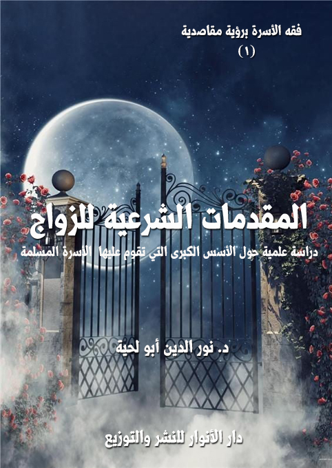

الكتاب: المقدمات الشرعية للزواج ـ برؤية مقاصدية ـ
المؤلف: أ.د. نور الدين أبو لحية
الناشر: دار الأنوار للنشر والتوزيع
الطبعة: الثانية، 1437 هـ
عدد الصفحات: 207
ISBN: 978-620-2-34215-5
لمطالعة الكتاب من تطبيق مؤلفاتي المجاني وهو أحسن وأيسر: هنا

التعريف بالكتاب
يتناول هذا الكتاب ستة مواضيع كبرى، تعطي بمجموعها صورة عن المقدمات التي يبدأ بها البيت المسلم وجهته لتحقيق عبوديته لله، وهي:
1. حقيقة الزواج وحكمه
2. المقاصد الشرعية من الزواج
3. تشريعات الإسلام لحفظ كيان الأسرة
4. الضوابط الشرعية لاختيار الزوجين
5. أحكام الخطبة
6. أحكام الزفاف
المقدمات الشرعية للزواج برؤية مقاصدية (8)
تتعرض الأسرة المسلمة اليوم إلى حرب معلنة صريحة تريد أن تجتثها من أصولها لتبني على أساسها نمط الأسرة الغربية بفكرها وسلوكها وقيمها.
ويتبنى هذه الحرب علانية أو إسرارا أكثر المنظمات العالمية ذات الطابع الاجتماعي، بل حتى ذات الطابع السياسي، ويوشك لو استمر الأمر على هذه الحال أن تفرض قوانين الأحوال الشخصية كما تفرض غيرها من القوانين.
وقد ساعد على هذه المواجهة الخارجية عاملان داخليان أمداها بما يكفي لتحقيق أهدافها.
يتمثل أولهما في دعاة التغريب وتحرير المرأة وفك الأسرة الذين يلتمسون مختلف الأساليب، ويتذرعون بأوهى الحيل، ويتلبسون بمختلف الأسماء ليستبدلوا ببنيان الأسرة الذي وضعه الشرع ببنيان اختلقوه من أهوائهم، وأسسوه على طبائعهم، ومزجوه بشهواتهم.
أما العامل الثاني، وهو أخطر العاملين، فيتمثل في الفقهاء المتزمتين الذين يبحثون عن علاج هذه الواقعة أو تحدي هذه المواجهة بما عولجت به وقائع القرون السالفة، فينصرون من حيث لا يعلمون حزب العامل الأول، ويمدون معه التمرد على الأحكام الشرعية أو الاحتيال عليها.
وهذا الواقع والمواقف حوله تستدعي البحث عن البديل الشرعي الذي يجمع بين مقتضيات الواقع وأحكام الشرع، الواقع الذي أراده الإسلام لا الذي يريد فرضه المنحلون، والشرع الذي يشمل الشريعة جميعا بمصادرها المختلفة، لا الذي يتزمت لرأي
المقدمات الشرعية للزواج برؤية مقاصدية (9)
أو يتعصب لقول، ويحجر على غيره اختيار غيره.
وقد اختلفت المدارس الفقهية في البحث عن هذا البديل الشرعي، ولعل أكبر مدرستين تنتشران الآن في العالم الإسلامي، من كليهما تصدر الفتوى فيما يتعلق بهذا الجانب، كما تصدر الفتاوى في غيره:
المدرسة المذهبية: وهي التي تختار مذهبا واحدا ترجح الآراء على أساسه، كائنا ما كان ذلك الرأي، وترجع عادة إلى كتب المتأخرين من الفقهاء تعتمدها كما تعتمد النصوص القرآنية والنبوية، بل قد تقدمها عليها في بعض الأحيان.
المدرسة اللامذهبية: وتتمثل في التيار الذي يريد طرح كل الاجتهادات الفقهية، والاستعاضة عنها بما ورد في النصوص، وقد تفهم تلك النصوص فهما حرفيا يبعدها عن الواقع بقدر سوء فهمها وبقدر سوء تحميلها لما لا تحتمله.
ومن بين هاتين المدرستين نجد مدرسة تجمع بين كلتا المدرستين من ناحية المصادر، وتضيف إليهما الاهتمام بالبعد الواقعي والمصلحي للأحكام الشرعية، وقد تمثلت في علماء من مختلف المذاهب، وفي العصور المختلفة للتشريع الإسلامي، قد يصطلح على تسميتها بالمدرسة المقاصدية.
ولا نريد بها من شذ عن العلماء والمذاهب الفقهية والنصوص الشرعية وادعى الاجتهاد من غير استكمال أدواته، فخرق الإجماع باجتهاده، ولوى أعناق النصوص، واتهم الفقهاء، التفاتا لمقاصد لم يردها الشرع، وإنما فرضتها الأهواء ودعا لها الانسياق وراء المذاهب والتيارات المختلفة.
وإنما نريد بهذه المدرسة: من تراعي في آرائها النصوص الأصلية لهذا الدين، وتعتبرها
المقدمات الشرعية للزواج برؤية مقاصدية (10)
الأساس الذي تنبني عليه المصالح والمفاسد، وتراعي في نفس الوقت اجتهادات العلماء والمذاهب الفقهية وتحترمها، بل تراها خزانها الذي تستمد منه الآراء التي تخدم بها المقاصد الشرعية.
فهي نصية من حيث اعتماد الأدلة النصية، ومذهبية من حيث الرجوع للمذاهب المختلفة، بل مذاهبية، لأنها لا تنصر مذهبا على مذهب ولا تتعصب لمذهب دون مذهب، بل ترى الجمع بينها جميعا ولو في المسألة الواحدة إذا اقتضى الحال ذلك، لأن الفقهاء اختلفت أقوالهم ومذاهبهم بحسب حاجات المجتمع، فلذلك من الحرج الشديد طرح أي رأي من الآراء أو رميه بالشذوذ أو التشنيع عليه بالبدعة لعدم انسجامه مع عقل من العقول أو طريقة من طرق التفكير.
فالمذاهب الفقهية جميعا مهما اختلفت مصادرها، والآراء الفقهية جميعا مهما اختلف القائلون بها تشكل الشريعة الإسلامية، فلا ينفرد بالشريعة رأي دون رأي ولا مذهب دون مذهب، وما يرجح من هذا المذهب هنا لهذه الحالة، قد يرجح غيره في مسألة أخرى لحالة أخرى.
انطلاقا من هذه الرؤية حاولنا في هذه السلسلة من (فقه الأسرة) أن نجمع ما أمكن من المسائل المتعلقة بفقه الأسرة في نواحيها المختلفة:
1. ناحية تأسيس الحياة الزوجية بمقدماتها وأركانها وموانعها والضوابط التي تحمي هذا التأسيس من عبث العابثين.
2. ناحية الحياة الزوجية، وما تتطلبه من حقوق وواجبات على كلا الزوجين، ثم كيفية حماية الحياة الزوجية من أسباب الخلاف وآثاره.
3.
4.
المقدمات الشرعية للزواج برؤية مقاصدية (11)
5. ناحية حل العصمة الزوجية بأنواعها المختلفة وبضوابطها الشرعية.
6. ناحية ثمرة الزواج والمقصد الأكبر من مقاصده، وهم الأولاد ببيان حقوقهم والضوابط الشرعية التي تحميها وتنفذها التنفيذ الصحيح وفق مقاصد الشرع.
لنجيب بذلك عن أهم التساؤلات المطروحة حول النظرة الإسلامية المفصلة للأسرة، أو الأسس الشرعية التي تقوم عليها علاقة الزوجية في الأسرة المسلمة، والحقوق المترتبة على هذه العلاقة، والضوابط الشرعية لإنهاء هذه العلاقة، والحقوق المتعلقة بالأولاد، باعتبارهم ركنا أساسيا من أركان الأسرة.
وقد حاولنا للإجابة عن هذه التساؤلات أن نذكر الأقوال المختلفة بأدلتها المفصلة، لعلمنا أن الشريعة تتكون من هذه الأقوال جميعا، وقد وجدنا من خلال البحث في المصادر المختلفة للعلماء المتقدمين الإجابات الوافية عن الأسئلة المعاصرة بدقة وموضوعية ومقاصدية، بل وجدنا فيها الحلول للكثير من القضايا التي يتصور البعض تقصير التشريع الإسلامي في شأنها.
وقد عنونا البحوث المرتبطة بهذا الجانب بـ (فقه الأسرة برؤية مقاصدية)، ولا بأس أن نشرح هنا مرادنا من هذا العنوان لدلالته على ما نريده من هذه السلسلة:
أما كلمة الفقه فنريد بها المسائل العملية المتعلقة بالأسرة، فلذلك لم نتحدث عن الجوانب النظرية أو الفلسفية المحضة إلا ما كان له علاقة بالجانب العملي.
وقد اخترنا اصطلاح الأسرة بدل اصطلاح الأحوال الشخصية، للدلالة المقاصدية لمصطلح الأسرة، والذي يعني أن هذه الأحكام لا تتعلق بحالة شخصية قد يتصرف فيها من تعلقت به كما يملي عليه هواه الشخصي، وإنما تتعلق بمجموعة وتركيبة تستدعي مراعاة
المقدمات الشرعية للزواج برؤية مقاصدية (12)
كل جزء فيها للأجزاء الأخرى.
أما الرؤية المقاصدية، فنريد بها الإشارة إلى أن ما سنذكره في هذا البحث من ترجيحات أو طرق تصنيف مجرد رؤى حاولنا فيها أن نراعي المقاصد الشرعية كما فهمناها، وهي بالتالي وجهات نظر نعرضها للمناقشة والبحث، ونحن مستعدون في أي لحظة للتنازل عن أي شيء منها إن تبين لنا الحق في خلافه، ولذلك ميزنا ما أوردناه من آراء عما ذكره الفقهاء بقولنا (نرى)
وقد دفعنا لكتابة هذه السلسلة الدوافع التالية:
1. الحاجة الواقعية الملحة للإجابة عن كثير من التساؤلات في هذا الجانب، والتي يتولى الإفتاء فيها في أحيان كثيرة من لا يحسن النظر في المقاصد الشرعية، فيفتي بناء على رأي من الآراء لو عاش صاحبه لتركه أو لأفتى بغيره، أو بناء على نص قد لا يصح ثبوتا، أو قد يساء فهمه دلالة، وهذا ما دعانا إلى البحث عن أكثر ما نجده من مسائل، وتصنيفها بطريقة هي أقرب إلى الفتوى منها إلى الموضوع الفقهي العادي.
2. الحاجة إلى معرفة الأقوال المختلفة في المسائل الشرعية، سواء كانت هذه الأقوال داخل المذاهب الفقهية المشهورة أو خارجها، لأن الإفتاء بقول واحد، أو الاقتصار على رأي واحد قد يوهم الإجماع في المسألة، وقد يضيق بذلك ما وسع الله، فقد يصلح لزيد من الأقوال ما لا يصلح لعمرو.
فلذلك كان تكليف الخلق بقول واحد فيما أراد الشرع وجود الخلاف فيه متنافيا مع المقاصد الشرعية، والتي على أساسها فرق بين قطعي النصوص وظنيها، والزعم بأن هذا القول هو الأرجح، وأن غيره ضعيف أو شاذ نوع من احتكار أحكام الله التي لم يختص بها
المقدمات الشرعية للزواج برؤية مقاصدية (13)
فقيه دون فقيه، وسنرى في هذه السلسلة كيف شنع بعض العلماء على آخرين لقولهم بأن أقصى مدة الحمل تسعة أشهر، ورماهم بأنواع الشذوذ المقاربة للكفر لهذا القول مع كونه هو الأرجح الذي قطع بصحته العلم كما قطع بصحته قبله الكتاب والسنة.
3. الحاجة إلى ذكر الأدلة بتفاصيلها وفروعها المختلفة، ولو اقتضى الأمر الإطناب في ذلك، لأن كثيرا من الآراء ترد وتعتبر خارجة من الشريعة مع قيمتها الواقعية، فإذا ما سئل عن سبب ذلك قيل: ليس معهم دليل، أو رأيهم مرجوح، ولسنا ندري كيف يمكن أن يوجد قول فقهي لإمام مجتهد دون أن يكون له دليله الذي يستند إليه، فلذلك تقتضي الموضوعية العلمية التي حثنا الشرع على اتباعها أن نبحث عن الأدلة من مصادرها المختلفة، ثم بعد ذلك لا بأس أن نتوجه لها بالنقد والتمحيص، أما نقدها من غير ذكرها، فهو نوع من المصادرة على المطلوب.
وقد راعينا في هذه السلسلة مجموعة مناهج وطرق بحسب الموضوع الذي يراد بحثه، وسنلخص هنا عملنا فيه ليسهل التعامل معه:
تصنيف المسائل الفقهية: وذلك بحسب موضوعاتها، وقد حاولنا في هذه السلسلة أن نطرق كل ما تمس إليه الحاجة من مواضيع الباب دون أن نستثني منها الدقيق أو الجليل.
وقد استبعدنا الكلام عن كثير من المسائل الفقهية التي لا ترتبط بواقعنا كالمسائل المتعلقة بالإماء والعبيد، وإذا ذكرناها فإنما نذكرها لبعض ما نرى الحاجة إليه، أو للتعرف على أدلتها التي نستفيد منها في المواضيع التي لها صلة بالواقع.
والواقع الذي نقصده هنا هو واقع المجتمعات الإسلامية جميعا، فلم نستثن منها مجتمعا دون مجتمع، فهناك المجتمعات المحافظة المتشددة، وهناك المجتمعات المتساهلة
المقدمات الشرعية للزواج برؤية مقاصدية (14)
البعيدة عن كثير من الأحكام الشرعية، فلذلك من الخطأ أن نحكم على بعض ما سنذكره بأنه بعيد عن الواقع، أو ليست له صلة واقعية بحجة عدم تناسبه مع واقع معين.
حصر الأقوال الفقهية في المسائل المختلفة: وقد حاولنا لضرورة هذا الحصر سواء للأقوال أو للأدلة المتعلقة بها أن نتبنى بعض الاصطلاحات التصنيفية التي نوضحها فيما يلي:
1. ذكرنا الاتجاه العام للفقهاء في المسألة معبرين عنه بصيغة [القول] وعادة ما يكون في المسائل اتجاهان، اتجاه مثبت واتجاه ناف، فيعبر عنهما بالقول الأول والقول الثاني.
ولا يخالف هذا ما قد يذكره الفقهاء من أن في المسألة أقوالا كثيرة، لأن الاصطلاح الذي أردناه بالقول ليس مجرد الخلاف، وإنما الاتجاه العام الذي ينطلق منه الخلاف.
2.تحليل التفريعات المختلفة لكل قول معبرين عن ذلك بالآراء، مع اتفاق هذين المصطلحين في الدلالة على الخلاف عند كل الفقهاء، وإنما دعانا إلى هذا: الضرورة التصنيفية، فالآراء المختلفة والمتفرعة عن قول واحد لها دليل واحد في اتجاهها العام، وإن كانت تختلف عنه في التفاصيل، ولو ذكرنا لكل قول أدلته لأدى ذلك إلى التكرار.
والغرض من هذه الطريقة في ذكر الخلاف هو أنها أسهل في التعرف على الآراء من ذكر المذاهب الفقهية، لأن من يبحث مثلا عن الخلاف الفقهي في شرط من الشروط كما تذكره كثير من الكتب الناقلة للخلاف الفقهي يصعب عليه ذلك في أكثر المسائل بحيث يتطلب ذلك منه الاطلاع على آراء كل مذهب في الشروط جميعا ليتوصل بعدها وبعد الموازنة لما يريده.
زيادة على أن تلك الطريقة تحول دون التعرف على الخلاف الفقهي غير المشتهر،
المقدمات الشرعية للزواج برؤية مقاصدية (15)
والذي أوليناه أهمية كبرى في هذه السلسلة.
وقد حاولنا أن نسلك هذا في أكثر ما نطرحه من مسائل الخلاف، ولكنا مع ذلك قد نذكر أحيانا آراء المذاهب الفقهية المنتشرة في العالم الإسلامي فيما يصعب حصر الخلاف فيه، أو بغية الاطلاع على وجهات النظر العامة للمذاهب الفقهية، أو كمقدمة لذكر الفروع المختلف فيها.
3. ذكر الأدلة المختلفة لكل قول، وقد حاولنا استيعاب أكبر قدر من الأدلة في ذلك، وحرصا على أمانة النقل، ذكرنا الأدلة كما وردت في مصادرها مع بعض التصرف في الأسلوب لتسهيل ما نراه معقدا من العبارات.
4. ترتيب الأدلة، وقد حاولنا تصنيف الأدلة في وحدات مرتبة بحسب المصادر الشرعية، فبدأنا بالأدلة القرآنية، ثم بالأحادبث النبوية الشريفة، ثم بالآثار المنقولة عن السلف وغيرهم، ثم بالأدلة العقلية مع التركيز على الأدلة المقاصدية من اعتبار المصالح وسد الذرائع وغيرها.
والغرض من هذا التقسيم للأدلة هو سهولة الاطلاع على كل دليل ومناقشته بخلاف ما لو سيق جملة واحدة، فقد يخفي بعض الدليل بعضه الآخر.
الترجيح: وقد ختمنا كل خلاف فقهي بذكر ما نراه من ترجيح، وقد اعتمدنا مناهج مختلفة في الترجيح، فقد نختار قولا من الأقوال في المسألة، فتكون أدلة ترجيحنا هي أدلة القول المرجح، وقد نجمع بين قولين لرؤيتنا عدم التعارض بينهما، أو لتكافئ الأدلة بحيث يصعب الانتصار لقول دون قول، وقد نرى رأيا غير ما ذكرنا من الأقوال، وذلك لعدم الإجماع في المسألة، ونطرحه في هذه الحالة عادة كرأي نراه لا كترجيح نعتمده.
المقدمات الشرعية للزواج برؤية مقاصدية (16)
ونحاول في أكثر الترجيحات أن ندعم ما نراه من آراء بنصوص لعلماء ذهبوا لنفس الترجيح أو قريب منه، تأييدا لما ذكرنا من الرأي، أو بيانا لاحتمال الخلاف فيه.
ونحب أن ننبه هنا إلى أن هذه الترجيحات قد تنطلق من وجهة نظر معينة في مسألة من المسائل لتسري بعدها لكل الرؤى الترجيحية بعدها.
وقد ناقشنا في بعض الترجيحات أصول الأدلة التي يعتمد عليها أصحاب الأقوال في ما ذهبوا إليه، وفي حال اعتمادهم على النصوص الحديثية تكون مناقشتنا للأدلة في الهامش الذي خصص لمعرفة درجة الحديث، فنذكر ما قال فيه العلماء تصحيحا أو تضعيفا.
التوثيق: وهو أهم عملية في المنهج الذي حاولنا سلوكه في هذه السلسلة، وسنذكر هنا منهجنا في التوثيق بحسب المعلومة أو النص المراد توثيقه:
القرآن الكريم: وقد ذكرنا تخريج الآيات بجانب كل آية مع شكل الآية، ولم نتوخ الرسم العثماني من باب التيسير على من ليست له معرفة بهذا الرسم.
السنة المطهرة: وقد ذكرنا تخريج الأحاديث في الهامش، وذلك بذكر المصادر التي توجد فيها الأحاديث باختلاف درجاتها، فلهذا قد أذكر البخاري مع ابن أبي الدنيا، لأن الغاية هي بيان مصادر الروايات المختلفة للحديث، فالحديث قد يكون صحيحا في أصله، ولكن الاستدلال يتوجه للروايات الضعيفة فيه، فلذلك حاولنا ذكر أكثر مصادر الحديث الواحد للرجوع إليها في رواياته المختلفة خاصة إن كان الحديث مما له علاقة بأحكام المسألة.
أما إن لم يكن له علاقة كبرى بأحكام المسائل، فنكتفي فيه بعزوه إلى من خرجه انطلاقا مما أوردته المصادر المهتمة بالتخريج.
المقدمات الشرعية للزواج برؤية مقاصدية (17)
وقد ذكرنا في الأحاديث التي تتعلق بها الأحكام أقوال المحققين من متأخري المحدثين كابن حجر والزيلعي والمناوي وابن الجوزي والشوكاني وابن القيم وابن تيمية وغيرهم ممن كتبوا في تخريج الأحاديث الفقهية أو توجهوا إليها بالنقد.
المذاهب الفقهية: وقد رجعنا إلى المصادر المختلفة لهذه المذاهب سواء كانت من كتب المتقدمين، أي أصول المذاهب، أو من كتب المتأخرين من المتون والشروح والحواشي.
وقد ذكرنا المصادر المعتمدة في كل فقرة في الهامش دون كثرة اللجوء للهامش للتوثيق خشة الإطالة، لأن المصادر المذكورة تفي بالغرض، ولأن الكلام في أحيان كثيرة يكون ملخصا من المصادر المختلفة المذكورة في بداية الفقرة.
الأدلة الفقهية: ومرجعنا فيها عادة كتب التفسير والحديث والفقه المقارن والكتب الموسعة للمذاهب الفقهية، وقد ذكرنا توثيقها إما عند ذكر الاستدلال أو ضمن كل استدلال، أو عند ذكر الآراء الفقهية.
-\--\-
ويمكن تصنيف المراجع التي اعتمدت عليها في هذه السلسلة إلى نوعين من المراجع:
مراجع المذاهب والآراء الفقهية: ويمكن تقسيمها إلى نوعين:
مراجع الفقه المقارن: وهي التي أرجع إليها عادة في البحث عن الخلاف الواقع في كل مسألة، وأهمها المغني لابن قدامة، فقد رأيت أنه المرجع المعتمد عند كثير من العلماء المتقدمين والمتأخرين، ومنها المحلى لابن حزم فقد ذكر فيه كثيرا من الأقوال المخالفة لقوله، ومنها المصنفات الخاصة بفقه السلف كمصنف ابن أبي شيبة ومصنف عبد الرزاق، بالإضافة إلى كتب التفسير وشروح الحديث التي اهتمت بالمقارنة بين المذاهب الفقهية
المقدمات الشرعية للزواج برؤية مقاصدية (18)
وخاصة التمهيد لابن عبد البر وفتح الباري لابن حجر.
ومع ذلك لا أكتفي في أكثر الأحوال بهذه المراجع، بل أرجع لكتب المذاهب للتأكد من صحة ما ذكر في هذه المراجع، وأحيانا أشير إلى مخالفتها لما ذكره أصحاب المذاهب.
مراجع الآراء الفقهية المختلفة: وهي كتب المذاهب الفقهية، سواء كانت أصولا أم متونا وشروحا وحواش، وأرجع إليها عادة للتأكد مما ذكره من كتبوا في الخلاف في المسألة، زيادة على ذكر الفروع المتعلقة بالمسائل.
مراجع الأدلة: وهي زيادة على ما ذكر سابقا:
كتب التفسير المهتمة بفقه الأحكام الشرعية كالقرطبي والجصاص، أو غيرها كابن كثير والألوسي وبعض تفاسير الإمامية المعاصرين.
كتب الحديث من الصحاح والسنن والمسانيد وغيرها من الكتب التي اشتملت على سرد الأحاديث النبوية وبيان درجاتها.
شروح الحديث باختلاف أنواعها وخاصة نيل الأوطار وسبل السلام وشرح النووي على مسلم وشرح معاني الآثار وغيرها.
الكتب والرسائل الفقهية المتخصصة كأحكام أهل الذمة وطلاق الغضبان لابن القيم وأكثر كتبه وكتب ابن تيمية.
-\--\-
ومن الصعوبات التي صادفتها في هذه السلسلة المنهج المقارن الذي حاولت تبنيه في أكثر المسائل المطروحة، بحيث يصعب في كثير من الأحيان تمييز الأقوال مع التوثيق للقائلين بها.
المقدمات الشرعية للزواج برؤية مقاصدية (19)
ومن الصعوبات الكبرى كذلك أن الأدلة على بعض المسائل قد تعتمد على رأي أصحاب القول في المسائل الأخرى، والتي قد تتعارض مع المتفقين معهم في القول في تلك المسألة، ولذلك ذكرنا عند بيان الاستدلال في أكثر مواضعه عبارة (ومن الأدلة على ذلك) لبيان أن هذه الأدلة قد يتفق على الاستدلال بها أصحاب القول نفسه وقد يختلفون.
وهذا كله زيادة على الصعوبات المتعلقة بالتوثيق للأقوال، وذلك مما تطلب منا في بعض الأحيان ذكر نصوص أقوال أئمة المذاهب أو أقوال كبار الفقهاء أو حتى أقوال المتأخرين إما لضرورة توثيق ما تمس الحاجة إلى زيادة التأكيد في توثيقه أو لبيان وجه الاستدلال مما يصعب ذكره على الطريقة التي حاولنا تبنيها.
وأخيرا، فإن أصبت في بعض ما انتهجته في هذه االسلسلة، فإني أحمد الله عليه، فله وحده المنة والفضل، وإن أخطأت أو قصرت، فهو جهد الضعيف، وأنا شاكر لكل من نبهني لخطأ أو دلني على صواب، وأستغفر الله أولا وآخرا.
المقدمات الشرعية للزواج برؤية مقاصدية (20)
لا يمكن للبيت المسلم، والأسرة المسلمة أن تؤسس أساسا صحيحا إلا إذا صحت الأسس التي تقوم عليها تلك الأسرة، وأول تلك الأسس هي المقدمات التي يبدأ بها البيت المسلم وجهته لتحقيق عبوديته لله، فمن أشرقت بدايته أشرقت نهايته، وما صلح أوله حفظ آخره.
فلذلك كان أول ما ينبغي الاهتمام به هو البحث عن هذه المقدمات على ضوء ما أرادت الشريعة، وعلى ضوء ما يقصد الشرع في هذا من مقاصد.
وقد رأينا أن هذه المقدمات لا تعدو المقدمات الستة التالية:
1. حقيقة الزواج وحكمه
2. المقاصد الشرعية من الزواج
3. تشريعات الإسلام لحفظ كيان الأسرة
4. الضوابط الشرعية لاختيار الزوجين
5. أحكام الخطبة
6. أحكام الزفاف
لأن من أراد الزواج يحتاج أولا إلى معرفة الحكم الشرعي المتعلق بحاله، حتى يقدم عليه انطلاقا من أمر الله لا من هواه، فيتعبد الله بزواجه.
ثم يحتاج إلى معرفة مقاصد الزواج ليراعيها، أو ليضبط نفسه على مراعاتها، حتى تنطلق حياتته الزوجية انطلاقة صحيحة.
المقدمات الشرعية للزواج برؤية مقاصدية (21)
ثم يحتاج إلى معرفة تشريعات الإسلام لحفظ كيان الأسرة حتى يطبقها في حياته الزوجية لتستمر وفق الرؤية الشرعية.
ثم يقدم على اختيار من يرغب في الزواج منها، أو تقدم على القبول بمن تقدم إليها، انطلاقا من الضوابط الشرعية التي تحفظ الحياة الزوجية، لا انطلاقا من الأهواء التي قد تنحرف بالمقاصد عن وجهتها الشرعية.
ثم تكون الخطبة والزفاف ـ وكلاهما من مقدمات الزواج الشرعية والواقعية ـ انطلاقا من الضوابط الشرعية لا الأعراف والتقاليد.
المقدمات الشرعية للزواج برؤية مقاصدية (22)
المقدمات الشرعية للزواج برؤية مقاصدية (23)
من الأمور الأساسية التي يلزم الراغب في الزواج التعرف عليها التعرف على:
1. الحقيقة الشرعية للزواج: وذلك لأن الحقيقة الشرعية للأشياء هي أول ما ينطلق منه المسلم في أي سلوك أو عمل يقوم به، فالمصطلح الواحد قد يشترك في استعماله المحق والمبطل، والشرع والهوى.
2. مشروعية الزواج: فلا يحل القدوم على أمر قبل معرفة حكم الله فيه، قال تعالى: {يَا أَيُّهَا الَّذِينَ آمَنُوا لا تُقَدِّمُوا بَيْنَ يَدَيِ اللَّهِ وَرَسُولِهِ وَاتَّقُوا اللَّهَ إِنَّ اللَّهَ سَمِيعٌ عَلِيمٌ} (الحجرات:1)
3. أحكام الزواج المرتبطة بالحالات المختلفة: لينزلها كل شخص على حالته الخاصة.
وقد خصصنا مبحثا خاصا لكل أمر من هذه الأمور.
1 ـ لفظ النكاح (1): يطلق لفظ النكاح في اللغة على أمور منها:
الزواج: يقال: امرأَة يَنْكِحُها نِكاحاً إِذا تزوجها، تقول: نَكَحْتُها ونَكَحْت هي أَي تزوَّجت؛ وهي ناكح في بني فلان أَي ذات زوج منهم. قال الأَعشى في نَكَحَ بمعنى تزوج:
__________
(1) لسان العرب: 2/ 625، النهاية: 5/ 113.
المقدمات الشرعية للزواج برؤية مقاصدية (24)
ولا تَقْرَبَنَّ جارةً إِنَّ سِرَّها عليك حرامٌ فانْكِحَنْ أَو تَأَبَّدا
الوطء: يقال: نَكَحَها يَنْكِحُها إذا باضعها، قال الأَزهري: أَصل النكاح في كلام العرب الوطء، وقيل للتزوّج نكاح لأَنه سبب للوطء المباح، وقال ابن سيده: النِّكاحُ البُضْعُ، وذلك من نوع الإِنسان خاصة، واستعمله ثعلب في الذُّباب؛ نَكَحَهَا يَنِكحُها نَكْحاً ونِكاحاً، ورجل نُكَحَةٌ ونَكَحٌ: كثير النكاح.
2 ـ لفظ الزواج (1): الزوج خلاف الفَرْدِ. يقال: زَوْجٌ أَو فَرْدٌ، كما يقال شَفْعٌ أَو وِتْرٌ؛ ويقال هما زَوْجان للاثنين وهما زَوْجٌ كما يقال هما سِيَّانِ وهما سَواءٌ؛ قال ابن سيده: الزَّوْجُ الفَرْدُ الذي له قَرِينٌ الزوج الاثنان وعنده زَوْجَا نِعالٍ زوجا حمام؛ يعني ذكرين أَو أأُنثيين وقيل يعني ذكراً وأُنثى ولا يقال زوج حمام لأَن الزوج هنا هو الفرد.
قال أَبو بكر: العامة تخطئ فتظن أَن الزوج اثنان وليس ذلك من مذاهب العرب إِذ كانوا لا يتكلمون بالزَّوْجِ مُوَحَّداً في مثل قولهم زَوْجُ حَمامٍ ولكنهم يثنونه فيقولون عندي زوجان من الحمام يعنون ذكراً وأُنثى وعندي زوجان من الخفاف يعنون اليمين والشمال ويوقعون الزَّوْجَيْنِ على الجنسين المختلفين نحو الأَسود والأَبيض والحلو والحامض قال ابن سيده: ويدل على أَن الزوجين في كلام العرب اثنان قول اللَّه تعالى: {وَأَنَّهُ خَلَقَ الزَّوْجَيْنِ الذَّكَرَ وَالْأُنْثَى} (النجم:45)؛ فكل واحد منهما كما ترى زوج ذكراً كان أَو أُنثى ومثله قوله تعالى: {فَجَعَلَ مِنْهُ الزَّوْجَيْنِ الذَّكَرَ وَالْأُنثَى} (القيامة:39) وقال اللَّه تعالى: {فَاسْلُكْ فِيهَا مِنْ كُلٍّ زَوْجَيْنِ اثْنَيْنِ} (المؤمنون:27)
ويجمع الزوج أَزْوَاجا وأَزَاويجَ وقد ازْدَوَجَتِ الطير افْتِعالٌ منه؛ وقوله تعالى {ثَمَانِيَةَ أَزْوَاجٍ} (الأنعام:143)؛ أَراد ثمانية أَفراد دل على ذلك؛ قال ولا تقول للواحد من الطير زَوْجٌ كما تقول للاثنين زوجان يل يقولون للذكر فرد وللأُنثى فَرْدَةٌ.
__________
(1) لسان العرب:2/ 291، محتار الصحاح:117.
المقدمات الشرعية للزواج برؤية مقاصدية (25)
ويقال للرجل والمرأَة الزوجان قال اللَّه تعالى: {ثَمَانِيَةَ أَزْوَاجٍ} (الأنعام:143)؛ يريد ثمانية أَفراد؛ والأَصل في الزَّوْجِ الصِّنْفُ والنَّوْعُ من كل شيء وكل شيئين مقترنين شكلين كانا أَو نقيضين فهما زوجان.
اختلفت تعاريف الفقهاء للزواج بحسب آرائهم فيه وتصوراتهم له، فلذلك سنذكر بعض النماذج لهذه التعاريف، مع إرجاء ما يتعلق بها من شرح وتفصيل لمحله:
1. عقد يتضمن إباحة وطء بلفظ إنكاح أو تزويج أو بترجمته (1).
2. حصول السكن والازدواج بين الزوجين لمنفعة المتعة وتوابعها (2).
3. عقد بين الزوجين يحل به الوطء (3).
4. هو عقد على مجرد متعة التلذذ بآدمية غير موجب قيمتها ببينة قبله غير عالم عاقدها حرمتها إن حرمها الكتاب على المشهور أو الإجماع على الآخر (4).
للتعاريف المتقدمة ضوابط كثيرة سنتعرف عليها في محالها من هذه السلسلة، وسنكتفي هنا بضابطين، هما ألصق ما يكون بحقيقة النكاح الشرعية، وهما:
__________
(1) حاشيتا قليوبي وعميرة: 3/ 207، غاية البيان شرح ابن رسلان:1/ 246.
(2) الفتاوى الكبرى: 6/ 261.
(3) البحر الزخار: 4/ 3.
(4) هذا التعريف الذي أورده المالكية للزواج من أشهر التعاريف عندهم، انظر: شرح حدود ابن عرفة: 152.
المقدمات الشرعية للزواج برؤية مقاصدية (26)
اختلف الفقهاء في حقيقة النكاح الشرعية، هل هي العقد أم الوطء أم كلاهما على الأقوال التالية:
القول الأول: أن لفظ النكاح يطلق حقيقة على الوطء، مجازا على العقد، وهو قول الحنفية، والمشهور عند الإمامية (1)، واستدلوا على ذلك بما يلي (2):
1. أن اسم النكاح في الشريعة يدل على معناه الحقيقي، فقد قال الله تعالى: {وَابْتَلُوا الْيَتَامَى حَتَّى إِذَا بَلَغُوا النِّكَاحَ} ِ (النساء:6) يعني الاحتلام، فإن المحتلم يرى في منامه صورة الوطء، وقال الله تعالى: {الزَّانِي لَا يَنكِحُ إلَّا زَانِيَةً أَوْ مُشْرِكَةً وَالزَّانِيَةُ لَا يَنكِحُهَا إِلَّا زَانٍ أَوْ مُشْرِكٌ وَحُرِّمَ ذَلِكَ عَلَى الْمُؤْمِنِين} َ (النور:3) والمراد الوطء، أما في الموضع الذي حمل على العقد فذلك لدليل اقترن به من ذكر العقد أو خطاب الأولياء في قوله: {وَأَنكِحُوا الْأَيَامَى مِنْكُمْ} (النور:32) أو اشتراط إذن الأهل في قوله تعالى: {فَانكِحُوهُنَّ بِإِذْنِ أهْلِهِنَّ} (النساء:25)
2. أن النكاح في اللغة عبارة عن الوطء، تقول العرب: تناكحت العرى أي تناتجت ويقول: أنكحنا العرى فسنرى لأمر يجتمعون عليه وينظرون ماذا يتولد منه، وحقيقة المعنى فيه هو الضم ومنه يقال: أنكح الظئر ولدها أي ألزمه، وقال القائل: إن القبور تنكح الأيامى والنسوة الأرامل اليتامى أي تضمهن إلى نفسها واحد الواطئين ينضم إلى صاحبه في تلك الحالة فسمي فعلهما نكاحا.
3. أن لفظ النكاح استعير للعقد مجازا إما لأنه سبب شرعي يتوصل به إلى الوطء، أو لأن في العقد معنى الضم، فإن أحدهما ينضم به إلى الآخر ويكونان كشخص واحد في القيام بمصالح المعيشة.
__________
(1) مختلف الشيعة: كتاب النكاح ج 7 ص 35..
(2) المبسوط:4/ 192، الجصاص: 3/ 391، كشف الأسرار: 2/ 64.
المقدمات الشرعية للزواج برؤية مقاصدية (27)
القول الثاني: هو حقيقة في العقد، مجاز في الوطء، فيحمل عليه بقرينة، وهو قول الجمهور، واستدلوا على ذلك بما يلي (1):
1. أن الأشهر استعمال لفظة النكاح بإزاء العقد في الكتاب والسنة ولسان أهل العرف، وقد قيل: ليس في الكتاب لفظ نكاح بمعنى الوطء، إلا قوله تعالى: {فَإِنْ طَلَّقَهَا فَلَا تَحِلُّ لَهُ مِنْ بَعْدُ حَتَّى تَنكِحَ زَوْجًا غَيْرَهُ} (البقرة:230)
2. أنه يصح نفيه عن الوطء، فيقال: هذا سفاح وليس بنكاح وقد روي عنه صلى الله عليه وآله وسلم أنه قال: (ولدت من نكاح، لا من سفاح) (2)،ويقال عن السرية: ليست بزوجة، ولا منكوحة.
3. أن النكاح أحد اللفظين اللذين ينعقد بهما عقد النكاح، فكان حقيقة فيه، كاللفظ الآخر.
4. أن ما ذكره أصحاب القول الثالث يفضي إلى كون اللفظ مشتركا وهو على خلاف الأصل، وما ذكره أصحاب القول الأول يدل على الاستعمال في الجملة.
5. أنه لو قدر كونه مجازا في العقد لكان اسما عرفيا، يجب صرف اللفظ عند الإطلاق إليه، لشهرته، كسائر الأسماء العرفية.
القول الثالث: أنه حقيقة في العقد والوطء، وهو قول القاضي من الحنابلة، قال: الأشبه بأصلنا أنه حقيقة في العقد والوطء جميعا، لقولنا بتحريم موطوءة الأب من غير
__________
(1) المغني: 7/ 3، فروق القرافي: 3/ 145.
(2) رواه الطبراني والبيهقي من طريق أبي الحويرث عن بن عباس وسنده ضعيف ورواه الحارث بن أبي أسامة ومحمد بن سعد من طريق عائشة وفيه الواقدي ورواه عبد الرزاق عن بن عيينة عن جعفر بن محمد عن أبيه مرسلا، انظر: تلخيص الحبير: 3/ 176، خلاصة البدر المنير: 2/ 198.
المقدمات الشرعية للزواج برؤية مقاصدية (28)
تزويج، لدخوله في قوله تعالى: {وَلَا تَنكِحُوا مَا نَكَحَ آبَاؤُكُمْ مِنْ النِّسَاءِ} (النساء:22) (1)
الترجيح:
نرى أن الخلاف في هذه المسألة مع كثرة الجدل حولها خلاف لفظي باعتبارين:
باعتبار الدلالة اللغوية والشرعية: فقد ورد اللفظ ـ كما رأينا في اللغة ـ للدلالتين جميعا، ولا يصح ترجيح إحداهما على الأخرى من هذه الجهة.
وفي النصوص الشرعية ورد كذلك للدلالتين جميعا، فقد جاء في القرآن للعقد باتفاق كما في قوله تعالى: {فَانكِحُوا مَا طَابَ لَكُمْ مِنَ النِّسَاءِ} (النساء:3) وقوله تعالى: {فَانكِحُوهُنَّ بِإِذْنِ أهْلِهِنَّ} (النساء:25) وقوله: {وَأَنكِحُوا الْأَيَامَى مِنْكُمْ} (النور:32)، وجاء للوطء كما في قوله تعالى: {{وَابْتَلُوا الْيَتَامَى حَتَّى إِذَا بَلَغُوا النِّكَاحَ} ِ (النساء:6)، أي إذا بلغ اليتامى وقت القدرة على وطء النساء.
باعتبار الأثر العملي للخلاف: وقد اعتبر بعضهم أن لهذا الخلاف أثرا عمليا، ومن ذلك قوله تعالى: {وَلَا تَنكِحُوا مَا نَكَحَ آبَاؤُكُمْ مِنْ النِّسَاءِ} (النساء:22) فإن معناها على اعتبار أن النكاح يراد به الوطء: (ولا تطئوا ما وطئ آباؤكم)، ويتناول ذلك الحلال والحرام، وتثبت بالآية حرمة المصاهرة بوطء الأجنبية، وعلى القول الآخر معناها: (لا تعقدوا على ما عقد عليه آباؤكم) ولا يثبت بها حرمة المصاهرة بوطء الأجنبية.
ومثله قوله تعالى: {فَإِنْ طَلَّقَهَا فَلَا تَحِلُّ لَهُ مِنْ بَعْدُ حَتَّى تَنكِحَ زَوْجًا غَيْرَهُ} (البقرة:230) (2) فبعضهم حمل النكاح على العقد، فقال في الآية مد الحرمة إلى غاية وهي
__________
(1) المغني: 7/ 3.
(2) وبعض المحققين من الحنفية حملوا النكاح المذكور في هذه الآية على الوطء، وقالوا ذكر العقد مستفاد بذكر قوله تعالى: {زوجا غيره}، فلا يصير زوجا إلا بالعقد، فلا يحمل النكاح على العقد لأنه يكون تكرارا غير مفيد فحملوه على الوطء وصار معناه: فلا تحل هذه المطلقة ثلاثا حتى تمكن من وطئها رجلا، وقد تزوجها بعد انقضاء عدتها من الأول.
المقدمات الشرعية للزواج برؤية مقاصدية (29)
العقد وظاهرها يقتضي أن تنتهي عند العقد ولا يشترط الوطء لحل المطلقة ثلاثا كما هو مذهب سعيد بن المسيب، لكن زيد عليه الوطء بخبر ذوق العسيلة وهو مشهور، (1) وبعضهم حملها على الوطء الذي نص عليه الحديث الشريف (2).
ونرى أن ما ذكر من هذا الأثر العملي غير صحيح، لأن هذه الأقوال والخلافات الواردة فيها لا تستند فقط للتفريق بين معنيي النكاح، وإنما لها أدلتها الخاصة، كما سنرى في محله إن شاء الله.
اتفق الفقهاء على أن النكاح من باب تمليك الانتفاع لا من باب تمليك المنفعة لأنه يجوز للزوج أن يباشر بنفسه المنفعة، وليس له أن يمكن غيره من تلك المنفعة، فهو ليس مالكا للمنفعة، بل مقتضى عقد النكاح أنه ينتفع هو خاصة لا مالك المنفعة.
والفرق بين النوعين هو أن تمليك الانتفاع يجيز له أن يباشر هو بنفسه فقط الانتفاع الذي تملكه، ومثاله سكنى المدارس والمجالس في الجوامع والمساجد والأسواق ومواضع النسك كالمطاف والمسعى ونحو ذلك، فله أن ينتفع بنفسه فقط، ولو حاول أن يؤاجر بيت المدرسة أو يسكن غيره أو يعاوض عليه بطريق من طرق المعاوضات امتنع ذلك.
أما تمليك المنفعة فهو أعم وأشمل فيباشر بنفسه ويمكن غيره من الانتفاع، ومثاله من استأجر دارا أو استعارها فله أن يؤاجرها من غيره، أو يسكنه بغير عوض ويتصرف في هذه المنفعة تصرف الملاك في أملاكهم على جري العادة، على الوجه الذي ملكه، فهو تمليك
__________
(1) طلبة الطلبة: 38.
(2) حاشيتا قليوبي وعميرة: 3/ 207.
المقدمات الشرعية للزواج برؤية مقاصدية (30)
مطلق في زمن خاص حسبما تناوله عقد الإجارة، أو أشهدت به العادة في العارية (1).
دلت الأدلة الكثيرة من الكتاب والسنة على مشروعية الزواج، ولهذا انعقد الإجماع على ذلك، وصار معلوما من الدين بالضرورة، وسنسوق في هذا المبحث ما أمكن من النصوص المثبتة لهذه المشروعية:
وردت النصوص القرآنية الكثيرة الدالة على مشروعية الزواج والحث عليه وبيان الكثير من أحكامه، والمصححة لكثير من الأخطاء حوله، وسنسرد هذه النصوص وما يتعلق بها من أحكام في مواضعها الخاصة، ونكتفي هنا ببعض النصوص كنماذج لما ورد في القرآن الكريم:
1. قال تعالى: {وَمِنْ آيَاتِهِ أَنْ خَلَقَ لَكُمْ مِنْ أَنفُسِكُمْ أَزْوَاجًا لِتَسْكُنُوا إِلَيْهَا وَجَعَلَ بَيْنَكُمْ مَوَدَّةً وَرَحْمَةً إِنَّ فِي ذَلِكَ لَآيَاتٍ لِقَوْمٍ يَتَفَكَّرُونَ} (الروم:21)، ففي هذه الآية توجيه للأنظار للنعم التي وضعها الله تعالى في الزواج، وكيف هيأ الزوجين لبعضهما لتنتج عن ذلك المودة والرحمة.
2. قال تعالى: {وَلَقَدْ أَرْسَلْنَا رُسُلًا مِنْ قَبْلِكَ وَجَعَلْنَا لَهُمْ أَزْوَاجًا وَذُرِّيَّةً وَمَا كَانَ لِرَسُولٍ أَنْ يَأْتِيَ بِآيَةٍ إِلَّا بِإِذْنِ اللَّهِ لِكُلِّ أَجَلٍ كِتَاب} ٌ (الرعد: 38)، وفي هذه الآية إخبار بأن الزواج من سنن المرسلين، وفيه رد بليغ على الممتنعين عنه بحجة التعبد والتبتل.
3. قال تعالى: {وَأَنكِحُوا الْأَيَامَى مِنْكُمْ وَالصَّالِحِينَ مِنْ عِبَادِكُمْ وَإِمَائِكُمْ إِنْ يَكُونُوا
4.
__________
(1) أنوار البروق:1/ 187.
المقدمات الشرعية للزواج برؤية مقاصدية (31)
5. فُقَرَاءَ يُغْنِهِمْ اللَّهُ مِنْ فَضْلِهِ وَاللَّهُ وَاسِعٌ عَلِيمٌ} (النور:32)، وفي هذه الآية حث على تزويج من للمسلم ولاية عليهم، ونهي عن جعل الفقر حاجزا بين المؤمن والزواج.
6. قال تعالى: {وَإِنْ خِفْتُمْ أَلَّا تُقْسِطُوا فِي الْيَتَامَى فَانكِحُوا مَا طَابَ لَكُمْ مِنَ النِّسَاءِ مَثْنَى وَثُلَاثَ وَرُبَاعَ فَإِنْ خِفْتُمْ أَلَّا تَعْدِلُوا فَوَاحِدَةً أَوْ مَا مَلَكَتْ أَيْمَانُكُمْ ذَلِكَ أَدْنَى أَلَّا تَعُولُوا} (النساء:3) وفي هذه الآية إجازة للتعدد في إطاره الشرعي الصحيح، وتنبيه للعلة من إجازته.
وردت النصوص الكثيرة عنه صلى الله عليه وآله وسلم في الحث عل الزواج والترغيب فيه، وقد أفردت لها المصنفات، قال ابن حجر الهيثمي: (الأصل فيه قبل الإجماع الآيات والأخبار الكثيرة، وقد جمعتها فزادت على المائة بكثير في تصنيف سميته الإفصاح عن أحاديث النكاح) (1)، وسنسوق الأحاديث المتعلقة بكل باب من أبواب الزواج في محله، وسنذكر هنا بعض النصوص المرغبة في الزواج كأمثلة عنها:
1. قال صلى الله عليه وآله وسلم: (ما استفاد المؤمن بعد تقوى الله عز وجل خيراً من زوجة صالحة، إن أمرها أطاعته، وإن نظر إليها سرته، وان أقسم عليها أبرته، وان غاب عنها حفظته في نفسها وماله) (2) فقد اعتبر صلى الله عليه وآله وسلم في هذا الحديث الزوجة الصالحة للرجل أفضل ثروة يكتنزها من دنياه - بعد الإيمان بالله وتقواه - وعدها أحد أسباب السعادة.
2.
3.
__________
(1) تحفة المحتاج:7/ 183.
(2) أبو داود:2/ 126.
المقدمات الشرعية للزواج برؤية مقاصدية (32)
4. قال صلى الله عليه وآله وسلم: (الدنيا متاع، وخير متاعها المرأة الصالحة) (1)
5. قال صلى الله عليه وآله وسلم: (من سعادة ابن آدم المرأة الصالحة، والمسكن الصالح، والمركب الصالح) (2)
6. قال صلى الله عليه وآله وسلم: (يا معشر الشباب من استطاع منكم الباءة، فليتزوج، فإنه أغض للبصر، وأحصن للفرج، ومن لم يستطع فعليه بالصوم فإنه له وجاء (3)) (4)
7. روي أنه جاء ثلاثة رهط إلى بيوت أزواج النبي صلى الله عليه وآله وسلم يسألون عن عبادة النبي صلى الله عليه وآله وسلم، فلما أخبروا كأنهم تقالوها (5)، فقالوا: وأين نحن من النبي صلى الله عليه وآله وسلم قد غفر له ما تقدم من ذنبه وما تأخر؟ قال أحدهم: أما أنا فإني أصلي الليل أبدا، وقال آخر: أنا أصوم الدهر ولا أفطر، وقال آخر: أنا أعتزل النساء فلا أتزوج أبدا، فجاء رسول الله صلى الله عليه وآله وسلم إليهم فقال: أنتم الذين قلتم كذا وكذا أما والله إني لأخشاكم لله وأتقاكم له لكني أصوم وأفطر
8.
__________
(1) المسند المستخرج على صحيح مسلم: 4/ 141، مصنف عبد الرزاق: 10/ 221، المعجم الأوسط: 8/ 281.
(2) رواه احمد والبزار والطبراني في الكبير والأوسط ورجال أحمد رجال الصحيح.
(3) الوجاء: بكسر الواو وبجيم ومد وهو رض الخصيتين، وقيل رض عروقهما، ومن يفعل به ذلك تنقطع شهوته، ومقتضى الحديث أن الصوم قامع لشهوة النكاح. وقد استشكل ذلك بأن الصوم يزيد في تهييج الحرارة وذلك مما يثير الشهوة، لكن ذلك ـ كما أجاب ابن حجر ـ إنما يقع في مبدأ الأمر، فإذا تمادى عليه واعتاده سكن ذلك. انظر: فتح الباري:4/ 119.
(4) مسلم: 2/ 1018، البخاري: 2/ 673، ابن حبان: 9/ 335، الدارمي: 2/ 177، البيهقي: 4/ 296، أبو داود: 2/ 219، النسائي: 2/ 95.
(5) بتشديد اللام المضمومة أي استقلوها، وأصل تقالوها تقاللوها أي رأى كل منهم أنها قليلة.
المقدمات الشرعية للزواج برؤية مقاصدية (33)
9. وأصلي وأرقد وأتزوج النساء فمن رغب عن سنتي فليس مني (1)) (2) قال ابن حجر: (فيه إشارة إلى رد ما بنوا عليه أمرهم من أن المغفور له لا يحتاج إلى مزيد في العبادة بخلاف غيره، فأعلمهم أنه مع كونه يبالغ في التشديد في العبادة أخشى لله وأتقى من الذين يشددون، وإنما كان كذلك لأن المشدد لا يأمن من الملل بخلاف المقتصد فأنه أمكن لاستمراره وخير العمل ما داوم عليه صاحبه) (3)
10. قال صلى الله عليه وآله وسلم: (ثلاث لا تؤخرها: الصلاة إذا آنت، والجنازة إذا حضرت، والأيم إذا وجدت لها كفئا) (4)
11. قال صلى الله عليه وآله وسلم: (أربع من سنن المرسلين: الحياء والتعطر والسواك والنكاح) (5)
12. قال صلى الله عليه وآله وسلم: (ثلاثة حق على الله عونهم (6) المجاهد في سبيل الله والمكاتب الذي يريد الأداء والناكح الذي يريد العفاف) (7)، قال الطيبي: إنما آثر هذه الصيغة إيذانا بأن هذه الأمور من الأمور الشاقة التي تفدح الإنسان وتقصم ظهره، لولا أن الله تعالى يعينه عليها لا يقوم بها، وأصعبها العفاف لأنه قمع الشهوة الجبلية المركوزة فيه، وهي
13.
__________
(1) قوله - رضي الله عنه -: (فليس مني) فرق العلماء في أمثال هذه العبارات بين ما لو كانت الرغبة بضرب من التأويل، فإنه يعذر صاحبه فيه فمعنى " فليس منى " أي على طريقتي ولا يلزم أن يخرج عن الملة، أما إن كان إعراضا وتنطعا يفضي إلى اعتقاد أرجحية عمله، فمعنى العبارة حينئذ (ليس على ملتي) لأن اعتقاد ذلك نوع من الكفر.
(2) البخاري: 5/ 1949.
(3) فتح الباري: 9/ 105.
(4) الحاكم: 2/ 176، الترمذي: 1/ 320، البيهقي: 7/ 132، أحمد: 1/ 105.
(5) الترمذي: 3/ 391، المعجم الكبير: 4/ 183.
(6) أي ثابت عنده إعانتهم، أو واجب عليه بمقتضي وعده معاونتهم.
(7) الترمذي: 4/ 184، البيهقي: 10/ 318، النسائي: 3/ 194.
المقدمات الشرعية للزواج برؤية مقاصدية (34)
14. مقتضى البهيمية النازلة في أسفل السافلين، فإذا استعف وتداركه عون الله تعالى ترقى إلى منزلة الملائكة وأعلى عليين (1).
15. قال صلى الله عليه وآله وسلم: (إن الدين يقضى من صاحبه يوم القيامة إذا مات إلا من يدين في ثلاث خلال: الرجل تضعف قوته في سبيل الله فيستدين يتقوى به لعدو الله وعدوه، ورجل يموت عنده مسلم لا يجد ما يكفنه ويواريه إلا بدين، ورجل خاف الله على نفسه العزبة فينكح خشية على دينه فإن الله يقضي عن هؤلاء يوم القيامة) (2)
ثالثا ـ أحكام الزواج الأصلية والعارضة
يختلف حكم الزواج باختلاف أحوال الناس من حيث القدرة على التحصن والعفاف، والقدرة على الإنفاق على الزوجة، وعلى هاتين الدلالتين حمل لفظ (الباءة) في قوله صلى الله عليه وآله وسلم: (يا معشر الشباب من استطاع منكم الباءة، فليتزوج، فإنه أغض للبصر، وأحصن للفرج، ومن لم يستطع فعليه بالصوم فإنه له وجاء) (3)
وقد اختلف العلماء في المراد بالباءة هنا على قولين:
القول الأول: أن المراد معناها اللغوي: وهو الجماع، فتقديره من استطاع منكم الجماع لقدرته على مؤنه وهي مؤن النكاح فليتزوج، ومن لم يستطع الجماع لعجزه عن مؤنه فعليه بالصوم ليدفع شهوته، ويقطع شر منيه كما يقطع الوجاء، وعلى هذا القول وقع الخطاب مع الشباب الذين هم مظنة شهوة النساء، ولا ينفكون عنها غالبا، وقد رجحه النووي.
__________
(1) فيض القدير: 3/ 317.
(2) ابن ماجة: 2/ 814.
(3) مسلم: 2/ 1018، البخاري: 2/ 673، ابن حبان: 9/ 335، الدارمي: 2/ 177، البيهقي: 4/ 296، أبو داود: 2/ 219، النسائي: 2/ 95.
المقدمات الشرعية للزواج برؤية مقاصدية (35)
القول الثاني: أن المراد بالباءة مؤن النكاح، وسميت باسم ما يلازمها، وتقديره: من استطاع منكم مؤن النكاح فليتزوج، ومن لم يستطع فليصم، قالوا: والعاجز عن الجماع لا يحتاج إلى الصوم لدفع الشهوة، فوجب تأويل الباءة على المؤن، وهذا التعليل للبازري (1).
الترجيح:
لعل الأرجح في هذا الخلاف هو أن الحديث يحتمل كلا المعنيين، لاحتمال اللغة ذلك، قال ابن حجر: ولا مانع من الحمل على المعنى الأعم بأن يراد بالباءة القدرة على الوطء ومؤن التزويج (2)، وقال القاضي عياض: لا يبعد أن تختلف الاستطاعتان فيكون المراد بقوله: من استطاع منكم الباءة، أي بلغ الجماع وقدر عليه فليتزوج، ويكون قوله: (ومن لم يستطع)، أي لم يقدر على التزويج.
وقد أجاب ابن حجر على ما استشكله المازري بأنه يجوز أن يرشد من لا يستطيع الجماع من الشباب لفرط حياء أو عدم شهوة إلى ما يهيئ له استمرار تلك الحالة، لأن الشباب مظنة ثوران الشهوة الداعية إلى الجماع، فلا يلزم من كسرها في حالة أن يستمر كسرها، فلهذا أرشد إلى ما يستمر به الكسر المذكور فيكون قسم الشباب إلى قسمين: قسم يتوقون إليه ولهم اقتدار عليه فندبهم إلى التزويج دفعا للمحذور، بخلاف الآخرين فندبهم إلى أمر تستمر به حالتهم لأن ذلك أرفق بهم للعلة التي ذكرت في الرواية الأخرى (3).
وبناء على هذين الاعتبارين اختلفت آراء الفقهاء في حكمه حسب أحواله المختلفة،
__________
(1) ويعكر عليه قوله (في الرواية الأخرى:) كنا مع النبي (شبابا لا نجد شيئا (فإنه يدل على أن المراد بالباءة الجماع، فتح الباري: 9/ 106.
(2) فتح الباري: 9/ 106، وانظر: نيل الأوطار:6/ 123، إحكام الأحكام شرح عمدة الأحكام:2/ 168.
(3) فتح الباري: 9/ 106.
المقدمات الشرعية للزواج برؤية مقاصدية (36)
فلا يخلو حال المتأهل للزواج من ثلاثة أحوال:
اتفق الفقهاء على أنه إذا كان الشخص قادراً على تكاليف الزواج واثقاً من نفسه القدرة على العدل مع زوجته وأنه لا يلحق بها الضرر، ويتيقن أنه لو لم يتزوج وقع في الفاحشة ولا يستطيع التحرز عنها بأي وسيلة، فإنه يجب عليه النكاح في قول عامة الفقهاء من جميع المذاهب، قال الكاساني: (لا خلاف أن النكاح فرض حالة التوقان، حتى أن من تاقت نفسه إلى النساء بحيث لا يمكنه الصبر عنهن وهو قادر على المهر والنفقة ولم يتزوج يأثم) (1)
لأنه يلزمه إعفاف نفسه، وصونها عن الحرام، وطريقه النكاح، ولأن ترك الزنى مفروض عليه والمانع من وقوعه فيه هو التزوج فيكون وسيلة إلى الفرض.
ونفس الحكم ينطبق على المرأة فإنه يفرض عليها الزواج إذا عجزت عن اكتساب قوتها وليس لها من ينفق عليها، وكانت عرضة لمطامع أهل الفساد فيها ولا تستطيع أن تصون نفسها إلا بالزواج.
وهي أن يكون قادراً على تكاليف الزواج واثقاً من نفسه أنه يؤدي حقوق الزوجة دون جور أو ظلم، ولا يخشى في نفس الوقت على نفسه الوقوع في الفاحشة إذا لم يتزوج.
وقد اختلف الفقهاء في حكم هذه الحالة على الأقوال التالية:
القول الأول: أنه فرض عين، وهو مذهب الظاهرية، قال ابن حزم: (فرض على كل
__________
(1) بدائع الصنائع:2/ 228.
المقدمات الشرعية للزواج برؤية مقاصدية (37)
قادر على الوطء إن وجد من أين يتزوج أو يتسرى أن يفعل أحدهما ولا بد، فإن عجز عن ذلك فليكثر من الصوم) (1)
وظاهر كلام أحمد أنه لا فرق بين القادر على الإنفاق والعاجز عنه، حيث قال: (ينبغي للرجل أن يتزوج، فإن كان عنده ما ينفق، أنفق، وإن لم يكن عنده، صبر، ولو تزوج بشر كان قد تم أمره)، وقال في رجل قليل الكسب، يضعف قلبه عن العيال: الله يرزقهم، التزويج أحصن له، ربما أتى عليه وقت لا يملك قلبه. وهذا في حق من يمكنه التزويج، فأما من لا يمكنه، فقد قال الله تعالى: {وَلْيَسْتَعْفِفْ الَّذِينَ لَا يَجِدُونَ نِكَاحًا حَتَّى يُغْنِيَهُمْ اللَّهُ مِنْ فَضْلِهِ} (النور:33) (2)، واستدلوا على ذلك بما يلي:
1. أن النبي صلى الله عليه وآله وسلم كان يصبح وما عندهم شيء، ويمسي وما عندهم شيء ومع ذلك لم يترك الزواج.
2. أن النبي صلى الله عليه وآله وسلم زوج رجلا لم يقدر على خاتم حديد، ولا وجد إلا إزاره، ولم يكن له رداء.
3. الرد على ما استدل بها المخالفون، ومنها:
1. قوله تعالى: {وَسَيِّدًا وَحَصُورًا وَنَبِيًّا مِنْ الصَّالِحِينَ} (آل عمران:39)، قال ابن حزم: (وهذا لا حجة فيه، لأننا لم نأمر الحصور باتخاذ النساء، إنما أمرنا بذلك من له قوة على الجماع) (3)
2. من الحديث: (خيركم في المائتين الخفيف الحاذ الذي لا أهل له ولا ولد)، والآخر: (إذا كان سنة خمس ومائة فلأن يربي أحدكم جرو كلب خير من أن يربي ولدا)، قال ابن
3.
__________
(1) المحلى: 9/ 3.
(2) المغني: 7/ 513.
(3) المحلى:9/ 4.
المقدمات الشرعية للزواج برؤية مقاصدية (38)
4. حزم: (وهذان خبران موضوعان، لأنهما من رواية أبي عصام رواد بن الجراح العسقلاني - وهو منكر الحديث - لا يحتج به، وبيان وضعهما أنه لو استعمل الناس ما فيهما من ترك النسل لبطل الإسلام، والجهاد، والدين، وغلب أهل الكفر مع ما فيه من إباحة تربية الكلاب، فظهر فساد كذب رواد بلا شك) (1)
القول الثاني: أنه فرض كفاية، إن فعله البعض سقط الإثم عن الآخرين، وإليه ذهب بعض الفقهاء الحنفية.
وقد احتج لذلك بالأوامر الواردة في باب النكاح والأمر المطلق للفرضية والوجوب قطعا، والنكاح لا يحتمل ذلك على طريق التعيين، لأن كل واحد من آحاد الناس لو تركه لا يأثم، فيحمل على الفرضية والوجوب على طريق الكفاية، فأشبه الجهاد، وصلاة الجنازة، ورد السلام (2).
القول الثالث: أنه مباح كالأكل والشرب، وإليه ذهب بعض الشافعية، واستدلوا على ذلك بما يلي:
1. قوله تعالى: {وَأُحِلَّ لَكُمْ مَا وَرَاءَ ذَلِكُمْ أَنْ تَبْتَغُوا بِأَمْوَالِكُمْ مُحْصِنِينَ غَيْرَ مُسَافِحِينَ فَمَا اسْتَمْتَعْتُمْ بِهِ مِنْهُنَّ فَآتُوهُنَّ أُجُورَهُنَّ فَرِيضَةً وَلَا جُنَاحَ عَلَيْكُمْ فِيمَا تَرَاضَيْتُمْ بِهِ مِنْ بَعْدِ الْفَرِيضَةِ إِنَّ اللَّهَ كَانَ عَلِيمًا حَكِيمًا} (النساء:24)، فأخبر عن إحلال النكاح، والمحلل والمباح من الأسماء المترادفة، ولأنه قال: {وأحل لكم} ولفظ لكم يستعمل في المباحات.
2. قوله تعالى: {وَسَيِّدًا وَحَصُورًا وَنَبِيًّا مِنْ الصَّالِحِينَ} (آل عمران:39)، وقد خرج هذا النص مخرج المدح ليحيى عليه السلام بكونه حصورا، والحصور الذي لا يأتي النساء مع القدرة
3.
__________
(1) المحلى:9/ 4.
(2) بدائع الصنائع: 2/ 228.
المقدمات الشرعية للزواج برؤية مقاصدية (39)
4. ولو كان واجبا لما استحق المدح بتركه، لأن ترك الواجب لأن يذم عليه أولى من أن يمدح (1).
5. أن النكاح سبب يتوصل به إلى قضاء الشهوة فيكون مباحا كشراء الجارية للتسري بها، وهذا لأن قضاء الشهوة إيصال النفع إلى نفسه، وليس يجب على الإنسان إيصال النفع إلى نفسه بل هو مباح في الأصل، كالأكل والشرب، وإذا كان مباحا لا يكون واجبا لما بينهما من التنافي.
القول الرابع: أنه سنة، وهو قول جمهور الفقهاء من الحنفية والمالكية والإمامية (2)، ووافقهم الحنابلة في المشهور عندهم وبعض الشافعية، واستدلوا على ذلك بما يلي:
1. أن النبي صلى الله عليه وآله وسلم ذكر أركان الدين من الفرائض وبين الواجبات، ولم يذكر من جملتها النكاح.
2. أنه كان في الصحابة من لم يتزوج، ولم ينكر عليه رسول الله صلى الله عليه وآله وسلم ذلك.
3. أنه كما يتوصل بالنكاح إلى التحرز عن الزنا يتوصل بالصوم إليه، كما قال صلى الله عليه وآله وسلم: (يا معشر الشبان عليكم بالنكاح فمن لم يستطع فعليه بالصوم فإنه له وجاء) (3)
4. قال صلى الله عليه وآله وسلم: (النكاح سنتي فمن رغب عن سنتي فليس مني) (4) فأخبر صلى الله عليه وآله وسلم أن ليس من سنته، وهو يفيد عدم الوجوب.
__________
(1) حاشية البجيرمي على المنهج: 3/ 322.
(2) المبسوط 4: 193، وبداية المجتهد 2: 2، وفتح الرحيم 2: 34، والوجيز 2: 2، ومغني المحتاج 3: 125، والمجموع 16: 131 و132، والمغني لابن قدامة 7: 334، والشرح الكبير 7: 335، ورحمة الأمة 2: 26، والميزان الكبرى 2: 108.
(3) سبق تخريجه.
(4) سبق تخريجه.
المقدمات الشرعية للزواج برؤية مقاصدية (40)
الترجيح:
نرى أن الأرجح في المسألة في الحال الذي وصفنا، وهو توفر القدرة وانتفاء الموانع هو القول بالوجوب للنصوص الكثيرة التي لا يصح حملها على غيره، ولأن مقاصد شرعية كثيرة تتعلق بالفرد أو بالمجتمع ترتبط ارتباطا كبيرا بالزواج.
ولكنه مع القول بوجوبه لا يصح إلزام الناس به، أو اعتبارهم عاصين بتركه في هذه الحالة، لأن الموانع الشرعية تختلف باختلاف الأفراد والأحوال، فلذلك يترك تحديد وقت الزواج، أو تركه كلية للحرية الشخصية لكل فرد، فقد يمنعه من الزواج من الموانع الشرعية ما لا يستطيع التصريح به.
وهو من لا شهوة له، إما لأنه لم يخلق له شهوة كالعنين، أو كانت له شهوة فذهبت بكبر أو مرض ونحوه، وقد تعارض فيه عند الفقهاء وجهان وبناء على تغليب أحدهما يكون الحكم:
1. أن عموم النصوص التي ترغب في الزواج تحمل حكمه على الاستحباب.
2. أن المضرة التي قد تنتج عن الزواج، مثل منع زوجته من التحصين بغيره، ويضر بها، ويحبسها على نفسه، ويعرض نفسه لواجبات وحقوق لعله لا يتمكن من القيام بها، ويشتغل عن العلم والعبادة بما لا فائدة فيه تحمله على الكراهة أو التحريم بحسب المضرة الناتجة.
وحكم هذه الحالة يتردد بين الكراهة والتحريم كما يلي:
الحرمة: وهو فيما إذا كان الشخص غير قادر على تكاليف الزواج أو كان قادراً عليها لكنه يقطع بأنه يظلم زوجته إذا تزوج سواء كان ظلمها بالإيذاء أو بعدم القدرة على المعاشرة
المقدمات الشرعية للزواج برؤية مقاصدية (41)
الجنسية، وذلك لأن الظلم حرام فما يكون طريقاً إليه يأخذ حكمه غير أن حرمته لا لذاته.
الكراهة: وهو فيما إذا خاف الوقوع في الظلم إن تزوج إما لعجزه عن الإنفاق أو إساءة العشرة لشذوذ في خلقه أو عدم قدرته على المخالطة الجنسية، فإذا خاف الوقوع في واحدة من ذلك كره له التزوج كراهة تحريم أو تنزيه حسبما يخشاه من أنواع الظلم.
أما من يرجى منه النسل ولو لم يكن له حاجة في النساء، وكذا من له رغبة في نوع من الاستمتاع بالنساء غير المعاشرة الجنسية مع عدم الإساءة إلى المرأة، فهو مندوب في حقه ـ كما قال القاضي عياض ـ أما من لا نسل له ولا أرب له في النساء ولا في الاستمتاع فهذا مباح في حقه إذا علمت المرأة بذلك ورضيت (1).
وهو قول جيد في المسألة خاصة مع اشتراط علم المرأة بذلك، لأن مقاصد الزواج لا تقتصر على المعاشرة الجنسية.
بقيت حالات أخرى، وهي تعرض هذه الأحوال فيما بينها (2)، وهي:
1. الحاجة إلى الزواج مع القطع بظلم الزوجة
وهو ما إذا كان يقطع بالوقوع في الفاحشة إن لم يتزوج كما يقطع بظلم الزوجة إن
__________
(1) نيل الأوطار:6/ 123.
(2) لخص الصاوي هذه الأقسام جميعا في قوله: (وحاصل ما في المقام أن الشخص إما راغب في النكاح أو لا، والراغب إما أن يخشى العنت أو لا، فالراغب إن خشي العنت وجب عليه ولو مع إنفاق عليها من حرام، أو مع وجود مقتضى التحريم غير ذلك، فإن لم يخش ندب له رجا النسل أم لا، ولو قطعه عن عبادة غير واجبة. وغير الراغب إن خاف به قطعه عن عبادة غير واجبة كره، رجا النسل أم لا، وإن لم يخش ورجا النسل ندب، فإن لم يرج أبيح. واعلم أن كلا من قسم المندوب والجائز والمكروه مقيد بما إذا لم يكن موجب التحريم، والمرأة مساوية للرجل في هذه الأقسام إلا في التسري) حاشية الصاوي:2/ 330.
المقدمات الشرعية للزواج برؤية مقاصدية (42)
تزوج، والأرجح في هذه الحالة أن لا يتزوج دفعاً للظلم، لأنه العلاج المتعين لذلك لقوله تعالى: {وَلْيَسْتَعْفِفْ الَّذِينَ لَا يَجِدُونَ نِكَاحًا حَتَّى يُغْنِيَهُمْ اللَّهُ مِنْ فَضْلِهِ} (النور:33)
وهذا لا يعني إباحة الزنا، بل عليه بعد أن يترك الزواج أن يقاوم كلا المحظورين، فيحارب شهوته بشتى الوسائل ليتغلب عليها، ويقوم نفسه ليخلصها من رذيلة ظلم الغير، وما يجده سهلاً عليه يسير على ما يقتضيه، فإن سهل عليه محاربة الشهوة دون الأخرى بقي على كفه عن التزويج، وان استعصى عليه محاربة الشهوة ووجد من نفسه ميلاً إلى ترك الظلم تزوج.
ومن العلاجات الشرعية لمثل هذه الحالة الصوم كما ورد في حديث الباءة، والتداوي، وقد استدل الخطابي بنفس الحديث على جواز التداوي لقطع الشهوة بالأدوية، وحكاه البغوي في شرح السنة، ولكن ينبغي أن يحمل على دواء يسكن الشهوة، ولا يقطعها بالأصالة لأنه قد يقوى على وجدان مؤن النكاح، بل قد وعد الله من يستعف أن يغنيه من فضله لأنه جعل الإغناء غاية للاستعفاف، ولأنهم اتفقوا على منع الجب والإخصاء فيلحق بذلك ما في معناه (1).
2. الحاجة إلى الزواج مع عدم القدرة على الإنفاق
وهو ما إذا ما كان يقطع بالوقوع في الفاحشة إن لم يتزوج كما يقطع بعدم القدرة على الإنفاق على الزوجة إلا من حرام إن تزوج.
ففي هذه الحالة تعارض مقصدان للشرع هما حفظ المال وحفظ العرض.
والأولى في هذه الحالة ـ والله أعلم ـ حفظ العرض، وقد أشار الصاوي إلى الاحتمالين جميعا بقوله: (ولكن اعترض بأن الخائف من الزنا مكلف بترك الزنا، لأنه في طوقه كما أنه مكلف بترك التزوج الحرام، فلا يفعل محرما لدفع محرم فلا يصح أن يقال إذا خاف الزنا
__________
(1) سبل السلام:2/ 160.
المقدمات الشرعية للزواج برؤية مقاصدية (43)
وجب النكاح، ولو أدى الإنفاق من حرام، وقد يقال إذا استحكم الأمر فالقاعدة ارتكاب أخف الضررين) (1)، ونرى أن أشد الضررين في هذه الحالة هو ضرر الفواحش والمنكرات لأنها تمس صميم الجانب الاجتماعي بخلاف المال.
وقد فصل المسألة تفصيلا جيدا مبينا أحكامها وطرق الموازنة فيها أبو حامد الغزالي، بعد ذكره لفوائد الزواج وآفاته واعتبارها موازين يفضل على أساسها الزواج أو العزوبة، فقال: (فهذه مجامع الآفات والفوائد، فالحكم على شخص واحد بأن الأفضل له النكاح أو العزوبة مطلقاً قصور عن الإحاطة بمجامع هذه الأمور، بل تتخذ هذه الفوائد والآفات معتبراً ومحكماً ويعرض المريد عليه نفسه) (2)
وقد جمع الغزالي بذلك بين النصوص المرغبة في الزواج أو المرغبة عنه، قال الغزالي: (فهكذا ينبغي أن توزن هذه الآفات بالفوائد ويحكم بحسبها، ومن أحاط بهذا لم يشكل عليه شيء مما نقلنا عن السلف من ترغيب في النكاح مرة ورغبة عنه أخرى، إذ ذلك بحسب الأحوال صحيح) (3)
ثم بين طريقة الموازنة في المسألة وضابطها فيما يمكن تلخيصه فيما يلي:
1. إن انتفت في حقه الآفات واجتمعت الفوائد بأن كان له مال حلال وخلق حسن وجدّ في الدين تام لا يشغله النكاح عن الله، وهو مع ذلك شاب محتاج إلى تسكين الشهوة ومنفرد يحتاج إلى تدبير المنزل والتحصن بالعشيرة، فلا يماري في أن النكاح أفضل له مع ما فيه من السعي في تحصيل الولد.
2. إن انتفت الفوائد واجتمعت الآفات فالعزوبة أفضل له.
3.
4.
__________
(1) حاشية الصاوي:2/ 330، وانظر: حاشية الدسوقي: 2/ 214.
(2) الإحياء: 2/ 34.
(3) الإحياء:2/ 35.
المقدمات الشرعية للزواج برؤية مقاصدية (44)
5. إن تقابل الأمران، فينبغي أن يوزن بالميزان القسط حظ تلك الفائدة في الزيادة من دينه وحظ تلك الآفات في النقصان منه، فإذا غلب على الظن رجحان أحدهما حكم به.
وقد اعتبر الغزالي أن أظهر الفوائد طلب الولد وتسكين الشهوة، وأظهر الآفات الحاجة إلى كسب الحرام والاشتغال عن الله، فإن تعارضت هذه الأمور فإن أحكامها كما يلي:
1. من لم يكن في أذية من الشهوة، وكانت فائدة نكاحه في السعي لتحصيل الولد وكانت الآفة الحاجة إلى كسب الحرام والاشتغال عن الله فالعزوبة له أولى، فلا خير فيما يشغل عن الله، ولا خير في كسب الحرام، ولا يفي بنقصان هذين الأمرين أمر الولد، فإن النكاح للولد سعي في طلب حياة للولد موهومة، وهذا نقصان في الدين ناجز، فحفظه لحياة نفسه وصونها عن الهلاك أهم من السعي في الولد وذلك ربح والدين رأس مال. وفي فساد الدين بطلان الحياة الأخروية وذهاب رأس المال، ولا تقاوم هذه الفائدة إحدى هاتين الآفتين.
2. إذا انضاف إلى أمر الولد حاجة كسر الشهوة لتوقان النفس إلى النكاح نظر: فإن لم يقو لجام التقوى في رأسه وخاف على نفسه الزنا فالنكاح له أولى، لأنه متردد بين أن يقتحم الزنا أو يأكل الحرام، والكسب الحرام أهون الشرين.
3. إن كان يثق بنفسه أنه لا يزني، ولكن لا يقدر مع ذلك على غض البصر عن الحرام فترك النكاح أولى، لأن النظر حرام والكسب من غير وجهه حرام، والكسب يقع دائماً وفيه عصيانه وعصيان أهله، والنظر يقع أحياناً وهو يخصه وينصرم على قرب، والنظر زنا العين ولكن إذا لم يصدّقه الفرج فهو إلى العفو أقرب من أكل الحرام، إلا أن يخاف إفضاء النظر إلى معصية الفرج فيرجع ذلك إلى خوف العنت فهو إلى العفو أقرب من أكل الحرام، إلا أن يخاف إفضاء النظر إلى معصية الفرج فيرجع ذلك إلى خوف العنت.
4.
5.
المقدمات الشرعية للزواج برؤية مقاصدية (45)
6. أن يقوى على غض البصر ولكن لا يقوى على دفع الأفكار الشاغلة للقلب فذلك أولى بترك النكاح، لأن عمل القلب إلى العفو أقرب، وإنما يراد فراغ القلب للعبادة ولا تتم عبادة مع الكسب الحرام وأكله وإطعامه.
المفاضلة بين الزواج والتخلي للعبادة
اختلف الفقهاء في المفاضلة بين الزواج والتخلي للعبادة على قولين:
القول الأول: إن النكاح أفضل من التخلي لعبادة الله في النوافل، وهو قول الجمهور، واستدلوا على ذلك بما يلي (1):
1. أن الله تعالى قال لنبيه صلى الله عليه وآله وسلم: {وَاذْكُرْ اسْمَ رَبِّكَ وَتَبَتَّلْ إِلَيْهِ تَبْتِيلًا} (المزمل:8)، فبين النبي صلى الله عليه وآله وسلم التبتل بفعله، وشرح أنه امتثال الأمر، واجتناب النهي، وليس بترك المباحات، ومن رغب عن سنته فليس منه.
2. أن حال الرسول صلى الله عليه وآله وسلم أولى من الاستدلال بحال يحيى عليه السلام مع أنه كان في شريعتهم العزلة أفضل من العشرة، وفي شريعتنا العشرة أفضل من العزلة.
3. قال صلى الله عليه وآله وسلم: (لا رهبانية في الإسلام) (2)
4. ما روي أن نفرا من أصحاب النبي صلى الله عليه وآله وسلم سألوا أزواج النبي صلى الله عليه وآله وسلم عن عمله في السر؟ فقال بعضهم: لا أتزوج النساء وقال بعضهم: لا آكل اللحم وقال بعضهم: لا أنام على فراش فبلغ ذلك النبي صلى الله عليه وآله وسلم فحمد الله وأثنى عليه وقال: ما بال أقوام قالوا كذا؟ لكني أصلي وأنام وأصوم وأفطر، وأتزوج النساء فمن رغب عن سنتي فليس مني) (3)
5.
6.
__________
(1) المبسوط:4/ 193، أحكام القرآن لابن العربي:2/ 144.
(2) قال الحافظ: لم أره بهذا اللفظ لكن في حديث سعد بن أبي وقاص عند الطبران: ي أن الله أبدلنا بالرهبانية الحنيفية السمحة، انظر: نيل الأوطار: 6/ 231.
(3) سبق تخريجه.
المقدمات الشرعية للزواج برؤية مقاصدية (46)
7. ما روي أن النبي صلى الله عليه وآله وسلم كان يأمر بالباءة وينهى عن التبتل نهيا شديدا ويقول: تزوجوا الودود الولود، فإني مكاثر بكم الأنبياء يوم القيامة) (1)
8. أن رسول الله صلى الله عليه وآله وسلم تزوج حتى انتهى العدد المشروع المباح له، ولا يجوز أن يقال بأنه إنما فعل ذلك لأن نفسه كان تواقة إلى النساء فإن هذا المعنى يرتفع بالمرأة الواحدة، ولما لم يكتف بالواحدة دل أن النكاح أفضل.
9. أن النبي صلى الله عليه وآله وسلم نهى عثمان بن مظعون عن التبتل، كما مر ذكره سابقا.
10. أن النكاح مشتمل على مصالح جمة، فالاشتغال به أولى من الاشتغال بنفل العبادة، فليس المقصود بهذا العقد قضاء الشهوة فقط، وإنما المقصود المصلحة الشرعية المعتبرة.
11. أن منفعة العبادة قاصرة على العابد بخلاف منفعة النكاح فإنها لا تقتصر على الناكح بل تتعدى إلى غيره وما يكون أكثر نفعا فهو أفضل.
القول الثاني: أن التخلي لعبادة الله تعالى أفضل إلا أن تتوق نفسه إلى النساء، ولا يجد الصبر على التخلي لعبادة الله، واستدلوا على ذلك بما يلي (2):
1. قوله تعالى في الثناء على يحي عليه السلام: {وَسَيِّدًا وَحَصُورًا} (آل عمران:39)، فقد مدح يحيى صلى الله عليه وآله وسلم بأنه كان حصورا، والحصور هو الذي لا يأتي النساء مع القدرة على الإتيان فدل أن ذلك أفضل.
2. أن النكاح من جنس المعاملات حتى يصح من المسلم والكافر، والمقصود به قضاء الشهوة، وذلك مما يميل إليه الطبع فيكون بمباشرته عاملا لنفسه، وفي الاشتغال بالعبادة
3.
__________
(1) سنن أبي داود:2/ 220،رقم:2050، صحيح ابن حبان:9/ 328،رقم:4028، مستدرك الحاكم:2/ 176، رقم:2658،مسند أحمد:3/ 633،رقم:12202.
(2) الوسيط: 5/ 25، حاشية البجيرمي: 3/ 322، حواشي الشرواني: 7/ 186، روضة الطالبين: 7/ 18.
المقدمات الشرعية للزواج برؤية مقاصدية (47)
4. هو عامل لله تعالى بمخالفة هوى النفس.
5. أن فيه اشتغالا بما خلقه الله تعالى لأجله، كما قال الله تعالى: {وَمَا خَلَقْتُ الْجِنَّ وَالْإِنسَ إِلَّا لِيَعْبُدُونِي} (الذاريات:56) فكان هذا أفضل إلا أن تكون نفسه تواقة إلى النساء فحينئذ في النكاح معنى تحصين الدين والنفس عن الزنا.
الترجيح:
لا ريب أن القول الأرجح في المسألة هو ما عليه جمهور الفقهاء من فضل الزواج على التفرغ للعبادة، لأن العبادة بمعناها الحقيقي الكامل لا تقتصر على الشعائر التعبدية، بل تتعداها إلى كل مناحي الحياة بما فيها تكوين أسرة مسلمة صالحة.
وقد نص على هذا الترجيح الغزالي بعد بيانه لفوائد وآفات الزواج فقد تساءل بعد بيانها: (فإن قلت: فمن أمن الآفات فما الأفضل له: التخلي لعبادة الله، أو النكاح؟
ثم أجاب: (يجمع بينهما، لأن النكاح ليس مانعاً من التخلي لعبادة الله من حيث إنه عقد، ولكن من حيث الحاجة إلى الكسب، فإن قدر على الكسب الحلال فالنكاح أيضاً أفضل، لأنّ الليل وسائر أوقات النهار يمكن التخلي فيه للعبادة، والمواظبة على العبادة من غير استراحة غير ممكن، فإن فرض كونه مستغرقاً للأوقات بالكسب حتى لا يبقى له وقت سوى أوقات مكتوبة والنوم والأكل وقضاء الحاجة، فإن كان الرجل ممن لا يسلك سبيل الآخرة إلا بالصلاة النافلة أو الحج وما يجري مجراه من الأعمال البدنية فالنكاح له أفضل، لأن في كسب الحلال والقيام بالأهل والسعي في تحصيل الولد والصبر على أخلاق النساء أنواعاً من العبادات لا يقصر فضلها عن نوافل العبادة وإن كان عبادته بالعلم والفكر وسير الباطن، والكسب يشوّش عليه ذلك، فترك النكاح أفضل) (1)
ولكن هذه الحالة التي يذكرها الغزالي، والتي قد تمنع السالك طريق العلم والتدبر
__________
(1) الإحياء:2/ 35.
المقدمات الشرعية للزواج برؤية مقاصدية (48)
من الزواج حالة مؤقتة، وهي حالة الضعف، والأكمل منها حال رسول الله صلى الله عليه وآله وسلم، وقد نص الغزالي على ذلك بقوله: (فإن قلت: فلم ترك عيسى عليه السلام النكاح مع فضله؟ ووإن كان الأفضل التخلي لعبادة الله فلم استكثر رسولنا صلى الله عليه وآله وسلم من الأزواج؟ فاعلم أنّ الأفضل الجمع بينهما في حق من قدر ومن قويت منته وعلت همته فلا يشغله عن الله شاغل، ورسولنا صلى الله عليه وآله وسلم أخذ بالقوّة، وجمع بين فضل العبادة والنكاح، ولقد كان مع تسع من النسوة متخلياً لعبادة الله، وكان قضاء الوطر بالنكاح في حقه غير مانع، كما لا يكون قضاء الحاجة في حق المشغولين بتدبيرات الدنيا مانعاً لهم عن التدبير، حتى يشتغلون في الظاهر بقضاء الحاجة وقلوبهم مشغوفة بهممهم غير غافلة عن مهماتهم، وكان رسول الله صلى الله عليه وآله وسلم لعلوّ درجته لا يمنعه أمر هذا العالم عن حضور القلب مع الله تعالى، فكان ينزل عليه الوحي وهو في فراش امرأته، أما عيسى عليه السلام فإنه أخذ بالحزم لا بالقوّة، واحتاط لنفسه، ولعل حالته كانت حالة يؤثر فيها الاشتغال بالأهل، أو يتعذر معها طلب الحلال، أو لا يتيسر فيها الجمع بين النكاح والتخلي للعبادة فآثر التخلي للعبادة، وهم أعلم بأسرار أحوالهم وأحكام أعصارهم في طيب المكاسب وأخلاق النساء، وما على الناكح من غوائل النكاح وما له فيه، ومهما كانت الأحوال منقسمة حتى يكون النكاح في بعضها أفضل وتركه في بعضها أفضل، فحقنا أن ننزل أفعال الأنبياء على الأفضل في كل حال) (1)
وقد رد في موضع آخر على من يعتبر ترك الزواج زهدا وتقربا لله، بقوله: (فإن علم أن المرأة لا تشغله عن ذكر الله ولكن ترك ذلك احترازا من لذة النظر والمضاجعة والمواقعة، فليس هذا من الزهد أصلا، فإن الولد مقصود لبقاء نسله وتكثير أمة محمد صلى الله عليه وآله وسلم من القربات، واللذة التي تلحق الإنسان فيما هو من ضرورة الوجود لا تضره إذا لم تكن هي المقصد والمطلب، وهذا كمن ترك أكل الخبز وشرب الماء احترازا من لذة الأكل والشرب، وليس
__________
(1) الإحياء:2/ 35.
المقدمات الشرعية للزواج برؤية مقاصدية (49)
ذلك من الزهد في شئ، لأن في ترك ذلك فوات بدنه فكذلك في ترك النكاح انقطاع نسله، فلا يجوز أن يترك النكاح زهدا في لذته من غير خوف آفة أخرى) (1)
ونفس هذا الموقف نص عليه الكثير من علماء الإمامية، ومنهم الشيخ محمد حسن النجفي صاحب الجواهر، فقد طرح هذا السؤال: هل الزواج أفضل أم التخلي للعبادة؟، وأجاب عنه: بأن في المسألة قولين أقواهما أفضلية الزواج (لما في ترك النكاح والاشتغال بالعبادة والرياضة من الرهبانية المنفيّة في هذه الشريعة)، واستدل لذلك بأدلة كثيرة، لعل أهمها ما نص عليه بقوله: (لا يقال: لعل الوجه في ذلك وجود التوقان الى النكاح كما هو الغالب، ولا نزاع في أفضليته حينئذ، إنما النزاع في أفضليته لمن لم تتق نفسه، ولا دلالة للفعل المنقول عليه إلا مع العلم بانتفاء الوصف، وهو ممنوع، لأنا نقول: ثبوت الفعل عن النبي صلى الله عليه وآله وسلم وصحته عنه يقتضي رجحان التأسي والمتابعة لكل أحد وان كان مخالفا له في الوصف إلا إذا كان مغيرا للحكم، لعموم الأدلة وانتفاء ما يصلح للتخصيص فيما عدا الوصف المغير، كيف ولو كان التأسي مقصورا على صورة العلم بتوافق الاوصاف التى يحتمله التغيير بها لزم أن لا يسلم في شئ من الموارد، لقيام الاحتمال في جميعها، فرجحان التأسي في النكاح يقتضى عدم الفرق في ذلك بين وجود التوقان وانتفائه وإن قلنا بثبوته في المتأسى به إلا أن ثبوت الوصف له لا يقتضى استناد الحكم إليه حتى لا يجوز التأسي لفاقده) (2)
ولكن مع ذلك، ولأجل الاختلاف بين أحوال الناس قوة وضعفا لا ينبغي الإنكار على من تأخر زواجه بسبب انشغال بعبادة من العبادات إن لم يكن قصده من ذلك التنطع والرهبانية، قال الصنعاني بعد إيراده لحديث الثلاثة السابق ذكره: (يحتمل أن تكون هذه الكراهة للتنطع، والغلو في الدين وقد يختلف ذلك باختلاف المقاصد فإن من ترك اللحم -
__________
(1) الإحياء:4/ 238.
(2) جواهر الكلام، ج 29، ص 26.
المقدمات الشرعية للزواج برؤية مقاصدية (50)
مثلا - يختلف حكمه بالنسبة إلى مقصوده، فإن كان من باب الغلو والتنطع، والدخول في الرهبانية: فهو ممنوع مخالف للشرع وإن كان لغير ذلك من المقاصد المحمودة، كمن تركه تورعا لقيام شبهة في ذلك الوقت في اللحوم، أو عجزا، أو لمقصود صحيح غير ما تقدم لم يكن ممنوعا)
ثم عقب على ذلك بقوله:: (ولا شك أن الترجيح يتبع المصالح، ومقاديرها مختلفة وصاحب الشرع أعلم بتلك المقادير فإذا لم يعلم المكلف حقيقة تلك المصالح، ولم يستحضر أعدادها: فالأولى اتباع اللفظ الوارد في الشرع) (1)
__________
(1) سبل السلام: 2/ 170.
المقدمات الشرعية للزواج برؤية مقاصدية (51)
راعى الشرع في الأحكام المتعلقة بالزواج الكثير من المقاصد التي تخدم المصالح الدنيوية والأخروية، والتي يستحيل اجتماعها بواقعيتها ومثاليتها في نفس الوقت في غير التشريعات الإسلامية، ففيها مراعاة تامة للمصالح الفردية والمصالح الاجتماعية ومصالح الأمة جميعا من غير أن يطغى فيها جانب على جانب.
وقبل أن نعرض باختصار مجامع هذه المقاصد، نذكر قولي عالمين اهتما اهتماما شديدا بالمقاصد الشرعية ننطلق منهما في بيان المقاصد الشرعية من الزواج:
أولهما السرخسي الذي حاول أن يجمع المقاصد الشرعية من الزواج بقوله: (تعلق بهذا العقد أنواع من المصالح الدينية والدنيوية من ذلك حفظ النساء والقيام عليهن والإنفاق، ومن ذلك صيانة النفس عن الزنا، ومن ذلك تكثير عباد الله تعالى وأمة الرسول صلى الله عليه وآله وسلم وتحقيق مباهاة الرسول صلى الله عليه وآله وسلم بهم) (1)
أما الثاني، فهو الغزالي، فقد قال عند بيان فوائد الزواج: (وفيه فوائد خمسة: الولد، وكسر الشهوة، وتدبير المنزل، وكثرة العشيرة، ومجاهدة النفس بالقيام بهن) (2)
وانطلاقا من هذين النصين يمكن حصر مجامع المقاصد الشرعية من الزواج في المقاصد التالية:
المقصد الأول ـ تحصين الرجل والمرأة
__________
(1) المبسوط:4/ 192.
(2) الإحياء: 2/ 24.
المقدمات الشرعية للزواج برؤية مقاصدية (52)
ومعنى الإحصان (1) هو توفير المناعة الكافية للمؤمن، والتي تصده عن الوقوع في الفاحشة أو تصرفه بالتفكير فيها عن الوظائف الموكلة إليه.
وسر ذلك هو أن الإسلام يعترف بالغرائز التي وجدت في نفس الإنسان، فلا يقاومها أو يطلب إماتتها، بل يوفر السبل النظيفة التي تتيح إخراجها في جو يحفظ مبادئه ومقاصده الكلية، ولا يصادم ـ في نفس الوقت ـ الفطرة التي فطر الله الناس عليها.
وقد نص على هذا المقصد قوله تعالى: {وَلْيَسْتَعْفِفْ الَّذِينَ لَا يَجِدُونَ نِكَاحًا حَتَّى يُغْنِيَهُمْ اللَّهُ مِنْ فَضْلِهِ} (النور: 33)، فالنص ظاهر في أن من مقاصد الزواج الاستعفاف.
ونص عليه من السنة قوله صلى الله عليه وآله وسلم: (يا معشر الشباب من استطاع منكم الباءة، فليتزوج، فإنه أغض للبصر، وأحصن للفرج، ومن لم يستطع فعليه بالصوم فإنه له وجاء) (2)، وقوله صلى الله عليه وآله وسلم: (ثلاثة حق على الله عونهم: المجاهد في سبيل الله، والمكاتب الذي يريد الأداء، والناكح الذي يريد العفاف) (3)
فالزواج هو السبيل الوحيد للتحصين من الشهوات، فلذلك اعتبر من صرف شهوته بغير سبيل الزواج من المعتدين، كما قال تعالى: {وَالَّذِينَ هُمْ لِفُرُوجِهِمْ حَافِظُونَ) (المؤمنون:5)، ثم استثنى، فقال تعالى: {إلَّا عَلَى أَزْوَاجِهِمْ أَوْ مَا مَلَكَتْ أَيْمَانُهُمْ
__________
(1) الإحصان في اللغة هو التمنع؛ ومنه الحصن لأنه يمتنع فيه؛ ومنه قوله تعالى: {وَعَلَّمْنَاهُ صَنْعَةَ لَبُوسٍ لَكُمْ لِتُحْصِنَكُمْ مِنْ بَأْسِكُمْ فَهَلْ أَنْتُمْ شَاكِرُونَ} (الانبياء:80)، أي لتمنعكم؛ ومنه الحصان للفرس لأنه يمنع صاحبه من الهلاك. والحصان (بفتح الحاء): المرأة العفيفة لمنعها نفسها من الهلاك. وحصنت المرأة تحصن فهي حصان؛ مثل جبنت فهي جبان.
(2) مسلم: 2/ 1018، البخاري: 2/ 673، ابن حبان: 9/ 335، الدارمي: 2/ 177، البيهقي: 4/ 296، أبو داود: 2/ 219، النسائي: 2/ 95.
(3) قال الترمذي: هذا حديث حسن، انظر: الترمذي: 4/ 184، البيهقي: 7/ 78، النسائي: 3/ 194.
المقدمات الشرعية للزواج برؤية مقاصدية (53)
فَإِنَّهُمْ غَيْرُ مَلُومِينَ) (المؤمنون:6)، أي (والذين قد حفظوا فروجهم من الحرام فلا يقعون فيما نهاهم اللّه عنه من زنا ولواط، لا يقربون سوى أزواجهم التي أحلها اللّه لهم، أو ما ملكت أيمانهم من السراري، ومن تعاطى ما أحله اللّه له فلا لوم عليه ولا حرج)، فقد استثنت الآية من حفظ الفرج حفظه عن الزوجة أو ملك اليمين، وهي في حكم الزوجة.
وهذا موقف وسط بين من فتح المجال للشهوات فتحا مطلقا، فانتشرت الرذيلة وعم الانحراف باسم الحرية، أو باسم مقاومة الكبت، وترك العنان للغرائز الحيوانية، وبين دعاة الرهبانية الذين دعوا إلى العفاف بمقاومة الطبيعة البشرية والفطرة التي خلق الله الناس عليها، يقول سيد قطب تعليقا على الآية السابقة: (إن الزواج هو الطريق الطبيعي لمواجهة الميول الجنسية الفطرية، وهو الغاية النظيفة لهذه الميول العميقة، فيجب أن تزول العقبات من طريق الزواج، لتجري الحياة على طبيعتها وبساطتها، والعقبة المالية هي العقبة الأولى في طريق بناء البيوت، وتحصين النفوس، والإسلام نظام متكامل، فهو لا يفرض العفة إلا وقد هيأ لها أسبابها، وجعلها ميسورة للأفراد الأسوياء. فلا يلجأ إلى الفاحشة حينئذ إلا الذي يعدل عن الطريق النظيف الميسور عامدا غير مضطر) (1)
وبناء على هذا أمر الله الجماعة المسلمة أن تعين من يقف المال في طريقهم إلى النكاح الحلال بقوله تعالى: {وَأَنكِحُوا الْأَيَامَى مِنْكُمْ وَالصَّالِحِينَ مِنْ عِبَادِكُمْ وَإِمَائِكُمْ إِنْ يَكُونُوا فُقَرَاءَ يُغْنِهِمْ اللَّهُ مِنْ فَضْلِهِ وَاللَّهُ وَاسِعٌ عَلِيمٌ} (النور:32) والأيامى هم الذين لا أزواج لهم رجالا كانوا أو نساء، والمراد بهم في هذه الآية الأحرار دون الرقيق لأنه أفردهم في قوله تعالى: {وَالصَّالِحِينَ مِنْ عِبَادِكُمْ وَإِمَائِكُمْ}
يقول سيد عن موقف العلماء من هذا الأمر الإلهي الذي يقتضي ظاهره الوجوب: (وهذا أمر للجماعة بتزويجهم، والجمهور على أن الأمر هنا للندب، ودليلهم أنه قد وجد
__________
(1) في ظلال القرآن: 4/ 2515.
المقدمات الشرعية للزواج برؤية مقاصدية (54)
أيامى على عهد رسول الله صلى الله عليه وآله وسلملم يزوجوا، ولو كان الأمر للوجوب لزوجهم) (1)
ويذكر موقفه بقوله: (ونحن نرى أن الأمر للوجوب، لا بمعنى أن يجبر الإمام الأيامى على الزواج؛ ولكن بمعنى أنه يتعين إعانة الراغبين منهم في الزواج، وتمكينهم من الإحصان، بوصفه وسيلة من وسائل الوقاية العملية، وتطهير المجتمع الإسلامي من الفاحشة، وهو واجب ووسيلة الواجب واجبة) (2)
وهو قول تؤيده الأدلة الكثيرة بناء على التصور الإسلامي لدور ولي الأمر الذي يهتم بببناء الإنسان قبل اهتمامه بأي بنيان آخر.
ونفس الأمر ينطبق على المرأة التي يتقدم لها الكفء الذي ترغب فيه، فلا يحل عضلها عنه حتى لو كان قد سبق له إيذاءها بالطلاق، قال تعالى: {وَإِذَا طَلَّقْتُمُ النِّسَاءَ فَبَلَغْنَ أَجَلَهُنَّ فَلا تَعْضُلُوهُنَّ أَنْ يَنْكِحْنَ أَزْوَاجَهُنَّ إِذَا تَرَاضَوْا بَيْنَهُمْ بِالْمَعْرُوفِ ذَلِكَ يُوعَظُ بِهِ مَنْ كَانَ مِنْكُمْ يُؤْمِنُ بِاللَّهِ وَالْيَوْمِ الْآخِرِ ذَلِكُمْ أَزْكَى لَكُمْ وَأَطْهَرُ وَاللَّهُ يَعْلَمُ وَأَنْتُمْ لا تَعْلَمُونَ) (البقرة:232)، قال ابن عباس: نزلت هذه الآية في الرجل يطلق امرأته طلقة أو طلقتين فتنقضي عدتها ثم يبدوا له أن يتزوجها وأن يراجعها وتريد المرأة ذلك فيمنعها أولياؤها من ذلك فنهى اللّه أن يمنعوها، والذي قاله ظاهر من الآية.
ومثل نهي العضل عن المطلق عضل المتوفى عنها زوجها طمعا في مالها وفي عدم خروجها من أسرة الزوج بعد وفاته، قال تعالى: {يَا أَيُّهَا الَّذِينَ آمَنُوا لا يَحِلُّ لَكُمْ أَنْ تَرِثُوا النِّسَاءَ كَرْهاً وَلا تَعْضُلُوهُنَّ لِتَذْهَبُوا بِبَعْضِ مَا آتَيْتُمُوهُنَّ إِلَّا أَنْ يَأْتِينَ بِفَاحِشَةٍ مُبَيِّنَةٍ وَعَاشِرُوهُنَّ بِالْمَعْرُوفِ فَإِنْ كَرِهْتُمُوهُنَّ فَعَسَى أَنْ تَكْرَهُوا شَيْئاً وَيَجْعَلَ اللَّهُ فِيهِ خَيْراً كَثِيراً} (النساء:19)
__________
(1) في ظلال القرآن: 4/ 2515.
(2) في ظلال القرآن: 4/ 2515.
المقدمات الشرعية للزواج برؤية مقاصدية (55)
ومثل ذلك عضل أي امرأة عن الزواج بمن تتحقق فيه شرائط الكفاءة التي سنذكرها في محلها، قال صلى الله عليه وآله وسلم: (إذا أتاكم من ترضون دينه وخلقه فأنكحوه إن لا تفعلوه تكن فتنة في الأرض وفساد كبير)، قالوا: (يا رسول الله، وإن كان فيه) قال: (إذا جاءكم من ترضون دينه وخلقه فأنكحوه) ثلاث مرات (1).
ولهذا ـ وبعد توفير الجو المناسب الذي تصرف فيه الغرائز ـ ورد التشديد على حرمة الزنا، واعتباره من الكبائر والفواحش التي تهدم القيم التي ينبني عليها الكيان النفسي والاجتماعي، قال تعالى: {وَلا تَقْرَبُوا الزِّنَى إِنَّهُ كَانَ فَاحِشَةً وَسَاءَ سَبِيلاً} (الاسراء:32)
وورد التنفير منه بذكر أنواع العقاب المناطة به، فالزاني لا تفتح له أبواب السماء، قال صلى الله عليه وآله وسلم: (تفتح أبواب السماء نصف الليل فينادي مناد هل من داع فيستجاب له؟ هل من سائل فيعطى؟ هل من مكروب فيفرج عنه؟ فلا يبقى مسلم يدعو دعوة إلا استجاب الله عز وجل له إلا زانية تسعى بفرجها أو عشارا) (2)
وموعد الزاني نار يلتهب بها وجهه، قال صلى الله عليه وآله وسلم: (إن الزناة تشتعل وجوههم نارا) (3)، وقال صلى الله عليه وآله وسلم يصف بعض العقاب الذي يتعذب به الزناة في البرزخ: (رأيت الليلة رجلين أتياني فأخرجاني إلى أرض مقدسة) ـ فذكر الحديث إلى أن قال ـ: (فانطلقنا إلى نقب مثل التنور أعلاه ضيق وأسفله واسع يتوقد تحته نار فإذا ارتفعت ارتفعوا حتى كادوا أن يخرجوا وإذا خمدت رجعوا فيها، وفيها رجال ونساء عراة) (4)، وفي رواية قال صلى الله عليه وآله وسلم: (فانطلقنا إلى مثل التنور، قال فأحسب أنه كان يقول فإذا فيه لغط وأصوات، قال فاطلعنا فيه فإذا فيه رجال
__________
(1) رواه الترمذي وقال حسن غريب، الترمذي: 3/ 394.
(2) أحمد والطبراني واللفظ له.
(3) الطبراني.
(4) البخاري.
المقدمات الشرعية للزواج برؤية مقاصدية (56)
ونساء عراة وإذا هم يأتيهم لهب من أسفل منهم فإذا أتاهم ذلك اللهب ضوضوا - أي صاحوا) الحديث، وفي آخره: (وأما الرجال والنساء العراة الذين هم في مثل بناء التنور فإنهم الزناة والزواني)
وجاء في السنة تغليظ عظيم في الزنى لا سيما بحليلة الجار والتي غاب عنها زوجها، فعن ابن مسعود قال: سألت رسول الله - صلى الله عليه وسلم - أي الذنب أعظم عند الله؟ قال أن تجعل لله ندا وهو خلقك: قلت إن ذلك لعظيم، قلت ثم أي؟ قال: أن تقتل ولدك مخافة أن يطعم معك، قلت ثم أي؟ قال: أن تزاني حليلة جارك) (1) وفي رواية: وتلا هذه الآية: {وَالَّذِينَ لا يَدْعُونَ مَعَ اللَّهِ إِلَهاً آخَرَ وَلا يَقْتُلُونَ النَّفْسَ الَّتِي حَرَّمَ اللَّهُ إِلَّا بِالْحَقِّ وَلا يَزْنُونَ وَمَنْ يَفْعَلْ ذَلِكَ يَلْقَ أَثَاماً} (الفرقان:68)
ومثل هذا التغليظ فيمن خفت عليه دواعي الغريزة بكبر السن، قال صلى الله عليه وآله وسلم: (ثلاثة لا يكلمهم الله يوم القيامة ولا يزكيهم ولا ينظر إليهم ولهم عذاب أليم: شيخ زان، وملك كذاب، وعائل - أي فقير - مستكبر) (2)، وقال صلى الله عليه وآله وسلم: (لا ينظر الله يوم القيامة إلى الشيخ الزاني ولا إلى العجوز الزانية) (3)
بل أخبر صلى الله عليه وآله وسلم أن الزنى أحبط عبادة ستين سنة، قال - صلى الله عليه وسلم -: (تعبد عابد من بني إسرائيل فعبد الله في صومعته ستين عاما فأمطرت الأرض فاخضرت فأشرف الراهب من صومعته فقال لو نزلت فذكرت الله فازددت خيرا، فنزل ومعه رغيف أو رغيفان فبينما هو في الأرض لقيته امرأة فلم يزل يكلمها وتكلمه حتى غشيها ثم أغمي عليه فنزل الغدير ليستحم فجاء
__________
(1) الشيخان في التفسير والأدب والتوحيد والديات والمحاربين، ومسلم في الإيمان وأحمد والترمذي والنسائي.
(2) مسلم وأحمد والنسائي.
(3) الطبراني.
المقدمات الشرعية للزواج برؤية مقاصدية (57)
سائل فأومأ إليه أن يأخذ الرغيفين، ثم مات فوزنت عبادة ستين سنة بتلك الزنية فرجحت الزنية بحسناته، ثم وضع الرغيف أو الرغيفان مع حسناته فرجحت حسناته فغفر له) (1)
وانطلاقا من هذا، فقد سعت كل التشريعات المرتبطة بالزواج ـ كما سنرى ـ إلى تيسير الزواج، ورفع كل العقبات الحائلة دونه، حفاظا على حصانة المجتمعات الإسلامية، وحفظها من الفواحش.
وهذا الذي نص عليه الإسلام هو الذي اعترف به عقلاء الغرب، يقول ويل دورانت في كتابه (لذات الفلسفة): (إن الزواج في الوقت المناسب يقضي على نصف الفحشاء والأمراض الخطرة، وحالات العزلة العقيمة، والانحرافات التي ابتُليَت بها الحضارة الحديثة)
ويقول في مكان آخر من كتابه: (إن النمو الجنسي للإنسان يسبق تكامله الاقتصادي، والحد من الرغبات الجنسية في المجتمع الريفي أمرٌ معقول، لكن الحد من هذه الرغبات في المجتمع الصناعي الذي يتأخر فيه سن الزواج إلى ثلاثين عاماً ليس أمراً سهلاً، ولا بد للشهوة أن تعلن عن نفسها، وعند ذلك يكون كف النفس أمراً صعبا.
لذا ننصح طلبة الجامعات المشغولين بالدراسة ولا يستطيعون تحمل الضغوط الجنسية، ويخافون على أنفسهم من الانحراف أن يتزوجوا بعقد شرعي وقانوني على أن يتم الدخول، وتكوين الأسرة بعد انتهاء الطرفين من التحصيل الجامعي، وبهذا الشكل يمكننا صيانة الشباب من الانحراف)
بعد تعرفنا على مراعاة الشرع لهذا المقصد في تشريع الزواج نتساءل عن الحكم المراعاة في هذا المقصد، أو بعبارة أخرى جريئة، على منطق المتحررين:
ما الحاجة إلى الإحصان، مع أن هذا الأمر حرية شخصية، أو هو عملية بيولوجية
__________
(1) ابن حبان في صحيحه.
المقدمات الشرعية للزواج برؤية مقاصدية (58)
لا تختلف عن سائر العمليات التي يقوم بها جسم الإنسان؟
ثم لماذا يعتبر العفاف خلقا نبيلا، ولماذا يعتبر الزنى فاحشة ومنكرا؟
والإجابة على هذا تستدعي تفاصيل كثيرة لا محل لها هنا، ولكنا على سبيل الاختصار سنحاول ذكر بعض الأضرار الواقعية عن انتشار الفواحش، لتكون وحدها دليلا على ما دعا إليه الشرع:
بما أن الخلق متفقون على حرمة هذا الجسد، فإن من الحفاظ على حرمته الابتعاد به عن كل ما قد يستبب في تضرره ومرضه.
وانتشار الفواحش ـ كما يدل عليه الواقع ـ من أهم أسباب الأمراض الخطيرة، فالأمراض الجنسية من أخطر الأمراض وأشدها فتكا بالإنسان خصوصا في هذا العصر، حيث تشير آخر التقارير لمنظمة الصحة العالمية أن الأمراض الجنسية هي أكثر الأمراض انتشارا في العالم، وأنها أهم وأخطر المشاكل الصحية العاجلة التي تواجه دول الغرب، فعدد الإصابات في ارتفاع مستمر في كل الأعمار خصوصا في مرحلة الشباب يقول الدكتور جولد: (لقد حسب أن في كل ثانية يصاب أربعة أشخاص بالأمراض الجنسية في العالم، هذا وفق الإحصائيات المسجلة والتي يقول عنها الدكتور جورج كوس إن الحالات المعلن عنها رسميا لا تتعدي ربع أو عشر العدد الحقيقي)
إن هذه الأمراض تنتشر بين الناس كانتشار النار في الهشيم، ويمكن لشخص واحد يحمل مرضًا واحدا منها أن يحدث وباء في بيئته، وقد أكدت دراسة أجريت في بريطانيا منذ أكثرمن ثلاثين عاما تقريبا هذه الحقيقة حيث تسبب مصاب واحد بنقل عدوي مرضه الجنسي إلي ألف وستمائة وتسعة وثلاثين شخصًا آخرين. فماذا تُحدث الأعداد الهائلة من
المقدمات الشرعية للزواج برؤية مقاصدية (59)
المصابين بهذه الأمراض وهم بالملايين من أوبئة كاسحة في تلك المجتمعات!
إن الآلام والأمراض والدمار والهلاك الشامل هو النتيجة الطبيعية لانتشار هذه الأمراض، لذلك قامت عدة منظمات عالمية لمواجهة هذه الأخطار الماحقة كمنظمة الصحة العالمية، والاتحاد العالمي لمكافحة الأمراض الجنسية، وانتهي خبراء هذه المنظمات من وضع قرارات وتوصيات وتحذيرات، ومع كل هذا ظلت المشكلة في ازدياد وتعقيد مستمر، سواء في أنواع هذه الأمراض، أو أعداد المصابين بها، بحيث أصبحت أضعافا مضاعفة، فما هو السبب الحقيقي للانتشار المريع لهذه الأمراض إنه سبب بديهي معروف ضجت به الشكوى وبحت به الأصوات، واتخذت له إجراءات لكن بدون جدوى! إنه التحلل الخلقي والإباحية المطلقة في العلاقات الجنسية، إنه انتشار الزنا واللواط وسائر العلاقات الجنسية الشاذة والمحرمة.
يقول الدكتور كنج في كتابه الأمراض الزهرية: إن الآمال التي كانت معقودة علي وسائلنا الطبية الحديثة في القضاء أو علي الأقل الحد من الأمراض الجنسية قد خابت وباءت بالخسران، إن أسباب انتشار هذه الأمراض تكمن في الظروف الاجتماعية وتغير السلوك الإنساني، فقد انتشرت الإباحية انتشار ذريعا في المجتمعات الغربية.
وقد شهد العالم موجات كاسحة من انتشار وباء الزهري علي فترات منذ أن ظهر لأول مرة عام 1494 م وقد قضي علي مئات الملايين من الأشخاص في القرون الخمسة الماضية وحطم حياة ملايين أخري منهم، انظروا إلي جرثومته التي لا تري بالعين المجردة إنها جرثومة دقيقة ضعيفة، لكنها قاتلة خطيرة تهاجم جميع أعضاء الجسم، وفي غفلة من الضحية تدمره وتقضي عليه بعد رحلة طويلة من الآلام والأوجاع التي لم يعهدها الناس وقتئذ وما سمعوا بها، وبرغم اكتشاف المضادات الحيوية، فما زال المرض يزداد وينتشر إذ يصاب سنويا حوالي خمسين مليونا من البشر بهذا المرض
المقدمات الشرعية للزواج برؤية مقاصدية (60)
ويتصدر مرض السيلان قائمة الأمراض المعدية، فهو أكثر الأمراض الجنسية شيوعا في العالم إذ يتراوح الرقم المثبت في الإحصائيات حوالي مائتين وخمسين مليون مصاب سنويا، وهذا لا يمثل الحقيقة لأن عدد الحالات المبلغ بها والواردة في الإحصائيات تمثل من عشر إلي ربع الرقم الحقيقي.
وبرغم هجوم ميكروب السيلان الدقيق علي جميع أعضاء الجسم وتسببه في الالتهابات والعلل والآلام للمصاب إلا أن أخطر آثاره هو قطع نسل الضحية؛ لذلك يسمي هذا المرض بالمعقم الأكبر.
بالإضافة إلى هذا فإن أخطر مرض جنسي يكتسح العالم، ويثير فيه الرعب هو مرض نقص المناعة المكتسب [الإيدز]، الذي يعتبر من أكثر الأمراض انتشارا في العالم، فقد بلغ عدد المصابين بعدوى الإيدز حتى نهاية عام 2003 م نحو 40 مليون (34 - 46 مليون) 50% منهم من النساء، وتشير (تقارير منظمة الصحة العالمية WHO) إلى أن ما يزيد عن 95% من الإصابات تتركز في الدول النامية.
وما يزال هذا الوباء آخذ في الانتشار على الصعيد العالمي، إذ أصيب قرابة 5 مليون (4.2 – 5.8 مليون) شخص بعدوى المرض خلال عام 2003 م وبلغ عدد الوفيات من المرض في العام نفسه 3 مليون (2.5 مليون – 3.5 مليون) شخص 48 % منهم نساء.
تصاحب المشكلات الصحية التي يتعرض لها المنحرفون جنسيا مجموعة من المشكلات النفسية والعصابية والتي يأتي على رأسها الهوس والجنون والوسواس المرضي. ويمكن تلخيص أبرز المشكلات النفسية التي يتعرض لها هؤلاء الأشخاص في ما يلي:
1. تنشأ في نفس المنحرف حالة من الصراع النفسي بين المرغوب والمحظور نتيجة إدراكه
2.
المقدمات الشرعية للزواج برؤية مقاصدية (61)
3. التام لكون ممارسته ممارسة غير مقبولة دينيا واجتماعيا وأخلاقيا، فتبعث في نفسه حالة من عدم الاستقرار النفسي.
4. تؤدي حالة عدم الاستقرار النفسي إلى خلق حالة من الاضطراب فتعطل قدرة الشخص عن اتخاذ القرارات السليمة، مما يعود بالضرر المباشر عليه وعلى المجتمع المحيط.
5. تنشأ في نفس الشخص حالة من عدم التوازن مما يؤدي إلى حدوث حالة من القلق المستمر.
6. تتطبع شخصية المنحرف بضعف الثقة بالنفس وبالآخرين، الأمر الذي يعيق عملية الاندماج والتكيف الاجتماعي السليم.
7. تؤدي حالة انعدام الثقة في النفس وفي الآخرين إلى ظهور وتعزز الغيرة المرضية التي تنعكس سلبا على قدرة المنحرف على إقامة علاقة زوجية طبيعية، وكذلك هو الحال بالنسبة للعلاقات الاجتماعية الأخرى.
8. من بين الأمراض النفسية التي تظهر على المنحرف الوسواس المرضي والخوف المستمر وغيرها من الحالات التي تعتبر مظهرا من مظاهر عدم الاستقرار أو الاختلال النفسي.
كما هو واضح من الأضرار النفسية الآنفة الذكر، نلاحظ أن الشخص المنحرف ونتيجة حالة عدم الاستقرار النفسي وما ينتج عن هذه الحالة من آثار ومضاعفات، يكون عاجزا عن العيش بصورة طبيعية في محيطه الاجتماعي.
لهذا نرى المنحرفين في الغالب يشكلون تجمعات وتكتلات تعاني من حالة الإقصاء من قبل المحيط الاجتماعي. وتبعث حالة الإقصاء هذه في الغالب على الاستمرار في حالة
المقدمات الشرعية للزواج برؤية مقاصدية (62)
الانحراف انتقاما من المجتمع، ما يزيد من حالة عدم القبول أو الرفض الاجتماعي لهذه الفئة.. وهكذا تدور الحلقة.
بالإضافة إلى ذلك، فإن المجتمع الإنساني يخسر كنتيجة لهذه الممارسات المنحرفة طاقات بشرية في الغالب تكون طاقات شابة بمعنى أنها في أوج قدرتها على البذل والعطاء، في الوقت الذي يحتاج فيه المجتمع إلى كل جزء من جزئيات هذه الطاقة.
ومن مظاهر الضرر الاجتماعي انعدام الأمن الاجتماعي التي تكون متبوعة بحالة من انعدام الثقة في المحيط الاجتماعي بشكل عام، وهو ما ينعكس بصورة مباشرة على حالة الاستقرار في المجتمع ليؤدي بذلك إلى حالة من التفكك الاجتماعي، وخلق حالة من العزلة رغم وجود المظهر الاجتماعي على السطح.
أي أنه يجب أن ندرك بأن سلوك المنحرف لا ينعكس سلبا عليه فقط أو على المجموعة التي يمارس انحرافه معها أو من خلالها، وإنما يكون المجتمع بأكمله بصالحه وفاسده عرضة للتأثر بسلبيات هذا الانحراف. ومن هنا تبرز أهمية النهوض والمبادرة لعلاج مثل هذه الانحرافات السلوكية لحفظ حالة الطهر الاجتماعي، وللحفاظ على الروابط الاجتماعية التي تعتبر المحرك الرئيسي لعجلة التنمية الاجتماعية.
وربما لا يفهم هذا المقصد العظيم إلا المؤمنون العارفون بالله، فهم أعلم الناس بأن سعادة الإنسان الحقيقية تتوقف على مدى صلته بالله.
وانتشار الفواحش من أعظم الحجب التي تحول بين الروح وبين التطلع لله، لأنها تجعل صاحبها كالبهيمة لا هم له إلا إرضاء نزواته.
وقد أشار الغزالي إلى هذه الحكمة بقوله: (إن الشهوة إذا غلبت ولم يقاومها قوّة
المقدمات الشرعية للزواج برؤية مقاصدية (63)
التقوى جرّت إلى اقتحام الفواحش، وإليه أشار بقوله صلى الله عليه وآله وسلم عن الله تعالى: {إِلَّا تَفْعَلُوهُ تَكُنْ فِتْنَةٌ فِي الْأَرْضِ وَفَسَادٌ كَبِيرٌ} (الأنفال:73)، وإن كان ملجماً بلجام التقوى فغايته أن يكف الجوارح عن إجابة الشهوة، فيغض البصر ويحفظ الفرج، فأما حفظ القلب عن الوسواس والفكر فلا يدخل تحت اختياره) (1)
ويحكي في ذلك عن بعض الصالحين أنه كان يكثر من الزواج حتى لا يكاد يخلو من اثنين وثلاث، فأنكر عليه بعضهم، فقال: هل يعرف أحد منكم أنه جلس بين يدي الله تعالى جلسة أو وقف بين يديه موقفاً في معاملة فخطر على قلبه خاطر شهوة، فقالوا: يصيبنا من ذلك كثيراً، فقال: لو رضيت في عمري كله بمثل حالكم في وقت واحد لما تزوجت، لكني ما خطر على قلبي خاطر يشغلني عن حالي إلا نفذته فأستريح وأرجع إلى شغلي، ومنذ أربعين سنة ما خطر على قلبي معصية (2).
ولهذا كان من العلل التي حرم الزنا لأجلها ـ زيادة على آثاره الاجتماعية ـ حيلولته بين الإنسان والوظائف التي أنيطت به، وهي تعرفه على الله وعبادته، ولهذا قرن القرآن الكريم بين الشرك والزنا، فقال تعالى: {وَالَّذِينَ لا يَدْعُونَ مَعَ اللَّهِ إِلَهاً آخَرَ وَلا يَقْتُلُونَ النَّفْسَ الَّتِي حَرَّمَ اللَّهُ إِلَّا بِالْحَقِّ وَلا يَزْنُونَ وَمَنْ يَفْعَلْ ذَلِكَ يَلْقَ أَثَاماً} (الفرقان:68)
ولهذا أخبر صلى الله عليه وآله وسلم أن الزنا نوع من أنواع الكفر أو مظهر من مظاهره، قال صلى الله عليه وآله وسلم: (لا يزني الزاني حين يزني وهو مؤمن، ولا يسرق السارق حين يسرق وهو مؤمن، ولا يشرب الخمر حين يشربها وهو مؤمن) (3)، زاد النسائي: (فإذا فعل ذلك فقد خلع ربقة الإسلام من عنقه فإن تاب تاب الله عليه)
__________
(1) الإحياء: 2/ 28.
(2) الإحياء: 2/ 28.
(3) الشيخان وأبو داود والترمذي والنسائي.
المقدمات الشرعية للزواج برؤية مقاصدية (64)
وصور ذلك حديث آخر، قال صلى الله عليه وآله وسلم: (إذا زنى الرجل أخرج منه الإيمان وكان عليه كالظلة فإذا أقلع رجع إليه الإيمان) (1)، وقال صلى الله عليه وآله وسلم: (من زنى أو شرب الخمر نزع الله منه الإيمان كما يخلع الإنسان القميص من رأسه) (2) وفي حديث آخر قال صلى الله عليه وآله وسلم: (إن الإيمان سربال يسربله الله من يشاء فإذا زنى العبد نزع منه سربال الإيمان فإن تاب رد عليه) (3)
وفي حديث آخر يخبر صلى الله عليه وآله وسلم عن ترفع المؤمن عن ذلك، قال صلى الله عليه وآله وسلم: (لا يسرق السارق وهو مؤمن، ولا يزني الزاني وهو مؤمن، الإيمان أكرم على الله من ذلك) (4)
ولهذا وصف الله تعالى المؤمنين بالعفاف في آيات كثيرة مما يدل على أنه سمة من سمة الفرد المسلم كما أن توفير أسباب العفاف سمة من سمات المجتمع المسلم، ومنها قوله تعالى: {قَدْ أَفْلَحَ الْمُؤْمِنُونَ (1) الَّذِينَ هُمْ فِي صَلَاتِهِمْ خَاشِعُونَ (2) وَالَّذِينَ هُمْ عَنْ اللَّغْوِ مُعْرِضُونَ (3) وَالَّذِينَ هُمْ لِلزَّكَاةِ فَاعِلُونَ (4) وَالَّذِينَ هُمْ لِفُرُوجِهِمْ حَافِظُونَ (5) إِلَّا عَلَى أَزْوَاجِهِمْ أوْ مَا مَلَكَتْ أَيْمَانُهُمْ فَإِنَّهُمْ غَيْرُ مَلُومِينَ (6) فَمَنْ ابْتَغَى وَرَاءَ ذَلِكَ فَأُوْلَئِكَ هُمْ الْعَادُون} (المؤمنون: 1 ـ 7)، ولما أنزلت هذه الآيات على النبي صلى الله عليه وآله وسلم قال: قد أنزلت علي عشر آيات من أقامهن دخل الجنة ثم قرأ هذه الآيات.
ومثلها ما ورد في صفات المؤمنين في قوله تعالى: {إِنَّ الْإِنسَانَ خُلِقَ هَلُوعًا} (المعارج:19) إلى قوله تعالى: {وَالَّذِينَ هُمْ لِفُرُوجِهِمْ حَافِظُونَ (29) إِلَّا عَلَى أَزْوَاجِهِمْ أَوْ مَا مَلَكَتْ أَيْمَانُهُمْ فَإِنَّهُمْ غَيْرُ مَلُومِينَ (30) فَمَنْ ابْتَغَى وَرَاءَ ذَلِكَ فَأُوْلَئِكَ هُمْ الْعَادُونَ} (المعارج: 29 ـ 31)
__________
(1) أبو داود واللفظ له والترمذي والبيهقي.
(2) الحاكم.
(3) البيهقي.
(4) البزار.
المقدمات الشرعية للزواج برؤية مقاصدية (65)
وقد ذكر الله تعالى نماذج العفاف لتكون قدوة للمؤمنين، وذكر نتائج ذلك العفاف، فذكر عن مريم ـ عليها السلام ـ قوله تعالى: {وَمَرْيَمَ ابْنَتَ عِمْرَانَ الَّتِي أَحْصَنَتْ فَرْجَهَا فَنَفَخْنَا فِيهِ مِنْ رُوحِنَا وَصَدَّقَتْ بِكَلِمَاتِ رَبِّهَا وَكُتُبِهِ وَكَانَتْ مِنْ الْقَانِتِين} (التحريم:12)
وذكر من الرجال يوسف عليه السلام، فقصته في القرآن الكريم نموذج عن العفاف الإيماني، وعرضها بتلك الصورة، وبذلك التعبير القرآني كانت من أكبر أسباب تربية المؤمنين على هذا الخلق العظيم، يقول ابن القيم: (وقد ذكر الله تعالى عن يوسف الصديق من العفاف أعظم ما يكون، فإن الداعي الذي اجتمع في حقه لم يجتمع في حق غيره، فإنه كان شابا، والشباب مركب الشهوة، وكان عزبا ليس عنده ما يعوضه، وكان غريبا عن أهله ووطنه والمقيم بين أهله وأصحابه يستحي منهم أن يعلموا به فيسقط من عيونهم، فإذا تغرب زال هذا المانع، وكان في صورة المملوك والعبد لا يأنف مما يأنف منه الحر، وكانت المرأة ذات منصب وجمال والداعي مع ذلك أقوى من داعي من ليس كذلك، وكانت هي المطالبة فيزول بذلك كلفة تعرض الرجل وطلبه وخوفه من عدم الإجابة، وزادت مع الطلب الرغبة التامة والمراودة التي يزول معها ظن الامتحان والاختبار لتعلم عفافه من فجوره، وكانت في محل سلطانها وبيتها بحيث تعرف وقت الإمكان ومكانه الذي لا تناله العيون، وزادت مع ذلك تغليق الأبواب لتأمن هجوم الداخل على بغتة، وأتته بالرغبة والرهبة ومع هذا كله فعف لله ولم يطعها) (1)
لقد وضع الإسلام ـ خلافا للكثير من الجاهليات ـ المرأة في مكانها الطبيعي في كيان الأسرة، المكان الذي يتفق مع المبدأ العام الذي قرره في قوله تعالى: {يَاأَيُّهَا النَّاسُ اتَّقُوا
__________
(1) روضة المحبين ونزهة المشتاقين (ص: 318)
المقدمات الشرعية للزواج برؤية مقاصدية (66)
رَبَّكُمْ الَّذِي خَلَقَكُمْ مِنْ نَفْسٍ وَاحِدَةٍ وَخَلَقَ مِنْهَا زَوْجَهَا وَبَثَّ مِنْهُمَا رِجَالًا كَثِيرًا وَنِسَاءً} (النساء:1)، ليرفع مستوى المشاعر الإنسانية في الحياة الزوجية من المستوى الحيواني الهابط إلى المستوى الإنساني الرفيع، ويظللها بظلال الاحترام والمودة والتعاطف والتجمل؛ وليوثق الروابط والوشائج، فلا تنقطع عند الصدمة الأولى، وعند الانفعال الأول (1).
ويدل على هذا أن تشريعات الإسلام في هذا الجانب راعت حق الزوجين إلا أنها كانت أكثر اهتماما ورعاية لحق المرأة باعتبارها الجانب الذي يمكن أن يستغل، أو تهضم حقوقه، وسنرى في تفاصيل أجزاء هذه السلسلة الكثير مما يبرهن على هذا، ولكنا ـ هنا سنسوق باختصار ـ بعض المظاهر التشريعية لصيانة الإسلام للمرأة، لنترك التفاصيل في محالها المختلفة:
1. حرم الإسلام وراثة المرأة كما كان الشأن في الجاهلية، كما حرم العضل الذي يتخذ أداة للإضرار بها، وفي مقابل ذلك أعطى المأة الحرية الكاملة في اختيار من تعاشره ابتداء أو استئنافا. بكرا أم ثيبا مطلقة أو متوفى عنها زوجها، وقد نص الله تعالى على هذه الحقوق جميعا في قوله تعالى: {يَاأَيُّهَا الَّذِينَ آمَنُوا لَا يَحِلُّ لَكُمْ أَنْ تَرِثُوا النِّسَاءَ كَرْهًا وَلَا تَعْضُلُوهُنَّ لِتَذْهَبُوا بِبَعْضِ مَا آتَيْتُمُوهُنَّ إِلَّا أَنْ يَأْتِينَ بِفَاحِشَةٍ مُبَيِّنَةٍ وَعَاشِرُوهُنَّ بِالْمَعْرُوفِ فَإِنْ كَرِهْتُمُوهُنَّ فَعَسَى أَنْ تَكْرَهُوا شَيْئًا وَيَجْعَلَ اللَّهُ فِيهِ خَيْرًا كَثِيرًا} (النساء:19)
2. اعتبرت الشريعة الإسلامية الزوجة سكنا لزوجها، وأن العلاقة بينهما هي علاقة المودة والرحمة، قال تعالى: {وَمِنْ آيَاتِهِ أَنْ خَلَقَ لَكُمْ مِنْ أَنفُسِكُمْ أَزْوَاجًا لِتَسْكُنُوا إِلَيْهَا وَجَعَلَ بَيْنَكُمْ مَوَدَّةً وَرَحْمَةً إِنَّ فِي ذَلِكَ لَآيَاتٍ لِقَوْمٍ يَتَفَكَّرُون} (الروم:21)
3. اعتبر الشرع قيام المرأة بحقوق الزوجية جهاداً في سبيل الله، فقد جاءت امرأة النبي - صلى الله عليه وسلم -
4.
__________
(1) في ظلال القرآن: 1/ 604.
المقدمات الشرعية للزواج برؤية مقاصدية (67)
5. فقالت: يا رسول الله، إني رسول النساء إليك، وما منهن امرأة - علمت أو لم تعلم - إلا وهي تهوى مخرجي إليك. ثم عرضت قضيتها فقالت: الله رب الرجال والنساء وإلههن، وأنت رسول الله إلى الرجال والنساء، كتب الله الجهاد على الرجال، فإن أصابوا أجروا وان استشهدوا كانوا أحياء عند ربهم يرزقون، فما يعدل ذلك من أعمالهم من الطاعة؟ قال: (طاعة أزواجهن والقيام بحقوقهم، وقليل منكن من يفعله) (1).
6. فرضت الشريعة على الرجل توفير جميع أنوع النفقة لزوجته، قال صلى الله عليه وآله وسلم في بيان حقوق النساء: (ولهن عليكم رزقهن وكسوتهن بالمعروف) (2)، والمعروف هو ما يتعارف عليه أهل الدين والفضل من الناس بلا إسراف ولا تقتر، وقال تعالى: {لِيُنفِقْ ذُو سَعَةٍ مِنْ سَعَتِهِ وَمَنْ قُدِرَ عَلَيْهِ رِزْقُهُ فَلْيُنفِقْ مِمَّا آتَاهُ اللَّهُ لَا يُكَلِّفُ اللَّهُ نَفْسًا إِلَّا مَا آتَاهَا سَيَجْعَلُ اللَّهُ بَعْدَ عُسْرٍ يُسْرًا} (الطلاق:7)
7. فرض على الرجل معاشرة زوجته بالمعروف فقال تعالى: {وَعَاشِرُوهُنَّ بِالْمَعْرُوفِ} (النساء:19)، وهو حق يتضمن إحسان العاملة في كل علاقة بين المرء وزوجه، من حسن الخلق، ولين الجانب، وطيب الكلام، وبشاشة الوجه، وتطييب نفسها بالممازحة والترفيه عنها.
8. أكدت الشريعة حق المرأة في الدفاع عن نفسها في حال شقاقها مع زوجها، وعرض الخلاف على محكمة مختصة، قال تعالى: {وَإِنْ خِفْتُمْ شِقَاقَ بَيْنِهِمَا فَابْعَثُوا حَكَماً مِنْ أَهْلِهِ وَحَكَماً مِنْ أَهْلِهَا إِنْ يُرِيدَا إِصْلاحاً يُوَفِّقِ اللَّهُ بَيْنَهُمَا إِنَّ اللَّهَ كَانَ عَلِيماً خَبِيراً} (النساء:35)
9. أكد الإسلام حق المرأة أماً، وجعل حقها مضاعفاً بالنسبة لحق الأب، وقرن الله تعالى
10.
__________
(1) رواه الطبراني وفيه رشدين كريب وهو ضعيف، انظر: مجمع الزوائد: 4/ 306.
(2) مسلم:2/ 889، ابن خزيمة:4/ 251، ابن حبان: 4/ 311، الدارمي:2/ 69، البيهقي:5/ 8، أبو داود: 2/ 185، النسائي:2/ 421، ابن ماجة: 2/ 1025، أحمد: 5/ 72.
المقدمات الشرعية للزواج برؤية مقاصدية (68)
11. عبادته بالإحسان إلى الوالدين، قال تعالى: {وَقَضَى رَبُّكَ أَلَّا تَعْبُدُوا إِلَّا إِيَّاهُ وَبِالْوَالِدَيْنِ إِحْسَاناً إِمَّا يَبْلُغَنَّ عِنْدَكَ الْكِبَرَ أَحَدُهُمَا أَوْ كِلاهُمَا فَلا تَقُلْ لَهُمَا أُفٍّ وَلا تَنْهَرْهُمَا وَقُلْ لَهُمَا قَوْلاً كَرِيماً} (الاسراء:23)، وقال تعالى: {وَاخْفِضْ لَهُمَا جَنَاحَ الذُّلِّ مِنَ الرَّحْمَةِ وَقُلْ رَبِّ ارْحَمْهُمَا كَمَا رَبَّيَانِي صَغِيراً} (الاسراء:24)، بل ورد في الحديث عن بهز بن حكيم عن أبيه عن جده قال: يا رسول الله، من أبر؟ قال: (أمك) قال: ثم من؟ قال: (أمك)، قال قلت: ثم من؟ قال: (أمك) قال: ثم من؟ قال: (أباك)، وعن معاوية بن جاهمة أنه جاء النبي صلى الله عليه وآله وسلم فقال: يا رسول الله أردت أن أغزو وقد جئت أستشيرك؟ فقال: (هل لك أم؟) قال: نعم، قال: (فالزمها فإن الجنة تحت رجليها)
12. أعطى الإسلام المرأة حقها في التملك، وحقها في التصرف فيما تملكه دون ولاية، ولا وصاية، وأعطاها حقها في اختيار زوجها، كما أعطاها حقها على أهلها من حيث التربية، والحفاظ عليها، والعدل في العطية بالنسبة لعطايا والديها مع إخوانها، وحقها في الميراث، وحقها على زوجها من حيث النفقة بالمعروف، والمعاملة الحسنة، والتعاون معها في شؤون البيت، والعدل في القسم، والنفقة في حال التعدد.
وهذا المقصد من أهم المقاصد الشرعية من الزواج، ولذلك اعتبرت الشريعة الأولاد أهم ثمرة من ثمرات الزواج، يقول الغزالي عند ذكر هذا المقصد من مقاصد الزواج: (الولد، وهو الأصل وله وضع النكاح، والمقصود إبقاء النسل وأن لا يخلو العالم عن جنس الإنس، وإنما الشهوة خلقت باعثة مستحثة كالموكل بالفحل في إخراج البذر، وبالأنثى في التمكين من الحرث تلطفاً بهما في السياقة إلى اقتناص الولد بسبب الوقاع، كالتلطف بالطير في بث الحب الذي يشتهيه ليساق إلى الشبكة. وكانت القدرة الأزلية غير قاصرة عن اختراع
المقدمات الشرعية للزواج برؤية مقاصدية (69)
الأشخاص ابتداء من غير حراثة وازدواج، ولكن الحكمة اقتضت ترتيب المسببات على الأسباب مع الاستغناء عنها إظهاراً للقدرة وإتماماً لعجائب الصنعة وتحقيقاً لما سبقت به المشيئة وحقت به الكلمة وجرى به القلم)
وقد وردت النصوص الكثيرة تحث على طلب البلد، وتبين أن ذلك لا يتناقض مع الصلاح كما يدعي بعض المغالين، فقد قال الله تعالى مخبرا عن إبراهيم الخليل عليه السلام: {وَاجْعَلْ لِي لِسَانَ صِدْقٍ فِي الْآخِرِينَ} (الشعراء: 84)، وقال عن زكريا عليه السلام: {هُنَالِكَ دَعَا زَكَرِيَّا رَبَّهُ قَالَ رَبِّ هَبْ لِي مِنْ لَدُنْكَ ذُرِّيَّةً طَيِّبَةً إِنَّكَ سَمِيعُ الدُّعَاء} ِ (آل عمران:38) وقال عن عباد الرحمن: {وَالَّذِينَ يَقُولُونَ رَبَّنَا هَبْ لَنَا مِنْ أَزْوَاجِنَا وَذُرِّيَّاتِنَا قُرَّةَ أَعْيُنٍ} (الفرقان:74)
وقد ذكر الغزالي وجوه ترغيب الشارع في تحصيل هذا المقصد من الزواج، مما يدل على شدة مراعاة الشارع لهذا المقصد، فقال: (وفي التوصل إلى الولد قربة من أربعة أوجه هي الأصل في الترغيب فيه عند الأمن من غوائل الشهوة حتى لم يحب أحدهم أن يلقى الله عزباً)
وسنذكر هنا هذه الوجوه الأربعة، والتي تجعل من تكوين الأسرة في النظرة الإسلامية لا يقل عن أي عمل عبادي:
الوجه الأول: موافقة محبة الله بالسعي في تحصيل الولد لإبقاء جنس الإنسان، وذلك بالتوافق مع قانون الحكمة الذي يسير الله به الكون، فالله تعالى خلق الزوجين، وأدودع فيهما ما يشير إلى حكمته من خلقة، يقول الغزالي: (فهذه الأفعال والآلات تشهد بلسان ذلق في الإعراب عن مراد خالقها وتنادي أرباب الألباب بتعريف ما أعدت له، هذا إن لم يصرح
المقدمات الشرعية للزواج برؤية مقاصدية (70)
به الخالق تعالى على لسان رسول الله صلى الله عليه وآله وسلم بالمراد حيث قال: (تَنَاكَحُوا تَنَاسَلُوا) (1)، فكيف وقد صرح بالأمر وباح بالسر؟ فكل ممتنع عن النكاح معرض عن الحراثة مضيع للبذر معطل لما خلق الله من الآلات المعدة وجان على مقصود الفطرة والحكمة المفهومة من شواهد الخلقة المكتوبة على هذه الأعضاء بخط إلهي يقرؤه كل من له بصيرة ربانية نافذة في إدراك دقائق الحكمة الأزلية) (2)
الوجه الثاني: السعي في محبة رسول الله صلى الله عليه وآله وسلم ورضاه، وذلك بتكثير ما به مباهاته، فقد صرح رسول الله صلى الله عليه وآله وسلم بذلك، ففي الحديث قال صلى الله عليه وآله وسلم: (.. أما علمتم إني أباهي بكم الأمم يوم القيامة حتى بالسقط، يظل محبنطئاً على باب الجنة، فيقول الله عزّ وجل: أدخل، فيقول: لا أدخل حتى يدخل أبواي قبلي، فيقول الله تبارك وتعالى لملك من الملائكة: ائتني بأبويه، فيأمر بهما إلى الجنة، فيقول: هذا بفضل رحمتي لك) (3)
وفي حديث آخر، قال صلى الله عليه وآله وسلم: (تناكحوا تناسلوا تكثروا، فإني أباهي بكم الأمم يوم القيامة ولو بالسقط) (4)
ومن النصوص العظيمة المرغبة في هذا ما ورد في الحديث من قوله صلى الله عليه وآله وسلم: (إذا كان يوم القيامة نودي في أطفال المؤمنين والمسلمين: أن اخرجوا من قبوركم فيخرجون من قبورهم، ثمّ ينادى فيهم: أن امضوا إلى الجنّة زمراً، فيقولون: ربّنا ووالدينا معنا؟.. ثم ينادي فيهم ثانية: أن امضوا إلى الجنّة زمراً، فيقولون: ربنّا ووالدينا معنا؟.. فيقول في الثالثة
__________
(1) قال في كشف الخفاء: رواه عبدالرزاق والبيهقي عن سعيد بن أبي هلال مرسلا بلفظ: (تناكحوا تكثروا فإني أباهي بكم الأمم يوم القيامة) كشف الخفاء: 1/ 380.
(2) الإحياء: 2/ 25.
(3) الكافي: ج 5 ص 334 ح 1..
(4) جامع الأخبار: ص 101 الفصل 58 في التزويج..
المقدمات الشرعية للزواج برؤية مقاصدية (71)
: ووالديكم معكم، فيثب كلّ طفلٍ إلى أبويه، فيأخذون بأيديهم فيدخلون بهم الجنّة، فهم أعرف بآبائهم وأمّهاتهم يومئذٍ من أولادكم الّذين في بيوتكم) (1)
الوجه الثالث: أن يبقى بعده ولداً صالحاً يدعو له، كما ورد في الخبر أن جميع عمل ابن آدم منقطع إلا ثلاثاً فذكر الولد الصالح، وهذا الوجه يستدعي بذل الجهد للتنشئة الصالحة للأولاد، قال الغزالي: (وقول القائل: إنّ الولد ربما لم يكن صالحاً لا يؤثر فإنه مؤمن، والصلاح هو الغالب على أولاد ذوي الدين لا سيما إذا عزم على تربيته وحمله على الصلاح) (2)
ومع ذلك، فإن الدعاء مستجاب منهم ولو لم يكونوا صالحين، قال الغزالي: (وبالجملة دعاء المؤمن لأبويه مفيد براً كان أو فاجراً، فهو مثاب على دعواته وحسناته فإنه من كسبه وغير مؤاخذ بسيئاته، فإنه لا تزر وازرة وزر أخرى، ولذلك قال تعالى: {أَلحَقْنَا بِهِمْ ذُرِّيَّاتِهِمْ وَمَا ألَتْنَاهُمْ مِنْ عَمَلِهِمْ مِنْ شَيْءٍ} أي ما نقصناهم من أعمالهم، وجعلنا أولادهم مزيداً في إحسانهم) (3)
الوجه الرابع: أن يموت الولد قبله فيكون له شفيعاً، وقد وردت النصوص الكثيرة المبينة للأجر المعد لذلك، ففي الحديث أن رجلا كان يأتي النبي صلى الله عليه وآله وسلم ومعه ابن له، فقال له النبي صلى الله عليه وآله وسلم: (أتحبه؟ فقال: يا رسول الله، أحبك الله كما أحبه، ففقده النبي صلى الله عليه وآله وسلم فقال: ما فعل ابن فلان؟ قالوا: يا رسول الله مات، فقال النبي صلى الله عليه وآله وسلم لأبيه: أما تحب أن لا تأتي بابا من أبواب الجنة إلا وجدته ينتظرك عليه، فقال رجل: أله خاصة يا رسول الله أو لكلنا قال: بل
__________
(1) مسكن الفؤاد ص 118.
(2) الإحياء: 2/ 26.
(3) الإحياء: 2/ 26.
المقدمات الشرعية للزواج برؤية مقاصدية (72)
لكلكم (1).
وفي حديث آخر أن رسول الله صلى الله عليه وآله وسلم قال للنساء: (ما منكن امرأة يموت لها ثلاثة من الولد إلا كانوا لها حجابا من النار) فقالت امرأة: واثنان فقال: واثنان (2).
وقال صلى الله عليه وآله وسلم: (ما من مسلم يموت له ثلاثة من الولد لم يبلغوا الحنث فتمسه النار إلا تحلة القسم) (3)
ويروي الغزالي في ذلك أن بعض الصالحين كان يعرض عليه التزويج فيأبى برهة من دهره، قال فانتبه من نومه ذات يوم وقال: زوّجوني زوجوني، فزوّجوه، فسئل عن ذلك فقال: لعل الله يرزقني ولداً ويقبضه فيكون لي مقدمة في الآخرة، ثم قال: رأيت في المنام كأن القيامة قد قامت وكأني في جملة الخلائق في الموقف، وبي من العطش ما كاد أن يقطع عنقي، وكذا الخلائق في شدة العطش والكرب، فنحن كذلك إذ ولدان يتخللون الجمع، عليهم مناديل من نور، وبأيديهم أباريق من فضة وأكواب من ذهب، وهم يسقون الواحد بعد الواحد، يتخللون الجمع ويتجاوزون أكثر الناس، فمددت يدي إلى أحدهم وقلت: اسقني فقد أجهدني العطش، فقال: ليس لك فينا ولد، إنما نسقي آباءنا، فقلت: ومن أنتم؟ فقالوا: نحن من مات من أطفال المسلمين.
وبناء على هذه المقاصد الكثيرة المرتبطة بفضل كثرة الولد، فإن الدعوة الغربية إلى تحديد النسل لا تتناسب مع المقاصد الشرعية، ولا يصح أن يتأثر المسلمون بها كما حصل في بعض البلاد الإسلامية.
ولكن مع ذلك، لا يصح أن ننكر أن هناك ظروفا قد تحتم على المسلمين اللجوء إلى
__________
(1) أحمد: 3/ 436، قال ابن حجر: رواه أحمد ورجاله رجال الصحيح، مجمع الزوائد: 3/ 10.
(2) مسلم: 4/ 2028، البيهقي: 4/ 67، النسائي: 3/ 451 أحمد: 1/ 421، مسند أبي يعلى: 9/ 18.
(3) البخاري: 1/ 421، الحاكم: 4/ 163.
المقدمات الشرعية للزواج برؤية مقاصدية (73)
تنظيم النسل لتحقيق بعض المصالح الشرعية، وسنتحدث عن ذلك بتفصيل في الجزء المرتبط بـ[حقوق الأولاد النفسية والصحية]، وسنكتفي هنا بإيراد بعض الأدلة على مشروعية التنظيم رعاية للمصالح الشرعية، وقد ذكر هذه الأدلة د. حبيب الله طاهري، في دراسة قيمة له بعنوان [تحديد النسل في الشريعة الإسلامية – قراءة فقهيّة وحقوقيّة] (1)
فمما ورد فيها قوله بعد إيراد بعض النصوص الدالة على استحتاب كثرة الولد: (ما يُستفاد من الأدلّة المذكورة بنحوٍ قطعيّ رجحان التكاثر ومطلوبيته واستحبابه، أما وجوب أو حرمة تحديد النسل فلا.. نعم، الولد زينةٌ لأبويه، ومبعث فخرهم وشوكتهم واقتدارهم، وهو بالتأكيد مطلوبٌ للشرع الأقدس، لكن الكلام في أن محبوبيّة تحديد النسل ليست مطلقةً وقاعدةً عامة ودائمية في تمام الظروف، بل من الممكن أن يُقيّد هذا الحكم في بعض الظروف، فيقع تحديد النسل ممدوحاً ومطلوباً للشارع بدلاً من التكاثر)
ثم ساق بعض الأدلة نختصرها فيما يلي:
1. هذه الأدلّة لا تُثبت رجحان التكاثر على نحو القضيّة الحقيقية، وبصفته قانوناً عامّاً، جارياً في الأزمنة والأمكنة والظروف كافّة، بل هي من قبيل القضايا الخارجية الناظرة إلى زمانٍ خاصّ، كزمان صدر الإسلام، حيث كان المسلمون أقليّةً وكانت كثرة الوُلد عندهم مصدر فخرهم واقتدارهم.
2. في عصر النبي صلى الله عليه وآله وسلم كان النموّ السكّاني في العالم أجمع، وفي البقاع الإسلامية خاصّة، في غاية الضعف، ولم تكن مشقّات المعيشة واحتياجاتها على ما هي عليه اليوم؛ ولهذا السبب كان الترغيب بالزيادة السكّانية إلى أقصى الدرجات للمسلمين والتزوّد بالقدرة إزاء القدرات الأخرى أمراً طبيعياً.
3.
4.
__________
(1) مجلة نصوص معاصرة.
المقدمات الشرعية للزواج برؤية مقاصدية (74)
5. في عصر النبي صلى الله عليه وآله وسلم كانت نسبة الموت والوفيّات مرتفعة جداً؛ لهذا كانت العوائل مضطرّةً لأن تُنجب أولاداً كثيرين، حتى يبقى قلّةٌ منهم أحياءً، بينما في العصر الراهن، وبسبب تقدّم العلم وحؤوله دون وقوع الكثير من الأمراض، قلّت نسبة الوفيات الواسعة النطاق.
6. اختلاف الظروف الاقتصادية والمتطلّبات العائلية والاجتماعية في عصر النبي صلى الله عليه وآله وسلم وعصرنا، وهو يشمل: المأكل، والملبس، والمسكن، والقدرات التعليمية، والترفيه والتسلية، ووسائل النقل العام، والصحّة والعلاج، والضمان، ومياه الشفة، والكهرباء وأموراً أخرى كثيرة متعلّقة بالرفاهية، ونحن اليوم ـ شئنا أم أبينا ـ نقف أمام هذا الواقع، ولزامٌ علينا أن نسعى في تأمين مستلزماته.
7. ليس تحديد النسل تشكيكاً في رازقية الله تعالى؛ إذ ليس معنى رازقيته أن لا يَقدِّر البشرُ معيشتهم بإعمال العقل وحسبان النفقات والمداخيل؛ ففي البلاد الفقيرة والرجعية يُعاني كثيرٌ من الناس ـ والأطفال على وجه الخصوص ـ من سوء التغذية، أو يموتون جوعاً، بيد أن الله رازقَهم موجود أيضاً؛ وذلك لأن رازقيته ليست جبريّةً وعلى خلاف إرادة البشر واختيارهم، وعليه، فحتى مع تحديد النسل يظلّ الله رازقاً أيضاً، فالله نفسه قد أمر بالسعي والجهد لجلب الرزق ونهي بشدّة عن الكسل، لقد أمر بالاعتدال في الإنفاق ونهي عن الإفراط والتفريط فيه.
8. أن ننسب طرح مسألة تحديد السكّان في البلاد الإسلامية إلى الاستعمار الأجنبي، وعملائه في الداخل عملٌ سهل، ويمكن الاستشهاد عليه بالقلق الذي أبدوه في كتبهم ومجلاتهم من الازدياد السكّاني للمسلمين، ونحن أيضاً لسنا ننكر أنه متى ما تسنّى للمستعمرين إيقاع الأذى لفعلوه، إلاّ أنّ المطلوب دراسة تحديد النسل وتحليله من خلال سابقته التاريخية في العالم عامّة وفي دنيا الغرب خاصة، الذي سرى منه إلى العالم
9.
المقدمات الشرعية للزواج برؤية مقاصدية (75)
10. الإسلامي، لا أن نعتبره مجرّد مسألة استعمارية.
11. صحيحٌ أنه كلّما كان المسلمون أكثر سوف يشتدّ الخطر على الاستكبار، لكن ليس كلّ كثرةٍ كمّية وكلّ زيادة سكانية، بل الكمّية المصحوبة بالكيفية، وفي معظم الأحيان لا تتوفر الكيفية مع الكثرة المفرطة، بل ما أكثر ما تكون الكثرة المفطرة والفاقدة للقدرات المطلوبة سبباً لتبعية المجتمع للاستعمار، كما يشاهد في بعض الدول.
المقدمات الشرعية للزواج برؤية مقاصدية (76)
تشريعات الإسلام لحفظ كيان الأسرة
وضع الإسلام الكثير من التشريعات والمبادئ التي تحفظ كيان الأسرة المسلمة رعاية للمقاصد السابق ذكرها، وهذه التشريعات تساهم في تضييق كل المنافذ المؤدية للطلاق، ولا يمكننا هنا حصر كل ذلك، ولكنا سنذكر بعض هذه التشريعات من باب التلخيص والاختصار لما تمس الحاجة إليه، أما التفاصيل فتوجد في محالها من سائر السلسلة.
لأن بناء الأسرة المسلمة ينطلق من التأسيس الصحيح لها، ويتحقق هذا التأسيس بمراعاة الأركان المتعلقة بالاختيار وغيره، وهي وإن ذكر بعضها في الفقه كسنن ومستحبات إلا أنها بالنسبة للحياة الزوجية الصحيحة فرائض لا يستغنى عنها، ويمكن حصر هذه الأسس في الأركان الثالثة التالية:
فقد رغب الشرع في اختيار المرأة الصالحة، لأن استقرار الحياة الزوجية يرتبط بصلاحهما، وكثير من مشاكل الفرقة تكون بسبب قلة الدين والخلق، ولهذا نهى النبي صلى الله عليه وآله وسلم أن يكون القصد الأول من الزواج هو مجرد الحسن أو المال وذكر العواقب الوخيمة لذلك فقال صلى الله عليه وآله وسلم: (لا تتزوجوا النساء لحسنهن فعسى حسنهن أن يرديهن، ولا تتزوجوهن لأموالهن فعسى أموالهن أن تطغيهن. ولكن تزوجوهن على الدين، فلأمة خرقاء سوداء ذات دين
المقدمات الشرعية للزواج برؤية مقاصدية (77)
أفضل) (1)
وقد حذر صلى الله عليه وآله وسلم من أن يكون مصدر الاختيار هو الأعراف والأذواق البعيدة عن اعتبار الدين، فقال: (تنكح المرأة لأربع لمالها ولحسبها وجمالها ولدينها فاظفر بذات الدين تربت يداك) (2)
ولكنه مع هذا راعى الطبيعة البشرية في الاختيار، بل دعا إلى أن يراعي المؤمن ذوقه وهواه المحصن بحصن الدين حتى تستقر حياته مع زوجته استقرارا صحيحا لأنها مبنية على الدين بمثاليته وعلى الطبيعة البشرية بواقعيتها، ولهذا قال صلى الله عليه وآله وسلم لجابر: أتزوجت يا جابر؟ قال: قلت: نعم قال: بكرا أم ثيبا؟ قال: قلت: بل ثيبا قال: فهلا بكرا تلاعبها وتلاعبك؟) (3)
وراعى الطبيعة البشرية في حب الولد، فقد جاءه صلى الله عليه وآله وسلم رجل فقال: إني أصبت امرأة ذات حسب ومنصب، إلا أنها لا تلد، أفأتزوجها؟ فنهاه، ثم أتاه الثانية، فنهاه، ثم أتاه الثالثة، فقال: (تزوجوا الودود الولود، فإني مكاثر بكم) (4)
وجمع صلى الله عليه وآله وسلم كل صفات المرأة المستحسنة التي يقي اختيار مثلها عن عواقب التفريق بقوله صلى الله عليه وآله وسلم وقد سئل: أي النساء خير؟ فقال: (التي تسره إذا نظر، وتطيعه إذا أمر، ولا تخالفه
__________
(1) قال الصنعاني: أخرجه ابن ماجه والبزار والبيهقي من حديث عبد الله بن عمرو مرفوعا، انظر: سبل السلام:3/ 111، سنن البيهقي الكبرى: 7/ 80، كشف الخفاء: 1/ 381.
(2) البخاري:5/ 1958، مسلم:2/ 1086.
(3) البخاري:3/ 1083،رقم:2805،مسلم:2/ 1087.
(4) سنن أبي داود:2/ 220،رقم:2050، صحيح ابن حبان:9/ 328.
المقدمات الشرعية للزواج برؤية مقاصدية (78)
في نفسها ولا في ماله بما يكره) (1)
وقد استحب العلماء لمن أراد الزواج أن يختار من مال إليها قلبه، وحنت إليها عاطفته، قال ابن الجوزي: (ومن ابتلي بالهوى، فأراد التزوج، فليجتهد في نكاح التي ابتلي بها إن صح ذلك وجاز وإلا فليتخير ما يظنه مثلها) (2)
وهذا سواء من الزوج بأن يتحقق ويدقق في صفات زوجته باستعمال وسائل التحقق الشرعية، أو من أولياء الزوجة، بالبحث عن سيرة المتقدم لموليتهم، وهذا تفاديا للغرر الذي اعتبره الفقهاء من موجبات التفريق بين الزوجين.
وتفاديا لحصول هذا شرع الإسلام كثيرا من وسائل التحقق من الاختيار، وأهمها تعريف الشخص بنفسه، سواء للمرأة أو لأوليائها، وبمقدار صدقه في إخباره عن نفسه تستقر حياته الزوجية وبقدر تغريره تنهار، وقد روي أن بلالاً وصهيباً أتيا أهل بيت من العرب فخطبا إليهم فقيل لهما: من أنتما؟ فقال بلال: أنا بلال وهذا أخي صهيب، كنا ضالين فهدانا الله، وكنا مملوكين فأعتقنا الله، وكنا عائلين فأغنانا الله، فإن تزوجونا فالحمد لله، وإن تردونا فسبحان الله، فقالوا: بل تزوجان، والحمد لله، فقال صهيب: لو ذكرت مشاهدنا وسوابقنا مع رسول الله صلى الله عليه وآله وسلم فقال: اسكت فقد صدقت، فأنكحك الصدق (3).
ومن الوسائل الهامة للتحقق من الاختيار أن يرسل الراغب في الزواج أمه أو إحدى قريباته للتعرف على من يريد خطبتها كما هو حاصل في بعض المناطق المحافظة، ولكن ذلك
__________
(1) سنن النسائي:6/ 68،رقم 3231، مسند أحمد:2/ 496،رقم:7372، سنن سعيد بن منصور:1/ 141،سنن البيهقي:10/ 244.
(2) الإنصاف، ج 8، ص 19.
(3) المراسيل لأبي داود: 194.
المقدمات الشرعية للزواج برؤية مقاصدية (79)
لا يكفي، ولا يغني عن معاينة الشخص نفسه، ولهذا شرع الإسلام النظر للمخطوبة أو لمن يرغب في خطبتها واعتبر ذلك صلى الله عليه وآله وسلم من الوسائل التي تحصل بها الألفة بين الزوجين، فقال لمن خطب امرأة: (انظر إليها فإنه أحرى أن يؤدم بينكما) (1)، أي أجدر وأدعى أن يحصل الوفاق والملاءمة بينكما، وبين جواز ذلك قبل الخطبة فقال صلى الله عليه وآله وسلم: (إذا ألقى الله عز وجل في قلب امرئ خطبة امرأة فلا بأس أن ينظر إليها) (2)
وكما يندب نظر الخطيب لخطيبته يستحب للمرأة أن تنظر كذلك للرجل الذي خطبها لأنها يعجبها منه ما يعجبه منها، قال الحطاب: (هل يستحب للمرأة نظر الرجل؟ لم أر فيه نصا للمالكية، والظاهر استحبابه وفاقا للشافعية، قالوا: يستحب لها أيضا أن تنظر إليه) (3)
ولهذا شرع استئذانها بل استئمارها، ونهي عن جبرها، أو أن يفرض ولي المرأة أي رجل على موليته إلا برضاها، بل ذهب بعض الفقهاء إلى أن الولي إذا زوج القاصرة أو البكر بغير كفء لها فسخه بعد البلوغ، وقد روي أن خنساء بنت خدام زوجها أبوها وهي كارهة وكانت ثيبا فأتته صلى الله عليه وآله وسلم فرد نكاحها (4)، وروي أن جارية بكرا أتت النبي صلى الله عليه وآله وسلم فذكرت له أن
__________
(1) ابن ماجة:1/ 599،رقم:1865،مستدرك الحاكم:2/ 179،رقم:2697، مسند أحمد:5/ 299،رقم:17688.
(2) ابن ماجة:1/ 599،رقم:1864،،رقم/:5839،مسند أحمد:4/ 549،رقم:15598.
(3) الخرشي ج 3، ص 166، وانظر: حاشية الدسوقي على الشرح الكبير، ج 2، ص 216، أسنى المطالب، ج 3، ص 108.
(4) الموطأ:2/ 535، المنتقى لابن الجارود: 1/ 178، سنن البيهقي الكبرى: 7/ 119، وغيرها.
المقدمات الشرعية للزواج برؤية مقاصدية (80)
أباها زوجها كارهة فخيرها النبي صلى الله عليه وآله وسلم) (1)، وفي الحديث المشهور قال صلى الله عليه وآله وسلم:: (لا تنكح الأيم حتى تستأمر ولا تنكح البكر حتى تستأذن)، قالوا: يا رسول الله وكيف إذنها؟ قال: (أن تسكت) (2)
شرع الإسلام للحياة الزوجية الكثير من الضوابط التي تضع الأمور في نصابها، وتنقسم بها المهمات الزوجية بين الرجل وامرأته بحيث لا يبغي بعضهم على بعض، وفيما يلي بعض هذه الأسباب التي تحفظ الحياة الزوجية، وسترد تفاصيلها في محالها من هذه السلسلة:
1 ـ توزيع متطلبات الحياة الزوجية بين الزوجين
فقد تولى الشرع تقسيم متطلبات الحياة الزوجية بين الرجل والمرأة تقسيما عادلا بحسب القدرات والرغبات، لأن الكثير من أسباب الفرقة تنتج من عدم تعرف كل فرد على دوره المناط به أو تخليه عنه أو تدخله في الدور المتعلق بغيره.
وقد نص صلى الله عليه وآله وسلم على هذا التقسيم في اكبر اجتماع له مع المسلمين، فقد قال صلى الله عليه وآله وسلم في خطبته في حجة الوداع: (فاتقوا الله في النساء، فإنكم أخذتموهن بأمانة الله، واستحللتن فروجهن بكلمة الله، ولكم عليهن أن لا يوطئن فرشكم أحدا تكرهونه، فإن فعلن ذلك فاضربوهن
__________
(1) البيهقي: 7/ 117، الدارقطني: 3/ 234، أبو داود: 2/ 232، ابن ماجة: 1/ 603، أحمد: 1/ 273، أبو يعلى: 4/ 404.
(2) البخاري:5/ 1974، مسلم:2/ 1036،وغيرهما.
المقدمات الشرعية للزواج برؤية مقاصدية (81)
ضربا غير مبرح، ولهن رزقهن وكسوتهن بالمعروف) (1)
وبين واجبات الزوج على زوجته، فقال مجيبا من سأله: يا رسول الله ما حق زوجة أحدنا عليه؟ فأجابه صلى الله عليه وآله وسلم: (أن تطعمها إذا طعمت وتكسوها إذا اكتسيت، أو اكتسبت، ولا تضرب الوجه، ولا تقبح ولا تهجر إلا في البيت) (2)
ونهى الزوج أن يتدخل في تصرفاتها لاقتصادية معاوضات كانت أو تبرعات، وحرم عليه أن يطمع في مالها، أو يأخذ منه إلا بما سمحت به عن طيب نفس، فقال تعالى: {وَآتُوا النِّسَاءَ صَدُقَاتِهِنَّ نِحْلَةً فَإِنْ طِبْنَ لَكُمْ عَنْ شَيْءٍ مِنْهُ نَفْسًا فَكُلُوهُ هَنِيئًا مَرِيئًا} (النساء:4)
وفي حال التعدد أمر برعاية العدل بين الزوجات بحيث لا يميل إلى إحداهن بأي وجه من وجوه الميل.
وفي مقابل هذا نص على أن للرجل حق القوامة على زوجته بقوله تعالى: {الرِّجَالُ قَوَّامُونَ عَلَى النِّسَاءِ بِمَا فَضَّلَ اللَّهُ بَعْضَهُمْ عَلَى بَعْضٍ وَبِمَا أَنفَقُوا مِنْ أَمْوَالِهِمْ} (النساء: 34)
وهذه القوامة تتطلب طاعة المرأة لزوجها في المعروف وعلى قدر الطاقة، ولهذا ربط الإثم بمعصية المرأة لزوجها، ففي الحديث: (لعن رسول الله صلى الله عليه وآله وسلم ثلاثة: رجل أم قوما وهم له كارهون، وامرأة باتت وزوجها عليها ساخط، ورجل سمع حي على الفلاح ثم لم
__________
(1) مسلم:2/ 889، ابن خزيمة:4/ 251، ابن حبان: 4/ 311، الدارمي:2/ 69، البيهقي:5/ 8، أبو داود: 2/ 185، النسائي:2/ 421، ابن ماجة: 2/ 1025، أحمد: 5/ 72.
(2) رواه أبو داود والنسائي وابن ماجه والحاكم، قال الحاكم صحيح الإسناد، وألزم الدارقطني الشيخين تخريج هذه الترجمة، خلاصة البدر المنير:2/ 253، وانظر: أبو داود: 2/ 244، النسائي: 5/ 273، البيهقي:7/ 305، أحمد: 4/ 447.
المقدمات الشرعية للزواج برؤية مقاصدية (82)
يجب) (1)، وعلق الأجر على طاعتها له، ففي الحديث قال رسول الله صلى الله عليه وآله وسلم: (أيما امرأة ماتت وزوجها عنها راض دخلت الجنة) (2)
ونهى الرجل أن يستبد بهذا الحق فيتجبر على زوجته، فقال صلى الله عليه وآله وسلم: (إن الرجل ليدرك بالحلم درجة، وإن الرجل ليكتب جبارا وما يملك إلا أهل بيته) (3)
ولهذا شرع قيودا كثيرا تجعل من هذا الطاعة أمرا ترضى به الزوجة وترغب فيه، بل تؤديه طوع نفسها من غير تكلف ولا عناء.
2 ـ الحث على المعاشرة بالمعروف
وهو ركن الحياة الزوجية الأساسي، وقد قال تعالى: {وَعَاشِرُوهُنَّ بِالْمَعْرُوفِ} (النساء: 19)، أي: عاشروهن بالعشرة الإِنسانية التي تليق بالزوجة والمرأة، ثمّ عقب على ذلك بقوله: (فإن كرهتموهن فعسى أن تكرهوا شيئاً ويجعل الله فيه خيراً كثيراً).
أي أنه: حتى إِذا لم تكونوا على رضا كامل من الزوجات، وكرهتموهنّ لبعض الأسباب فلا تبادروا إِلى الإِنفصال عنهن والطلاق، بل عليكم بمداراتهنّ ما استطعتم، إِذ يجوز أن تكونوا قد وقعتم في شأنهنّ في الخطأ وأن يكون الله قد جعل فيما كرهتموه خيراً
__________
(1) ابن خزيمة: 3/ 11، الترمذي: 2/ 191، مجمع الزوائد: 2/ 68، البيهقي: 3/ 128، أبو داود: 1/ 162، ابن ماجة: 1/ 311، المعجم الكبير: 1/ 115.
(2) الترمذي: حديث حسن غريب. وقال الحاكم في المستدرك على الصحيحين: هذا حديث صحيح الإسناد ولم يخرجاه. ووافقه الذهبي في التلخيص، وقد ضعفه الشيخ الألباني في السلسلة الضعيفة برقم 1426.
(3) رواه الطبراني في الأوسط وفيه عبدالحميد بن عبيدالله بن حمزة وهو ضعيف جدا، مجمع الزوائد:8/ 24، قال المنذري: رواه أبو الشيخ ابن حبان في كتاب الثواب، الترغيب والترهيب:3/ 281، وانظر: مجمع الزوائد: 8/ 24، المعجم الأوسط: 6/ 232، الفردوس بمأثور الخطاب: 1/ 194.
المقدمات الشرعية للزواج برؤية مقاصدية (83)
كثيراً، ولهذا ينبغي أن لا تتركوا معاشرتهنّ بالمعروف والمعاشرة الحسنة ما لم يبلغ السيل الزبى، ولم تصل الأُمور إِلى الحدّ الذي لا يطاق، خاصّة وإِن أكثر ما يقع بين الأزواج من سوء الظن لا يستند إِلى مبرر صحيح، وأكثر ما يصدرونه من أحكام لا يقوم على أُسس واقعية إِلى درجة أنّهم قد يرون الأمر الحسن سيئاً والأمر السيء حسناً في حين ينكشف الأمر على حقيقة بعد مضي حين من الزمن، وشيء من المداراة (1).
فالمعاشرة بالمعروف هي التي تحفظ كيان الأسرة، وتزرع السعادة في البيت المسلم، وهي تبنى أولا على المودة بين الزوجين، فهي التي تحمل على دوام العشرة مع تغير الأحوال، وقد كان صلى الله عليه وآله وسلم يذكر خديجة ويثني عليها أحسن الثناء، حتى قالت عائشة: فغرت يوما فقلت ما أكثر ما تذكر حمراء الشدقين، قد أبدلك الله خيرا منها، قال: (ما أبدلني الله خيرا منها، قد آمنت بي إذ كفر بي الناس، وصدقتني إذ كذبني الناس، وواستني بمالها إذ حرمني الناس، ورزقني الله أولادها، وحرمني أولاد الناس) (2)
وهي تبنى ثانيا على التراحم بين الزوجين والمواساة والاعتراف بالجميل، وقد حذر صلى الله عليه وآله وسلم النساء خاصة من إنكار النعمة، وعدم الاعتراف بها، وسمى ذلك كفرا، فقال صلى الله عليه وآله وسلم: (يا معشر النساء تصدقن وأكثرن الاستغفار فإني رأيتكن أكثر أهل النار، فقالت امرأة منهن جزلة: وما لنا أكثر أهل النار؟ قال: تكثرن اللعن وتكفرن العشير) (3)
بل أجاز الشرع الكذب مع حرمته الشديدة إن كان فيه تراحما بين الزوجين، فقال صلى الله عليه وآله وسلم: (لا يحل الكذب إلا في ثلاث: يحدث الرجل امرأته ليرضيها، والكذب في الحرب،
__________
(1) تفسير الأمثل - مكارم الشيرزي: 3/ 161.
(2) أحمد:6/ 117، المعجم الكبير: 23/ 13، مجمع الزوائد: 9/ 224.
(3) رواه البخاري.
المقدمات الشرعية للزواج برؤية مقاصدية (84)
والكذب ليصلح بين الناس) (1)، قال الخطابي: كذب الرجل زوجته أن يعدها ويمنيها ويظهر لها من المحبة أكثر مما في نفسه يستديم بذلك صحبتها ويصلح به خلقها (2).
وقد كان التراحم والمواساة من سنته صلى الله عليه وآله وسلم مع الناس جميعا ومع زوجاته خصوصا، فعن صفية بنت حيي، قالت: دخل علي رسول الله صلى الله عليه وآله وسلم، وقد بلغني عن حفصة وعائشة كلام فذكرت ذلك له، فقال: ألا قلت: فكيف تكونان خيرا مني، وزوجي محمد، وأبي هارون وعمي موسى، وكان الذي بلغها أنهم قالوا: نحن أكرم على رسول الله صلى الله عليه وآله وسلم منها، وقالوا نحن أزواج النبي صلى الله عليه وآله وسلم وبنات عمه (3).
ودعا إلى تلطيف الحياة الزوجية باللهو والمرح بين الزوجين، واعتبر ذلك من حسن الخلق ومن كمال الإيمان، فقال: (إن من أكمل المؤمنين إيمانا أحسنهم خلقا وألطفهم بأهله) (4)
3 ـ العلاج الواقعي للخلافات الزوجية
وقد وضعت الشريعة الكثير من أنواع العلاج التي تحمي بنيان الأسرة من الانهيار، وسنتحدث عنها بتفصيل عند الحديث عن الأحكام المرتبطة بالعشرة الزوجية.
ومن أهمها المعرفة بطبيعة الزوجة الفطرية أو الخاصة، ولهذا لا يستغرب أن ترد الأحاديث المعرفة بطبيعة المرأة، لما لها من دور وقائي في الحفاظ على الأسرة حتى لا تعامل الرجل مع زوجته باعتبارها رجلا مثله، وهو من أكبر أسباب الشقاق بين الزوجين، ففي الحديث قال رسول الله صلى الله عليه وآله وسلم: (إن المرأة كالضلع إن ذهبت تقيمها كسرتها وإن تركتها
__________
(1) الترمذي: 4/ 331، ابن ماجة: 1/ 18.
(2) نقلا عن: عون المعبود: 13/ 179.
(3) الترمذي: 5/ 708.
(4) الحاكم: 1/ 119، الترمذي: 5/ 9، أحمد: 6/ 99، شعب الإيمان: 6/ 232، ابن أبي شيبة: 5/ 210.
المقدمات الشرعية للزواج برؤية مقاصدية (85)
استمتعت بها على عوج) (1)، قال الشوكاني: (الحديث فيه الإرشاد إلى ملاطفة النساء والصبر على ما لا يستقيم من أخلاقهن، والتنبيه على أنهن خلقن على تلك الصفة التي لا يفيد معها التأديب ولا ينجع عندها النصح، فلم يبق إلا الصبر والمحاسنة وترك التأنيب والمخاشنة) (2)
ومن هذا الباب ما ورد من نهي الشرع عن التتعامل مع المرأة بالذوق المجرد عن الرحمة، والذي تمليه الأهواء والغرائز، ولا تستقيم معه الحياة المستقرة، ففي الحديث أن رسول الله صلى الله عليه وآله وسلم قال: (لا يفرك مؤمن مؤمنة، إن كره منها خلقا رضي منها آخر) (3)
ونهى في هذا الميدان أن يلجأ إلى العلاج التأديبي قبل استنفاذ كل الوسائل الشرعية، فعن عبد الله بن زمعة أنه سمع النبي صلى الله عليه وآله وسلم يخطب، وذكر الناقة، والذي عقر فقال رسول الله صلى الله عليه وآله وسلم إذ انبعث أشقاها انبعث لها رجل عزيز عارم منيع في رهطه مثل أبي زمعة، وذكر النساء فقال: (يعمد أحدكم فيجلد امرأته جلد العبد، فلعله يضاجعها من آخر يومه) (4)، وهذا الجمع بين شقي ثمود ومن يضرب امرأته دليل على تجبر هذا الزوج وتكبره على نعمة ربه كما فعل الذي عقر الناقة، وقد كان يشرب من لبنها.
وسنرى في الأجزاء القادمة أن كل النصوص التي رخصت في الضرب حثت على الإحسان للزوجة واحترامها واعتبار العلاقة بها علاقة في الله وبكلمة الله، ثم قصرت إباحة
__________
(1) قال الترمذي: حديث أبي هريرة حديث حسن صحيح غريب من هذا الوجه وإسناده جيد، الترمذي:3/ 493، مسند أبي عوانة: 3/ 142، المعجم الأوسط:1/ 293.
(2) نيل الأوطار:6/ 358.
(3) المسند المستخرج على صحيح مسلم:4/ 142، البيهقي:7/ 295، أحمد: 2/ 329، مسند ابي يعلى:11/ 303.
(4) البخاري:4/ 1888.
المقدمات الشرعية للزواج برؤية مقاصدية (86)
الضرب على المعصية وقيدت المعصية على الأمر الكبير الخطير الذي تأنف منه الطباع، وهو أن تدخل المرأة الأجانب لبيت زوجها من غير إذنه (1)، ثم قيدت الضرب بكونه غير مبرح، وفسر بما لا يشين ولا يدمي، وفسرت وسيلته بالسواك ونحوه.
أما الآية الوحيدة التي وردت فيها هذه الرخصة، فقد جعلت الضرب هو الوسيلة النهائية لامرأة لم يجد معها القول الرقيق الواعظ، ولا السلوك الذي يمس صميم مشاعر المرأة، فلم يبق مع هذه المرأة التي لم يستجب عقلها ولا قلبها إلا اللجوء إلى هذه الوسيلة كحل ضروري مؤقت ومحدد، وقد ختمت الآية بنهي وفاصلة وكلاهما توجيه شديد للرجل بعدم الظلم والتعدي:
أما النهي فقوله تعالى: {فَلا تَبْغُوا عَلَيْهِنَّ سَبِيلاً} (النساء:34) أي لا تجنوا عليهن بقول أو فعل، وهو نهى عن ظلمهن بعد تقرير الفضل عليهن والتمكين من أدبهن، ثم جاءت الفاصلة القرآنية بقوله تعالى: {إِنَّ اللَّهَ كَانَ عَلِيّاً كَبِيراً} (النساء:34) إشارة إلى الأزواج بخفض الجناح ولين الجانب، أي (إن كنتم تقدرون عليهن فتذكروا قدرة الله فيده بالقدرة فوق كل يد فلا يستعل أحد على امرأته فالله بالمرصاد فلذلك حسن الاتصاف هنا بالعلو والكبر) (2)
ويكفي في التنفير من هذا السلوك أنه خلاف سنة رسول الله صلى الله عليه وآله وسلم، ففي الحديث: (ما ضرب رسول الله صلى الله عليه وآله وسلم شيئا قط بيده ولا امرأة ولا خادما إلا أن يجاهد في سبيل الله، وما نيل منه شيء قط فينتقم من صاحبه إلا أن ينتهك شيء من محارم الله فينتقم لله تعالى) (3)
__________
(1) ولأجل التستر على الأسرار الزوجية، جاء في الحديث أن عمر - رضي الله عنه - ضرب امرأته فعذل في ذلك فقال سمعت رسول الله (يقول: لا يسأل الرجل فيم ضرب أهله)، البيهقي: 7/ 305، أبو داود: 2/ 246.
(2) القرطبي: 5/ 173.
(3) مسلم: 4/ 1814، النسائي: 5/ 370، أحمد: 6/ 130، مسند إسحق: 2/ 292.
المقدمات الشرعية للزواج برؤية مقاصدية (87)
ولهذا كان صلى الله عليه وآله وسلم يحذر من زواج من يتعدى على النساء بالضرب، وكأنه يحذر من الضرب نفسه، فعن فاطمة بنت قيس: قال لي رسول الله صلى الله عليه وآله وسلم إذا أحللت فآذنيني، فآذنته فخطبها معاوية بن أبي سفيان وأبو الجهم، وأسامة بن زيد، فقال رسول الله صلى الله عليه وآله وسلم: أما معاوية فرجل ترب لا مال له، وأما أبو الجهم فرجل ضراب للنساء) (1)
وفي الأخير، إن لم تجد كل العلاجات أوجب الشرع على الأهل التدخل للنظر في أسباب الخلافات ومحاولة علاجها، وقد فصل ابن عباس طريقة الحكمين في الحكم بين الزوجين فقال: (أمر الله تعالى أن يبعثوا رجلا صالحا من أهل الرجل ورجلا مثله من أهل المرأة، فينظران أيهما المسيء فإن كان الرجل هو المسيء حجبوا عنه امرأته وقصروه على النفقة، وإن كانت المرأة هي المسيئة قصروها على زوجها ومنعوها النفقة، فإن اجتمع رأيهما على أن يفرقا أو يجمعا فأمرهما جائز، فإن رأيا أن يجمعا فرضى أحد الزوجين وكره الآخر، ثم مات أحدهما فإن الذي رضى يرث الذي لم يرض، ولا يرث الكاره الراضي) (2)
مع كل التشريعات الوقائية السابقة، فإن الإسلام وضع للطلاق قبل وقوعه الكثير من القيود والضوابط التي سنرى تفاصيلها في محلها من هذه السلسلة، والتي تجعل منه أمرا محدودا في محال معينة لا يتجاوزها، أما بعد وقوعه، فإنه لم يجعله آخر العلاج، بل وضع من الحوافز ما يمكن أن يعيد للحياة الزوجية مسارها الطبيعي ومنها:
1 ـ الأمر بالتزام الطلاق السني
__________
(1) مسلم: 2/ 1119، البيهقي: 7/ 136، ابن ماجة: 1/ 601، أحمد: 6/ 412.
(2) رواه ابن أبي حاتم وابن جرير، انظر: تفسير ابن كثير:1/ 494.
المقدمات الشرعية للزواج برؤية مقاصدية (88)
لأن الطلاق السني هو الذي يترك الفرص للزوج في التراجع، ويحصر الطلاق في فترات محدودة يكون فيها الزوج راغبا في زوجته بحيث لا يطلق فيها إلا من كان قاصدا قصدا صحيحا.
وقد ورد في ذلك من حيث مراعاة الوقت قوله تعالى: {يَاأَيُّهَا النَّبِيُّ إِذَا طَلَّقْتُمْ النِّسَاءَ فَطَلِّقُوهُنَّ لِعِدَّتِهِنَّ} (الطلاق:1) وقد فسر ابن مسعود ذلك بأن يطلقها في طهر لا جماع فيه، ومثله عن ابن عباس، وعن ابن عمر أنه طلق امرأته وهي حائض، فسأل عمر رسول الله صلى الله عليه وآله وسلم عن ذلك، فقال له رسول الله صلى الله عليه وآله وسلم: مره فليراجعها، ثم ليتركها حتى تطهر، ثم تحيض، ثم تطهر، ثم إن شاء أمسك بعد، وإن شاء طلق قبل أن يمس، فتلك العدة التي أمر الله أن يطلق لها النساء) (1)، وقد جاء في بعض الروايات بلفظ السنة، فقد وردت بلفظ: (يا ابن عمر ما هكذا أمر الله، أخطأت السنة، والسنة أن تستقبل الطهر فتطلق لكل قرء) (2)
ومن حيث العدد، نهى أن يقلص الفرص التي جعلها الله تعالى للمراجعة، فعن محمود بن لبيد قال أخبر رسول الله صلى الله عليه وآله وسلم عن رجل طلق امرأته ثلاث تطليقات جميعا، فغضب، ثم قال: أيلعب بكتاب الله وأنا بين أظهركم؟ حتى قام رجل فقال: يا رسول الله، ألا أقتله (3).
ولهذا كان الأرجح عدم إيقاع الطلاق البدعي مهما كانت صفته، وسنرى التفاصيل
__________
(1) البخاري: 5/ 2011، مسلم: 2/ 1095، المنتقى: 1/ 183، مسند أبي عوانة: 3/ 144، الدارمي: 2/ 213، البيهقي: 7/ 323، الدارقطني:4/ 6، مسند الشافعي: 101، أبو داود: 2/ 25، النسائي: 3/ 339، ابن ماجة: 1/ 651، الموطأ:2/ 576، أحمد: 2/ 61، مسند ابن الجعد: 409.
(2) مجمع الزوائد:4/ 136.
(3) قال ابن حجر: أخرجه النسائي ورجاله ثقات لكن محمود بن لبيد ولد في عهد النبي (ولم يثبت له منه سماع وأن ذكره بعضهم في الصحابة فلأجل الرؤية، وقد ترجم له أحمد في مسنده وأخرج له عدة أحاديث ليس فيها شيء صرح فيه بالسماع، فتح الباري: 9/ 362.
المقدمات الشرعية للزواج برؤية مقاصدية (89)
الكثيرة المرتبطة بذلك في الأجزاء المتعلقة بحل عصمة الزوجية.
وهو فرصة من فرص المراجعة، حيث تظل المرأة المعتدة في بيت الزوجية، وقد أجاز لها الفقهاء أن تتزين لزوجها بما تفعله النساء لأزواجهن من أوجه الزينة من اللبس وغيره، وهو قول الجمهور، بل نص الحنابلة على أنها تتزين وتسرف في ذلك، ونص الحنفية على أن لها أن تتزين وتتشوف (1) له، واستدلوا على ذلك بأن التزين وسيلة للرجعة، فلعله يراها في زينتها فتروق في عينه ويندم على طلاقها فيراجعها.
وبمثل هذا ذكر فقهاء الإمامية، قال المحقق البحراني: (أما الرجعية فلبقاء أحكام الزوجية وتوقع الرجعة، بل ظاهر جملة من الأخبار استحباب التزين لها كما ستقف عليه.. والذي وقفت عليه من الاخبار المتعلقة بالمقام ما رواه في الكافي والتهذيب عن زرارة عن أبي عبد الله (ع) قال: (المطلقة تكتحل وتختضب وتلبس ما شاءت من الثياب لان الله عزوجل يقول: {لَا تَدْرِي لَعَلَّ اللَّهَ يُحْدِثُ بَعْدَ ذَلِكَ أَمْرًا} (الطلاق: 1)، لعلها أن تقع في نفسه فيراجعها... وهذه الاخبار كما ترى ظاهرة في نفي الحداد في المطلقة الرجعية، وأنه يستحب لها الزينة) (2)
وهو رجوع المرأة لزوجها، وقد ندب الشرع إلى ذلك إن تعلقت به المصالح الشرعية لكلا الزوجين، وذلك إما في فترة العدة أو بعدها، فقد ورد النهي عن عضل الزوجة إن
__________
(1) التشوف وضع الزينة في الوجه، والتزين أعم من التشوف ; لأنه يشمل الوجه وغيره.
(2) الحدائق الناضرة - المحقق البحراني (25/ 476)
المقدمات الشرعية للزواج برؤية مقاصدية (90)
رغبت في العودة إلى زوجها بعد انتهاء عدتها، قال تعالى: {وَإِذَا طَلَّقْتُمْ النِّسَاءَ فَبَلَغْنَ أَجَلَهُنَّ فَلَا تَعْضُلُوهُنَّ أَنْ يَنكِحْنَ أَزْوَاجَهُنَّ إِذَا تَرَاضَوْا بَيْنَهُمْ بِالْمَعْرُوفِ ذَلِكَ يُوعَظُ بِهِ مَنْ كَانَ مِنْكُمْ يُؤْمِنُ بِاللَّهِ وَالْيَوْمِ الْآخِرِ ذَلِكُمْ أَزْكَى لَكُمْ وَأَطْهَرُ وَاللَّهُ يَعْلَمُ وَأَنْتُمْ لَا تَعْلَمُونَ} (الطلاق:232)
وسنرى التفاصيل الكثيرة المرتبطة بذلك في الجزء المخصص لآثار حل عصمة الزوجية من هذه السلسلة.
المقدمات الشرعية للزواج برؤية مقاصدية (91)
الضوابط الشرعية لاختيار الزوجين
أول مقدمة تنطلق منها الحياة الزوجية ـ في نظر الشرع ـ هي الاختيار الصحيح من الرجل لزوجته ومن المرأة لزوجها، ولذلك وردت النصوص الشرعية الكثيرة تحث على ضرورة الاختيار والتروي فيه، وتعطي المواصفات التي ينبغي أن يتم على أساسها الاختيار، وتبين الوسائل الشرعية التي يتم من خلالها التحقق من الاختيار في ظل الضوابط الشرعية التي تحفظ الحرمات وتسد ذرائع الفساد في المجتمع، وسنتحدث في هذا الفصل عن هذه الأركان الثلاثة لاختيار الزوجين بعضهما البعض.
أولا ـ حق الزوجين في اختيار بعضهما البعض
أعطى الشرع الحق لكل من الرجل والمرأة في اختيار الشريك المناسب، ودعا إلى إزالة كل العقبات التي تحول دون حرية الاختيار، ومن أخطرها تدخل الأهل:
فبالنسبة للرجل نص الفقهاء على أن عدم طاعة الرجل والديه في شأن الاختيار ليس من العقوق، وشبهوا ذلك بأمره بأكل ما لا يريد (1)، قال ابن مفلح الحنبلي: (ليس للوالدين إلزام الولد بنكاح من لا يريد، قال الشيخ تقي الدين: إنه ليس لأحد الأبوين أن يلزم الولد بنكاح من لا يريد، وإنه إذا امتنع لا يكون عاقا، وإذا لم يكن لأحد أن يلزمه بأكل ما ينفر منه مع قدرته على أكل ما تشتهيه نفسه: كان النكاح كذلك، وأولى، فإن أَكْلَ المكروه مرارة ساعة، وعِشْرة المكروه من الزوجين على طول، تؤذي صاحبه، ولا يمكنه فراقه) (2)
__________
(1) مطالب أولي النهى:5/ 9.
(2) الآداب الشرعية: 1/ 447..
المقدمات الشرعية للزواج برؤية مقاصدية (92)
وبالنسبة للمرأة، نهى عن فرض ولي المرأة أي رجل على موليته إلا برضاها، بل ذهب بعض الفقهاء إلى أن الولي إذا زوج القاصرة أو البكر بغير كفء لها فسخه بعد البلوغ (1).
يقول الشيخ سيد سابق: (ومهما يكن من خلاف في ولاية المرأة، فإنه يجب على الولي أن يبدأ بأخذ رأي المرأة، ويعرف رضاها قبل العقد إذ أن الزواج معاشرة دائمة، وشركه قائمة بين الرجل والمرأة، ولا يدوم الوئام ويبقى الود والانسجام ما لم يعلم رضاها، ومن ثم منع الشرع إكراه المرأة - بكراً كانت أو ثيباً - على الزواج واجبارها على من لا رغبة لها فيه، وجعل العقد عليه قبل استئذانها غير صحيح، ولها حق المطالبة بالفسخ ابطالاً لتصرفات الولي المستبد إذا عقد عليها) (2)
ومن الأدلة النصية على ذلك أن خنساء بنت خدام زوجها أبوها وهي كارهة، وكانت ثيبا فأتته صلى الله عليه وآله وسلم فرد نكاحها (3)، قال ابن عبد البر: (وهذا حديث صحيح مجتمع على صحته وعلى القول به لأن القائلين بـ (لا نكاح إلا بولي) يقولون: إن الثيب لا يزوجها وليها أبا كان أو غيره إلا بإذنها ورضاها، ومن قال ليس للولي مع الثيب أمر فهو أحرى باستعمال هذا الحديث، وكذلك الذين أجازوا النكاح بغير ولي.. ومدار هذا الحديث ومعناه الذي من أجله ورد أن الثيب لا يجوز عليها في نكاحها إلا ما ترضاه ولا أعلم مخالفا في أن الثيب لا يجوز لأبيها ولا لأحد من أوليائها إكراهها على النكاح إلا الحسن البصري فإن أبا بكر بن أبي شيبة ذكر عن الحسن أنه كان يقول نكاح الأب جائز على ابنته بكرا كانت أو ثيبا أكرهت أو لم تكره، وقال إسماعيل القاضي لا أعلم أحدا قال في الثيب بقول الحسن) (4)
__________
(1) سنفصل الكلام في هذه المسألة في مبحث الولاية.
(2) فقه السنّة ج 2 ص 129.
(3) الموطأ:2/ 535، المنتقى لابن الجارود: 1/ 178، سنن البيهقي الكبرى: 7/ 119، وغيرها.
(4) التمهيد: 19/ 319.
المقدمات الشرعية للزواج برؤية مقاصدية (93)
ومنها ما روي عن ابن عباس أن جارية بكرا أتت النبي صلى الله عليه وآله وسلم فذكرت له أن أباها زوجها كارهة فخيرها النبي صلى الله عليه وآله وسلم) (1)، قال ابن القيم: (وهذه غير خنساء، فهما قضيتان قضى في إحداهما بتخيير الثيب، وقضى في الأخرى بتخيير البكر) (2)
ومنها النصوص المبينة علامة الإذن، ومنها:
1. قوله صلى الله عليه وآله وسلم: (لا تنكح الأيم حتى تستأمر ولا تنكح البكر حتى تستأذن)، قالوا: يا رسول الله وكيف إذنها قال: (أن تسكت) (3)
2. روي أنه قيل لرسول الله صلى الله عليه وآله وسلم: يا رسول الله إن البكر تستحي، قال: (رضاها صمتها) (4)
3. روي أنه قيل لرسول الله صلى الله عليه وآله وسلم: يا رسول الله يستأمر النساء في أبضاعهن قال: نعم، قلت: فإن البكر تستأمر فتستحيي فتسكت، قال: سكاتها إذنها (5).
4. وقال صلى الله عليه وآله وسلم: (الثيب تعرب عن نفسها، والبكر رضاها صمتها) (6)
ومع صراحة هذه الأحاديث فقد اختلف الفقهاء في حق الولي في إجبار موليته على الزواج على ستة أقوال ذكرها ابن القيم هي:
1. أنه يجبر بالبكارة، وهو قول الشافعي ومالك وأحمد في رواية.
2. أنه يجبر بالصغر، وهو قول أبي حنيفة وأحمد في الرواية الثانية.
3.
4.
__________
(1) أخرجه أبو داود والنسائي وابن ماجة وأحمد في مسنده ورواه البيهقي، انظر: نصب الراية:3/ 190، التحقيق في أحاديث الخلاف: 2/ 262، الدراية: 2/ 61، البيهقي: 7/ 117، الدارقطني: 3/ 234، أبو داود: 2/ 232، ابن ماجة: 1/ 603، أحمد: 1/ 273، أبو يعلى: 4/ 404.
(2) زاد المعاد:5/ 95.
(3) البخاري:5/ 1974، مسلم:2/ 1036،وغيرهما.
(4) البخاري:5/ 1974.
(5) البخاري:6/ 2574.
(6) ابن ماجة:1/ 602.
المقدمات الشرعية للزواج برؤية مقاصدية (94)
5. أنه يجبر بهما معا، وهو الرواية الثالثة عن أحمد.
6. أنه يجبر بأيهما وجد، وهو الرواية الرابعة عنه.
7. أنه يجبر بالإيلاد فتجبر الثيب البالغ، حكاه القاضي إسماعيل عن الحسن، وهو خلاف الإجماع كما ذكرنا سابقا.
8. أنه يجبر من يكون في عياله.
وقد رد ابن القيم على هذه الأقوال جميعا، فقال بعد سرده لبعض الأحاديث الواردة في هذا الباب: (وموجب هذا الحكم أنه لا تجبر البكر البالغ على النكاح ولا تزوج إلا برضاها، وهذا قول جمهور السلف ومذهب أبي حنيفة وأحمد في إحدى الروايات عنه وهو القول الذي ندين به ولا نعتقد سواه وهو الموافق لحكم رسول الله صلى الله عليه وآله وسلم وأمره ونهيه وقواعد شريعته أمته) (1)
ثم بين وجه ترجيحه لهذا القول بالوجوه التالية:
1. موافقته لحكمه صلى الله عليه وآله وسلم فإنه حكم بتخيير البكر الكارهة كما رأينا في حديث البكر التي جاءت لرسول الله صلى الله عليه وآله وسلم، وليس رواية الحديث مرسلة بعلة فيه (2)،فإنه قد روي مسندا ومرسلا، ومن وصله مقدم على من أرسله كما هو تصرف الفقهاء في غالب الأحاديث، ثم إنه مرسل قد عضدته الآثار الصحيحة الصريحة والقياس وقواعد الشرع كما سنذكره فيتعين به.
2. موافقة هذا القول لأمره، لأنه قال: (والبكر تستأذن)، وهو أمر مؤكد لأنه ورد الخبر الدال على تحقق المخبر به وثبوته ولزومه والأصل في أوامره أن تكون ما لم يقم إجماع على خلافه.
3.
4.
__________
(1) زاد المعاد: 5/ 96.
(2) انظر في هامش الحديث ما قيل في إرساله ووصله.
المقدمات الشرعية للزواج برؤية مقاصدية (95)
5. موافقته لنهيه، لقوله صلى الله عليه وآله وسلم: (لا تنكح البكر حتى تستأذن)، فأمر ونهى وحكم بالتخيير وكل ذلك إثبات للحكم بأبلغ الطرق.
6. موافقته لقواعد شرعه، لأن البكر البالغة العاقلة الرشيدة لا يتصرف أبوها في شيء من مالها إلا برضاها ولا يجبرها على إخراج اليسير منه بدون رضاها، فكيف له أن يزوجها بغير رضاها إلى من يريده هو، وهي من أكره الناس فيه من أبغض شيء إليها ومع هذا فينكحها إياه قهرا بغير رضاها إلى من يريده ويجعلها عنده.
7. موافقته لمصالح الأمة، لأنه لا يخفى أن مصلحة البنت في تزويجها بمن تختاره وترضاه وحصول ضد ذلك بمن تبغضه وتنفر عنه، قال ابن القيم: (فلو لم تأت السنة بهذا القول لكان القياس الصحيح وقواعد الشريعة لا تقتضي غيره)
ومما يتذرع به من يقول بجبر البكر على الزواج أنه صلى الله عليه وآله وسلم حكم بالفرق بين البكر والثيب كما مر في الأحاديث السابقة من جهتين:
1. أنه قال: الأيم أحق بنفسها من وليها والبكر يستأذنها، فجعل الأيم أحق بنفسها من وليها فعلم أن ولي البكر أحق بها من نفسها وإلا لم يكن تخصيص الأيم بذلك معنى.
2. أنه صلى الله عليه وآله وسلم قد فرق بينهما في صفة الإذن فجعل إذن الثيب النطق وإذن البكر الصمت، وهو يدل على عدم اعتبار رضاها وأنها لا حق لها مع أبيها.
وقد أجاب ابن القيم على هذه الشبهة بأنه ليس في ذلك ما يدل على جواز تزويجها بغير رضاها مع بلوغها وعقلها وأن يزوجها بأبغض الخلق إليها إذا كان كفئا.
أما الأحاديث التي احتجوا بها فقد أجاب عنها بقوله: (والأحاديث التي احتججتم بها في إبطال هذا القول وليس معكم أقوى من قوله صلى الله عليه وآله وسلم: (الأيم أحق بنفسها من وليها)، وهذا يدل بطريق المفهوم، ومنازعوكم ينازعونكم في كونه حجة، ولو سلم أنه حجة فلا
المقدمات الشرعية للزواج برؤية مقاصدية (96)
يجوز على المنطوق الصريح، وهذا إنما يدل إذا قلت إن للمفهوم عموما، والصواب لا عموم له، إذ دلالته ترجع أن التخصيص بالمذكور لا بد له من فائدة، وهي نفي الحكم عما عداه) (1)
1 ـ الإكراه على الزواج وأحكامه
اتفق الفقهاء على حرمة الإكراه على الزواج وإرغام الغير عليه بدون رضاه، لما يترتب على ذلك من المفاسد، واختلفوا في أثر هذا الحكم، هل يصح نكاح المكره أم لا؟ على قولين:
القول الأول: يصح نكاح المكره (2)، وهو قول الحنفية، قال السرخسي: (ولو أكره بوعيد قتل، أو حبس حتى تزوج امرأة على عشرة آلاف درهم، ومهر مثلها ألف درهم جاز النكاح) (3)
وقد نصوا على أن الزوج إن كان كفؤا لها ثبت لها الخيار، لما يلحقها من الضرر بنقصان حقها عن صداق مثلها، والزوج متمكن من إزالة هذا الضرر بأن يلتزم لها كمال مهر مثلها، فإن التزم ذلك فالنكاح بينهما لازم، وإن أبى، فرق بينهما، ولا شيء لها إن لم يكن دخل بها، وإن كان دخل بها مكرهة، فلها تمام مهر مثلها لانعدام الرضا منها بالنقصان، ولا خيار لها بعد ذلك، لأن الضرر اندفع حين استحقت كمال مهر مثلها، ومن الأدلة على ذلك:
1. أن الجد، والهزل في النكاح، والطلاق، والعتاق سواء، فكذلك الإكراه، والطواعية.
2. أن للمرأة مقدار مهر مثلها، لأن التزام المال يعتمد تمام الرضا، ويختلف بالجد، والهزل،
3.
__________
(1) زاد المعاد:5/ 99.
(2) هو مذهبهم في أكثر التصرفات، قال في تبيين الحقائق:) ثم جملة ما يصح من الأحكام مع الإكراه عشرة العتاق والطلاق والنكاح والعفو عن القصاص والرجعة والإيلاء والفيء في الإيلاء والظهار واليمين والنذر ; لأن هذه تصرفات لا يفتقر وقوعها إلى الرضا بدليل أنها تصح مع الهزل والخطأ. (تبيين الحقائق:2/ 195.
(3) المبسوط:24/ 64، وانظر: بدائع الصنائع:7/ 185.
المقدمات الشرعية للزواج برؤية مقاصدية (97)
4. فيختلف أيضا بالإكراه، والطوع، فلا يصح من الزوج التزام المال مكرها إلا أن مقدار مهر المثل يجب لصحة النكاح لا محالة.
أما إن حصل الإكراه من المرأة للرجل فقد نص على ذلك السرخسي بقوله: (ولو أن المرأة هي التي أكرهت ببعض ما ذكرنا على أن تزوج نفسها منه بألف، ومهر مثلها عشرة آلاف فزوجها أولياؤها مكرهين، فالنكاح جائز، ولا ضمان على المكره فيه) (1)
القول الثاني: عدم صحة زواج المكره، وهو قول الجمهور، قال ابن بطال: (ذهب الجمهور إلى بطلان نكاح المكره)، قال سحنون: (أجمع أصحابنا على إبطال نكاح المكره والمكرهة وقالوا لا يجوز المقام عليه لأنه لم ينعقد) (2)، وفي المدونة: (قلت: أرأيت طلاق المكره ومخالعته قال: مالك: لا يجوز طلاق المكره فمخالعته مثل ذلك عندي قلت: وكذلك نكاح المكره وعتق المكره لا يجوز في قول مالك قال: نعم، كذلك قال مالك) (3)
وقد نص على هذا غير المالكية، واستدلوا على ذلك بما سبق من النصوص في وجوب الاستئذان.
الترجيح:
نرى أن الأرجح في المسألة هو القول الثاني بناء على ما سبق من أدلة، وهو الأوفق بمقاصد الشريعة، ونعجب هنا من أصحاب القول الأول من تشددهم في الحقوق المالية للزوجة، وتساهلهم في حق حريتها التي كفلها لها الشرع، مع أن المراد من المهر في الشرع لا يعدو أن يكون رمزا وهدية يتقرب بها الزوج لزوجته، ولكنهم في هذا المحل وغيره كما سنرى يتعاملون معه على أساس أنه عوض، وللمسألة محلها من التفصيل في الفصل الخاص
__________
(1) المبسوط:24/ 64.
(2) القرطبي:10/ 186.
(3) المدونة: 2/ 79.
المقدمات الشرعية للزواج برؤية مقاصدية (98)
بأحكام المهر.
إن الصفة الأساسية التي رغب الشرع في مراعاتها أثناء الاختيار هي الدين والخلق لأن الأسرة المسلمة السعيدة ترتبط بصلاح كل من الرجل وزوجته في دينهما وخلقهما.
ولهذا نهى النبي صلى الله عليه وآله وسلم أن يكون القصد الأول من الزواج هو مجرد الحسن أو المال وذكر العواقب الوخيمة لذلك فقال: (لا تتزوجوا النساء لحسنهن فعسى حسنهن أن يرديهن، ولا تتزوجوهن لأموالهن فعسى أموالهن أن تطغيهن، ولكن تزوجوهن على الدين، فلأمة خرقاء سوداء ذات دين أفضل) (1)
وعندما ذكر صلى الله عليه وآله وسلم صفات المرأة التي تعتبرها الأعراف والأذواق ذكر الدين باعتباره الصفة الأساسية والدائمة ودعا إلى الظفر بها، فقال صلى الله عليه وآله وسلم: (تنكح المرأة لأربع لمالها ولحسبها وجمالها ولدينها فاظفر بذات الدين تربت يداك.) (2)
بل إنه اعتبر المرأة الصالحة بما توفره لزوجها من راحة وسعادة من خير متاع الدنيا
__________
(1) قال الصنعاني: أخرجه ابن ماجه والبزار والبيهقي من حديث عبد الله بن عمرو مرفوعا، انظر: سبل السلام:3/ 111، سنن البيهقي الكبرى: 7/ 80، كشف الخفاء: 1/ 381.
(2) البخاري:5/ 1958، مسلم:2/ 1086.
المقدمات الشرعية للزواج برؤية مقاصدية (99)
فقال صلى الله عليه وآله وسلم) إن الدنيا كلها متاع (1) وخير متاع الدنيا المرأة الصالحة) (2)
قال العلماء: فيه إيماء إلى أنها أطيب حلال في الدنيا لأنه تعالى زين الدنيا بسبعة أشياء ذكرها بقوله: {زُيِّنَ لِلنَّاسِ حُبُّ الشَّهَوَاتِ مِنْ النِّسَاءِ وَالْبَنِينَ وَالْقَنَاطِيرِ الْمُقَنْطَرَةِ مِنْ الذَّهَبِ وَالْفِضَّةِ وَالْخَيْلِ الْمُسَوَّمَةِ وَالْأَنْعَامِ وَالْحَرْثِ ذَلِكَ مَتَاعُ الْحَيَاةِ الدُّنْيَا وَاللَّهُ عِنْدَهُ حُسْنُ الْمَآب} ِ (آل عمران:14)، وتلك السبعة هي ملاذها وغاية آمال طلابها وأعمها زينة وأعظمها شهوة النساء، لأنها تحفظ زوجها عن الحرام وتعينه على القيام بالأمور الدنيوية والدينية، وكل لذة أعانت على لذات الآخرة فهي محبوبة مرضية لله فصاحبها يلتذ بها من جهة تنعمه وقرة عينه بها ومن جهة إيصالها له إلى مرضاة ربه وإيصاله إلى لذة أكمل منها، وقد قيدها صلى الله عليه وآله وسلم بالصالحة إيذانا بأنها شر المتاع لو لم تكن صالحة (3).
واعتبرها صلى الله عليه وآله وسلم بديلا عن الذهب والفضة والأموال التي كان يحرص عليها الناس، فقد روي أنه لَمَّا نَزَلَ فِي الْفِضَّةِ وَالذَّهَبِ مَا نَزَلَ قَالُ الصحابة: (فَأَيَّ الْمَالِ نَتَّخِذُ، قَالَ عُمَرُ: فَأَنَا أَعْلَمُ لَكُمْ ذَلِكَ فَأَوْضَعَ عَلَى بَعِيرِهِ فَأَدْرَكَ النَّبِيَّ صلى الله عليه وآله وسلم وَأَنَا فِي أَثَرِهِ فَقَال: َ يَا رَسُولَ اللَّهِ أَيَّ الْمَالِ نَتَّخِذُ فَقَالَ: (لِيَتَّخِذْ أَحَدُكُمْ قَلْبًا شَاكِرًا وَلِسَانًا ذَاكِرًا وَزَوْجَةً مُؤْمِنَةً تُعِينُ أَحَدَكُمْ عَلَى
__________
(1) أصل المتاع انتفاع ممتد من قولهم متع النهار إذا طال ولهذا يستعمل في امتداد مشارق الأرض للزوال ومنه، متاع المسافر، والتمتع بالنساء ولهذا غلب استعماله في معرض التحقير سيما في القرآن، قال الزمخشري: شبه الدنيا بالمتاع الذي يدلس به على المستام ويغر حتى يشتريه ثم يتبين له فساده ورداءته)، وقال الحرالي: وعبر بلفظ المتاع إفهاما لخستها لكونه من أسماء الجيفة التي إنما هي منال المضطر على شعوره برفضه عن قرب من مرتجي الفناء عنها. انظر: فيض القدير:3/ 548.
(2) مسلم: 2/ 1090، صحيح ابن حبان: 9/ 340، سنن النسائي الكبرى: 3/ 271، سنن ابن ماحة:1/ 596، أحمد: 2/ 168.
(3) فيض القدير: 3/ 548 وما بعدها.
المقدمات الشرعية للزواج برؤية مقاصدية (100)
أَمْرِ الْآخِرَةِ) (1)،وعلل سر ذلك في رواية أبى داود بقوله: (ألا أخبرك بخير ما يكنز المرء المرأة الصالحة، إذا نظر إليها سرته، وإذا أمرها أطاعته، وإذا غاب عنها حفظته) (2)
وأول صفات المؤمن التي تجعله يشعر بالسعادة لثقته فيها هو عفافها، ولهذا لما جاء رجل إلى النبي صلى الله عليه وآله وسلم فقال إن امرأتي لا تمنع يد لامس فقال: (غربها إن شئت) قال: إني أخاف أن تتبعها نفسي قال: (استمتع بها) (3)
ونهى نهيا شديدا أن تزوج المرأة للفاسق الذي يرتد فسقه على الذي زوجها منه فيقطع رحمها فقال صلى الله عليه وآله وسلم: (من زوج كريمته من فاسق فقد قطع رحمها) (4)
ودعا في مقابل ذلك إلى تزويجها لمن يرضى دينه وخلقه، فقال صلى الله عليه وآله وسلم: (إذا خطب إليكم من ترضون دينه وخلقه فزوجوه، إلا تفعلوا تكن فتنة في الأرض وفساد عريض) (5)
وقد تكلم الفقهاء عن الذي يختار امرأة لا تصلي وترددوا في أفضليتها على الكتابية، وقد رجح بعضهم الكتابية للإجماع على صحة نكاحها، ولبطلان نكاح تاركة الصلاة لردتها عند من يرى الكفر بترك الصلاة (6).
وقد اتفق الفقهاء مع ذلك على عدم اعتبار المعاصي مهما كانت سببا لحرمة الزواج أو
__________
(1) مسلم:2/ 1090.
(2) أبو داود:2/ 126.
(3) سنن أبي داود:2/ 220، مجتبى النسائي:5/ 169.
(4) البيهقي: شعب الإيمان:6/ 412.
(5) الترمذي:3/ 394 رقم:1084،سنن سعيد بن منصور:1/ 162،رقم:590، سنن البيهقي:10/ 245،رقم:13766.
(6) تحفة المحتاج، ج 7، ص 189.
المقدمات الشرعية للزواج برؤية مقاصدية (101)
القول بفسخه إلا في الزنا، فقد اختلفوا في حكم زواج العفيف بالزانية (1)، أو العفيفة بالزاني على قولين:
القول الأول: إذا زنت المرأة لم يحل ـ لمن يعلم ذلك ـ زواجها إلا بعد انقضاء عدتها، وتوبتها من الزنا، وهو مذهب الحنابلة والظاهرية (2) والمشهور من مذهب الإمامية (3)، ومن أدلتهم على ذلك:
1. قول الله تعالى: {الزَّانِي لَا يَنكِحُ إلَّا زَانِيَةً أَوْ مُشْرِكَةً وَالزَّانِيَةُ لَا يَنكِحُهَا إِلَّا زَانٍ أَوْ مُشْرِكٌ وَحُرِّمَ ذَلِكَ عَلَى الْمُؤْمِنِينَ} (النور: 3)
2. قول الله تعالى: {وَطَعَامُ الَّذِينَ أُوتُوا الْكِتَابَ حِلٌّ لَكُمْ وَطَعَامُكُمْ حِلٌّ لَهُمْ وَالْمُحْصَنَاتُ مِنْ الْمُؤْمِنَاتِ وَالْمُحْصَنَاتُ مِنْ الَّذِينَ أُوتُوا الْكِتَابَ مِنْ قَبْلِكُمْ إِذَا آتَيْتُمُوهُنَّ أُجُورَهُنَّ مُحْصِنِينَ غَيْرَ مُسَافِحِينَ وَلَا مُتَّخِذِي أَخْدَانٍ وَمَنْ يَكْفُرْ بِالْإِيمَانِ فَقَدْ حَبِطَ عَمَلُهُ وَهُوَ فِي الْآخِرَةِ مِنْ الْخَاسِرِينَ} (المائدة:5). واستدلوا بالآية من وجهين:
الوجه الأول: أن المحصنات هن العفيفات، كما قال الشعبي، والحسن والنخعي والضحاك، والسدي، وهو ما يشير إليه قوله تعالى: {وَمَرْيَمَ ابْنَتَ عِمْرَانَ الَّتِي أَحْصَنَتْ فَرْجَهَا فَنَفَخْنَا فِيهِ مِنْ رُوحِنَا وَصَدَّقَتْ بِكَلِمَاتِ رَبِّهَا وَكُتُبِهِ وَكَانَتْ مِنْ الْقَانِتِينَ} (التحريم:12) وقوله تعالى: {إِنَّ الَّذِينَ يَرْمُونَ الْمُحْصَنَاتِ الْغَافِلَاتِ
__________
(1) الزنى شرعا هو وطء الرجل امرأة في فرجها من غير نكاح ولاشبهة نكاح بمطاوعتها، وقيل: هو إدخال فرج في فرج مشتهى طبعا محرم شرعا، انظر: القرطبي 12\ 159.
(2) المحلى:9/ 35.
(3) فقد روي عن الإمام جعفر الصادق: (لا تتزوج المرأة المعلنة بالزنا ولا يتزوج الرجل المعلن بالزنا إلا بعد أن تعرف منهما التوبة)، وعنه أيضاً: (لو أن إنساناً زنى ثم تاب تزوج حيث شاء) [الحر العاملي: محمد بن الحسن/ وسائل الشيعة ج 20 ص 438 حديث رقم 26034.]
المقدمات الشرعية للزواج برؤية مقاصدية (102)
الْمُؤْمِنَاتِ لُعِنُوا فِي الدُّنْيَا وَالْآخِرَةِ وَلَهُمْ عَذَابٌ عَظِيمٌ} (النور:23)}
الوجه الثاني: أن المحصنات هن الحرائر على ما قال ابن عباس، لأن عادة العرب أن الحرة عندهم لا تعرف بالزنا، وإنما تعرف بالزنا الإماء ولهذا لما بايع النبي صلى الله عليه وآله وسلم هند امرأة أبي سفيان على أن لا تزني قالت: أوتزني الحرة؟) (1)
3. قوله صلى الله عليه وآله وسلم: (لا ينكح الزاني المجلود إلا مثله) (2)، قال الصنعاني: (الحديث دليل على أنه يحرم على المرأة أن تزوج بمن ظهر زناه، ولعل الوصف بالمجلود بناء على الأغلب في حق من ظهر منه الزنى، وكذلك الرجل يحرم عليه أن يتزوج بالزانية التي ظهر زناها) (3)
4. قوله صلى الله عليه وآله وسلم: (ثلاثة لا ينظر الله عز وجل إليهم يوم القيامة العاق لوالديه والمرأة المترجلة والديوث وثلاثة لا يدخلون الجنة العاق لوالديه والمدمن على الخمر والمنان بما أعطى) (4) والذي يتزوج بامرأة زانية مصرة على زناها لا شك في دياثته، والوعيد بعدم دخوله الجنة دليل على التحريم.
5. أما بالنسبة لجواز الزواج بها بعد التوبة، فلأنها تخرج بالتوبة عن هذه الصفة الشنيعة كما يدل عليه قوله تعالى: {إِلاَّ مَنْ تَابَ وَآمَنَ وَعَمِلَ عَمَلاً صَالِحًا فَأُوْلَئِكَ يُبَدِّلُ اللَّهُ سَيِّئَاتِهِمْ حَسَنَاتٍ} وجملة من الروايات المعتبرة التي يستفاد منها أن التائب من الذنب كمن لا ذنب له، مضافاً إلى دلالة جملة من الروايات الصحيحة صريحاً على جواز التزوج حتى بالمشهورة بالزنا في فرض التوبة.
القول الثاني: كراهة الزواج من زانية أو زواج المرأة بزان، وهو قول جمهور
__________
(1) مسند أبي يعلى:8/ 194، رقم:4754.
(2) سنن أبي داود:2/ 221،رقم:2052، ورجاله ثقات.
(3) سبل السلام:2/ 187.
(4) سنن النسائي:5/ 80،رقم:2562.
المقدمات الشرعية للزواج برؤية مقاصدية (103)
الفقهاء (1)، وتنتفي الكراهة عندهم إذا أقيم عليها الحد لأن الحدود جوابر، أو من يتكلم فيها وليست مشهورة بذلك، واستدلوا على ذلك بأن الحرام لا يحرم الحلال، قال الشافعي: (ليست معصية واحد منهما في نفسه تحرم عليه الحلال إذا أتاه) (2)
أما ما ستدل به المخالفون من قوله تعالى {الزَّانِي لَا يَنكِحُ إلَّا زَانِيَةً أَوْ مُشْرِكَةً وَالزَّانِيَةُ لَا يَنكِحُهَا إِلَّا زَانٍ أَوْ مُشْرِكٌ وَحُرِّمَ ذَلِكَ عَلَى الْمُؤْمِنِينَ} (النور:3)} فإنه لا يدل على حرمة الزواج بالزانية من وجهين:
الوجه الأول: أن الآية خاصة وليست عامة، وقد اختلف فيمن خصت، فقيل: نزلت في امرأة خاصة كما قال الخطابي، أو أنها نزلت في رجل من المسلمين، فتكون خاصة به قاله مجاهد، أو أنها نزلت في أهل الصفة، فتكون خاصة بهم قاله أبو صالح
ومن الروايات المنقولة في سبب نزولها: أنه كان رجل من المسلمين يقال له مرثد، يحمل الأسارى من مكة حتى يأتي بهم المدينة، وكانت امرأة بغي بمكة يقال لها عناق، وكانت صديقة له، وذكر قصة وفيها: فأتيت رسول الله صلى الله عليه وآله وسلم فقلت: يا رسول الله أنكح عناقاً؟ فلم يرد علي شيئاً حتى نزلت {الزَّانِي لَا يَنكِحُ إلَّا زَانِيَةً أَوْ مُشْرِكَةً وَالزَّانِيَةُ لَا يَنكِحُهَا إِلَّا زَانٍ أَوْ مُشْرِكٌ وَحُرِّمَ ذَلِكَ عَلَى الْمُؤْمِنِين} َ (النور:3)، فقال رسول الله صلى الله عليه وآله وسلم: (يا مرثد
__________
(1) يقول الشافعي: [إن زنا الرجل لا يحرمه على المرأة العفيفة وأن زنا المرأة لا يحرمها على الرجل العفيف، ولو تزوج رجل امرأة لم يعلم أنها زنت فعلم قبل دخولها عليه أنها زنت قبل زواجه أو بعده لم تحرم عليه، وكان له إن شاء أن يمسك وإن شاء أن يطلق وكذلك إن كان هو الذي زنى قبل أن ينكحها أو بعدما نكحها قبل الدخول أو بعده فلا خيار لها في فراقه وهي زوجته بحالها ولا تحرم عليه سواء حد الزاني منهما أو لم يحد أو قامت عليه بينة أو اعترف) الأم:5/ 13، وقال مالك: [ليس على الولي أن يخبر بعيب وليته ولا بفاحشتها إلا العيوب الأربعة أو أنها لا تحل له بنسب أو رضاع أو عدة، ولا ينبغي لمن علم لوليته فاحشة أن يخبر بها إذا خطبت) انظر: التاج والإكليل 5/ 150.
(2) الأم، ج 5، ص 13.
المقدمات الشرعية للزواج برؤية مقاصدية (104)
الزاني لا ينكح إلا زانية أو مشركة والزانية لا ينكحها إلا زان أو مشرك وحرم ذلك على المؤمنين، فلا تنكحها) (1)
وفي رواية أخرى أنها نزلت في نساء معلومات، فكان الرجل من فقراء المسلمين يتزوج المرأة منهن لتنفق عليه، فنهاهم الله عن ذلك، وفي رواية عن ابن عباس: أنها نزلت في بغايا معلنات كن في الجاهلية وكن زواني مشركات، فحرم الله نكاحهن على المؤمنين.
وعن شعبة مولى ابن عباس قال: كنت مع ابن عباس فأتاه رجل فقال: إني كنت أتبع امرأة فأصبت منها ما حرم الله علي، وقد رزقني الله منها توبة فأردت أن أتزوجها، فقال الناس: الزاني لا ينكح إلا زانية أو مشركة، فقال ابن عباس: ليس هذا موضع هذه الآية، إنما كن نساء بغايا متعالنات يجعلن على أبوابهن رايات يأتيهن الناس يعرفن بذلك، فأنزل الله هذه الآية، تزوجها فما كان فيها من إثم فعلي.
الوجه الثاني: أنها منسوخة بقوله تعالى: {وَأَنكِحُوا الْأَيَامَى مِنْكُمْ} (النور:32)، قال النحاس: وهذا القول عليه أكثر العلماء.
الوجه الثالث: أنها إخبار عن أمر واقع بأن الزاني لا يزني إلا بزانية أو مشركة، وأن الزانية لا يزني بها إلا زان أو مشرك، وأنه لابد في تحقق هذا الفعل الشنيع من شخصين من سنخ واحد، فيكون مدلولها مدلول المثل المعروف: إن الطيور على أمثالها تقع. فهي غير ناظرة إلى التزوج بالمرة والمراد بالنكاح فيها إنما هو نفس فعل الزنا، ومما يدل على ذلك استثناء نكاح الزاني من المشركة، ونكاح الزانية من المشرك، والحال أن الزواج في هذين الموردين باطل بإجماع المسلمين (2).
الوجه الرابع: تأويل لفظ النكاح بحمله على الجماع، فعن ابن عباس في قوله: {
__________
(1) سنن الترمذي:5/ 328،رقم:3177،سنن البيهقي:10/ 384،رقم:14172.
(2) الخوئي: السيد أبو القاسم/ مباني العروة الوثقى- النكاح ج 1 ص 267.
المقدمات الشرعية للزواج برؤية مقاصدية (105)
الزَّانِي لَا يَنكِحُ إلَّا زَانِيَةً} (النور:3) قال: ليس هذا بالنكاح، ولكن الجماع، لا يزني بها حين يزني إلا زان أو مشرك، وحرم ذلك على المؤمنين، يعني الزنا.
الترجيح:
نرى أن الأرجح في المسألة هو حرمة زواج المسلم العفيف بالزانية المصرة للاعتبارات التالية:
أولا: تعارض ذلك مع مقاصد الزواج، لأن من مقاصد الزواج تكوين أسرة مسلمة، ومثل هذا الزواج لا ينجر عنه سوى تكوين أسرة منحرفة.
ثانيا: صراحة الآية الدالة على حرمة ذلك، أما ما ذكره المخالفون من توجيه الآية وتأويلها فالرد عليه كما يلي:
على الوجه الأول: أن الآية ـ وإن كانت خاصة بسبب نزولها ـ فإنها عامة بحكمها، وإلا انتفت دلالتها أو انحصرت فيما لا يفيد معنى عمليا، وهو يتنافى مع الدلالة العامة للقرآن الكريم، وعلى اعتبار خصوصها، لماذا تحرم على مرثد وأهل الصفة أو غيرهم ممن قيل بخصوصيتها بهم ثم لا تحرم على غيرهم؟ ثم ما هو النص النبوي أو الدلالة القرآنية الدالة على التخصيص؟
أما على الوجه الثاني فإنه لا تعارض بين الآيتين حتى تحمل إحداهما على النسخ.
أما على الوجه الثالث، فهو محتمل، ومع ذلك تنتفي الدلالة العملية للآية بحصرها في الدلالة الخبرية، مع أن سورة النور نفسها أنزلت لبيان الأحكام الشرعية بدلالة مطلعها، كما قال تعالى: {سُورَةٌ أَنزَلْنَاهَا وَفَرَضْنَاهَا وَأَنزَلْنَا فِيهَا آيَاتٍ بَيِّنَاتٍ لَعَلَّكُمْ تَذَكَّرُون} (النور:1)، فالسورة نزلت لتنظيم الناحية الجنسية في المجتمع المسلم، وهو يقتضي بيان الأحكام المتعلقة بهذه الجوانب.
أما على الوجه الرابع فإن الأصل في المصطلح الشرعي أن يبقى على إطلاقه ودلالته
المقدمات الشرعية للزواج برؤية مقاصدية (106)
الشرعية لا الدلالة اللغوية التي تحيله مرنا سهلا للتفلت من تكاليفه.
ثالثا: أن في المنع من تزويج الزناة والزواني من أهل العفة سد لذريعة الفساد في المجتمع بتبيين كرامة أهل العفة والصلاح.
هذا إن كان الزوج عفيفا، أما إن كان هو الآخر زان، فإنه يمكنه الزواج من التي زنى بها من غير كراهة، بل قد يصبح ذلك واجبا، لتصدق توبته، وقد روي في ذلك عن الإمام جعفر الصادق أنه سئل عن رجل فجر بامرأة، ثم بدا له أن يتزوجها؟ فقال: (حلال، أوّله سفاح وآخره نكاح، أوّله حرام وآخره حلال) (1)، وفي رواية أخرى: (لو أن رجلاً فجر بامرأة ثم تابا فتزوجها لم يكن عليه شيء من ذلك)
وسنعرض للمسألة بتفاصيلها والخلاف الوارد فيها في محلها من هذه السلسلة.
ذكرت النصوص الشرعية بالإضافة إلى الصفات الأصلية التي هي الدين والخلق صفات أخرى اعتبرناها ثانوية (2) باعتبارها في الدرجة الثانية بعد الصلاح والتقوى، ولكنها مع ذلك قد تتوقف عليها الكثير منها المقاصد الشرعية من الحياة الزوجية.
وقد رتب الفقهاء الصفات التي تختار من أجلها الزوجة في حال تعارضها فقالوا: (لو تعارضت تلك الصفات فالأوجه تقديم ذات الدين مطلقا ثم العقل وحسن الخلق ثم
__________
(1) الحر العاملي: محمد بن الحسن/ وسائل الشيعة ج 20 ص 438.
(2) انظر في تفصيل هذه الصفات: الفروع لابن مفلح:5/ 150، البحر الزخار:6/ 6، فتح القدير: 3/ 184، أسنى المطالب: 3/ 108، الغرر البهية:4/ 93، مواهب الجليل:3/ 403، شرح مختصر خليل للخرشي:3/ 165، يلغة السالك:2/ 341، شرح النيل:6/ 16.
المقدمات الشرعية للزواج برؤية مقاصدية (107)
النسب ثم البكارة ثم الولادة ثم الجمال ثم ما المصلحة فيه أظهر بحسب اجتهاده) (1)
وسنفصل الحديث عن هذه الصفات فيما يلي:
وهي التي لم يسبق لها الزواج، وهي صفة مستحبة في حق من يصلح لها خلافا للشيخ الكبير الذي لا يستطيع أن يعفها، وقد قال صلى الله عليه وآله وسلم لجابر: أتزوجت يا جابر؟ قال: قلت: نعم قال: بكرا أم ثيبا؟ قال: قلت: بل ثيبا قال: فهلا بكرا تلاعبها وتلاعبك؟) (2)
وعلل النبي صلى الله عليه وآله وسلم ذلك بقوله: (عليكم بالأبكار، فإنهن أعذب أفواها (3) وأنقى أرحاما) (4)، وفي رواية: (وأنتق أرحاما (5) وأرضى باليسير (6)
والسر في هذا الترغيب أن من مقاصد الشرع الإعفاف، وهو لا يحصل إلا مع من يرغب فيها الطبع السليم، ومن العلل التي ذكرها الفقهاء لهذا الترغيب: (أنها ألذ استمتاعا وأطيب نكهة وأرغب في الاستمتاع الذي هو مقصود النكاح وأحسن عشرة وأفكه محادثة وأجمل منظرا وألين ملمسا وأقرب إلى أن يعودها زوجها الأخلاق التي يرتضيها) (7)
__________
(1) نهاية المحتاج:6/ 184.
(2) البخاري:3/ 1083،رقم:2805،مسلم:2/ 1087،رقم:715.
(3) قال القاضي إضافة العذوبة إلى الأفواه لاحتوائها على الريق، وقد يقال للريق والخمر الأعذبان، فيض القدير:4/ 336.
(4) سنن ابن ماجة:1/ 598،رقم:1861، مصنف عبد الرزاق:6/ 159،رقم:10341،سنن البيهقي:10/ 242 رقم:13758.
(5) أي أرحامهن أكثر نتقا بالولد وهو النتق ويقال امرأة منتاق أي كثيرة الولد وزند ناتق أي وار.
(6) أرضى باليسير من الارفاق لأنها لم تتعود في سائر الأزمان من معاشرة الأزواج ما يدعوها إلى استقلال ما تصادفه.
(7) طرح التثريب 3/ 3.
المقدمات الشرعية للزواج برؤية مقاصدية (108)
ونرى في هذا التعليل ازدواج المقصود الشرعي مع الطبيعة السليمة، لأن الشرع لم يأت لمنازعة الطبيعة وإنما لإصلاحها.
يستحب اختيار الثيب إذا كان له إليها حاجة كتربية أولاد أو كبر سن أو قيام على أسرة كما استصوبه صلى الله عليه وآله وسلم من جابر عندما قال له: (هل نكحت؟ قلت: نعم، قال: أبكرا أم ثيبا؟ قلت: ثيب، قال: فهلا بكرا تلاعبها وتلاعبك، قلت: يا رسول الله قتل أبي يوم أحد وترك تسع بنات، فكرهت أن أجمع إليهن خرقاء مثلهن ولكن امرأة تمشطهن وتقوم عليهن قال: أصبت) (1) فقوله: أصبت يدل على الاستحباب (2).
يستحب أن تكون الزوجة من نساء يعرفن بكثرة الولادة، لأن من مقاصد الزواج الأساسية تكثير نسل هذه الأمة، كما قال صلى الله عليه وآله وسلم: (تزوجوا الودود الولود، فإني مكاثر بكم الأمم يوم القيامة) (3)، ونلاحظ أن رسول الله صلى الله عليه وآله وسلم جمع في هذا الحديث بين الود، وهو حسن الخلق الذي يثمر التربية الحسنة للأولاد، مع كثرة الولادة ليدل على ضرورة الجمع بين كثرة الأولاد والتربية الحسنة، فإن تعارض أحدهما مع الآخر قدمت التربية، فتستحب قلة الأولاد إن خشي عليهم الانحراف في حال الكثرة، ويدل عليه أن الرسول صلى الله عليه وآله وسلم علل ذلك بمكاثرته بهم يوم القيامة وهو صلى الله عليه وآله وسلم لا يكاثر ويباهي إلا بالخيرين من أمته، أما الفسقة والمنحرفين فلا فضل في المكاثرة بهم.
__________
(1) البخاري:3/ 1083،رقم:2805،مسلم:2/ 1087،رقم:715.
(2) نهاية المحتاج:6/ 184.
(3) سنن أبي داود:2/ 220،رقم:2050، صحيح ابن حبان:9/ 328،رقم:4028، مستدرك الحاكم:2/ 176،رقم:2658،مسند أحمد:3/ 633،رقم:12202.
المقدمات الشرعية للزواج برؤية مقاصدية (109)
وقد كان صلى الله عليه وآله وسلم يحث أصحابه على ذلك، وينهاهم عن العقيم فقد جاءه رجل فقال: إني أصبت امرأة ذات حسب ومنصب، إلا أنها لا تلد، أفأتزوجها؟ فنهاه، ثم أتاه الثانية، فنهاه، ثم أتاه الثالثة، فقال: تزوجوا الودود الولود، فإني مكاثر بكم) (1)، وجاءه رجل آخر فقال: يا رسول الله إني أصبت امرأة ذات حسن وجمال وحسب ومنصب ومال إلا أنها لا تلد أفأتزوجها؟ فنهاه، ثم أتاه الثانية فقال له مثل ذلك، ثم أتاه الثالثة، فقال: (تزوجوا الودود الولود فإني مكاثر بكم الأمم) (2)
ويظهر من هذه النصوص أن النهي عن زواج العقيم ليس من باب التشريع، وإنما هو من باب المشورة، وإلا فإنه لا خلاف في صحة الزواج من العقيم، بل ويستحب ذلك إن كانت امرأة صالحة، وقصد من زواجه منها تحصينها، خاصة مع تشريع تعدد الزوجات، لأن من أغراضه ومقاصده الأصلية تزويج ذوي الحاجة من النساء.
لأن من مقاصد الزواج الأساسية حصول العفة، وهي قد لا تحصل إلا مع الجميلة التي تسكن لها النفس ويميل إليها الطبع ويرضاها الذوق، ولأجل مراعاة الجمال شرع النظر قبل الزواج، والمراد بالجمال (الوصف القائم بالذات المستحسن عند ذوي الطباع السليمة) (3)، وهو يختلف باختلاف الأشخاص والأذواق والأعراف، ولهذا شرع النظر الشخصي، وقد سئل الرسول صلى الله عليه وآله وسلم: أي النساء خير؟ فقال: (التي تسره إذا نظر، وتطيعه إذا
__________
(1) سنن أبي داود:2/ 220،رقم:2050، صحيح ابن حبان:9/ 328،رقم:4028 وغيرهم.
(2) انظر: التخريج السابق.
(3) فتاوى الرملي، ج 3،ص 156.
المقدمات الشرعية للزواج برؤية مقاصدية (110)
أمر، ولا تخالفه في نفسها ولا في ماله بما يكره) (1)
ويعتبر صلى الله عليه وآله وسلم من أعظم الفوائد التي يستفيدها المؤمن في حياته بعد إسلامه المرأة الجميلة، فقال صلى الله عليه وآله وسلم: (خير فائدة أفادها المرء المسلم بعد إسلامه، امرأة جميلة، تسره إذا نظر إليها، وتطيعه إذا أمرها، وتحفظه في غيبته في ماله ونفسها) (2)
وسر ذلك هو أن المقصود من الزواج زيادة على الغرض الديني تحقيق الغرض النفسي المباح الذي يحصن المؤمن عن الحرام.
ولكنه مع ذلك تكره المبالغة في طلب الجمال والتدقيق في أوصافه لأن ذات الجمال البارع (تزهو به وتتطلع إليها أعين الفجرة) (3)، وقد قال الإمام أحمد لبعض أصحابه: (ولا تغال في المليحة فإنها قل أن تسلم لك) (4)
وخشية من رد المرأة مع تدينها استحب الإمام أحمد أن يسأل أولا عن جمال المرأة، فقال: إذا خطب الرجل امرأة سأل عن جمالها أولا، فإن حمد سأل عن دينها، فإن حمد تزوج، وإن لم يحمد يكون ردا لأجل الدين، ولا يسأل أولا عن الدين، فإن حمد سأل عن الجمال، فإن لم يحمد ردها للجمال لا للدين (5).
وهذا لأن التدين صفة أساسية بخلاف الجمال فهو صفة عرضية سرعان ما تزول، ويروي الإمامية في ذلك عن علي قوله: (إذا تزوج الرجل المرأة، لجمالها أو لمالها وكل إلى
__________
(1) سنن النسائي:6/ 68،رقم 3231، مسند أحمد:2/ 496،رقم:7372، سنن سعيد بن منصور:1/ 141،رقم:501،سنن البيهقي:10/ 244.
(2) سنن سعيد بن منصور:1/ 141،رقم:501.
(3) تحفة المحتاج، ج 7، ص 187.
(4) مغني المحتاج، ج 4، ص 206.
(5) مطالب أولي النهى، ج 5، ص 9.
المقدمات الشرعية للزواج برؤية مقاصدية (111)
ذلك، وإذا تزوجها، لدينها رزقه الله المال والجمال) (1)
واستحباب هذه الصفة خاص بمن يخاف عدم التحصن بغيرها، فالجمال ليس مطلوبا لذاته، أما من تحصنه أي امرأة فلا حرج عليه أن يتزوج الدميمة، بل هو إلى الزهد أقرب، كما قال الغزالي: (أما من أراد من الزوجة مجرد السنة أو الولد أو تدبير المنزل، فلو رغب عن الجمال فهو إلى الزهد أقرب لأنه على الجملة باب من الدنيا، وإن كان قد يعين على الدين في حق بعض الأشخاص) (2)
ومن الأخبار التي ذكرها عن السلف في ذلك قول أبي سليمان الداراني: (الزهد في كل شيء حتى في المرأة، يتزوج الرجل العجوز إيثاراً للزهد في الدنيا) وقد كان مالك بن دينار يقول: (يترك أحدكم أن يتزوج يتيمة فيؤجر فيها إن أطعمها وكساها تكون خفيفة المؤنة ترضى باليسير، ويتزوّج بنت فلان وفلان يعني أبناء الدنيا فتشتهي عليه الشهوات وتقول: اكسني كذا وكذا) واختار أحمد ابن حنبل عوراء على أختها وكانت جميلة، فسأل: من أعقلهما؟ فقيل: العوراء، فقال: زوّجوني إياها.
وعقب على هذه الآثار بقوله: (فهذا دأب من لم يقصد التمتع، فأما من لا يأمن على دينه ما لم يكن له مستمتع فليطلب الجمال، فالتلذذ بالمباح حصن للدين) (3)
وقد قيل: إذا كانت المرأة حسناء خيرة الأخلاق سوداء الحدقة والشعر كبيرة العين بيضاء اللون محبة لزوجها قاصرة الطرف عليه فهي على صورة الحور العين، فإن الله تعالى وصف نساء أهل الجنة بهذه الصفة في قوله: {فِيهِنَّ خَيْرَاتٌ حِسَانٌ} (الرحمن:70) أراد بالخيرات حسنات الأخلاق، وفيه قوله تعالى: {فِيهِنَّ قَاصِرَاتُ الطَّرْفِ لَمْ يَطْمِثْهُنَّ إِنْسٌ
__________
(1) الروضة البهية، ج 5.
(2) الإحياء:2/ 39.
(3) الإحياء:2/ 39.
المقدمات الشرعية للزواج برؤية مقاصدية (112)
قَبْلَهُمْ وَلَا جَانٌّ} (الرحمن:56)
ويذكر الكثير من الفقهاء صفات الجميلة، ومنها مثلا: (أن لا تكون شقراء)، ثم يفسرون الشقراء بأنها (بياض ناصع يخالطه نقط في الوجه لونها غير لونه) (1) ويؤكد ذلك آخر ويبرهن عليه بـ (أمر الشافعي الربيع أن يرد الغلام الأشقر الذي اشتراه له، وقال ما لقيت من أشقر خيرا قط، وقصته مع الأشقر الذي أضافه في عوده من اليمن مشهورة) (2)، وهو مما نرى لزوم تنزيه كتب الفقه عن مثله لاعتبارين:
1. أن الجمال أمر ذوقي يختلف باختلاف الناس وطبائعهم.
2. خشية الاعتقاد أن هذا من أحكام الشريعة، وهو مما يسيء إليها، بل الشريعة على مخالفة ذلك فالله تعالى لا ينظر إلى صورنا وأجسامنا وإنما ينظر إلى قلوبنا وأعمالنا.
والفرق بين العقل والدين أن العقل هو حسن التصرف، وتقابله الحماقة والبلاهة، بخلاف الدين الذي يقابه الفجور والفسق، والعقل مما تقتضيه الحياة الزوجية، وقد قال في ذلك الفقهاء: (ويجتنب الحمقاء، لأن النكاح يراد للعشرة، ولا تصلح العشرة مع الحمقاء ولا يطيب العيش معها، وربما تعدى ذلك إلى ولدها. وقد قيل: اجتنبوا الحمقاء، فإن ولدها ضياع، وصحبتها بلاء) (3)، ولهذا يستحب أن تكون سنها تتناسب مع قدرتها على القيام بمقتضيات الزواج.
وهي المرأة القانعة بالقليل، الراضية بما يأتيها من زوجها، وهذه الصفة غالبا ما تكون
__________
(1) نهاية المحتاج، ج 6،ص 185.
(2) مغني المحتاج، ج 4، ص 207.
(3) انظر: كشاف القناع: 5/ 9، المغني: 7/ 83.
المقدمات الشرعية للزواج برؤية مقاصدية (113)
طبعا لا تطبعا، فلذلك ورد في الرواية أن إبراهيم عليه السلام أمر ابنه إسماعيل عليه السلام بطلاق زوجته غير الراضية بمعيشته، وورد فيها أن إسماعيل عليه السلام لبى رغبة أبيه وتزوج من المرأة الثانية القانعة بمعيشة زوجها.
فقد ورد في حديث إسماعيل عليه السلام الطويل وقصته بعد عودة أبيه: (وشب الغلام وتعلم العربية منهم وأنفسهم وأعجبهم حين شب، فلما أدرك زوجوه امرأة منهم وماتت أم إسماعيل، فجاء إبراهيم بعدما تزوج إسماعيل يطالع تركته فلم يجد إسماعيل فسأل امرأته عنه، فقالت: خرج يبتغي لنا، ثم سألها عن عيشهم وهيئتهم، فقالت: نحن بشر نحن في ضيق وشدة، فشكت إليه قال: فإذا جاء زوجك فاقرئي عليه السلام وقولي له يغير عتبة بابه، فلما جاء إسماعيل كأنه آنس شيئا فقال: هل جاءكم من أحد قالت: نعم جاءنا شيخ كذا وكذا فسألنا عنك فأخبرته وسألني كيف عيشنا فأخبرته أنا في جهد وشدة قال: فهل أوصاك بشيء قالت: نعم أمرني أن أقرأ عليك السلام ويقول غير عتبة بابك قال: ذاك أبي وقد أمرني أن أفارقك الحقي بأهلك فطلقها)
ثم ذكر زواجه من امرأة أخرى، والفرق بينها وبين المرأة الأولى فقال: (فلبث عنهم إبراهيم ما شاء الله، ثم أتاهم بعد فلم يجده فدخل على امرأته فسألها عنه فقالت: خرج يبتغي لنا قال: كيف أنتم وسألها عن عيشهم وهيئتهم فقالت: نحن بخير وسعة وأثنت على الله فقال: ما طعامكم قالت: اللحم قال: فما شرابكم قالت: الماء قال: اللهم بارك لهم في اللحم والماء، قال النبي صلى الله عليه وآله وسلم: ولم يكن لهم يومئذ حب، ولو كان لهم دعا لهم فيه قال: فهما لا يخلو عليهما أحد بغير مكة إلا لم يوافقاه قال: فإذا جاء زوجك فاقرئي عليه السلام ومريه يثبت عتبة بابه فلما جاء إسماعيل قال: هل أتاكم من أحد قالت: نعم أتانا شيخ حسن الهيئة وأثنت عليه فسألني عنك فأخبرته فسألني كيف عيشنا فأخبرته أنا بخير قال: فأوصاك بشيء قالت: نعم هو يقرأ عليك السلام ويأمرك أن تثبت عتبة بابك قال: ذاك أبي وأنت العتبة
المقدمات الشرعية للزواج برؤية مقاصدية (114)
أمرني أن أمسكك) (1)
وهذا الرضى هو الذي جعلها تحسن لقيا إبراهيم عليه السلام ومخاطبته، ففي رواية: فقالت: انزل رحمك الله فاطعم واشرب قال: إني لا أستطيع النزول قالت: فإني أراك أشعث أفلا أغسل رأسك وأدهنه؟ قال: بلى إن شئت فجاءته بالمقام وهو يومئذ أبيض مثل المهاة، وكان في بيت إسماعيل ملقى فوضع قدمه اليمني وقدم إليها شق رأسه وهو على دابته فغسلت شق رأسه الأيمن، فلما فرغ حولت له المقام حتى وضع قدمه اليسرى وقدم إليها برأسه، فغسلت شق رأسه الأيسر، فالأثر الذي في المقام من ذلك ظاهر فيه موضع العقب والإصبع (2).
ولأجل مراعاة هذه الصفة الخطيرة ورد التخيير القرآني لنساء النبي صلى الله عليه وآله وسلم كما قال تعالى: {يَا أَيُّهَا النَّبِيُّ قُلْ لِأَزْوَاجِكَ إِنْ كُنْتُنَّ تُرِدْنَ الْحَيَاةَ الدُّنْيَا وَزِينَتَهَا فَتَعَالَيْنَ أُمَتِّعْكُنَّ وَأُسَرِّحْكُنَّ سَرَاحًا جَمِيلًا} (الأحزاب:28)، يقول سيد قطب تعليقا على هذه الآية: (لكن نساء النبي صلى الله عليه وآله وسلم كن نساء، من البشر، لهن مشاعر البشر وعلى فضلهن وكرامتهن وقربهن من ينابيع النبوة الكريمة، فإن الرغبة الطبيعية في متاع الحياة ظلت حية في نفوسهن. فلما أن رأين السعة والرخاء بعدما أفاض الله على رسوله وعلى المؤمنين راجعن النبي صلى الله عليه وآله وسلم في أمر النفقة. فلم يستقبل هذه المراجعة بالترحيب، إنما استقبلها بالأسى وعدم الرضى؛ إذ كانت نفسه صلى الله عليه وآله وسلم ترغب في أن تعيش فيما اختاره لها من طلاقة وارتفاع ورضى؛ متجردة من الانشغال بمثل ذلك الأمر والاحتفال به أدنى احتفال؛ وأن تظل حياته وحياة من يلوذون به على ذلك الأفق السامي الوضيء المبرأ من كل ظل لهذه الدنيا وأوشابها لا بوصفه حلالا وحراما - فقد تبين الحلال والحرام - ولكن من ناحية التحرر والانطلاق والفكاك من هواتف هذه
__________
(1) البخاري: 3/ 1229، مصنف عبد الرزاق: 5/ 109.
(2) انظر: فتح الباري: 6/ 405.
المقدمات الشرعية للزواج برؤية مقاصدية (115)
الأرض الرخيصة) (1)
ويعلق عليها العلامة ناصر مكارم الشيرازي مبينا بعض أبعادها العملية بقوله: (لقد جمعت هذه الآية كلّ اُسس الإيمان وسلوكيات المؤمن، فمن جهة عنصر الإيمان والإعتقاد بالله والرّسول واليوم الآخر، ومن جهة اُخرى البرنامج العملي وكون الإنسان في صفّ المحسنين والمحسنات، وبناءً على هذا فإنّ إظهار عشق الله وحبّه، والتعلّق بالنّبي واليوم الآخر لا يكفي لوحده، بل يجب أن تنسجم البرامج العملية مع هذا الحبّ والعشق.. وبهذا فقد بيّن الله سبحانه تكليف نساء النّبي وواجبهنّ في أن يكنّ قدوة واُسوة للمؤمنات على الدوام، فإن هنّ تحلين بالزهد وعدم الإهتمام بزخارف الدنيا وزينتها، وإهتممن بالإيمان والعمل الصالح وتسامي الروح، فإنّهن يبقين أزواجاً للنبي ويستحقّنّ هذا الفخر، وإلاّ فعليهنّ مفارقته والبون منه.. ومع أنّ المخاطب في هذه الآية هو نساء النّبي صلى الله عليه وآله وسلم إلاّ أنّ محتوى الآيات ونتيجتها تشمل الجميع، وخاصّة من كان في مقام قيادة الناس وإمامتهم واُسوة لهم، فإنّ هؤلاء على مفترق الطرق دائماً، فإمّا أن يستغلّوا المنصب الظاهري للوصول إلى الحياة المادية المرفّهة، أو البقاء على حرمانهم لنوال رضى الله سبحانه وهداية خلقه) (2)
والمراد به الحسب الديني الذي هو الدين والخلق لا الحسب الدنيوي من المال والجاه العاري عن التدين، وتحقيقها بالنظر إلى أهلها في هذه النواحي وكان يقال: (إذا أردت أن تتزوج امرأة فانظر إلى أبيها وأخيها) (3)
وقد علل ذلك صلى الله عليه وآله وسلم بقوله: (إياكم وخضر الدمن. قالوا: يا رسول الله وما خضر
__________
(1) في ظلال القرآن:5/ 2854.
(2) تفسير الأمثل - مكارم الشيرزي: 13/ 229.
(3) انظر: حاشية الجمل:4/ 118.
المقدمات الشرعية للزواج برؤية مقاصدية (116)
الدمن؟ قال: المرأة الحسناء في المنبت السوء) (1)، ودعا إلى الزواج من الأكفاء بقوله: (تخيروا لنطفكم، وانكحوا الأكفاء، وأنكحوا إليهم) (2)
والمراد بها غير القرابة القريبة لتأثير ذلك على صحة الأولاد خاصة في العائلات التي تحمل أمراضا وراثية خطيرة (3)، وقد أشكلت كراهة هذا بتزوج علي بفاطمة بنت رسول
__________
(1) رواه الواقدي من رواية أبي سعيد الخدري وهو معدود من أفراده وقد علم ضعفه، انظر: خلاصة البدر المنير:2/ 179.
(2) سنن ابن ماجة:1/ 632 رقم:1968، مستدرك الحاكم:2/ 176،رقم:2687،سنن البيهقي:10/ 342،رقم:14060، سنن الدار قطني:3/ 299،رقم:198.
(3) لا بأس أن نسوق هنا ما قاله بعض الأطباء حول دور زواج الأقارب، فقد ورد في بعض المواقع تحت عنوان (زواج الاقارب فى قفص الاتهام):
س: يقال إن أغلب الأمراض التي تنشأ هي نتيجة الزواج من الأقارب فقط، فهل هذا صحيح؟ وإن كان صحيحا فهل يمكن قصر الفحص على الأزواج من الأقارب؟
ج - يلعب زواج الاقارب دورا كبيرا في الإصابة بالأمراض الوراثية الناتجة عن الوراثة المتنحية كفقر الدم المنجلي وأنيميا البحر المتوسط، ولكن هذا لا يعني أن عدم الزواج من أحدى الأقارب يضمن أن تكون الذرية سليمة من أي مرض وراثي ولا حتى من الأمراض الوراثية المتنحية. ولذلك من المهم القيام بتحاليل لكشف إذا ما كان الشخص حامل للمرض بغض النظر عن صلة القرابة بين الخطيبين. لذلك ففحوصات ما قبل الزواج هي مهمة للأقارب وغير الأقارب. وتكون أكثر أهمية للأقارب اذا كان هناك أمراض وراثية.
س: هل زواج الأقارب بعد التأكد من إن الخطيبين لا يحملان أي مرض ممكن؟
ج- إن احتمال الإصابة بالأمراض الخلقية عند المتزوجين من أقاربهم أعلى مقارنة بالمتزوجين من غير أقاربهم. وتزداد نسبة هذا الأمراض كلما زادت درجة القرابة. فوراثياً لدى كل إنسان بغض النظر عن عمره أو حالته الصحية حوالي 65 - 10 جينات معطوبة (بها طفرة). وهذه الجينات المعطوبة لا تسبب مرض لمن يحملها لان الإنسان دائما لدية نسخة أخرى سليمة من الجين. وعند زواج طرفين لديهما نفس الجين المعطوب فان أطفالهم قد يحصلون على جرعة مزدوجة من هذا الجين المعطوب (أي أن الأب يعطي جين معطوب والأم أيضا تعطي نفس الجين المعطوب) وهنا تحدث مشكلة صحية على حسب نوع الجين المعطوب. وفي العادة تختلف أنواع الجينات المعطوبة بين شخص وأخر ويندر أن يلتقي شخصان لديهما نفس الجين المعطوب. ولكن نوع الجينات المعطوبة عادة تتشابه في الأقارب. فهناك احتمال كبير أن يكون أبناء العم والعمة والخال والخالة لديهم نفس الجينات المعطوبة، ولو تزوج احدهم من الأخر فهناك خطر على ذريته.
المقدمات الشرعية للزواج برؤية مقاصدية (117)
الله صلى الله عليه وآله وسلم، وأجاب الشمس البرماوي كما نقل عنه السبكي (بأنها ليست قرابة قريبة إذ هي التي أول درجات الحل كبنت العم والعمة والخال والخالة بخلاف التي في ثاني درجاته فإنها بعيدة كفاطمة رضي الله تعالى عنها فإنها بنت ابن عم علي) (1)
ومن العلل التي ذكرها الفقهاء لكراهة الزواج بالقريبة، وهو مما يتعلق بمقاصد الزواج (اتصال القبائل لأجل التعاضد والمعاونة واجتماع الكلمة) (2)
ومن العلل التي ذكروها: (أنه لا تؤمن العداوة في النكاح، وإفضاؤه إلى الطلاق، فإذا كان في قرابته أفضى إلى قطيعة الرحم المأمور بصلتها) (3)
ومن العلل التي ذكرها الغزالي (تأثيره في تضعيف الشهوة، فإن الشهوة إنما تنبعث بقوة الإحساس بالنظر واللمس وإنما يقوى الإحساس بالأمر الغريب الجديد، فأما المعهود الذي دام النظر إليه مدّة فإنه يضعف الحس عن تمام إدراكه والتأثر به ولا تنبعث به الشهوة) (4)
__________
(1) الفتاوى الفقهية الكبرى:4/ 99.
(2) مغني المحتاج:4/ 206.
(3) المغني 7/ 83.
(4) إحياء علوم الدين:2/ 41.
المقدمات الشرعية للزواج برؤية مقاصدية (118)
أما الحديث الذي يرى في هذا وهو (لا تنكحوا القرابة القريبة، فإن الولد يخلق ضاويا) فقد قال فيه ابن الصلاح: (ولم أجد لهذا الحديث أصلا معتمدا)، ومن ثم عقب عليه السبكي بقوله: (فينبغي أن لا يثبت هذا الحكم لعدم الدليل. وقد زوج النبي صلى الله عليه وآله وسلم عليا بفاطمة رضي الله تعالى عنهما، وهي قرابة قريبة) (1)
ولكنه مع ذلك نرى ثبوت كراهة القرابة القريبة خاصة إذا انضم إليها المخاطر الصحية التي تصيب الأولاد نتيجة لها.
لارتباط ذلك ببركتها، وقد قال صلى الله عليه وآله وسلم: (أعظم النساء بركة أيسرهن صداقا) (2)، وقد تزوج رسول الله صلى الله عليه وآله وسلم بعض نسائه على عشرة دراهم وأثاث بيت وكان رحى يد وجرّة ووسادة من أدم حشوها ليف، وأولم على بعض نسائه بمدين من شعير وعلى أخرى بمدّين من تمر ومدّين من سويق.
وكما تكره المغالاة في المهر من جهة المرأة يكره السؤال عن مالها من جهة الرجل، ولا ينبغي أن ينكح طمعاً في المال، قال الثوري: إذا تزوج وقال: أي شيء للمرأة؟ فاعلم أنه لص.
فيستحب أن يقدم في الاختيار التي هواها أو مال إليها قلبه إذا كانت صالحة على غيرها، قال ابن الجوزي: ومن ابتلي بالهوى، فأراد التزوج: فليجتهد في نكاح التي ابتلي بها
__________
(1) مغني المحتاج:4/ 206.
(2) صحيح ابن حبان:9/ 342 رقم:4034، مستدرك الحاكم:2/ 194،رقم:2732،سنن البيهقي:11/ 10،14705.
المقدمات الشرعية للزواج برؤية مقاصدية (119)
إن صح ذلك وجاز وإلا فليتخير ما يظنه مثلها) (1)
ونحب أن نفصل هنا في هذه المسألة لشدة الحاجة إليها، فكثير من الناس يسألون عن الحب، وحكمه، ويمكن تقسيم الحب المتعلق بهذه الناحية، وبحسب حكمه الشرعي إلى ثلاثة أقسام:
الحب المستحب: وهو حب الرجل لزوجته (2)، وهو قربة وطاعة لأنه أدعي إلى المقاصد التي شرع الله لها النكاح وأكف للبصر والقلب عن التطلع إلى غير أهله، ولهذا يحمد هذا المحب عند الله وعند الناس، ويعتبر ذلك من علامة كمال المؤمن.
ومن الأدلة على ذلك أن الله تعالى من بها على عباده فقال: {وَمِنْ آيَاتِهِ أَنْ خَلَقَ لَكُمْ مِنْ أَنفُسِكُمْ أَزْوَاجًا لِتَسْكُنُوا إِلَيْهَا وَجَعَلَ بَيْنَكُمْ مَوَدَّةً وَرَحْمَةً إِنَّ فِي ذَلِكَ لَآيَاتٍ لِقَوْمٍ يَتَفَكَّرُون} (الروم:21) الآية، فجعل المرأة سكنا للرجل يسكن إليه قلبه، وجعل بينهما خالص الحب وهو المودة المقترنة بالرحمة، وقد قال تعالى عقب ذكره ما أحل لنا من النساء وما حرم منهن: {يُرِيدُ اللَّهُ لِيُبَيِّنَ لَكُمْ وَيَهْدِيَكُمْ سُنَنَ الَّذِينَ مِنْ قَبْلِكُمْ وَيَتُوبَ عَلَيْكُمْ وَاللَّهُ عَلِيمٌ حَكِيمٌ} (النساء:26) إلى قوله {يُرِيدُ اللَّهُ أَنْ يُخَفِّفَ عَنْكُمْ وَخُلِقَ الْإِنسَانُ ضَعِيفًا} (النساء:28)
ويخطئ بعض الناس في الاستدلال هنا بقصة زينب بنت جحش، والذي تدل عليه الروايات الصحيحة، ويتناسب مع العصمة أن زيدا كان قد عزم على طلاقها ولم توافقه، وكان يستشير رسول الله صلى الله عليه وآله وسلم في فراقها وهو يأمره بإمساكها فعلم رسول الله صلى الله عليه وآله وسلم أنه سيفارقها ولا بد، فأخفى في نفسه أن يتزوجها إذا فارقها زيد، وخشي مقالة الناس أن رسول الله تزوج زوجة ابنه، لأنه كان قد تبني زيد قبل النبوة والله تعالى يريد أن يشرع شرعا عاما فيه مصالح
__________
(1) الإنصاف، ج 8، ص 19.
(2) سنتحدث عن المودة بين الزوجين في مبحث خاص في فصل العشرة الزوجية وأسسها الأخلاقية.
المقدمات الشرعية للزواج برؤية مقاصدية (120)
عباده فلما طلقها زيد وانقضت عدتها منه أرسله إليها يخطبها لنفسه، فجاء زيد واستدبر الباب بظهره، وعظمت في صدره لما ذكره رسول الله صلى الله عليه وآله وسلم فناداها من وراء الباب: يا زينب إن رسول الله صلى الله عليه وآله وسلم يخطبك، فقالت: ما أنا بصانعة شيئا حتى أوامر ربي، وقامت إلى محرابها فصلت، فتولى الله عز جل نكاحها من رسوله بنفسه، وعقد النكاح له من فوق عرشه وجاء الوحي بذلك، فلما قضى زيد منها وطر زوجناكها، فقام رسول الله صلى الله عليه وآله وسلم لوقته فدخل عليها، فكانت تفخر على نساء النبي صلى الله عليه وآله وسلم بذلك وتقول: (أنتن زوجكن أهليكن، وزوجني الله عز وجل من فوق سبع سموات) (1)
الحب المباح: وهو الحب الذي لا يملك صاحبه دفعه، كحب من صورت له امرأة جميلة أو رآها فجأة من غير تصد فأورثته ذلك حبا لها، ولم يحدث له ذلك الحب معصية، فهذا لا يملك ولا يعاقب عليه، والأنفع له مدافعته والاشتغال بما هو انفع له منه، والواجب على هذا أن يكتم ويعف ويصبر على بلواه فيثيبه الله على ذلك ويعوضه على صبره لله وعفته وترك طاعته هواه وإيثار مرضاة الله وما عنده.
وقد أرشد صلى الله عليه وآله وسلم إلى التفريق هنا بين الإعجاب المجرد عن الحب، أو مجرد الحب الجنسي فدل على تفاديه بقوله: (إن المرأة تقبل في صورة شيطان وتدبر في صورة الشيطان فإذا رأى أحدكم امرأة فأعجبته فليأت أهله فان ذلك يرد ما في نفسه) (2)، وفي رواية: (إذا أحدكم أعجبته المرأة فوقعت في قلبه فليعمد إلى امرأته فليواقعها فإن ذلك يرد ما في نفسه)، وهذه الرواية الثانية مبينة للأولى، قال النووي: (معناه الإشارة إلى الهوى والدعاء إلى الفتنة بها لما جعله الله تعالى في نفوس الرجال من الميل إلى النساء، والالتذاذ بنظرهن، وما يتعلق بهن،
__________
(1) مسلم: 2/ 1048، النسائي: 5/ 52، أبو يعلى: 6/ 77.
(2) مسلم: 2/ 1021، البيهقي: 7/ 90، أبو داود:2/ 246، النسائي: 5/ 351، أحمد: 3/ 330.
المقدمات الشرعية للزواج برؤية مقاصدية (121)
فهي شبيهة بالشيطان في دعائه إلى الشر بوسوسته وتزيينه له) (1)
قال ابن القيم تعليقا على هذا الحديث:: (ففي هذا الحديث عدة فوائد منها: الإرشاد إلى التسلي عن المطلوب بجنسه كما يقوم الطعام مكان الطعام والثوب مقام الثوب، ومنها الأمر بمداواة الإعجاب بالمرأة المورث لشهوتها بأنفع الأدوية، وهو قضاء وطره من أهله، وذلك ينقض شهوته بها) (2)
وقد دل صلى الله عليه وآله وسلم هذا النوع من المتحابين إلى النكاح كما ورد في الحديث الشريف عن جابر قال: جاء رجل إلى النبي صلى الله عليه وآله وسلم فقال: يا رسول الله عندنا يتيمة خطبها رجلان موسر ومعسر، وهي تهوى المعسر ونحن نهوى الموسر، فقال رسول الله صلى الله عليه وآله وسلم: (لم ير للمتحابين مثل النكاح) (3)
وتستحب الشفاعة لتزويج المتحابين وهو سنته صلى الله عليه وآله وسلم، فقد شفع النبي صلى الله عليه وآله وسلم لعاشق أن يواصله معشوقه بأن يتزوج به فأبت، وذلك في قصة مغيث وبريرة، فإنه رآه يمشي خلفها بعد فراقها ودموعه تجري على خديه، فقال لها رسول الله صلى الله عليه وآله وسلم: لو راجعتيه، فقالت: أتأمرني قال: لا إنما اشفع فقالت: لا حاجة لي به، فقال لعمه: (يا عباس ألا تعجب من حب مغيث بريرة ومن بغضها له) (4)، ولم ينكر عليه حبها وان كانت قد بانت منه لأن هذا ما لا يملكه.
الحب الحرام: وهو الحب الناشئ عن تعمد النظر والمخالطة، من غير قصد الزواج، بل قصده الخلطة المحرمة، ولا شك في تحريم هذا الحب لحرمة وسيلته، وعلاجه إما الزواج
__________
(1) النووي على مسلم:9/ 178.
(2) الجواب الكافي:171.
(3) البيهقي: 7/ 78، ابن ماجة: 1/ 593، ابن أبي شيبة: 3/ 454، أبو يعلى: 5/ 132.
(4) البخاري: 5/ 2023، ابن حبان: 10/ 96، الدارمي: 2/ 223، البيهقي: 7/ 222، الدراقطني: 2/ 154، أبو داود: 2/ 270، النسائي: 3/ 480، ابن ماجة: 1/ 671.
المقدمات الشرعية للزواج برؤية مقاصدية (122)
بمن أحب، أو كف البصر عن الحرام.
فمن أطلق نظره أورده موارد الهلاك، وقد قال النبي صلى الله عليه وآله وسلم: (لا تتبع النظرة النظرة، فإنما لك الأولى وليست لك الثانية) (1)
وقد ذكر الفقهاء بالإضافة إلى هذا صفات أخرى منها ما هو استحسان محض قد يقبل وقد يرفض، ومنه مايرجع إل أصول الشريعة وكلياتها، وسنذكر هذه الصفات هنا باختصار:
فمنها: أن لا تكون حنانة ولا أنانة ولا حداقة ولا براقة ولا شداقة ولا ممراضة، وقد ذكر هذه الصفات الماوردي والغزالي (2) عن بعض العرب، وقد فسرها الغزالي كما يلي (3):
الأنانة: وهي التي تكثر الأنين والتشكي وتعصب رأسها كل ساعة.
المنانة: وهي التي تمن على زوجها فتقول: فعلت لأجلك كذا وكذا.
الحنانة: هي التي تحن إلى زوج آخر..
الحداقة: وهي التي ترمي إلى كل شيء بحدقتها فتشتهيه وتكلف الزوج شراءه.
البراقة: وتحتمل معنيين: أحدهما أن تكون طول النهار في تصقيل وجهها وتزيينه ليكون لوجهها بريق محصل بالصنع، والثاني أن تغضب على الطعام فلا تأكل إلا وحدها وتستقل نصيبها من كل شيء.
الشد اقة: وهي المتشدقة الكثيرة الكلام.
ومنها: أن لا تكون مختلعة، ولا مبارية، ولا عاهرة، ولا ناشزا، وقد حكى الغزالي
__________
(1) الحاكم: 2/ 212، البيهقي: 7/ 90، ابن أبي شيبة: 4/ 6، المعجم الأوسط: 1/ 209، أحمد: 5/ 351.
(2) أسنى المطالب:3/ 108.
(3) انظر: الإحياء: 2/ 38.
المقدمات الشرعية للزواج برؤية مقاصدية (123)
النهي عن التزوج بمن تحمل هذه الصفات عن بعض الصالحين، وفسرها كما يلي:
المختلعة: وهي التي تطلب الخلع كل ساعة من غير سبب.
المبارية: وهي المباهية بغيرها المفاخرة بأسباب الدنيا.
العاهرة: الفاسقة التي تعرف بخليل وخدن وهي التي قال الله تعالى {وَلَا مُتَّخِذَاتِ أَخْدَانٍ} (النساء:25)
الناشز: التي تعلو على زوجها بالفعال والمقال.
ومنها ما ذكره الإمام علي في قوله: (شر خصال الرجال خير خصال النساء: البخل، والزهو، والجبن، فإنّ المرأة إذا كانت بخيلة حفظت مالها ومال زوجها، وإذا كانت مزهوّة استنكفت أن تكلم كل أحد بكلام لين مريب، وإذا كانت جبانة فرقت من كل شيء فلم تخرج من بيتها واتقت موذاضع التهمة خيفة من زوجها)
ومنها: أن لا يتزوج ذات مطلق لا زالت لها رغبة فيه (1).
4 ـ الصفات التي يختار من أجلها الزوج
وتكاد تشبه في مجموعها الصفات التي يختار الرجل من أجلها زوجته:
فمنها مثلا أن يكون الزوج بكرا، قال الغزالي: (وكما يستحب نكاح البكر يسن أن لا يزوج ابنته إلا من بكر لم يتزوج قط، لأن النفوس جبلت على الإيناس بأول مألوف، ولهذا قال صلى الله عليه وآله وسلم في خديجة: (إنها أول نسائي)
ومنها أن لا يكون عقيما، أو أحمق أو دميما ترغب عن مثله، وغيرها من الصفات لتي ذكرت في مواصفات المرأة) (2)
__________
(1) نهاية المحتاج:6/ 185.
(2) الإحياء:2/ 41.
المقدمات الشرعية للزواج برؤية مقاصدية (124)
وذكروا أنه يسن للمرأة أن تتزوج بكرا إلا لعذر، جميلا ولودا إلى آخر الصفات المعتبرة في المرأة ويسن له أن لا يزوج بنته إلا من بكر) (1)
وروي أن امرأة نافرت فضالة زوجها إلى سلم بن قتيبة وهو والي خراسان فقالت: أبغضه، والله لخلال فيه، قال: وما هي قالت: هو والله قليل الغيرة سريع الطيرة شديد العتاب كثير الحساب قد أقبل بخره وأدبر ذفره وهجمت عيناه واضطربت رجلاه يفيق سريعاً وينطق رجيعاً يصبح جبسا ويمسي رجسا إن جاع جزع وإن شبع جشع.
كما دعت الشريعة الإسلامية إلى حسن الاختيار وبينت الصفات التي ينبغي مراعاتها في الاختيار دعت إلى التروي فيه والتبين والتدقيق، لأن بناء الحياة الزوجية يقتضي تدقيقا وتمحيصا طويلا، وسنعرض في هذا المبحث الوسائل التي أباحتها الشريعة أو ندبت إليها لتحصيل هذا الغرض.
وهي تنطلق من كون المجتمع الإسلامي مجتمعا محافظا لا تخرج المرأة فيه إلا للحوائج الأساسية، ومن ثم فقد لا تقصد بالزواج، والرجل كذلك رجل محافظ قد يحتاج للزواج ولا يجد الوسيلة لاختيار المرأة التي يريدها، وقد كان هذا من أكبر المبررات التي دعي بها إلى التبرج والانحلال بحجة أن المرأة الملتزمة لا يقصدها الخطاب.
وقد حلت الشريعة الإسلامية هذا الإشكال الذي قد يعرض المرأة للعنوسة، ويعرض الرجل لسوء الاختيار، بغير الطريقة التي حلت بها المجتمعات المنحلة هذه المشكلة، فقد حلتها بطرق كثيرة منها:
__________
(1) فتوحات الوهاب:4/ 118.
المقدمات الشرعية للزواج برؤية مقاصدية (125)
1 ـ عرض الرجل ابنته لذوي الصلاح ممن ترغب فيهم
فإذا وجد الرجل الزوج الصالح لموليته عرضها عليه، وهي سنة من السنن التي أشار إليها القرآن الكريم عندما ذكر أن الشيخ المديني عرض ابنته على موسى عليه السلام كما قال تعالى: {قَالَ إِنِّي أُرِيدُ أَنْ أُنكِحَكَ إِحْدَى ابْنَتَيَّ هَاتَيْنِ عَلَى أَنْ تَأْجُرَنِي ثَمَانِيَةَ حِجَجٍ فَإِنْ أَتْمَمْتَ عَشْرًا فَمِنْ عِنْدِكَ وَمَا أُرِيدُ أَنْ أَشُقَّ عَلَيْكَ سَتَجِدُنِي إِنْ شَاءَ اللَّهُ مِنْ الصَّالِحِين} َ (القصص:27)
قال مكارم الشيرازي، مبينا الفوائد المستنبطة من الآية الكريمة: (يستفاد ضمناً من هذه القصّة أن ما يشيع في عصرنا من أن اقتراح الأب على اختيار البعل لابنته أمر مصيب، لا مانع منه وليس معيباً، فإذا وجد الأب شخصاً لائقاً وجديراً، فله الحق أن يقترح عليه الزواج من ابنته، كما فعل شعيب (عليه السلام) مع موسى في شأن ابنته (عليه السلام)، والزواج منها) (1)
2 ـ عرض المرأة نفسها على من ترغب فيه
أجاز الشرع للمرأة أن تعرض نفسها على الرجل وتعريفه رغبتها فيه، لصلاحه وفضله أو لعلمه وشرفه أو لخصلة فيه من خصال الدين، ولا غضاضة عليها في ذلك، بل ذلك يدل على فضلها، فعن ثابت البناني قال: كنت عند أنس وعنده ابنة له، قال أنس: جاءت امرأة إلى رسول الله صلى الله عليه وآله وسلم تعرض عليه نفسها، قالت: يا رسول الله، ألك بي حاجة؟ فقالت بنت أنس: ما أقل حياءها، واسوأتاه قال: هي خير منك رغبت في النبي صلى الله عليه وآله وسلم عرضت عليه نفسها) (2)
__________
(1) تفسير الأمثل - مكارم الشيرزي: 12/ 221.
(2) البخاري:5/ 1967،رقم:4828،وقد ترجم له البخاري: [باب عرض المرأة نفسها على الرجل الصالح].
المقدمات الشرعية للزواج برؤية مقاصدية (126)
وقد يدخل في هذا الباب ما ينتشر في الصحف والمجلات من أبواب ومساحات لإعلانات الزواج، وفيها تُحَدَّد المواصفات.
وهذه الظاهرة مباحة في أصلها لأن تعقد المجتمعات استدعى هذا، ولكن مع ذلك، فإن هناك بعض المحاذير التي قد ترفع عنها حكم الإباحة، ومنها:
1. استغلال بعض الشباب لها للَّهو والتَّسْلية، وقد يستغلها بعض ضعاف النفوس للتغرير بالفتاة التي تريد الزَّواج.
2. قد تحدث بعض المكالمات الهاتفيَّة، أو اللقاءات غير المنضبطة بين الرجل والمرأة بسبب هذه الإعلانات، وما تنشره من العناوين، والأرقام الهاتفيَّة؛ مما يسمح للرجل أن يتصل بالمرأة، وللشاب أن يقابل الفتاة.
3 ـ تعريف الزوج أو الزوجة المختار بنفسه
وهذه من أهم الوسائل المحققة لهذا التعرف، لأن هناك أمورا كثيرة قد لا يطلع عليها الناس فيحتاج الشخص أن يعبر بها عن نفسه، وقد فرق الفقهاء بين الأمور التي يذكرها المعرف بنفسه والأمور التي لا يذكرها، وقسموا ذلك إلى ثلاثة أنواع:
1. إن كان فيه ما يثبت الخيار كالأمراض الجنسية والأمراض الخطيرة المزمنة وجب ذكره للزوجة، وعدم ذكره من الغرر الذي يفسخ من أجله الزواج، وسنتحدث عن هذا بتفصيل في العيوب التي توجب الفسخ.
2. إن كان فيه ما يقلل الرغبة عنه ولا يثبت الخيار كسوء الخلق والشح استحب ذكره.
3. إن كان فيه شيء من المعاصي وجب عليه التوبة في الحال وستر نفسه (1).
__________
(1) مغني المحتاج 4/ 222، وانطر: الخرشي: 3/ 171، الفتاوى الفقهية الكبرى: 4/ 103.
المقدمات الشرعية للزواج برؤية مقاصدية (127)
فلا يكتفي مريد الزواج بتعريف الشخص بنفسه، فقد لا يصدق في ذلك، بل يضم إليه استشارة من يعرفه ممن يثق فيه وفي تدينه، بحيث يصدقه في أمره وينصحه كما روي في ذلك أن أخا لبلال خطب امرأة فقالوا: إن يحضر بلال زوجناك فحضر فقال: أنا بلال وهذا أخي وهو امرؤ سيئ الخلق والدين.
وقد روي في ذلك عن رسول الله صلى الله عليه وآله وسلم أن أبا عمرو بن حفص طلق فاطمة بنت قيس ألبتة، وهو غائب بالشام فأرسل إليها وكيله بشعير فسخطته فقال: والله ما لك علينا من شيء فجاءت إلى رسول الله صلى الله عليه وآله وسلم فذكرت ذلك له فقال: ليس لك عليه نفقة وأمرها أن تعتد في بيت أم شريك ثم قال: تلك امرأة يغشاها أصحابي اعتدي عند عبد الله بن أم مكتوم، فإنه رجل أعمى تضعين ثيابك عنده فإذا حللت فآذنيني قالت: فلما حللت ذكرت له أن معاوية بن أبي سفيان وأبا جهم بن هشام خطباني فقال رسول الله صلى الله عليه وآله وسلم: أما أبو جهم فلا يضع عصاه عن عاتقه، وأما معاوية فصعلوك لا مال له أنكحي أسامة بن زيد قالت: فكرهته ثم قال: أنكحي أسامة ابن زيد فنكحته فجعل الله في ذلك خيرا واغتبطت به (1).
وقد استنبط العلماء من هذا الحديث جواز الصدق في ذكر مساوي الخاطب ليحذر، واختلف بعضهم في الحكم بوجوب ذلك على ثلاثة أقوال (2):
القول الأول: التفريق في ذلك بين حالين:
1. إذا كان هناك من يعرف حال المسئول عنه غير ذلك المسئول جاز ذكر المساوئ لمن استشاره.
2.
3.
__________
(1) مسلم:2/ 1114،رقم:1480،سنن أبي داود:2/ 285،رقم:2284،الموطأ:2/ 580،رقم:1210.
(2) التاج والإكليل، ج 5، ص 42، حاشية الدسوقي، ج 2، ص 220.
المقدمات الشرعية للزواج برؤية مقاصدية (128)
4. إذا كان لا يعرف حال المسؤول غيره وجب عليه ذكر المساوئ لأنه من نصيحة المسلم لأخيه، وهي واجبة باتفاق.
القول الثاني: أن محل الجواز إذا لم يسأله عما فيها من العيوب وإلا وجب عليه الذكر، لأنه من باب النصيحة.
القول الثالث: إذا استشاره وجب عليه ذكر المساوئ كان هناك من يعرف تلك المساوئ أم لا، وإلا فيندب له ذكرها.
الترجيح:
نرى أن القول الثالث وهو وجوب ذكر المساوئ مطلقا كان هناك من يعرفها أم لا أوفق بالمصلحة، وأعظم للنصح لأن المستشير قد يكتفي بمشورته عن زيادة التأكد باستشارة غيره فيقع في خطر عدم النصح، بل نرى أن من الواجب على المسلم أن ينصح أخاه ولو لم يستشره إن رأى في اختياره ما يسوؤه أو يسوء المرأة التي يخطبها.
ومن الآداب في النصح أن يكتفي بالتعريض إن كان كافيا في أداء الغرض وإلا وجب التصريح، ومن التعريض قوله مثلا: (لا يصلح لك) وما شابهه (1).
ويستحب التشدد والأخذ بالاحتياط عند الاستشارة مخافة الوقوع في الغرر، قال الغزالي: (والغرور يقع في الجمال والخلق جميعاً، فيستحب إزالة الغرور في الجمال بالنظر، وفي الخلق بالوصف والاستيصاف فينبغي أن يقدم ذلك على النكاح، ولا يستوصف في أخلاقها وجمالها إلا من هو بصير صادق خبير بالظاهر والباطن، ولا يميل إليها فيفرط في الثناء، ولا يحسدها فيقصر، فالطباع مائلة في مبادئ النكاح ووصف المنكوحات إلى الإفراط والتفريط، وقل من يصدق فيه ويقتصد، بل الخداع والإغراء أغلب، والاحتياط فيه مهم لمن يخشى
__________
(1) الأشباه والنظائر: 84.
المقدمات الشرعية للزواج برؤية مقاصدية (129)
على نفسه التشوّف إلى غير زوجته) (1)
5 ـ إرسال من يتعرف على من يريد خطبتها
وهي من الوسائل الهامة والتي لا تزال مطبقة في مجتمعاتنا، وهي أن يرسل الراغب في الزواج أمه أو إحدى قريباته للتعرف على من يريد خطبتها.
ومن الأخطاء الواقعة في بعض مجتمعاتنا المحافظة الاكتفاء بإرسال الأقارب ووصفهن، وهو ما يحدث عنه كثير من الآثار غير المحمودة، فالقصد من هذه الوسائل أن يتوسل بها جميعا للتعرف والتحقق لا أن يقتصر على وسيلة واحدة، لأن أمر الزواج أخطر من أن تكفي فيه وسيلة واحدة.
وهو من أهم وسائل التعرف، ولذلك وردت الآثار الكثيرة التي تحث عليه، وسنتحدث عما يتعلق بالنظر من أحكام في المسائل التالية:
مع أن الشرع ورد بالأمر بغض البصر عن غير المحارم إلا أنه ورد عنه من باب رعاية مصالح الناس الأمر بالنظر للمخطوبة أو لمن يرغب في خطبتها، واعتبر ذلك صلى الله عليه وآله وسلم من الوسائل التي تحصل بها الألفة بين الزوجين، فقال ناصحا من يريد الزواج: (انظر إليها فإنه أحرى أن يؤدم بينكما) (2)، أي أجدر وأدعى أن يحصل الوفاق والملاءمة بينكما.
وبين جواز ذلك قبل الخطبة فقال صلى الله عليه وآله وسلم: (إذا ألقى الله عز وجل في قلب امرئ خطبة
__________
(1) الإحياء:2/ 39.
(2) ابن ماجة:1/ 599،رقم:1865،مستدرك الحاكم:2/ 179،رقم:2697، مسند أحمد:5/ 299،رقم:17688.
المقدمات الشرعية للزواج برؤية مقاصدية (130)
امرأة فلا بأس أن ينظر إليها) (1)
ودعا في حال النظر التحري والتركيز على ما يرغبه فيها فقال صلى الله عليه وآله وسلم: (إذا خطب أحدكم المرأة فقدر أن يرى منها ما يدعوه إلى نكاحها فليفعل) (2)، ويحكي راوي الحديث جابر بن عبد الله عن نفسه فيقول: (فخطبت جارية فكنت أتخبأ لها حتى رأيت منها ما دعاني إلى نكاحها فتزوجتها)
اتفق الفقهاء على مشروعية النظر للمخطوبة أو للتي يرغب في خطبتها (3)، واتفقوا على أن النظر بقصد التلذذ أو الشهوة باق على أصل التحريم، ولكنهم اختلفوا في حكم النظر في حال خوف الفتنة، ومن الأقوال الوادرة في المسألة:
القول الأول: أن النظر مستحب مطلقا، وهو قول أكثر العلماء من المالكية والشافعية والحنفية لإطلاق الأحاديث الواردة في ذلك، قال الإمام الروياني: (وله النظر وإن خاف الفتنة لغرض التزوج، وإذا لم تعجبه فليسكت ولا يقل لا أريدها لأنه إيذاء) (4) وقد ورد في بعض كتب المالكية أن حكمه الجواز ووجهه الدسوقي بأن مرادهم منه الإذن لا الحكم،
__________
(1) ابن ماجة:1/ 599،رقم:1864،،رقم/:5839،مسند أحمد:4/ 549،رقم:15598.
(2) سنن أبي داود:2/ 228،رقم: 2082،مستدرك الحاكم:2/ 179،رقم: 1696،مسند أحمد:4/ 287،رقم:14176.
(3) مع صراحة النصوص الواردة في ذلك وجد من الفقهاء من يرى حرمة ذلك، ففي (فتح الباري): (نقل الطحاوي عن قوم انه لا يجوز النظر إلى المخطوبة قبل العقد بحال؛ لأنها حينئذ أجنبية) [فتح الباري 9: 149]
وفي (بداية المجتهد): منع ذلك قوم على الإطلاق؛ لأن النص ورد بالمنع مطلقًا وورد مقيدًا، ومن منع تمسك بالأصل وهو تحريم النظر إلى النساء. [بداية المجتهد ونهاية المقتصد 2: 4]
(4) الغرر البهية، ج 4، ص 94.
المقدمات الشرعية للزواج برؤية مقاصدية (131)
يقول الدسوقي: (والذي في عبارة أهل المذهب الجواز، ولم يحك ابن عرفة الاستحباب إلا عن ابن القطان، ويمكن حمل الجواز في كلام أهل المذهب على الإذن) (1)
القول الثاني: أن النظر مستحب عند أمن الفتنة، وهو قول الحنابلة، ومروي عن المالكية قال الخرشي: (يندب لمن أراد نكاح امرأة إذا رجا أنها ووليها يجيبانه إلى ما سأل وإلا حرم) (2)، فقد حكم بتحريم النظر في حال العلم برفضها أو رفض وليها.
الترجيح:
نرى من الترجيح في المسألة مراعاة احتمال القبول، فإذا تيقن عدم القبول حرم عليه ذلك من جهتين:
1. أن ذلك فتنة له حيث يتعرض لأمر قد يتعلق به قلبه مع عدم الظفر به.
2. أن في مراعاة احتمال القبول سدا للذريعة حتى لا يتخذ من إباحة النظر في هذه الحالة وسيلة لإطلاق البصر في المحرمات بحجة البحث عن الزوجة المرغوبة، وقد ذكر المالكية مثل هذه العلة عند ذكر كراهة استغفالها كما سنرى، قال الخرشي: (لئلا يتطرق أهل الفساد لنظر محارم الناس ويقولون نحن خطاب) (3).
وما ذكرناه من الترجيح هو ما اختاره ورجحه العز بن عبد السلام عند بيانه للحكمة من النظر، حيث قال في قواعد الأحكام: (وقد ندب الشارع الخاطب إلى رؤيتها ليعلم ما يقدر عليه فيرغب في النكاح ويكون على بصيرة من الإحجام أو الإقدام، وإنما جوز ذلك ليرجو رجاء ظاهرا أن يجاب إلى خطبته دون من يعلم أنه لا يجاب، أو يغلب على ظنه أنه لا يجاب، وإن استوى الأمران ففي هذا احتمال من جهة أن النظر لا يحمل إلا عند
__________
(1) حاشية الدسوقي على الشرح الكبير، ج 2، ص 216.
(2) الخرشي ج 3، ص 166.
(3) الخرشي ج 3، ص 166.
المقدمات الشرعية للزواج برؤية مقاصدية (132)
غلبة الظن بالسبب المجوز) (1)
وهو ما ذكره المحقق الكركي في (جامع المقاصد)، فقال: (يجوز النظر مع إرادة النكاح إذا كانت محللة خلية من بعل ومن موانع النكاح كالعدة لامتناع النكاح حينئذ، وأن تكون الإجابة ممكنة ووفق النظر عند اجتماع هذه الشروط لا عند الأذن في عقد النكاح، ولا عند ركون كل واحد منهما إلى صاحبه، وهو وقت تحريم الخطبة على الخطبة خلافا لبعض العامة وينبغي أن يكون قبل الخطبة إذ لو كان بعدها وتركها لشق عليها واوحشها، ولو تعذر عليه النظر بعث امرأة تتأملها وتصفها له فإن النبي صلى الله عليه وآله وسلم بعث أم سليم إلى امرأة فقال انظري إلى عرقوبها وشمي معاطفها) (2)
كما يندب نظر الخطيب لخطيبته يستحب للمرأة أن تنظر كذلك للرجل الذي خطبها لأنها يعجبها منه ما يعجبه منها، ويستحب لها أيضا أن تنظر منه الوجه والكفين، قال الحطاب: (هل يستحب للمرأة نظر الرجل؟ لم أر فيه نصا للمالكية، والظاهر استحبابه وفاقا للشافعية، قالوا: يستحب لها أيضا أن تنظر إليه) (3)
وقال السيد الشيرازي: (ولا يبعد جواز نظر المرأة أيضاً إلى الرجل الذي يريد تزويجها، كما عن القواعد وغيره، وقوّاه الشيخ المرتضى، بل في المستند أنه صريح جماعة لاتحاد العلة، بل الأولوية حيث أن الرجل يمكنه الطلاق لو لم يستحسنها بخلاف
__________
(1) قواعد الأحكام، ج 2 نص 146.
(2) جامع المقاصد: 12/ 27.
(3) الخرشي ج 3، ص 166، وانظر: حاشية الدسوقي على الشرح الكبير، ج 2، ص 216، أسنى المطالب، ج 3، ص 108.
المقدمات الشرعية للزواج برؤية مقاصدية (133)
الزوجة) (1)
ولم أر من خلاف في هذه المسألة إلا ما ذكره الصنعاني فإنه قال بعد أن حكى القول بجواز رؤية المرأة لخطيبها: (كذا قيل: ولم يرد به حديث، والأصل تحريم نظر الأجنبي والأجنبية إلا بدليل كالدليل على جواز نظر الرجل لمن يريد خطبتها) (2)
ولا نرى أن مثل هذا يحتاج إلى دليل نصي خاص لأن التكاليف موجهة للرجال والنساء جميعا، فما أبيح للرجال يباح مثله للنساء إلا ما ورد به التخصيص، ولا تخصيص بدون مخصص.
اختلف الفقهاء في حكم تكرار النظر للمخطوبة أو للتي يرغب في خطبتها، ومن الأقوال الواردة في المسألة:
القول الأول: أنه ليس هناك حد للتكرار، بل ينظر إليها إلى الحد الذي تعجبه فيخطبها، أو لا تعجبه فلا يتقدم لخطبتها، وعلله في الغرر البهية بقوله: (وله تكرير نظره ليتبين هيئتها فلا يندم بعد نكاحها عليه) (3)
القول الثاني: أن له أن يراها ثلاث مرات فقط، قال الزركشي: (ولم يتعرضوا لضبط التكرار ويحتمل تقديره بثلاث وفي حديث عائشة الذي ترجم عليه البخاري الرؤية قبل الخطبة: (أريتك ثلاث ليال) (4)
الترجيح:
__________
(1) الشيرازي: السيد محمد/ الفقه ج 62 ص 175.
(2) سبل السلام، ج 2،ص 166.
(3) الغرر البهية، ج 4، ص 94.
(4) الغرر البهية، ج 4، ص 94.
المقدمات الشرعية للزواج برؤية مقاصدية (134)
نرى أن الأرجح في المسألة هو الاكتفاء من الرؤية بما يحقق الغرض بدون ضبط لذلك، وما ذكره الزركشي ليس دليلا يعتمد عليه فبقي الأمر على أصل الإباحة، وهي غير مقيدة بعدد، بل مقيدة بتحقيق الغرض إذا سلمت النية.
استحب الفقهاء للمرأة المتعرضة للخطاب أن تتزين بالزينة المباحة شرعا، وقد ذهب الحنفية إلى أن تحلية البنات بالحلي والحلل ليرغب فيهن الرجال سنة، وقد نقل عن ابن القطان قوله: (ولها (أي للمرأة الخالية من الأزواج) أن تتزين للناظرين (أي للخطاب) بل لو قيل بأنه مندوب ما كان بعيدا، ولو قيل: إنه يجوز لها التعرض لمن يخطبها إذا سلمت نيتها في قصد النكاح لم يبعد) (1)
ونفس الحكم ينطبق على الرجل الراغب في الخطبة، وقد قال ابن القطان: (إذا خطب الرجل امرأة هل يجوز له أن يقصدها متعرضا لها بمحاسنه التي لا يجوز إبداؤها إليها إذا لم تكن مخطوبة ويتصنع بلبسه، وسواكه، ومكحلته وخضابه، ومشيه، وركبته، أم لا يجوز له إلا ما كان جائزا لكل امرأة؟ هو موضع نظر، والظاهر جوازه ولم يتحقق في المنع إجماع، أما إذا لم يكن خطب ولكنه يتعرض لنفسه ذلك التعرض للنساء فلا يجوز، لأنه تعرض للفتن وتعريض لها) (2)
ومن الأدلة التي استند عليها الفقهاء في ذلك ما روته أم ليلى قالت: بايعنا رسول الله صلى الله عليه وآله وسلم فكان فيما أخذ علينا أن نختضب الغمس، ونمتشط بالعسل، ولا نعطل أيدينا من خضاب، وقالت: (أمرنا رسول الله صلى الله عليه وآله وسلم إذا كانت إحدانا تقدر أن تتخذ في يديها مسكتين
__________
(1) التاج والإكليل: 1/ 499.
(2) مواهب الجليل:3/ 405.
المقدمات الشرعية للزواج برؤية مقاصدية (135)
من فضة فان لم تقدر فصدت يديها ولو بسير)، وقال: (لا تشبهن بالرجال) (1)
ودخلت امرأة على رسول الله صلى الله عليه وآله وسلم فقال: (اختضبي، تترك إحداكن الخضاب حتى تكون يدها كيد الرجل)، فما تركت الخضاب وإنها لابنة ثمانين (2).
وورد أن سبيعة الأسلمية كانت تحت سعد بن خولة وهو في بني عامر بن لؤي، وكان ممن شهد بدرا، فتوفي عنها في حجة الوداع، وهي حامل فلم تنشب أن وضعت حملها بعد وفاته، فلما تعلت من نفاسها تجملت للخطاب، فدخل عليها أبو السنابل بن بعكك رجل من بني عبد الدار فقال لها: ما لي أراك متجملة؟ لعلك ترجين النكاح، إنك والله ما أنت بناكح حتى تمر عليك أربعة أشهر وعشر، قالت سبيعة: فلما قال لي ذلك جمعت علي ثيابي حين أمسيت، فأتيت رسول الله صلى الله عليه وآله وسلم فسألته عن ذلك، فأفتاني بأني قد حللت حين وضعت حملي وأمرني بالتزويج إن بدا لي) (3)
ففي هذه الأحاديث إشارة واضحة إلى جواز ذلك، ولكن في الحدود الشرعية التي تحرم التبرج والزينة المحرمة، أما في بيت المخطوبة وأمام محارمها فيجوز من الزينة ما سنذكره عند بيان ما يجوز النظر إليه من المخطوبة.
ما يباح النظر إليه من المخطوبة
لم تحدد النصوص الشرعية المقدار الذي يجوز أن يراه الخاطب من مخطوبته، ومن هنا جاء اختلاف الفقهاء في حدودها، وهي بين المبالغة المتشددة المكتفية بأقل قدر ممكن، وبين
__________
(1) رواه الطبراني في الأوسط والكبير باسناد واحد على مرتين وفي إسناده من لم اعرفه، مجمع الزوائد:5/ 171.
(2) رواه أحمد وفيه من لم اعرفهم وابن اسحق وهو مدلس، مجمع الزوائد:5/ 171.
(3) مسلم:2/ 1122.
المقدمات الشرعية للزواج برؤية مقاصدية (136)
المتساهلة إلى أبعد الحدود (1):
القول الأول: الوجه والكفان، وهما مما اتفق الفقهاء جميعا على إباحة النظر إليهما، قال ابن قدامة: (لا خلاف بين أهل العلم في إباحة النظر إلى وجهها، وذلك لأنه ليس بعورة، وهو مجمع المحاسن، وموضع النظر) (2)، ومن الأدلة التي ذكرت لجواز ذلك:
1. أن الحاجة تندفع بالنظر إلى الوجه، فبقي ما عداه على أصل التحريم.
2. أن النبي صلى الله عليه وآله وسلم لما أذن في النظر إليها من غير علمها علم أنه أذن في النظر إلى جميع ما يظهر عادة إذ لا يمكن إفراد الوجه بالنظر مع مشاركة غيره له في الظهور، ولأنه يظهر غالبا، فأبيح النظر إليه كالوجه.
3. أنها امرأة أبيح له النظر إليها بأمر الشارع، فأبيح النظر منها إلى ذلك كذوات المحارم.
4. أن الوجه يدل على الجمال وعدمه، واليدان تدلان على خصابة البدن وطراوته وعلى عدم ذلك (3).
القول الثاني: أن له النظر إلى ما عدا الوجه والكفين، وقد اختلف أصحاب هذا القول في تحديد ما يراه على آراء متعددة منها:
الرأي الأول: جواز رؤية كل شيء ما عدا العورة المغلظة، حكاه ابن عقيل رواية عن أحمد (4)، والعورة المغلظة: هي الفرجان، وقال ابن حزم: (من أراد أن يتزوج امرأة حرة أو
__________
(1) المغني:7/ 74، الغرر البهية:4/ 94، حاشية الدسوقي:2/ 216، الإنصاف:8/ 19.
(2) المغني:7/ 74.
(3) حاشية الدسوقي على الشرح الكبير:2/ 216.
(4) وقد روي عن الإمام أحمد أقوال أخرى ذكرها ابن قدامة منها: (ما يظهر غالبا سوى الوجه كالكفين والقدمين ونحو ذلك مما تظهره المرأة في منزلها ففيه روايتان:
1.لا يباح النظر إليه لأنه عورة فلم يبح النظر إليه كالذي لا يظهر، فإن عبد الله روى أن النبي (قال: (المرأة عورة (ولأن الحاجة تندفع بالنظر إلى الوجه، فبقي ما عداه على التحريم.
2.أن له النظر إلى ذلك. قال أحمد في رواية حنبل: لا بأس أن ينظر إليها، وإلى ما يدعوه إلى نكاحها، من يد أو جسم ونحو ذلك. قال أبو بكر: لا بأس أن ينظر إليها عند الخطبة حاسرة)، المغني:7/ 63.
المقدمات الشرعية للزواج برؤية مقاصدية (137)
أمة، فله أن ينظر منها - متغفلا لها، وغير متغفل - إلى ما بطن منها وظهر) (1)
الرأي الثاني: أن له النظر إلى مواضع اللحم، وهو قول الأوزاعي (2).
الرأي الثالث: صح عن ابن عمر إباحة النظر إلى ساقها وبطنها وظهرها، ويضع يده على عجزها وصدرها (3).
الرأي الرابع: صح عن أبي موسى الأشعري إباحة النظر إلى ما فوق السرة ودون الركبة، وروي ذلك أيضا عن سعيد بن المسيب (4).
الترجيح:
من خلال الأقوال المروية في المسألة، ومن خلال النصوص المذكورة فيها نرى أن الغرض من الرؤية هو التعرف على جسد المخطوبة، وهو يختلف باختلاف الراغب في الزواج، وباختلاف المرغوب خطبتها، فرب امرأة يكتفى من جمالها بوجهها وكفيها، ورب امرأة أخرى يحتاج إلى النظر إلى شعرها أو ساقيها أو أطرافها.
والأمر في الرجال كذلك مختلف، فمن الرجال من يكتفي بالوجه والكفين، ومنهم من يريد في ذلك مزيدا من التفاصيل.
وبما أن الغرض الشرعي من النظر هو الترغيب في النظر إلى ما يعجبه منها نرى إباحة
__________
(1) المحلى:9/ 161.
(2) نيل الأوطار، ج 6،ص 133.
(3) المحلى، ج 9، ص 161.
(4) المحلى، ج 9، ص 161.
المقدمات الشرعية للزواج برؤية مقاصدية (138)
ذلك كله إذا ما كان الهدف صحيحا وصادقا لإطلاق النصوص في ذلك، ولكنا مع ذلك نستبعد القول بجواز رؤية جميع جسدها ما عدا العورة المغلظة لأنه مما تربأ عنه الطبائع السليمة.
وقد قال بهذا الترجيح بسبب إطلاق النصوص الصنعاني حيث قال في سبل السلام: (والحديث مطلق فينظر إلى ما يحصل له المقصود بالنظر إليه) (1)
وقال المحقق البحراني: (والمفهوم في هذه الأخبار بعد ضم بعضها إلى بعض أنه يجوز النظر إلى الوجه والكفين ظاهرا وباطنا، وإليه يشير تجويز النظر إلى معاصمها وهو كما عرفت موضع السوار من اليد فإن فيه زيادة تحديد الكفين اللذين هما إلى مفصل الزند، ولذا يجوز النظر إلى شعرها ومحاسنها، وفسرت بمواضع الزينة منها، وهو أوسع دائرة من الوجه والكفين) (2)
يجوز النظر لمن يرغب في خطبتها قبل الخطبة وبعدها، لأن النظر إليها قبل الخطبة يدعوه إلى خطبتها في حال قبوله بها، والنظر بعدها يؤكد هذه الرغبة بعد إعلانها، ولكنا نرى كراهة تأخير الرؤية إلى ما بعد الخطبة كما يحصل في بعض المجتمعات المحافظة لما ينجر عن ذلك من إذية المرأة أو أهلها عند فسخ الخطبة بعد الرؤية، وقد نبه إلى هذا العز بن عبد السلام في قوله: (ويقدم الرؤية والإرسال على الخطبة، كي لا يشاهدها بعد الخطبة فلا تعجبه فيتركها ويكسرها ويكسر أولياءها بزهده فيهم) (3)
__________
(1) سبل السلام، ج 2،ص 166.
(2) الحدائق الناضرة: 23/ 42.
(3) قواعد الأحكام، ج 2 نص 146.
المقدمات الشرعية للزواج برؤية مقاصدية (139)
ومع ذلك، فجواز النظر إليها يستلزم توفر الشروط التالية (1):
1 ـ صلاحية هذه المرأة للزواج من هذا الرجل حال النظر.
2 ـ موافقة المرأة على الزواج من هذا الرجل بحيث تكون ممكنة ومحتملة.
3 ـ لابد من احتمال ان هذا النظر يمكن ان يفيد شيئا جديدا للناظر.
4 ـ الاقتصار بهذا النظر على ارادة تزوج هذه المرأة بالذات، ولا يكفي إرادة أصل الزواج.
5 ـ لا يكفي في هذا النظر احتمال العزم على الزواج بها بعد النظر.
اختلف الفقهاء في اعتبار الإذن لجواز النظر على قولين:
القول الأول: اعتبار الإذن، وهو ما اختاره الإمام مالك لعلتين:
1. سدا للذريعة حتى لا يتطرق أهل الفساد للنظر لمحارم الناس ويقولون: نحن خطاب، وفي المنتقى: (سألت عيسى عن الإطلاع للنظر فقال قد جاءت فيه رخصة وكان مالك لا يراه خوفا أن يطلع على عورة ولا بأس أن يستأذن عليها فيدخل) (2)
2. خشية الفتنة عليه إذا علم عدم الإجابة ويحرم نظره في هذه الحالة، وإن لم يخش الفتنة كره النظر، وتنتفي الكراهة والحرمة إن كان يعلم أنه لو سألها النظر لما ذكر تجيبه إن كانت غير مجبرة أو إذا سأل وليها يجيبه لذلك إذا كانت مجبرة أو جهل الحال. (3)، وكلا العلتين ترجع إلى سد الذريعة، فالأولى سد لذريعة الانحراف
3.
__________
(1) فقه النظر، السيد مهند مصطفى جمال الدين.
(2) المنتقى، ج 3، ص 266، الخرشي ج 3، ص 166.
(3) حاشية الدسوقي على الشرح الكبير، ج 2، ص 216.
المقدمات الشرعية للزواج برؤية مقاصدية (140)
4. الاجتماعي، والثانية سد لذريعة الانحراف النفسي.
القول الثاني: أنه يجوز له النظر إليها سواء كان ذلك بإذنها أم لا، وهو قول عامة الفقهاء، وعليه يحمل ظاهر الأحاديث (1).
الترجيح:
نرى أن الأرجح في المسألة جواز النظر لمن صدق في الرغبة في خطبتها وعلم بإمكانية قبولها أو قبول أهلها من غير استئذان لما يسببه الاستئذان من حرج لها في حال عدم رضاه بها.
__________
(1) نيل الأوطار، ج 6،ص 133.
المقدمات الشرعية للزواج برؤية مقاصدية (141)
نتناول في هذا الفصل الحديث عن الأحكام المتعلقة بالخطبة، سواء كانت أحكاما أصلية أم عارضة، وما يترتب عنها.
لغة: خطب المرأة يخطبها خطبا وخطبة، بالكسر، وجمع الخاطب: خطاب. الجوهري: والخطيب الخاطب، والخطيبى الخطبة. والخطب: الذي يخطب المرأة، والخطبة مصدر بمنزلة الخطب، وهو بمنزلة قولك: إنه لحسن القعدة والجلسة. والعرب تقول: فلان خطب فلانة إذا كان يخطبها. ويقول الخاطب: خطب فيقول المخطوب إليهم: نكح وهي كلمة كانت العرب تتزوج بها. ورجل خطاب: كثير التصرف في الخطبة (1).
اصطلاحا: عرفت الخطبة تعاريف مختلفة منها (2):
1. هي ما يورد من الخطب في استدعاء النكاح والإجابة إليه.
2. هي التماس التزويج والمحاولة عليه صريحا، مثل أن يقول فلان يخطب فلانة أو غير صريح كـ[يريد الاتصال بكم والدخول في زمرتكم] من الخاطب والمجيب.
3. هي التماس النكاح تصريحا وتعريضا
__________
(1) لسان العرب: 1/ 360، مختار الصحاح: 76.
(2) المنتقى، ج 3، ص 264، الخرشي، ج 3، ص 167، نهاية المحتاج، ج 6،ص 201.
المقدمات الشرعية للزواج برؤية مقاصدية (142)
ومن القيود التي ضبطت بها الخطبة (1):
1. أنها تستعمل في كل ما يستدعى به الزواج من القول، وإن لم يكن مؤلفا على نظم الخطب فيقال: فلان يخطب فلانة إذا طلب زواجها وإن لم يوجد منه لفظ يسمى خطبة ويدل عليه قوله صلى الله عليه وآله وسلم: (لا يخطب أحدكم على خطبة أخيه) (2) ولم يعن بالخطبة الكلام المؤلف الذي يؤتى به عند انعقاد النكاح، وإنما أراد ما يتراجع به القول عند محاولة ذلك ومراوضته.
2. أن الخطبة ليست عقدا شرعيا ملزما، وإن تخيل كونها عقدا فليس بلازم بل هو جائز من الجانبين قطعا.
3. أن الخطبة هي ما يجري من المراجعة والمحاولة للنكاح، لأنه أمر غير مقدر ولا يتعين له أول ولا آخر.
4. أن الخطبة وسيلة للزواج غالبا، إذ لا يخلو عنها في معظم الصور، وليست شرطا لصحته، فلو تم بدونها كان صحيحا.
اختلف العلماء في الحكم الأصلي للخطبة على قولين:
القول الأول: أن الأصل في حكم الخطبة هو الاستحباب وهو مذهب جمهور العلماء، بل صرح ابن قدامة إلى (أنها غير واجبة عند أحد من أهل العلم علمناه إلا داود) (3)، ومن الأدلة على ذلك:
1.
2.
__________
(1) حاشية البجيرمي عل الخطيب، ج 3،ص 407.
(2) البخاري:2/ 752،مسلم:2/ 1029،الموطأ:2/ 523.
(3) المغني:7/ 63.
المقدمات الشرعية للزواج برؤية مقاصدية (143)
3. أن رجلا قال للنبي صلى الله عليه وآله وسلم: يا رسول الله، زوجنيها. فقال رسول الله صلى الله عليه وآله وسلم: (زوجتكها بما معك من القرآن) (1)، فلم يذكر خطبة فدل ذلك على جواز التزويج بدون خطبة.
4. عن رجل من بني سليم، قال: خطبت إلى رسول الله صلى الله عليه وآله وسلم أمامة بنت عبد المطلب، فأنكحني من غير أن يتشهد (2)، قال ابن القيم: (وفيه أنه لا يشترط في صحة العقد تقدم الخطبة إذا لم يقع في شيء من طرق هذا الحديث وقوع حمد ولا تشهد ولا غيرهما من أركان الخطبة) (3)
5. أنه عقد معاوضة، فلم تجب فيه الخطبة كالبيع.
القول الثاني: الوجوب، وهو قول داود الظاهري على ما ذكره الناقلون عنه، وربما استدل بما يدل على الاستحباب على القول بالوجوب، فقد قال في المغني: (وما استدلوا به يدل على عدم الكمال بدون الخطبة، لا على الوجوب) (4)، وقال ابن القيم: (ووافقهم من الشافعية أبو عوانة فترجم في صحيحه باب وجوب الخطبة عند العقد) (5)
الترجيح:
نرى أن الأرجح في المسألة هو أن الخطبة سنة كما دل على ذلك النصوص، وسنيتها تتحقق فيما لو علم الولي مثلا قبول موليته الزواج بمن تقدم إليها، أو كانت حاضرة وعلم رأيها، فتتحول بالتالي نفس الخطبة عقدا، ولكن في حال عدم العلم، أو الحاجة إلى
__________
(1) البخاري:4/ 1920،مسلم:2/ 1040،الموطأ:2/ 526، الترمذي:3/ 421.
(2) أبو داود:2/ 239،سنن البيهقي الكبرى:7/ 147.
(3) عون المعبود:6/ 111.
(4) المغني:7/ 63، المنتقى، ج 3، ص 264.
(5) عون المعبود:6/ 111.
المقدمات الشرعية للزواج برؤية مقاصدية (144)
الاستئذان، وهو الأعم الأغلب، تتحول الخطبة إلى حكم الوجوب تفريقا بينها وبين العقد الشرعي، وهذا الوجوب، وإن لم تقتضه النصوص، ولكنه وسيلة الواجب، ووسيلة الواجب واجبة، والواجب هنا هو الاستئذان والاستئمار والتحري، وكل هذه الواجبات تقتضي التمهل قبل عقد العقد الشرعي، وبالتالي تقتضي الخطبة.
وهذا الترجيح على مقتضى ما ذكرنا في قيود الخطبة من أنها مجرد التماس النكاح، لا ما يقال من خطب ويعقد من اجتماعات.
يعرض للخطبة الأحكام الشرعية الأخرى، لأن حكم الوسيلة تابع لحكم المقصد، فتكره ممن يكره له النكاح، وتحرم ممن يحرم عليه (1)، وسنذكر هنا بعض أحكامها العارضة:
اتفق الفقهاء على أن المرأة التي تجوز خطبتها هي المرأة التي لم يقم بها أي مانع من موانع الزواج الآتي ذكرها، واتفقوا على أنه يجوز خطبتها تصريحا وتعريضا.
وسبب تحريمها ثلاثة أمور:
أمر قائم بالخاطب: وهو حرمة الزواج عليه كما سنذكر في موانع الزواج، فمن حرم عليه الزواج حرمت عليه الخطبة لكونها طلبا لما يحرم وللوسائل حكم الغايات، ولكن بعض الفقهاء ذهب إلى إباحة ذلك، ولسنا ندري وجه استدلاله على ذلك.
أمر قائم بالمخطوبة: وهي خطبة المرأة لتي قام بها مانع من الموانع التي تمنعها من الزواج والتي سنفصل الكلام عليها بإذن الله في موانع الزواج، ولكنا نقتصر هنا على أمرين
__________
(1) حاشيتا قليوبي وعميرة، ج 3، ص 214.
المقدمات الشرعية للزواج برؤية مقاصدية (145)
لهما علاقة بالخطبة المحرمة، وهما:
اتفق الفقهاء على ثلاثة أحكام تتعلق بعدة المرأة هي:
1. تحريم خطبة المرأة المعتدة تصريحا مهما كان نوع عدتها.
2. تحريم خطبة المرأة المعتدة من طلاق رجعي تصريحا وتعريضا.
3. جواز خطبة المعتدة من وفاة زوجها تعريضا.
والدليل على ذلك كله هو قوله تعالى: {وَالَّذِينَ يُتَوَفَّوْنَ مِنْكُمْ وَيَذَرُونَ أَزْوَاجًا يَتَرَبَّصْنَ بِأَنفُسِهِنَّ أَرْبَعَةَ أَشْهُرٍ وَعَشْرًا فَإِذَا بَلَغْنَ أَجَلَهُنَّ فَلا جُنَاحَ عَلَيْكُمْ فِيمَا فَعَلْنَ فِي أَنفُسِهِنَّ بِالْمَعْرُوفِ وَاللَّهُ بِمَا تَعْمَلُونَ خَبِيرٌ وَلا جُنَاحَ عَلَيْكُمْ فِيمَا عَرَّضْتُمْ بِهِ مِنْ خِطْبَةِ النِّسَاءِ أَوْ أَكْنَنتُمْ فِي أَنفُسِكُمْ عَلِمَ اللَّهُ أَنَّكُمْ سَتَذْكُرُونَهُنَّ وَلَكِنْ لا تُوَاعِدُوهُنَّ سِرًّا إِلاَ أَنْ تَقُولُوا قَوْلاً مَعْرُوفًا وَلا تَعْزِمُوا عُقْدَةَ النِّكَاحِ حَتَّى يَبْلُغَ الْكِتَابُ أَجَلَهُ وَاعْلَمُوا أَنَّ اللَّهَ يَعْلَمُ مَا فِي أَنفُسِكُمْ فَاحْذَرُوهُ وَاعْلَمُوا أَنَّ اللَّهَ غَفُورٌ حَلِيمٌ} (البقرة: 234 - 235)
فهذا النص الكريم يبين عدة المتوفى عنها زوجها، والأحكام المتصلة بها، ورفع الجناح عن التعريض بخطبتها في العدة، ونهى عن المواعدة بالنكاح، وهو الخطبة الصريحة، ثم نهى عن العقد عليها حتى تنتهي عدتها، والمراد بالنساء هن المتوفى عنهن أزواجهن بدليل سياق الكلام فيقتصر الاستثناء على موضعه.
وقد ذكر الفقهاء السر في إباحة التعريض بأن الزوجية قد انقطعت بالوفاة، ولا أمل في عودتهما فليس هنا زوج يتضرر من هذا التعريض، وقد يكون في ذلك عزاء لهذه المرأة التي فقدت عائلها، فلا ينقطع أملها في الحياة الكريمة في ظل زوج كريم، أما منع التصريح فمراعاة لجانب المرأة من ناحية أخرى، وهو إحدادها على زوجها، فلو أبيح التصريح لحمل المرأة على التزين وترك الإحداد، على أن الزوج لا يعدم أن يكون له أقارب يلحقهم الأذى
المقدمات الشرعية للزواج برؤية مقاصدية (146)
بهذا التصريح.
وقد اختلف الفقهاء فيمن لم تبق تحت عصمة زوجها بالطلاق البائن أو الفسخ هل يجوز خطبتها تعريضا أم لا على قولين:
القول الأول: أن المعتدة من طلاق بائن بينونة صغرى لا تجوز خطبتها، لا تصريحاً ولا تعريضاً، وهو قول الحنفية، ومن أدلتهم على ذلك (1):
1. أن التعريض للمطلقة اكتساب عداوة وبغض فيما بينها وبين زوجها، إذ العدة من حقه بدليل أنه إذا لم يدخل بها لا تجب العدة، ومعنى العداوة لا يتقدر بينها وبين الميت ولا بينها وبين ورثته أيضا، لأن العدة في المتوفى عنها زوجها ليست لحق الزوج بدليل أنها تجب قبل الدخول بها فلا يكون التعريض في هذه العدة تسبيبا إلى العداوة والبغض بينها وبين ورثة المتوفى فلم يكن بها بأس.
2. أنه لا يجوز للمعتدة من طلاق الخروج من منزلها أصلا بالليل ولا بالنهار فلا يمكن التعريض على وجه لا يقف عليه الناس والإظهار بذلك بالحضور إلى بيت زوجها قبيح. وأما المتوفى عنها زوجها فيباح لها الخروج نهارا فيمكن التعريض على وجه لا يقف عليه سواها.
3. أن الطلاق البائن مع قطعه لرباط الزوجية إلا أن بعض آثاره باقية، وذلك كافٍ في منع خطبتها لئلا يؤدي ذلك إلى إثارة النزاع بين مطلقها وبين من خطبها.
4. أن إباحة خطبتها قد يحملها على ارتكاب محظور إذا رغبت في زواج من خطبها، فتقر بانقضاء عدتها في مدة زاعمة أنها حاضت فيها ثلاث حيضات، وتصدق في ذلك الإقرار، لأنه أمر لا يعلم إلا من جهتها وليس لأحد سلطان عليها، بخلاف المتوفى عنها زوجها فإن جواز التعريض في حقها لا يؤدي إلى هذا المحظور حيث
5.
__________
(1) بدائع الصنائع، ج 3، ص 204.
المقدمات الشرعية للزواج برؤية مقاصدية (147)
6. تعتد بوضع الحمل إن كانت حاملا أو بأربعة أشهر وعشرة أيام إن لم تكن حاملاً.
القول الثاني: أنه يجوز التعريض بخطبة المرأة المعتدة غير الرجعية، كأن تكون معتدة عن وفاة، أو شبهة، أو فراق بائن بطلاق، أو فسخ، وحكم جواب المرأة تصريحا وتعريضا حكم الرجل في ذلك، وهو قول الجمهور من المالكية والشافعية والحنابلة (1)، واستدلوا على ذلك بما يلي:
1. قوله تعالى: {وَلَا جُنَاحَ عَلَيْكُمْ فِيمَا عَرَّضْتُمْ بِهِ مِنْ خِطْبَةِ النِّسَاءِ أَوْ أَكْنَنتُمْ فِي أَنفُسِكُمْ عَلِمَ اللَّهُ أَنَّكُمْ سَتَذْكُرُونَهُنَّ وَلَكِنْ لَا تُوَاعِدُوهُنَّ سِرًّا إِلَّا أَنْ تَقُولُوا قَوْلًا مَعْرُوفًا وَلَا تَعْزِمُوا عُقْدَةَ النِّكَاحِ حَتَّى يَبْلُغَ الْكِتَابُ أَجَلَهُ وَاعْلَمُوا أَنَّ اللَّهَ يَعْلَمُ مَا فِي أَنفُسِكُمْ فَاحْذَرُوهُ وَاعْلَمُوا أَنَّ اللَّهَ غَفُورٌ حَلِيمٌ} (البقرة:235)} ومع ورود الآية في عدة الوفاة إلا أنها تشمل كل ما يشابهه من أنواع الفراق.
2. عدم سلطنة الزوج عليها فهي في جميع تلك الأحوال ليس لها زوج، وإنما منع التصريح لها بالخطبة مع ذلك لأنه إذا صرح تحققت رغبته فيها فربما تكذب في انقضاء العدة.
3. أنه لا يجوز خطبتها تصريحاً مراعاة لجانب الزوج المطلق، لأنها معتدة منه، وقد يثور النزاع بينه وبين من خطبها، أما خطبتها بطريق التعريض فلانقطاع الزوجية بالطلاق البائن، وهو كاف في جواز التعريض الذي لا يثير النزاع بينه وبين مطلقها.
الترجيح:
نرى أن الأرجح في المسألة والأوفق بمقاصد الشريعة هو النظر في المصالح والمفاسد المترتبة عن كلا الأمرين، فإن رأى أن في التعريض إذية للزوج أو الزوجة كف عنه إلا إذا
__________
(1) أسنى المطالب، ج 3،ص 115، حاشية البجيرمي على المنهاج، ج 3، 330، الأم، ج 5، ص 39.
المقدمات الشرعية للزواج برؤية مقاصدية (148)
خشي أن يسبقه إليها غيره، فيجوز، لأن الأمر حينذاك أهم من مراعاة المشاعر التي قد تكون متوهمة والدليل عليها هو الفراق الحاصل بين الزوجين.
أما إن كان الأذى من جهة الزوج فقط، فإن أولى الأقوال هو القول الثاني، لأن الزوج قد انقطعت صلته بزوجته، وقد كان سببا أو محلا لقطعها، فلذلك لا يصح مراعاة شعوره، ونسيان شعور المرأة، وهي المتضررة في أغلب الأحوال، بل قد تكون حالتها تستدعي هذا التعريض.
خطبة المعتدة من نكاح فاسد أو المستبرأة
اختلف الفقهاء في حكم التعريض بخطبة المعتدة من نكاح فاسد وفسخ وشبههما، كالمعتدة من لعان أو ردة، أو المستبرأة من الزنى، أو التفريق لعيب أو عنة على قولين:
القول الأول: جواز التعريض لهن (1)، وهو قول جمهور المالكية والشافعية والحنابلة وجمهور الحنفية أخذا بعموم الآية وقياسا على المطلقة ثلاثا، وأن سلطة الزوج قد انقطعت.
القول الثاني: أن التعريض يختلف حكمه بحسب ما يترتب عليه، فإن كان يؤدي إلى عداوة المطلق فهو حرام، وإلا فلا، وهو قول بعض الحنفية.
الترجيح:
نرى أن الأرجح في المسألة هو ما ذكرناه في المسألة السابقة من اعتبار المصالح والمفاسد المنجرة عن الخطبة مع مراعاة مصلحة المرأة في ذلك قبل مصلحة الرجل.
الفرق بين التصريح والتعريض بالخطبة
التصريح في الخطبة: هو ما يقطع بالرغبة في الزواج، كقوله: أريد أن أتزوجك أو إذا
__________
(1) هذا كله في غير صاحب العدة الذي يحل له نكاحها فيها، أما هو فيحل له التعريض والتصريح، وأما من لا يحل له نكاحه فيها كما لو طلقها الثالثة أو رجعيا فوطئها أجنبي بشبهة في العدة فحملت منه، فإن عدة الحمل تقدم، فلا يحل لصاحب عدة الشبهة أن يخطبها ; لأنه لا يجوز له العقد عليها حينئذ.
المقدمات الشرعية للزواج برؤية مقاصدية (149)
انقضت عدتك تزوجتك. ولا فرق في ذلك بين الحقيقة والمجاز والكناية كقوله: (أريد أن أنفق عليك نفقة الزوجات) فكل من الثلاثة إن أفاد القطع بالرغبة في النكاح فهو تصريح، أو مجرد الاحتمال لها فتعريض.
التعريض بالخطبة: هو ما يحتمل الرغبة في الزواج وغيره من الأقوال والأفعال، ومن الأمثلة التي ذكرها الفقهاء لذلك (1):
الأقوال: وهي أن يقول الرجل للمرأة وهي في عدتها من وفاة زوجها: إنك علي لكريمة، وإني فيك لراغب، وإن الله لسائق إليك خيرا ورزقا وإنك لنافقة، وإنك لإلى خير، وإني بك لمعجب، وإني لك لمحب، وإن يقدر أمر يكن ونحو هذا من القول.
الأفعال: كأن يهدي إليها الهدية، وفيما رواه ابن حبيب عن مالك قال: (ولا أحب أن يفتي به إلا من تحجزه التقوى عما وراءه، ووجه ذلك أنه ليس في الهداية تصريح بالنكاح ولا مواعدة وإنما فيه إظهار المودة كقوله: إني فيك لراغب وإني عليك لحريص) (2)
نص الفقهاء على أن حكم جواب المرأة أو وليها للخاطب كحكم خطبة هذا الخاطب حلا وحرمة، فيحل للمتوفى عنها زوجها المعتدة أن تجيب من عرض بخطبتها بتعريض أيضا، ويحرم عليها وعلى كل معتدة التصريح بالجواب - لغير صاحب العدة الذي يحل له نكاحها - وكذلك الحكم في بقية المعتدات كما مر سابقا.
__________
(1) حاشية البجيرمي على المنهاج، ج 3، 330، المدونة، ج 2، ص 20، المنتقى، ج 3،ص 265.
(2) المنتقى، ج 3،ص 265.
المقدمات الشرعية للزواج برؤية مقاصدية (150)
اتفق الفقهاء على أن الخطبة على الخطبة (1) حرام إذا حصل الركون إلى الخاطب الأول، لما روي أن رسول الله صلى الله عليه وآله وسلم قال: (لا يخطب الرجل على خطبة الرجل حتى يترك الخاطب قبله أو يأذن له الخاطب) (2)
قال ابن عبد البر: (هذا حديث صحيح ثابت عن النبي صلى الله عليه وآله وسلم وروى عن أبي هريرة من وجوه ورواه أيضا ابن عمر عن النبي صلى الله عليه وآله وسلم، والمعنى فيه عند أهل العلم بالحديث أن الخاطب إذا ركن إليه وقرب أمره ومالت النفوس بعضها إلى بعض في ذلك وذكر الصداق ونحو ذلك لم يجز لأحد حينئذ الخطبة على رجل قد تناهت حاله وبلغت ما وصفنا) (3)، واستدل لذلك بأن رسول الله صلى الله عليه وآله وسلم خطب لأسامة بن زيد فاطمة بنت قيس إذ أخبرته أن معاوية وأبا جهم خطباها، ولم ينكر أيضا خطبة واحد منهما، وخطبها على خطبتهما إذ لم يكن من فاطمة ركون وميل. وهذا النهي يجري مجرى قوله صلى الله عليه وآله وسلم: (لا يبع بعضكم على بيع بعض ولا يسوم أحدكم على سوم) (4)، ولأن فيها إيذاء وجفاء وخيانة وإفسادا على الخاطب الأول، وإيقاعا للعداوة بين الناس.
وقد حكى النووي الإجماع على أن النهي في الحديث للتحريم (5)، ومع ذلك فقد اختلف في بعض المسائل المتعلقة بهذا الباب، ومنها:
__________
(1) انظر: منار السبيل: 2/ 132، المغني:7/ 111، المهذب: 2/ 47، إعانة الطالبين: 3/ 268، حاشية البجيرمي: 3/ 330، مواهب الجليل:3/ 411، شرح النووي على مسلم: 9/ 197، 10/ 158، المحلى:10/ 34، نيل الأوطار: 6/ 235.
(2) البخاري: 2/ 752 مسلم: 2/ 1032، ابن حبان: 9/ 359، الدارميك 2/ 181، البيهقيك 7/ 180، أحمد: 2/ 122.
(3) التمهيد:13/ 19.
(4) البيهقي: 5/ 344، الموطأ: 2/ 683.
(5) شرح النووي على مسلم:9/ 179.
المقدمات الشرعية للزواج برؤية مقاصدية (151)
اختلف الفقهاء في محل تحريم الخطبة على الخطبة على الأقوال التالية:
القول الأول: أنه يشترط للتحريم أن يكون الخاطب الأول قد أجيب، ولم يترك ولم يعرض، ولم يأذن للخاطب الثاني، وعلم الخاطب الثاني بخطبة الأول وإجابته، وهو قول الشافعية والحنابلة (1)، وهو قريب من قول ابن حزم، فقد قال: (ولا يحل لمسلم أن يخطب على خطبة مسلم سواء ركنا وتقاربا أو لم يكن شيء من ذلك، إلا أن يكون أفضل لها في دينه وحسن صحبته، فله حينئذ أن يخطب على خطبة غيره ممن هو دونه في الدين وجميل الصحبة، أو إلا أن يأذن له الخاطب الأول في أن يخطبها فيجوز له أن يخطبها حينئذ، أو إلا أن يدفع الخاطب الأول الخطبة فيكون لغيره أن يخطبها حينئذ، أو إلا أن ترده المخطوبة فلغيره أن يخطبها حينئذ وإلا فلا) (2)
القول الثاني: يشترط لتحريم الخطبة على الخطبة ركون المرأة المخطوبة أو وليها، ووقوع الرضا بخطبة الخاطب الأول غير الفاسق ولو لم يقدر صداق، وهو قول المالكية.
الترجيح:
__________
(1) وهو قول الإمامية: ففي (الخلاف) للشيخ الطوسي ج 04 (ص: 322): كل موضع نقول: يحرم على الرجل أن يخطب على خطبة غيره بأن تكون أجابت ورضيت، أو أجاب وليها ورضي إن لم تكن من أهل الولاية.
وزاد الشافعية في شروط التحريم، أن تكون إجابة الخاطب الأول صراحة، وخطبته جائزة أي غير محرمة، وأن يكون الخاطب الثاني عالما بحرمة الخطبة على الخطبة. وقال الحنابلة: إن إجابة الخاطب الأول تعريضا تكفي لتحريم الخطبة على خطبته ولا يشترط التصريح بالإجابة.
(2) المحلى:10/ 34.
المقدمات الشرعية للزواج برؤية مقاصدية (152)
نرى أن الأرجح في المسألة هو الجمع بين النظر إلى مصلحة المخطوبة مع مصلحة الخاطب من تلك الزيجة، فإن تعارضا قدمت مصلحة المخطوبة، وذلك لأن النبي صلى الله عليه وآله وسلم نهى عن الخطبة على الخطبة رعاية لمصلحة الخاطب، ودلت أفعاله على جواز بعض مواضعها لأن مصلحة المخطوبة اقتضتها، مع كون ذلك قد يضر الخاطب، فدل بفعله صلى الله عليه وآله وسلم على ترجيح جانب المخطوبة على جانب الخاطب.
وهذا الترجيح لا يتطلب النظر في الناحية الدينية فقط، بل قد يرجع لنواح تتعلق بها سعادة الزوجين واستقرارهما كما أخبر صلى الله عليه وآله وسلم فاطمة بنت قيس، ولكن المرجع في هذا لا ينبغي أن يكون الهوى والحكم المجرد عن الدليل، بل يجب أن يكون الشرع المؤيد بالنظر الصحيح.
اختلف الفقهاء فيمن تعتبر إجابته أورده على قولين:
القول الأول: أن المعتبر رد الولي وإجابته إن كانت مجبرة، وإلا فردها وإجابتها، وهو قول الشافعية والحنابلة.
القول الثاني: المعتبر ركون غير المجبرة إلى الخاطب الأول، وركون المجبرة معرضا مجبرها بالخاطب ولو بسكوته، وعليه لا يعتبر ركون المجبرة مع رد مجبرها، ولا ردها مع ركونه، ولا يعتبر ركون أمها أو وليها غير المجبر مع ردها لا مع عدمه فيعتبر، وهو قول المالكية.
الترجيح:
قد ذكرنا في الفصل الماضي أنه لا يصح الإجبار مطلقا سواء للرجل أو للمرأة، ولهذا فإنه لا يصح اعتبار الركون إلا بعد قبول المخطوبة، أما وليها، فليس له في هذا الباب إلا أن يرفض من يرى فيه عدم الكفاءة لموليته بالشروط التي سنعرفها في محلها.
المقدمات الشرعية للزواج برؤية مقاصدية (153)
اختلف الفقهاء في حكم عقد النكاح على امرأة تحرم خطبتها على العاقد كالخطبة على الخطبة، وكالخطبة المحرمة في العدة تصريحا أو تعريضا على قولين:
القول الأول: أن عقد النكاح على من تحرم خطبتها كعقد الخاطب الثاني على المخطوبة، وكعقد الخاطب في العدة على المعتدة بعد انقضاء عدتها يكون صحيحا مع الحرمة، وهو قول جماهير الفقهاء، واستدلوا على ذلك بما يلي:
1. أن الخطبة المحرمة لا تقارن العقد فلم تؤثر فيه.
2. أنها ليست شرطا في صحة النكاح فلا يفسخ النكاح بوقوعها غير صحيحة.
القول الثاني: أن عقد الخاطب الثاني على المخطوبة يفسخ حال خطبة الأول بطلاق، وجوبا لحق الله تعالى وإن لم يطلبه الخاطب الأول، وظاهره وإن لم يعلم الثاني بخطبة الأول، ما لم يبين الثاني حيث استمر الركون أو كان الرجوع لأجل خطبة الثاني، فإن كان لغيرها لم يفسخ، ومحله أيضا إن لم يحكم بصحة نكاح الثاني حاكم يراه وإلا لم يفسخ، وهو قول بعض المالكية (1).
الترجيح:
نرى أن الأرجح في المسألة والأصلح للزوجين هو القول بصحة العقد ما دام مبنيا على التراضي بين المتعاقدين، والحرام لا يحرم الحلال، لأن أثره هو الإثم لا التأثير في العقد، وهذا الترجيح يتفق مع مصلحة كلا الزوجين، لأنه لو قلنا بوجوب تطليقها، فإن هذا الخاطب سيعود للعقد عليها من جديد، بعد أن وضع في ذمته طلقة تنقص من الفرص التي جعلها الشرع للزوجين لللمراجعة، ويتنافى ذلك مع تشوف الشرع للحد من الطلاق وتضييق بابه كما سنراه في محله من هذه السلسلة.
__________
(1) المشهور عن مالك وأكثر أصحابه أن فسخ العقد حينئذ مستحب لا واجب.
المقدمات الشرعية للزواج برؤية مقاصدية (154)
اتفق الفقهاء على أن خطبة المرأة المجبرة تكون إلى وليها، واتفقوا على أنه يجوز أن تخطب المرأة الرشيدة إلى نفسها، لحديث أم سلمة قالت. لما مات أبو سلمة أرسل إلي النبي صلى الله عليه وآله وسلم حاطب بن أبي بلتعة يخطبني له، فقلت له: إن لي بنتا وأنا غيور، فقال: أما ابنتها فندعو الله أن يغنيها عنها، وأدعو الله أن يذهب بالغيرة)، وفي رواية (إني امرأة غيرى وإني امرأة مصبية فقال: أما قولك: إني امرأة غيرى فسأدعو الله لك فيذهب غيرتك، وأما قولك: إني امرأة مصبية فستكفين صبيانك) (1)
ونرى أن الحديث لا يدل على تخصيص الكبيرة والصغيرة بالخطبة من الولي، ولكنه يدل على كيفية الخطبة، فلهذا يصح اعتباره دليلا على صحة خطبة المرأة سواء كانت بكرا أو ثيبا من نفسها، فليس في الحديث ما يخصص إحداهما بحكم دون الأخرى، ولكن الأدب مع ذلك قد يقتضي الخطبة من ولي المرأة، فإن لم يكن لها ولي، أو خاف من وليها الرفض دون إعلامها، فله أن يخبرها عن رغبته في التقدم لخطبتها، ثم يذهب بعدها لوليها.
أما ما يفعله البعض من الجرأة في هذا الباب على التقدم من أي امرأة، ثم مواعدتها بالخطبة من باب العبث واللهو، فلا شك في حرمته الشديدة، فهو من التذرع بالمباح للوصول إلى الحرام الذي يتعلق به حق الغير.
يكره للمحرم (2) أن يخطب امرأة ولو لم تكن محرمة عند الجمهور، كما يكره أن يخطب غير المحرم المحرمة، لما روي عنه صلى الله عليه وآله وسلم أنه قال: (لا ينكح المحرم ولا ينكح ولا يخطب) (3)،
__________
(1) النسائي: 3/ 286، ابن حبان: 7/ 212، البيهقي: 7/ 131، أحمد: 6/ 317.
(2) يجوز عند الحنفية الخطبة حال الإحرام.
(3) مسلم: 2/ 1030، ابن خزيمة: 4/ 183، ابن حبان: 9/ 436، الترمذي: 3/ 199.
المقدمات الشرعية للزواج برؤية مقاصدية (155)
والخطبة تراد لعقد النكاح فإذا كان ممتنعا كره الاشتغال بأسبابه، ولأنه سبب إلى الحرام (1).
كأن يخطب رجل امرأة ويجاب إلى ذلك، ثم يغرر به بالزواج بغيرها وهو يعتقد أنها التي خطبها فلا ينعقد هذا الزواج لأن القبول انصرف إلى غير من وجد الإيجاب فيه فلم يصح الزواج ووجب الفسخ، فإن أراد أن يتزوجها تزوجها بعقد جديد.
وللتدليس الذي يتحقق به خيار الفسخ في عقد الزواج ثلاثة موارد:
1. إذا إشترط في عقد الزواج توفر صفة معينة لأي من الطرفين، ثم تبين أن تلك الصفة كانت مفقودة حين العقد، فللطرف الآخر أن يفسخ عقد الزواج. كما لو اشترط الزوج أن تكون الزوجة بكراً، أو سليمة من مرض معين، أو ذات صفة معينة، ثم أتضح خلاف ذلك فله حق الفسخ. وكذلك لو اشترطت المرأة في العقد أن يكون الزوج من نسب معين، أو ذا مهنة شريفة معينة، أو سليماً من مرض ما، ثم انكشف خلافه فلها حق الفسخ.
2. أن تُذكر تلك الصفة ضمن العقد كتوصيف لأحدهما، بأن يقول زوجتك هذه المرأة الباكرة أو غير الثيب، أو هذه الخالية من المرض، أو ذات الصفة الكدائية، أو يقول بالنسبة للزوج، زوجت فلانة فلاناً الهاشمي أو العالم أو ما أشبه، ثم يتضح عدم وجود تلك الصفة المذكورة في العقد، فذلك تدليس يعطي للآخر حق
3.
__________
(1) قال الإمامية والشافعية والمالكية والحنابلة: المحرِم للحج أو للعمرة لا يتزوج ولا يزوّج، رجلاً كان أو امرأة، وكيلاً أو ولياً، وإن حصل الزواج كان باطلاً؛ لحديث: (لا يَنكح المحرِم، ولا يُنكح، ولا يخطب)، وقال الحنفية: الإحرام لا يمنع مِن الزواج، وقال الإمامية: إذا حصل العقد حال الإحرام: فإن كان مع الجهل بالتحريم حرمت المرأة مؤقتاً، فإذا أحلاّ، أو أحلّ الرجل إن لَم تكن المرأة محرِمة جاز له العقد عليها، وإن كان مع العلم بالتحريم فُرّق بينهما وحرمت مؤبداً. [الفقه على المذاهب الخمسة: ج 1، ص 322]
المقدمات الشرعية للزواج برؤية مقاصدية (156)
4. الفسخ.
5. أن يتم التحادث والاتفاق بين الطرفين أو من ينوب عنهما، على أساس وجود صفة معينة، ثم يجري العقد بناءً على ذلك الاتفاق، فهنا وإن لم تذكر في العقد على نحو الاشتراط أو التوصيف، إلا أن العقد جرى بناء على ذلك، فإذا ما تبين الخلاف، يكون خيار الفسخ قائماً.
أما الآثار المترتبة على هذا الزواج في حال وقوعه، فهي:
إن ولدت تلك المرأة ثبت نسب ولدها إليه لأن المقصد الشرعي هو إثبات الأنساب ما أمكن، كما سنفصله في موضعه إن شاء الله.
اختلف الفقهاء في استحقاق هذه المرأة المهر على أقوال، منها:
القول الأول: أن المهر على وليها، وإليه ذهب أحمد في رواية عنه، قال أحمد في رجل خطب جارية، فزوجوه أختها، ثم علم بعد: (يفرق بينهما، ويكون الصداق على وليها لأنه غره)
القول الثاني: أن عليه المهر بما أصاب منها، روي عن علي في رجلين تزوجا امرأتين، فزفت كل امرأة إلى زوج الأخرى: لهما الصداق، ويعتزل كل واحد منهما امرأته حتى تنقضي عدتها، وبه قال النخعي والشافعي، وإسحاق وأصحاب الرأي. قال أحمد في رجل تزوج امرأة فأدخلت عليه أختها: (لها المهر بما أصاب منها، ولأختها المهر. قيل: يلزمه مهران؟ قال: نعم، ويرجع على وليها، هذه مثل التي بها برص أو جذام.)
الترجيح:
نرى أن الأرجح في المسألة التفريق بين حالين:
1.
2.
المقدمات الشرعية للزواج برؤية مقاصدية (157)
3. المرأة العالمة بالخدعة التي تعرض لها الخاطب، لا حق لها في المهر لأنها زانية مطاوعة.
4. المرأة الجاهلة، ولها حقان: حق من زوجها الذي أصابها، وهو أدنى ما يطلق عليه المهر على الخلاف الذي بين العلماء في المسألة جزاء ما أصاب منها، وحق على وليها، وهو مهر المثل لأنه المتسبب فيما حصل لها.
الرجوع للزوجة الأولى التي طلبها الخاطب
يجوز الرجوع للزوجة التي طلبها بالصداق الأول، ولكن بعقد جديد، بعد انقضاء عدة أختها إن كان أصابها لأن العقد الذي عقده لم يصح في واحدة منهما فالإيجاب صدر في إحداهما، والقبول في الأخرى، فلم ينعقد في هذه ولا في تلك فإن اتفقوا على تجديد عقد في إحداهما أيتهما كان جاز.
وللمسألة مزيد من التفاصيل في محلها من الفصل الخاص بالكفاءة.
من المستحبات التي ذكرها الفقهاء للخطبة:
يستحب أن يبدأ الخطبة بذكر الله لقول النبي صلى الله عليه وآله وسلم: (كل أمر ذي بال لا يبدأ فيه بالحمد لله فهو أقطع) (1)
ويكفي في ذلك أن يحمد الله تعالى، ويتشهد، ويصلي على رسول الله صلى الله عليه وآله وسلم، والمستحب أن يخطب بخطبة عبد الله بن مسعود التي رواها بقوله: (علمنا رسول اللهصلى الله عليه وآله وسلم التشهد في
__________
(1) صحيح ابن حبان:1/ 173، سنن ابن ماجة:1/ 610، المعجم الكبير:19/ 72، وقد اختلف في وصله وإرساله فرجح النسائي والدارقطني الإرسال، انظر: التلخيص الحبير:3/ 151.
المقدمات الشرعية للزواج برؤية مقاصدية (158)
الصلاة، والتشهد في الحاجة، قال: التشهد في الحاجة: إن الحمد لله، نحمده، ونستعينه، ونستغفره، ونعوذ بالله من شرور أنفسنا، من يهده الله فلا مضل له، ومن يضلل فلا هادي له، وأشهد أن لا إله إلا الله، وأن محمدا عبده ورسوله، ويقرأ ثلاث آيات: (اتَّقُوا اللَّهَ حَقَّ تُقَاتِهِ وَلَا تَمُوتُنَّ إِلَّا وَأَنْتُمْ مُسْلِمُون} (البقرة:102)) و{وَاتَّقُوا اللَّهَ الَّذِي تَتَسَاءَلُونَ بِهِ وَالْأَرْحَامَ إِنَّ اللَّهَ كَانَ عَلَيْكُمْ رَقِيبًا} (النساء:1)) يَاأَيُّهَا الَّذِينَ آمَنُوا اتَّقُوا اللَّهَ وَقُولُوا قَوْلًا سَدِيدًا (70) يُصْلِحْ لَكُمْ أَعْمَالَكُمْ وَيَغْفِرْ لَكُمْ ذُنُوبَكُمْ وَمَنْ يُطِعْ اللَّهَ وَرَسُولَهُ فَقَدْ فَازَ فَوْزًا عَظِيمًا (71)} (الأحزاب:70،71) (1)
وتكره الإطالة في الخطبة فقد روي عن ابن عمر أنه كان إذا دعي ليزوج قال: لا تفضضوا علينا الناس، الحمد لله، وصلى الله على محمد، إن فلانا يخطب إليكم، فإن أنكحتموه فالحمد لله، وإن رددتموه فسبحان الله.
وقد ذكر الدسوقي الكيفية المثلى لإجراء الخطبة وعليها العمل في البلاد المالكية، وهي أن يقول الزوج أو وكيله الحمد لله والصلاة والسلام على رسول الله {يا أيها الذين آمنوا اتقوا الله حق تقاته ولا تموتن إلا وأنتم مسلمون} وَاتَّقُوا اللَّهَ الَّذِي تَتَسَاءَلُونَ بِهِ وَالْأَرْحَامَ إِنَّ اللَّهَ كَانَ عَلَيْكُمْ رَقِيبًا} (النساء:1) و{اتقوا الله وقولوا قولا سديدا} الآية أما بعد فإني أو فإن فلانا رغب فيكم ويريد الانضمام إليكم والدخول في زمرتكم وفرض لكم من الصداق كذا وكذا، فانكحوه فيقول ولي المرأة بعد الخطبة المتقدمة: أما بعد فقد أجبناه لذلك (2).
وذكر السيد إسماعيل الحسيني المرعشي الكيفية المستحبة لإجراء الخطبة عند الإمامية، فقال: (من السنّة المؤكّدة الخطبة بضمّ الخاء المعجمة أمام العقد تأسيّاً بالنبىّ صلى الله عليه وآله وسلم
__________
(1) السنن الكبرى:3/ 321، المجتبى:6/ 89.
(2) حاشية الدسوقي، ج 2، ص 217.
المقدمات الشرعية للزواج برؤية مقاصدية (159)
والأئمة ع ورجال الدين، والأولى أن تتصدّى هي بنفسها للإيجاب في العقد وخطبته، فإذا استحيت من إلقاء الخطبة وإجراء العقد إيجاباً أخذت وكيلا لها في إلقاء الخطبة وإجراء صيغة العقد إيجاباً، فيبدأ بالبسملة ثمّ يشرع في إلقاء الخطبة بلسان فصيح مفهم للمعنى، ثمّ يفسّرها بلسانهم، وأقلّها: (الحمد لله والصلاة على محمّد رسول الله وعلى آله آل الله)، أو يقول: (الحمد لله الذي أحلّ النكاح وحرّم الزنا والسفاح، وصلى الله على محمّد وآله في كلّ مساء وصباح، ثمّ كان من فضل الله على الأنام أن أغناهم بالحلال عن الحرام، فقال عزّ من قائل في كتابه الكريم ومبرم خطابه الحكيم: {وَأَنْكِحُوا الْأَيَامَى مِنْكُمْ وَالصَّالِحِينَ مِنْ عِبَادِكُمْ وَإِمَائِكُمْ إِنْ يَكُونُوا فُقَرَاءَ يُغْنِهِمُ اللَّهُ مِنْ فَضْلِهِ وَاللَّهُ وَاسِعٌ عَلِيمٌ} (النور: 32) وقال رسول الله صلى الله عليه وآله وسلم: (تناكحوا تناسلوا، فإنّي أُباهي بكم الأمم يوم القيامة ولو بالسقط)، وقال صلى الله عليه وآله وسلم: (النكاح سنّتي فمَن رغب عن سنّتي فليس مني)، وعن الإمام الصادق عن آبائه ع عن رسول الله صلى الله عليه وآله وسلم أنّه قال: (مااستفاد امرءٌ مسلم فائدة بعد الإسلام أفضل من زوجة مسلمة تسرّه إذا نظر إليها، وتحفظه إذا غاب عنها في نفسها وماله)، وقال: (ما بني في الإسلام بناء أحبّ إلى الله من التزويج (الزواج)، ثمّ يقول: (فعلى كتاب الله تعالى وسنّة نبيّه محمّد صلى الله عليه وآله وسلم ومنهاج أمير المؤمنين والأئمة المعصومين من ولده ع، ثمّ تجري هي أو يجري الوكيل عنها إيجاب صيغة العقد) (1)
اختلف الفقهاء في صيغة الخطبة، هل تكرر، أم يكتفى بواحدة على قولين:
القول الأول: أن المستحب خطبة واحدة يخطبها الولي، أو الزوج، أو غيرهما بدليل
__________
(1) إجماعيات فقه الشيعة ج 3 - (ص: 22)
المقدمات الشرعية للزواج برؤية مقاصدية (160)
أن المنقول عن النبي صلى الله عليه وآله وسلم خطبة واحدة، وهو أولى ما اتبع (1).
القول الثاني: أن المسنون أكثر من خطبة:
1. فذهب الشافعي إلى أنهما خطبتان: واحدة في أوله، وخطبة من الزوج قبل قبوله.
2. وذكر المالكية أربع خطب: اثنتان عند التماس النكاح، واحدة من الزوج وواحدة من ولي المرأة واثنتان عند عقد النكاح واحدة من ولي المرأة أو وكيله وواحدة من الزوج (2).
الترجيح:
نرى أن كل ذلك جائز فمن نوى بالإكثار من عدد الخطب التبرك بذكر الله تعالى أو إعطاء حرمة للخطبة فهو حسن، ومن أراد بالاكتفاء بواحدة الاختصار واتباع ما نقل فهو حسن كذلك، ومع ذلك نشير إلى أن ما نقل في ذلك عن السلف لا يعني التحديد حتى تعتقد سنية ذلك.
__________
(1) المغني، ج 7،ص 5300.
(2) حاشية الدسوقي، ج 2، ص 217.
المقدمات الشرعية للزواج برؤية مقاصدية (161)
1 ـ تقديم التوثيق الكتابي على البناء
اتفق الفقهاء على وجوب توثيق (1) النكاح قبل البناء، لأن الإشهاد فيه واجب سواء أكان عند العقد كما يقول الجمهور أم عند الدخول كما يقول المالكية لقول النبي صلى الله عليه وآله وسلم: (لا نكاح إلا بولي وشاهدي عدل) (2)، وسنبحث عن هذا النوع من التوثيق في فصل خاص بالإشهاد على الزواج، ولكنا نريد هنا نوعا خاصا يقصد منه حفظ الحقوق عند التنازع، وهو التوثيق الكتابي سواء عند الموثق الخاص، أو عند ضابط الأحوال المدنية.
ونرى ـ من خلال المشاكل الكثيرة التي تقع في الأسر نتيجة التنازع على أمور لو وثقت لكفتهم شر الاختلاف، ونتيجة لضياع حق المرأة إذا لم يوثق عقد زواجها ـ وجوب التوثيق الكتابي وعدم الاكتفاء بشهادة الشهود، فالله تعالى أمر بكتابة ما هو أقل شأنا من
__________
(1) التوثيق: مصدر وثق الشيء إذا أحكمه وثبته، وثلاثيه وثق. يقال وثق الشيء وثاقة: قوى وثبت وصار محكما. والوثيقة ما يحكم به الأمر، والوثيقة: الصك بالدين أو البراءة منه، والمستند، وما جرى هذا المجرى والجمع وثائق. والموثق من يوثق العقود.
(2) قال الشوكاني: (وقد صحت الرواية فيه عن أزواج النبي (عائشة وأم سلمة وزينب بنت جحش، ثم سرد تمام ثلاثين صحابيا، وقد جمع الإشارة الدمياطي من المتأخرين، وقد اختلف في وصله وإرساله، فرواه شعبة والثوري عن أبي اسحاق مرسلا، ورواه إسرائيل عنه فأسنده، وأبو إسحاق مشهور بالتدليس، وأسند الحاكم من طريق علي بن المديني ومن طريق البخاري والذهلي وغيرهم أنهم صححوا حديث إسرائيل) انظر: نيل الأوطار:6/ 249، سنن الدارقطني: 3/ 220، صحيح ابن حبان: 9/ 389، أبو داود: 2/ 229، المستدرك:2/ 183، سنن ابن ماجة:1/ 605.
المقدمات الشرعية للزواج برؤية مقاصدية (162)
الزواج، كما قال تعالى: {يَاأَيُّهَا الَّذِينَ آمَنُوا إِذَا تَدَايَنتُمْ بِدَيْنٍ إِلَى أَجَلٍ مُسَمًّى فَاكْتُبُوهُ} (البقرة:282)،وقد وثق النبي صلى الله عليه وآله وسلم بالكتابة في معاملاته، فباع وكتب، ومن ذلك الوثيقة التالية التي حفظتها السنة المطهرة: (هذا ما اشترى العداء بن خالد بن هوذة من محمد رسول الله صلى الله عليه وآله وسلم اشترى منه عبدا أو أمة، لا داء، ولا غائلة، ولا خبثة، بيع المسلم من المسلم) (1)
وقد أمر النبي صلى الله عليه وآله وسلم بالكتابة فيما قلد فيه عماله من الأمانة، وأمر بالكتاب في الصلح فيما بينه وبين المشركين، والناس تعاملوه من لدن رسول الله صلى الله عليه وآله وسلم إلى يومنا هذا.
بما أن المقصود من كتابة عقد الزواج هو إحكامه باستيفاء شروطه، وبما أن الفقه هو الذي يرسم هذه الشروط، وعن طريقه يعرف ما يصح من الوثائق وما يبطل، فإن الشرط الوحيد للوثيقة هو أن تتم كتابتها حسب الشروط التي نص عليها الفقهاء - فيما يسمى بعلم الشروط - وما لذلك من شروط انعقاد، وصحة ونفاذ، ولزوم، لأن الأحكام تختلف باختلاف العبارات في الدعاوى والإقرارات والشهادات وغير ذلك. فاتباع الشروط التي وضعها الفقهاء هو الذي يتضمن حقوق المحكوم له والمحكوم عليه. والشهادة لا تسمع إلا بما فيه، ولذلك يقول الله تعالى: {ذَلِكُمْ أَقْسَطُ عِنْدَ اللَّهِ وَأَقْوَمُ لِلشَّهَادَةِ وَأَدْنَى أَلَّا تَرْتَابُوا} (البقرة:282)
وقد نص الفقهاء على أن للمرأة حضور مجلس التوثيق، وهو الأحوط حتى يعلم قبولها خشية من أن يجبرها وليها على الزواج بمن لا ترغب فيه، وحتى تعرف شروطها التي يزيدها التوثيق تأكيدا وإحكاما (2).
__________
(1) البخاري: 2/ 731، الترمذي: 3/ 520، البيهقي: 5/ 327، الدارقطني: 3/ 77، ابن ماجة: 2/ 756.
(2) انظر: الفتاوى الهندية 6/ 253.
المقدمات الشرعية للزواج برؤية مقاصدية (163)
من النماذج التي ذكرها الفقهاء في الأحوال المختلفة للزواج (1):
النموذج الأول: تزوج فلان فلانة بتزويج وليها فلان إياه بإذنها ورضاها وأمرها إياه بمهرها كذا نكاحا صحيحا جائزا نافدا حضره جماعة من العدول وزوجها هذا كفأا لها في الحسب وغيره قادر على إيفاء مهرها ونفقتها ليس بينهما سبب يؤدي إلى نقض النكاح أو فساده والمهر المسمى فيه مهر مثلها، وهي امرأته بهذا النكاح الموصوف فيه، وهذا الصداق لها عليه حق واجب ودين لازم، وذلك كله في تاريخ كذا.
النموذج الثاني: هذا ما شهد عليه الشهود المسمون آخر هذا الذكر، شهدوا جميعا أن فلانا زوج ابنته البالغة المسماة فلانة برضاها من فلان بمحضر من الشهود المرضيين على صداق كذا تزوجا صحيحا، وأن فلانا تزوجها على هذا الصداق المذكور فيه في ذلك المجلس تزوجا صحيحا، وصارت فلانة زوجة فلان بهذا التزويج الموصوف فيه، وذلك كله في تاريخ كذا، فإن كان أبو الزوج قبل هذا العقد لابنه والابن بالغ يكتب، وأن فلان بن فلان والد فلان هذا الزوج قبل هذا العقد لابنه فلان هذا بالصداق المذكور فيه بأمره إياه في ذلك المجلس قبولا صحيحا.
النموذج الثالث: أن يكتب إقرار الزوج بالنكاح وتصديق المرأة إياه بذلك وإقرار المرأة به وتصديق الزوج إياها بذلك أو إقرار الولي وتصديق الزوجين، وهو أحوط لاختلاف العلماء في جواز النكاح بغير الولي كما سنرى في الفصول القادمة.
النموذج الرابع: أن يكتب وولى تزويجها إياه أبوها بعد أن سماه لها وأعلمها بالصداق المذكور فيه فصمتت أو يكتب فبكت وهي بكر عاقلة بالغة صحيحة العقل والبدن، وكان ذكره لها ذلك وسكوتها بمشهد فلان وفلان وهما يعرفانها باسمها ونسبها فلانة بنت فلان
__________
(1) انظر للمزيد من النماذج: الفتاوى الهندية 6/ 251، فما بعدها.
المقدمات الشرعية للزواج برؤية مقاصدية (164)
امرأة فلان بسبب هذا العقد الموصوف فيه، وكتابة ذكر اسم الزوج وإعلامها الصداق أمر لا بد منه، لأن بدونه اختلافا معروفا في أن سكوتها هل يجعل رضا منها أو لا؟
النموذج الخامس: إن كانت الابنة صغيرة يكتب تزوج فلان فلانة بتزويج أبيها إياه بولاية الأبوة، وإن كان الزوج صغيرا أيضا يكتب هذا ما زوج فلان ابنته الصغيرة المسماة فلانة بولاية الأبوة من فلان بن فلان الصغير على صداق كذا تزويجا صحيحا جائزا نافذا لازما بمحضر من الشهود العدول المرضيين، وقبل هذا النكاح بهذا الصداق لهذا الصغير والده فلان بولاية الأبوة قبولا صحيحا في مجلس هذا العقد، وهذا الصغير كفؤ لهذه الصغيرة، والمهر المذكور فيه مهر مثلها، فإن ضمن الأب المهر عن ابنه الصغير يكتب وضمن فلان والد هذا الزوج الصغير لهذه الصغيرة جميع هذا المهر عن ابنه الصغير هذا ضمانا صحيحا وأجاز ذلك والد هذه الصغيرة ورضي به مشافهة في هذا المجلس، وإن أدى الأب شيئا من المهر معجلا من ماله يكتب، ثم إن فلانا والد هذا الصغير تبرع بأداء كذا دينارا من مال نفسه من جملة هذا الصداق المذكور فيه إلى فلان والد هذه الصغيرة فقبضه منه لها بولاية الأبوة قبضا صحيحا ووقعت البراءة لهذا الزوج من جملة هذا المهر بهذا، والقدر بقي لها عليه بعد أداء هذا المقدار كذا، وإن أدى الأب شيئا من المهر معجلا وضمن الباقي يكتب. ثم إن فلانا والد هذا الصغير تبرع بأداء كذا دينارا من مال نفسه من جملة هذا الصداق وضمن لزوجة هذا الصغير ما بقي لها عليه من هذا الصداق، وذلك كذا دينارا ضمانا صحيحا ورضي به من له ولاية الرضا وأجاز من له ولاية الإجازة في الشرع ويتم الكتاب.
النموذج السادس: إن كان المزوج أخا لأب وأم أو لأب يكتب:
هذا ما زوج فلان أخته الصغيرة المسماة فلانة بنت فلان بن فلان بولاية الأخوة لأب وأم أو لأب إذا لم يكن لها ولي أقرب منه، وحكم بصحته حاكم من حكام المسلمين عدل
المقدمات الشرعية للزواج برؤية مقاصدية (165)
جائز الحكم بعد خصومة معتبرة وقعت فيه، إنما ألحق به حكم الحكام، لأن في جواز تزويج غير الأب والجد الصغيرة اختلافا بين العلماء، وإن كان المزوج عما يكتب هذا ما زوج فلان فلانة ابنة أخيه فلان بولاية العمومية لأب وأم أو لأب، ويلحق بآخره ما ذكرنا في تزويج الأخ. وإن لم يكن للمرأة ولي فزوجت نفسها بإذن القاضي يكتب هذا ما تزوج فلان فلانة على صداق كذا بمحضر من الشهود العدول بتزويجها نفسها منه بإذن القاضي فلان تزويجا صحيحا، ولم يكن لها ولي حاضر، ولا غائب، وإن زوجت نفسها بغير إذن القاضي يلحق بآخره وحكم بصحته حاكم من حكام المسلمين ويكتب وقبضت من هذا الزوج كذا درهما من جملة هذا الصداق المذكور وبقي لها عليه كذا (1).
لغة: الوليمةُ: طعامُ العُرس والإِمْلاكِ، وقيل: هي كلُّ طعامٍ صُنِع لعُرْسٍ وغيره، وقد أَوْلَم. قال أَبو عبيد: سمعت أَبا زيد يقول: يسمَّى الطعامُ الذي يُصْنَع عند العُرس الوليمَةَ، والذي عند الإِمْلاكِ النَّقيعةَ؛ وأَصل هذا كلّه من الاجتماع، قال أَبو العباس: الوَلْمةُ تمامُ الشيء واجتِماعُه (2).
اصطلاحا: الوليمة تقع على كل طعام لسرور حادث، إلا أن استعمالها في طعام العرس أكثر (3).
__________
(1) الفتاوى الهندية 6/ 254.
(2) لسان العرب: 12/ 643.
(3) هناك اصطلاحات وألفاظ خاصة بأنواع الولائم، ذكرها الفقهاء وأهل اللغة، منها: العذيرة: اسم لدعوة الختان، وتسمى الإعذار، والخرس والخرسة: عند الولادة. والوكيرة: دعوة البناء. يقال: وكر وخرس، مشدد. والنقيعة عند قدوم الغائب، يقال: نقع، مخفف. والعقيقة: الذبح لأجل الولد، والحذاق: الطعام عند حذاق الصبي. والمأدبة: اسم لكل دعوة لسبب كانت أو لغير سبب. والآدب، صاحب المأدبة، انظر: معتصر المختصر:1/ 295، المغني:7/ 212.
المقدمات الشرعية للزواج برؤية مقاصدية (166)
اختلف الفقهاء في حكم الوليمة على قولين:
القول الأول: أن الوليمة سنة في العرس، وهو قول الجمهور، وذلك للأدلة التالية:
1. ما روي أن النبي صلى الله عليه وآله وسلم أمر بها وفعلها، فقال لعبد الرحمن بن عوف، حين قال: تزوجت: (أولم ولو بشاة (1).
2. قال أنس: ما أولم رسول الله صلى الله عليه وآله وسلم على امرأة من نسائه ما أولم على زينب، جعل يبعثني فأدعو له الناس، فأطعمهم خبزا ولحما حتى شبعوا) (2)
القول الثاني: هي واجبة، وهو مذهب الظاهرية (3)، وقد روى القول به القرطبي عن مذهب مالك، وقال: مشهور المذهب أنها مندوبة، وروى ابن التين الوجوب أيضا عن مذهب أحمد، وحكى الوجوب في البحر عن أحد قولي الشافعي،، وقال سليم الرازي: أنه ظاهر نص الأم، ونقله أبو إسحاق الشيرازي عن النص، وحكاه في الفتح أيضا عن بعض الشافعية (4)، ومن الأدلة على ذلك:
1. حمل الأحاديث الواردة في المسألة على الوجوب (5).
2. أن الإجابة إليها واجبة، فكانت واجبة.
__________
(1) البخاري: 2/ 722، الترمذي:3/ 402، النسائي: 3/ 336، ابن ماجة: 1/ 605، أحمد: 3/ 190.
(2) البخاري:5/ 1982 مسلم: 2/ 1049، ابن حبان: 9/ 369.
(3) المحلى: 7/ 20.
(4) قال الشوكاني بعد سوقه لخلاف في المسألة: وبهذا يظهر ثبوت الخلاف في الوجوب لا كما قال ابن بطال ولا أعلم أحدا أوجبها وكذا قال صاحب المغني، انظر: نيل الأوطار:6/ 322.
(5) انظر الأحاديث في ذلك وتخريجها في نيل الأوطار:6/ 323.
المقدمات الشرعية للزواج برؤية مقاصدية (167)
الترجيح:
نرى أن الأرجح في المسألة هو أن الوليمة مستحبة، لعدم ورود أدلة نصية قوية على الوجوب، ولأنها طعام لسرور حادث، فأشبه سائر الأطعمة، ولأن هذا القول يتناسب مع قدرات الناس المختلفة، فرب فقير يرهقه القول بوجوبها، أما ميسور الحال فيجزئه القول بإباحتها، لذلك كانت السنية أوسط الأقوال، وأولى ما تحمل عليه النصوص، أما ما استدلوا به من وجوب الإجابة إليها فليس بدليل، فالسلام ـ مثلا ـ سنة ومع ذلك فإن رده واجب (1).
اختلف الفقهاء من لدن السلف الصالح في وقت الوليمة، هل هو عند العقد أو عقبه، أو عند الدخول أو عقبه أو يوسع من ابتداء العقد إلى انتهاء الدخول على أقوال منها:
القول الأول: استحبابها بعد الدخول، وهو الأصح عند المالكية.
القول الثاني: استحبابها عند العقد، وهو قول للمالكية.
القول الثالث: عند العقد وبعد الدخول، وهو مروي عن ابن جندب.
الترجيح:
الأرجح في وقت الوليمة على حسب النقول (2) الواردة عن النبي صلى الله عليه وآله وسلم هو ارتباطها بالبناء لا بالعقد، لأن من مقاصد الوليمة إعلان الدخول، ففي الزواج جانبان: جانب البناء، وجانب العقد، وهو وإن كان معبرا عن كل معاني الزوجية إلا أنه بسبب عدم البناء يبقى فترة تربصية يمكن للزوجين خلالها مراجعة نفسيهما بشأن القرار النهائي حوله، تفاديا
__________
(1) انظر: المغني:7/ 212.
(2) نقل الشوكاني عن السبكي أن المنقول من فعل النبي (أنها بعد الدخول، وفي حديث أنس عند البخاري وغيره التصريح بأنها بعد الدخول لقوله أصبح عروسا بزينب فدعا القوم. انظر: نيل الأوطار: 6/ 322.
المقدمات الشرعية للزواج برؤية مقاصدية (168)
لوقوع الطلاق بعد الدخول، لأن وقوع الطلاق قبل الدخول أهون من وقوعه بعده، ولذلك رخص الشارع في نصف المهر حقا للزوج.
ولهذا إذا ارتبطت الوليمة بالبناء كانت أدل على تمام الرضى به، بخلاف وقوعها قبله ثم حصول الطلاق قبل الدخول، ففي ذلك زيادة على التكاليف المادية الحرج الحاصل للزوجين، وخاصة للزوجة، وخاصة في مجتمعاتنا.
اتفق الفقهاء على أنه يستحب أن يولم بشاة، لقوله صلى الله عليه وآله وسلم: (أولم ولو بشاة) (1) ولو هذه ليست الامتناعية وإنما هي التي للتقليل، وفي الحديث دليل على أن الشاة أقل ما يجزي في الوليمة عن الموسر، قال الشوكاني: ولولا ثبوت أنه صلى الله عليه وآله وسلم أولم على بعض نسائه بأقل من الشاة لكان يمكن أن يستدل به على أن الشاة أقل ما يجزي في الوليمة مطلقا) (2)
وما ذكره الشوكاني هو ما ورد أنه صلى الله عليه وآله وسلم أولم على صفية بحيس، وأولم على بعض نسائه بمدين من شعير.
وقد روي في مقابل ذلك قول أنس: (ما أولم النبي صلى الله عليه وآله وسلم على شيء من نسائه ما أولم على زينب، أولم بشاة) (3).
وقد نص شراح الحديث على أن ذلك محمول على ما انتهى إليه علم أنس، أو لما وقع
__________
(1) البخاري: 2/ 722، الترمذي:3/ 402، النسائي: 3/ 336، ابن ماجة: 1/ 605، أحمد: 3/ 190.
(2) نيل الأوطار: 6/ 322.
(3) تحدث العلماء عن سبب تفضيل زينب بذلك، ومما قالوه في ذلك، وهو أحسن ما قيل قول ابن بطال: لم يقع من النبي (القصد إلى تفضيل بعض النساء على بعض، بل باعتبار ما اتفق، وأنه لو وجد الشاة في كل منهن لأولم بها، لأنه كان أجود الناس، ولكن كان لا يبالغ فيما يتعلق بأمور الدنيا في التأنق، وقال غيره: يجوز أن يكون فعل ذلك لبيان الجواز، انظر: نيل الأوطار:6/ 323.
المقدمات الشرعية للزواج برؤية مقاصدية (169)
من البركة في وليمتها حيث أشبع المسلمين خبزا ولحما من الشاة الواحدة، وإلا فالذي يظهر أنه أولم على ميمونة بنت الحرث التي تزوجها في عمرة القضاء بمكة، وطلب من أهل مكة أن يحضروا وليمتها، فيمتنع أن يكون ما أولم به عليها أكثر من شاة لوجود التوسعة عليه في تلك الحال، لأن ذلك كان بعد فتح خيبر وقد وسع الله على المسلمين في فتحها.
وقد نقل الشوكاني أن الفقهاء أجمعوا على أنه لا حد لأكثر ما يولم به وأما أقله فكذلك، ومهما تيسر أجزأ والمستحب أنها على قدر حال الزوج (1).
ونرى أن هذا الإجماع مقيد بحرمة الإسراف المجمع عليها كذلك، والتي نص عليها القرآن الكريم، ودلت عليها النصوص الشرعية، ولذلك ما نراه من بعض الناس من المبالغة فيها إلى درجة الإسراف، ثم رمي الطعام الكثير في القمامات في الوقت الذي يجوع الناس فيه، لا نشك في الإجماع على حرمته، فلذلك من الخطأ اتخاذ مثل هذه الأقوال الصادرة من الفقهاء والمقيدة بالقواعد الشرعية ذريعة لضرب غيرها من المقاصد الشرعية في مختلف المجالات، فلا ينبغي ضرب الدين بعضه ببعض.
اختلف الفقهاء في حكم إجابة الدعوة للوليمة على قولين:
القول الأول: الوجوب العيني لإجابة الدعوة، وهو قول الجمهور، قال ابن عبد البر: (لا خلاف في وجوب الإجابة إلى الوليمة لمن دعي إليها، إذا لم يكن فيها لهو) (2)
القول الثاني: الوجوب الكفائي، وهو قول بعض الشافعية، ومن الأدلة على ذلك:
1. أن الإجابة إكرام وموالاة، فهي كرد السلام.
2. ما روى ابن عمر، أن رسول الله صلى الله عليه وآله وسلم قال: (إذا دعي أحدكم إلى الوليمة فليأتها).
3.
__________
(1) نيل الأوطار:6/ 323.
(2) التمهيد: 10/ 179، وانظر: منار السبيل: 2/ 185، المغني: 7/ 213.
المقدمات الشرعية للزواج برؤية مقاصدية (170)
4. وفي لفظ قال: قال رسول الله صلى الله عليه وآله وسلم: (أجيبوا هذه الدعوة إذا دعيتم إليها)
5. أن الإجابة تجب بالدعوة، فكل من دعي فقد وجبت عليه الإجابة.
القول الثالث: الاستحباب، وهو مذهب الكثير من الفقهاء والإمامية،، وقد تعقب ابن حجر قول ابن عبد البر السابق بقوله: (وقد نقل ابن عبد البر ثم عياض ثم النووي الاتفاق على القول بوجوب الإجابة لوليمة العرس وفيه نظر، نعم المشهور من أقوال العلماء الوجوب، وصرح جمهور الشافعية والحنابلة بأنها فرض عين، ونص عليه مالك وعن بعض الشافعية والحنابلة أنها مستحبة، وذكر اللخمي من المالكية أنه المذهب وكلام صاحب الهداية يقتضي الوجوب مع تصريحه بأنها سنة، فكأنه أراد أنها وجبت بالسنة وليست فرضا كما عرف من قاعدتهم) (1)
الترجيح:
نرى أن الأرجح في المسألة هو اختلاف الحكم بحسب اختلاف نوع الدعوة وحرص المدعو وعلاقة المدعو بصاحب الوليمة مع انتفاء الموانع، فإن علم المدعو تأذي الداعي بعدم الحضور، ولم يكن هناك حرج من تلبية الدعوة، ولم يكن هناك ما يمنع من ذلك، فإن الأولى هو القول بوجوب الإجابة لما ورد في النصوص من الدلالة على ذلك.
أما إن كانت الدعوة عامة، ولم يكن هناك حرص من الداعي للحضور، أو منعت الموانع من ذلك، وهي تختلف باختلاف أحوال الناس، فلا حرج في عدم الإجابة، والأولى للداعي عدم إذية الناس بالإلحاح في حضور الدعوة نفيا للحرج عنهم.
وقد ذكر ابن دقيق العيد في ذكر الأعذار المجيزة لعدم الإجابة: (يسوغ ترك الإجابة لأعذار منها: أن يكون في الطعام شبهة، أو يخص بها الأغنياء، أو يكون هناك من يتأذى بحضوره معه، أو لا يليق لمجالسته أو يدعوه لخوف شره أو لطمع في جاهه، أو ليعاونه على
__________
(1) فتح الباري:9/ 242.
المقدمات الشرعية للزواج برؤية مقاصدية (171)
باطل أو يكون هناك منكر من خمر أو لهو أو فراش حرير أو ستر لجدران البيت أو صورة في البيت، أو يعتذر إلى الداعي فيتركه، أو كانت في الثالث فهذه الأعذار ونحوها في تركها على القول بالوجوب وعلى القول بالندب بالأول، وهذا مأخوذ مما علم من الشريعة ومن قضايا وقعت للصحابة) (1)
يشترط لوجوب إجابة الدعوة للوليمة الشروط التالية:
يشترط لإجابة الدعوة التعيين بالدعوة (2)، بأن يدعو رجلا بعينه، أو جماعة معينين، فإن دعا دعوة عامة، كأن يضع إعلانا عن الوليمة في محل أو جريدة، أو يقول: يا أيها الناس، أجيبوا إلى الوليمة فالدعوة عامة، أو يقول الرسول: أمرت أن أدعو كل من لقيت، أو من شئت، لم تجب الإجابة، ولم تستحب، لأنه لم يعين بالدعوة، فلم تتعين عليه الإجابة، ولأنه غير منصوص عليه، ولا يحصل كسر قلب الداعي بترك إجابته، وتجوز الإجابة بهذا، لدخوله في عموم الدعاء.
لم يوقت النبي صلى الله عليه وآله وسلم للوليمة وقتا معينا يختص به الإيجاب أو الاستحباب، أما ما روي في ذلك من أن (الوليمة أول يوم حق والثاني معروف والثالث رياء وسمعة) (3)، فقد قال البخاري لا يصح إسناده، وهو يخالف إطلاق النصوص كما قال النبي صلى الله عليه وآله وسلم: (إذا دعي
__________
(1) نقلا عن: سبل السلام: 3/ 155.
(2) انظر: المغني:7/ 214، الإنصاف للمرداوي:8/ 213.
(3) الدارمي: 2/ 143، البيهقي: 7/ 260، أبو داود: 3/ 341، ابن ماجة: 1/ 617، أحمد: 5/ 28، المعجم الكبير: 5/ 272..
المقدمات الشرعية للزواج برؤية مقاصدية (172)
أحدكم إلى الوليمة فليجب)، ولم يخص ثلاثة أيام ولا غيرها، ومع ذلك فقد قال ابن حجر: (وهذه الأحاديث وأن كان كل منها لا يخلو عن مقال فمجموعها يدل على أن للحديث أصلا) (1)
ويدل على هذا الأصل ما روي عن سعيد بن المسيب أنه دعي أول يوم وأجاب، ودعى ثاني يوم فأجاب، ودعى ثالث يوم فلم يجب وقال: أهل رياء وسمعة، قال ابن حجر: فكأنه بلغه الحديث فعمل بظاهره إن ثبت ذلك عنه.
وقد اختلفت مواقف الفقهاء في العمل بهذا الحديث بما لا يمكن حصره، ومع ذلك يمكن تمييز قولين في المسألة:
القول الأول: العمل بظاهر الحديث، وهو قول الشافعية والحنابلة، قال النووي: إذا أولم ثلاثا فالإجابة في اليوم الثالث مكروهة وفي الثاني لا تجب قطعا، ولا يكون استحبابها فيه كاستحبابها في اليوم الأول، واعتبر الحنابلة الوجوب في اليوم الأول، وأما الثاني فقالوا سنة تمسكا بظاهر لفظ حديث بن مسعود.
القول الثاني: استحباب أن تكون أكثر من يوم، وهو قول المالكية، كما قال عياض: استحب أصحابنا لأهل السعة كونها أسبوعا، ومحله إذا دعا في كل يوم من لم يدع قبله ولم يكرر عليهم.
الترجيح:
نرى أن الأرجح هو أن محل الكراهة أو الحرمة مرتبط بالإسراف والتبذير ودعوة غير المحتاج وكون ذلك على سبيل التباهي والفخر، فإذا خلت الوليمة من كل ذلك زالت الكراهة، ودخلت في الاستحباب الذي وردت به النصوص في استحباب إطعام الطعام، كما لو كثر الناس، وضاق المحل الذي يطعمهم فيه، وكان ذا سعة، فاحتاج ليعدد الأيام
__________
(1) فتح الباري: 9/ 243.
المقدمات الشرعية للزواج برؤية مقاصدية (173)
حتى يشمل بدعوته الكثير من غير فخر ولا خيلاء.
وقد ذهب إلى قريب من هذا العمراني بقوله: إنما تكره إذا كان المدعو في الثالث هو المدعو في الأول، قال ابن حجر: (وليس ببعيد لأن إطلاق كونه رياء وسمعه يشعر بأن ذلك صنع للمباهاة، وإذا كثر الناس فدعا في كل يوم فرقة لم يكن في ذلك مباهاة غالبا) (1)
نص الفقهاء على أن من شروط الداعي كون مسلما، فإن دعاه ذمي، لا تجب إجابته، لأن الإجابة للمسلم للإكرام والموالاة وتأكيد المودة والإخاء، فلا تجب على المسلم للذمي، ولأنه لا يأمن اختلاط طعامهم بالحرام والنجاسة، ولكن تجوز إجابتهم، لما روى أنس، أن يهوديا دعا النبي صلى الله عليه وآله وسلم إلى خبز شعير، وإهالة سنخة (2)، فأجابه (3).
أن لا تتأخر الدعوة:
ويتحقق ذلك فيما لو دعاه رجلان، ولم يمكن الجمع بينهما، وسبق أحدهما، فإنه يجيب السابق، فإن استويا، أجاب أقربهما منه بابا، فإن استويا، أجاب أقربهما رحما، لما فيه من صلة الرحم، فإن استويا، أجاب أدينهما، فإن استويا أقرع بينهما، لأن القرعة تعين المستحق عند استواء الحقوق، وذلك للأدلة التالية:
1. عن النبي صلى الله عليه وآله وسلم أنه قال: (إذا اجتمع داعيان، فأجب أقربهما بابا، فإن أقربهما جوارا، فإن سبق أحدهما، فأجب الذي سبق) (4)
2.
3.
__________
(1) فتح الباري: 9/ 243.
(2) الإهالة الودك، والسنخة الزنخة المتغيرة، نيل الأوطار: 1/ 87.
(3) أحمد: 3/ 210، الأحاديث المختارة: 7/ 87.
(4) قال ابن حجر: رواه أبو داود وأحمد عن حميد بن عبد الرحمن عن رجل من الصحابة وإسناده ضعيف ورواه أبو نعيم في معرفة الصحابة من رواية حميد بن عبد الرحمن عن أبيه به، تلخيص الحبير:3/ 196، أبو داود: 3/ 344، قال الصنعاني: لكن رجال إسناده موثقون، ولا يدرى ما وجه ضعف سنده فإنه رواه أبو داود عن هناد بن السري عن عبد السلام بن حرب عن أبي خالد الدالاني عن أبي العلاء الأودي عن حميد بن عبد الرحمن الحميري عن رجل من أصحاب النبي (وكل هؤلاء وثقهم الأئمة إلا أبا خالد الدالاني فإنهم اختلفوا فيه: فوثقه أبو حاتم وقال أحمد وابن معين لا بأس به وقال ابن حبان لا يجوز الاحتجاج به وقال ابن عدي حديثه لين وقال شريك كان مرجئا، سبل السلام:3/ 158.
المقدمات الشرعية للزواج برؤية مقاصدية (174)
4. أن إجابته وجبت حين دعاه، فلم يزل الوجوب بدعاء الثاني، ولم تجب إجابة الثاني، لأنها غير ممكنة مع إجابة الأول.
5. أن هذا من أبواب البر، فقدم الأقرب فالأقرب كما دلت على ذلك النصوص الكثيرة من تقديم الناس بحسب مراتبهم.
ورد في الأحاديث الصحيحة ما يدل من غير طريق التصريح بعدم وجوب إجابة الدعوة إن خص بها الأغنياء دون الفقراء، وهو قوله صلى الله عليه وآله وسلم: (شر الطعام طعام الوليمة، يمنعها من يأتيها ويدعى إليها من يأباها ومن لم يجب الدعوة فقد عصى الله ورسوله) (1)، وفي رواية الطبراني من حديث ابن عباس: (بئس الطعام طعام الوليمة يدعى إليه الشبعان ويحبس عنه الجيعان)
قال النووي في شرحه للحديث: (ومعنى هذا الحديث الأخبار بما يقع من الناس بعده صلى الله عليه وآله وسلم من مراعاة الأغنياء في الولائم ونحوها وتخصيصهم بالدعوة وإيثارهم بطيب الطعام ورفع مجالسهم وتقديمهم وغير ذلك مما هو الغالب في الولائم والله المستعان) (2)
فهذا الحديث برواياته المختلفة نرى أن الأصح في فهمه هو النهي عن حضور الدعوة
__________
(1) البخاري: 5/ 1985، مسلم: 2/ 1055، ابن حبان: 12/ 116.
(2) النووي على مسلم:9/ 237.
المقدمات الشرعية للزواج برؤية مقاصدية (175)
في حال تعالي الداعي وتكبره وتخصيصه العلية من الناس دون غيرهم، وهذا الفهم هو ما روي عن بعض الصحابة، كما قال ابن مسعود: (إذا خص الغني وترك الفقير أمرنا أن لا نجيب) روى عن أي هريرة انه كان يقول: (أنتم العاصون في الدعوة تدعون من لا يأتي وتدعون من يأتي)، يعني بالأول الأغنياء وبالثاني الفقراء.
ونرى أن هذا هو الذي ينسجم مع مقاصد الشريعة من محاربة كل أنواع الطبقية الاجتماعية، بتفضيل الناس على أسس غير شرعية، فلهذا يكون من خصص طبقة دون طبقة قد أتى منكرا، فيجب على الداعي إما الإنكار عليه، وإما عدم إجابته.
وقد نص كثير من الشراح على أن الذم مختص بالفعل، لا بأثره، قال ابن عبد البر: (أما قوله: شر الطعام طعام الوليمة، فلم يرد ذم الطعام في ذاته وحاله وإنما ذم الفعل الذي هو الدعاء للأغنياء، إليه دون الفقراء فإلى فاعل ذلك توجه الذم لا إلى الطعام) (1)
وذهب بعضهم إلى جواز التمييز بين الأغنياء والفقراء في ذلك، قال ابن بطال: (وإذا ميز الداعي بين الأغنياء والفقراء فأطعم كلا على حدة لم يكن به بأس، وقد فعله ابن عمر) (2)، ونرى أن هذا السلوك لا يتناسب تماما مع ما أمر به الإسلام من تساوي الناس وعدم التمييز بينهم.
فإذا دعي إلى وليمة، فيها معصية، وأمكنه الإنكار، وإزالة المنكر، لزمه الحضور والإنكار لأنه يؤدي فرضين، إجابة أخيه المسلم، وإزالة المنكر، وإن لم يقدر على الإنكار، لم يحضر، وإن لم يعلم بالمنكر حتى حضر، أزاله، فإن لم يقدر انصرف.
أما إن علم أن عند أهل الوليمة منكرا، لا يراه ولا يسمعه، لكونه بمعزل عن موضع
__________
(1) التمهيد: 10/ 175.
(2) انظر: فتح الباري: 9/ 245.
المقدمات الشرعية للزواج برؤية مقاصدية (176)
الطعام، أو يخفونه وقت حضوره فله أن يحضر ويأكل، ولكن الأولى مع ذلك عدم الإجابة إن كان المنكر عظيما، وقد سئل أحمد عن الرجل يدعى إلى الختان أو العرس، وعنده المخنثون، فيدعوه بعد ذلك بيوم أو ساعة، وليس عنده أولئك؟ قال: أرجو أن لا يأثم إن لم يجب، وإن أجاب فأرجو أن لا يكون آثما، فأسقط الوجوب، لإسقاط الداعي حرمة نفسه باتخاذ المنكر، ولم يمنع الإجابة، لكون المجيب لا يرى منكرا ولا يسمعه. وقال أحمد: إنما تجب الإجابة إذا كان المكسب طيبا، ولم ير منكرا (1)، ومن الأدلة على ذلك:
1. قوله صلى الله عليه وآله وسلم: (من كان يؤمن بالله واليوم الآخر، فلا يقعد على مائدة يدار عليها الخمر) (2)
2. أنه يشاهد المنكر ويسمعه، من غير حاجة إلى ذلك، فمنع منه، كما لو قدر على إزالته، بخلاف من له جار مقيم على المنكر، حيث يباح له المقام، فإن تلك حال حاجة، لما في الخروج من المنزل من الضرر.
اتفق الفقهاء على أن الدعاء إلى الوليمة إذن في الدخول والأكل، لما روي عن النبي صلى الله عليه وآله وسلم أنه قال: (إذا دعي أحدكم، فجاء مع الرسول، فذلك إذن له) (3)
وقد اختلف الفقهاء في نوع هذا الإذن هل هو على سبيل الاستحباب أم على سبيل الوجوب على قولين:
__________
(1) المغني:7/ 217.
(2) الحاكم: 4/ 320، الدارمي: 2/ 153، البيهقي: 7/ 266، النسائي: 4/ 171، المعجم الأوسط: 1/ 213، شعب الإيمان: 5/ 12.
(3) شعب الإيمان:6/ 445.
المقدمات الشرعية للزواج برؤية مقاصدية (177)
القول الأول: الأولى له الأكل من غير وجوب، وهو قول الجمهور، واستدلوا على ذلك بما يلي:
1. قول النبي صلى الله عليه وآله وسلم: (إذا دعي أحدكم فليجب، فإن شاء أكل، وإن شاء ترك) (1)
2. أنه أبلغ في إكرام الداعي، وجبر قلبه.
3. أنه لو وجب الأكل، لوجب على المتطوع بالصوم، فلما لم يلزمه الأكل، لم يلزمه إذا كان مفطرا.
4. أنه ليس المقصود من الدعوة الأكل، بل المقصود الإجابة، ولذلك وجبت على الصائم الذي لا يأكل.
5. أن في الحضور فوائد أخرى كالتبرك بالمدعو والتجمل به والانتفاع بإشارته والصيانة عما لا يحصل له الصيانة لو لم يحضر، وفي الإخلال بالإجابة تفويت ذلك ولا يخفى ما يقع للداعي من ذلك من التشويش.
القول الثاني: أنه يلزمه الأكل، وهو قول بعض الشافعية، واستدلوا على ذلك بما يلي:
1. قول النبي صلى الله عليه وآله وسلم: (وإن كان مفطرا فليطعم).
2. أن المقصود من الدعوة الأكل، فكان واجبا.
الترجيح:
نرى أن الأرجح في المسألة هو أن حكم ذلك يختلف بحسب حال الداعي والمدعو، فإن كان في الأكل أو عدمه أذى لأحدهما زال الوجوب، ولا يمكن حصر الأحوال في ذلك، ومن الأمثلة لذلك أن يكون المدعو مريضا مرضا يمنعه من أكل طعام معين، فيعتذر عن عدم الأكل، فيعذر في ذلك من غير إحراج له بالتعرف على عذره، أما الداعي، فإن علم من حاله التأذي بعدم الأكل من طعامه، فإن الواجب هو الأكل من باب تحريم إذية المسلم.
__________
(1) ابن حبان: 12/ 115، المسند المستخرج على مسلم: 4/ 107، البيهقي: 7/ 264.
المقدمات الشرعية للزواج برؤية مقاصدية (178)
إن كان المدعو صائما، فإن حكم أكله يختلف بحسب نوع صومه حسب الحالتين التاليتين:
الحالة الأولى: إن كان صومه واجبا، فإن الفقهاء اتفقوا على أنه يجيب الدعوة ولا يفطر، للأدلة التالية:
1. أن الفطر غير جائز، لأن الصوم واجب، والأكل غير واجب
2. قال رسول الله صلى الله عليه وآله وسلم: (إذا دعي أحدكم فليجب، فإن كان صائما فليدع، وإن كان مفطرا فليطعم) (1)، وفي رواية (فليصل) يعني: يدعو، والصلاة الدعاء، وقد حمله بعض الشراح على ظاهره فقال: إن كان صائما فليشتغل بالصلاة ليحصل له فضلها، ويحصل لأهل المنزل والحاضرين بركتها (2).
الحالة الثانية: إن كان صوما تطوعيا، وقد اختلف الفقهاء في هذه الحالة فذهب إلى استحباب الفطر الإمامية وأكثر الشافعية وبعض الحنابلة، وأطلق الروياني وابن الفراء استحباب الفطر، وهذا على رأي من يجوز الخروج من صوم النفل.
وأما من يوجبه فلا يجوز عنده الفطر كما في صوم الفرض، قال ابن حجر: (ويؤخذ من فعل ابن عمر أن الصوم ليس عذرا في ترك الإجابة، ولا سيما مع ورود الأمر للصائم بالحضور والدعاء نعم لو اعتذر به المدعو، فقبل الداعي عذره عليه أن لا يأكل إذا حضر، أو لغير ذلك كان ذلك عذرا له في التأخر، ووقع في حديث جابر عند مسلم إذا دعي أحدكم إلى طعام فليجب فإن شاء طعم وأن شاء ترك فيؤخذ منه أن المفطر ولو حضر لا يجب عليه الأكل وهو أصح
__________
(1) مسلم: 2/ 1053، ابن حبان: 12/ 115، الترمذي: 3/ 150، الدارمي: 2/ 192، البيهقي: 7/ 261، أبو داود: 2/ 331، النسائي: 4/ 140، ابن ماجة: 1/ 616.
(2) فتح الباري: 9/ 247.
المقدمات الشرعية للزواج برؤية مقاصدية (179)
الوجهين) (1)
ويستحب في حال الصوم أن يدعو لهم، ويخبرهم بصيامه، ليعلموا عذره، فتزول عنه التهمة في ترك الأكل، ومن الأدلة ذلك بما يلي:
1. روي أن النبي صلى الله عليه وآله وسلم كان في دعوة، ومعه جماعة، فاعتزل رجل من القوم ناحية، فقال: إني صائم، فقال النبي صلى الله عليه وآله وسلم: دعاكم أخوكم، وتكلف لكم، كل، ثم صم يوما مكانه إن شئت (2).
2. أن إجابة أخيه المسلم، وإدخال السرور على قلبه أولى من صومه.
اختلف الفقهاء في حكم النثار (3) الذي يرمى في الولائم كما تجري به الأعراف عندنا في الولائم على قولين (4):
القول الأول: أن ذلك مكروه في العرس وغيره، وقد روي هذا القول عن أبي مسعود البدري، وعكرمة، وابن سيرين وعطاء، وعبد الله بن يزيد الخطمي، وطلحة، وزبيد اليامي، وبه قال مالك، والشافعي، ورواية عن أحمد، وقد نص الشافعية على أنه إن عرف أن الناثر لا يؤثر بعضهم على بعض ولم يقدح الالتقاط في مروءة الملتقط انتفت الكراهة،
__________
(1) فتح الباري: 9/ 247.
(2) مجمع الزوائد: 4/ 53، البيهقي: 4/ 279 المعجم الأوسط: 3/ 306، قال في كشف الخفاء بضعفه، كشف الخفاء:1/ 238.
(3) النثار بالكسر والضم لغة اسم للفعل كالنثر ويكون بمعنى المنثور كالكتاب بمعنى المكتوب وأصبت من النثار أي من المنثور وقيل النثار ما يتناثر من الشيء كالسقاط اسم لما يسقط والضم لغة تشبيها بالفضلة التي ترمى، المصباح المنير، والمراد منه في العرف هو ما يرمى في الولائم من حلوى وغيرها.
(4) انظر: الروض المربع: 3/ 123، المغني: 7/ 219، الفروع:5/ 236.
المقدمات الشرعية للزواج برؤية مقاصدية (180)
ويكره أخذ النثار من الهواء بإزار أو غيره فإن أخذ منه أو التقطه أو بسط حجره له فوقع فيه ملكه، وإن لم يبسط حجره له لم يملكه لأنه لم يوجد منه قصد تملك ولا فعل (1)، واستدلوا على ذلك بما يلي:
1. ما روي عن النبي صلى الله عليه وآله وسلم أنه قال: (لا تحل النهبى) (2)، وفي لفظ: أن النبي صلى الله عليه وآله وسلم نهى عن النهبى والمثلة.
2. أن فيه نهبا، وتزاحما، وقتالا، وربما أخذه من يكره صاحب النثار، لحرصه وشرهه ودناءة نفسه، ويحرمه من يحب صاحبه، لمروءته وصيانة نفسه وعرضه، وهذا هو الغالب، لأن أهل المروآت يصونون أنفسهم عن المزاحمة على الطعام أو غيره.
3. أن في هذا دناءة، والله يحب معالي الأمور، ويكره سفسافها.
4. أن خبر البدنات الذي استدل به أصحاب القول الثاني، فيحتمل أن النبي صلى الله عليه وآله وسلم علم أنه لا نهبة في ذلك، لكثرة اللحم، وقلة الآخذين، أو فعل ذلك لاشتغاله بالمناسك عن تفريقها.
القول الثاني: إنه ليس بمكروه، وهو قول الحسن، وقتادة، والنخعي، وأبي حنيفة، وأبي عبيد، وابن المنذر، واستدلوا على ذلك بما يلي:
1. ما روى عبد الله بن قرط، قال: قرب إلى رسول الله صلى الله عليه وآله وسلم خمس بدنات أو ست، فطفقن يزدلفن إليه بأيتهن يبدأ، فنحرها رسول الله صلى الله عليه وآله وسلم وقال كلمة لم أسمعها، فسألت من قرب منه، فقال: من شاء اقتطع (3)، وهذا جار مجرى النثار.
2. روي أن النبي صلى الله عليه وآله وسلم دعي إلى وليمة رجل من الأنصار، ثم أتوا بنهب فأنهب عليه،
3.
__________
(1) حاشية البجيرمي:3/ 34.
(2) النسائي 3/ 158، المجتبى: 7/ 201.
(3) ابن خزيمة: 4/ 294، الحاكم: 4/ 246، البيهقي: 7/ 288، أبو داود: 2/ 248، أحمد: 4/ 350.
المقدمات الشرعية للزواج برؤية مقاصدية (181)
4. قال الراوي: ونظرت إلى رسول الله صلى الله عليه وآله وسلم يزاحم الناس أو نحو ذلك، قلت: يا رسول الله صلى الله عليه وآله وسلم أوما نهيتنا عن النهبة؟ قال: نهيتكم عن نهبة العساكر (1).
5. أنه نوع إباحة فأشبه إباحة الطعام للضيوف.
الترجيح:
نرى أن الأرجح في المسألة انطلاقا مما يجري في الأعراف عندنا هو كراهة هذا التصرف لما يجر إليه في أحيان كثيرة من أذى للمدعوين، والحديث الصريح في النهي عن النهبى واضح في دلالته على ذلك، ثم إنه بعد ذلك يتناقض مع السلوك الإسلامي في الطعام من البعد عن الشره والحرص والإيثار إن كان يأكل في جماعة.
أما ما استدل به أصحاب القول الثاني، فإن حديث البدنات لا يصح الاستدلال به هنا لكونه ليس نثارا، أما الحديث الآخر، فلو لم يكذبه المحدثون لكذبته سيرة رسول الله صلى الله عليه وآله وسلم، فهو أرفع مقاما من أن يفعل ذلك.
وقد اختلف الفقهاء في حكمه اختلافا كبيرا واسعا (2) من لدن الصدر الأول إلى
__________
(1) لا شك في ظهور الوضع على هذا الحديث، وإنما ذكرنا لإيراد الفقهاء له، قال ابن حجر: قلت هكذا فليكن الكذب، وقد رواه حازم مولى بني هاشم مجهول عن لمازة ومن لمازة عن ثور عن خالد بن معدان عن معاذ بنحو منه، لسان الميزان: وفي مجمع الزوائد: 2/ 19، قال في مجمع الزوائد: رواه الطبراني في الأوسط والكبير بنحوه وفي إسناد الأوسط بشر بن ابراهيم وهو وضاع وفي إسناد الكبير حازم مولى بني هاشم عن لمازة ولم أجد من ترجمهما ولمازة، هذا يروى عن ثور بن يزيد متأخر وليس هوابن زياد ذاك يروى عن علي ابن أبي طالب ونحوه وبقية رجاله ثقات، مجمع الزوائد: 4/ 290، وانظر: البيهقي: 7/ 288، المعجم الأوسط: 1/ 44، المعجم الكبير: 20/ 97.
(2) وقد اختلف الفقهاء حول ثلاثة أنواع من الغناء جمعها الملا علي القاري في رسالة له، وحاصل الأنواع والخلاف فيها كما يلي:
أولا ـ ما لا يكون بآلة مع سلامة القول من الفتنة والملامة، نقل عن جماعة من الصحابة والتابعين والمجتهدين كأبي حنيفة ومالك والشافعي وأحمد إباحته، وهو مختار القشيري وحكى الغزالي الاتفاق وابن حزم ادعى إجماع الصحابة والتابعين عليه وفي النهاية أيضا جوازه وعند السرخسي أنه لدفع وحشة ومختار عز الدين وابن دقيق العيد وبدر الدين.
ثانيا ـ ما يكون بآلة كالأوتار والمزامير فالمشهور من المذاهب الأربعة أن الضرب واستماعه حرام وعن بعض المالكية والشافعية إباحته وكذا عن شرذمة من السلف وعن أبي الطيب الطبري عن الأربعة حرمته وعن بعض الشافعية فأما مذهب أبي حنيفة فيه فأشد المذاهب وقوله أغلظ الأقوال وصرح أصحابه أن استماعه فسق والتلذذ به كفر وليس بعد الكفر غاية، قد حكى أبو عمرو بن الصلاح الإجماع على تحريم السماع الذي جمع الدف والشبابة والغناء فقال في فتاويه: أما إباحة هذا السماع وتحليله فليعلم أن الدف والشبابة والغناء إذا اجتمعت فاستماع ذلك حرام عند أئمة المذاهب وغيرهم من علماء المسلمين ولم يثبت عن أحد ممن يعتد بقوله في الإجماع والاختلاف أنه أباح هذا السماع (إغاثة اللهفان: 1/ 228)
ثالثا ـ ما يقارن بالدف والشبابة فعند الجمهور من الأئمة الأربعة حرام ومختار النووي وعند بعضهم مباح ومختار جماعة من الشافعية كالرافعي والغزالي وابن عبد السلام وعن ابن دقيق العيد أنه لم يرد حديث صحيح على منعه ولا حديث صحيح على جوازه فهذه مسألة اجتهادية فمن اجتهد وأداه اجتهاده إلى التحريم قال به ومن اجتهد وأداه إلى الجواز قال به. انظر: بريقة محمودية: 4/ 52.
المقدمات الشرعية للزواج برؤية مقاصدية (182)
الآن، ولأهمية هذه المسألة، ومبالغة البعض في الإنكار عليها سنذكر رأي الفريقين من القائلين بالجواز والحرمة على قدر ما يقتضيه المقام، ونعقبه بما نراه من ترجيح يتناسب مع واقع ولائمنا، فقد اختلف الفقهاء في حكم الغناء على قولين:
القول الأول: حرمة الغناء مطلقا، وهو قول أكثر الفقهاء من المتقدمين (1)، فقد روي عن الشافعي ومالك وأبي حنيفة وسفيان وجماعة من العلماء ألفاظاً يستدل بها على أنهم رأوا تحريمه.
أما مالك فإنه نهى عن الغناء وعن استماعه، وقال: إذا اشترى جارية فوجدها مغنية
__________
(1) إغاثة اللهفان: 1/ 238.
المقدمات الشرعية للزواج برؤية مقاصدية (183)
كان له أن يردها بالعيب، وسئل مالك عما يرخص فيه أهل المدينة من الغناء فقال: إنما يفعله عندنا الفساق، وأما أبو حنيفة فإنه يكره الغناء، ويجعله من الذنوب، ومذهب أبي حنيفة في ذلك من أشد المذاهب وقوله فيه أغلظ الأقوال، وقد صرح أصحابه بتحريم سماع الملاهي كلها كالمزمار والدف حتى الضرب بالقضيب، وصرحوا بأنه معصية يوجب الفسق وترد به الشهادة، وأبلغ من ذلك أنهم قالوا: إن السماع فسق والتلذذ به كفر هذا لفظهم ورووا في ذلك حديثا لا يصح رفعه، وقال أبو يوسف في دار يسمع منها صوت المعازف والملاهي: ادخل عليهم بغير إذنهم لأن النهي عن المنكر فرض، فلو لم يجز الدخول بغير إذن لامتنع الناس من إقامة الفرض.
أما الشافعي، فقال: إن الغناء لهو مكروه يشبه الباطل والمحال ومن استكثر منه فهو سفيه ترد شهادته، وصرح أصحابه بتحريمه، وأنكروا على من نسب إليه حله كالقاضي أبي الطيب الطبري والشيخ أبي إسحق وابن الصباغ
أما الإمام أحمد فقال عبد الله ابنه: سألت أبي عن الغناء، فقال: الغناء ينبت النفاق في القلب، لا يعجبني، ثم ذكر قول مالك: إنما يفعله عندنا الفساق (1)، واستدلوا على ذلك بما يلي:
1. قال تعالى: {وَمِنْ النَّاسِ مَنْ يَشْتَرِي لَهْوَ الْحَدِيثِ لِيُضِلَّ عَنْ سَبِيلِ اللَّهِ بِغَيْرِ عِلْمٍ وَيَتَّخِذَهَا هُزُوًا أُولَئِكَ لَهُمْ عَذَابٌ مُهِينٌ} (لقمان:6) ووجه الاستدلال بالآية أن أكثر المفسرين على أن المراد بلهو الحديث الغناء، وقد صرح بذلك ابن عباس في رواية سعيد بن جبير ومقسم عنه وقاله عبد الله بن مسعود في رواية أبي الصهباء عنه، وهو قول مجاهد وعكرمة (2).
2.
3.
__________
(1) هذه النقول من خطبة كتاب للطرطوشي في تحريم السماع، نقلا عن: إغاثة اللهفان: 1/ 226.
(2) انظر النقول من السلف عن ذلك في: المصنف لابن أبي شيبة:5/ 132.
المقدمات الشرعية للزواج برؤية مقاصدية (184)
4. أنه باطل، والباطل ضد الحق، لأن الباطل إما معدوم لا وجود له وإما موجود لا نفع له فالكفر والفسوق والعصيان والسحر والغناء واستماع الملاهي كله من النوع الثاني، وقد سئل القاسم بن محمد: كيف ترى في الغناء، فقال له القاسم: هو باطل فقال: قد عرفت أنه باطل فكيف ترى فيه؟ فقال القاسم: أرأيت الباطل أين هو؟ قال: في النار قال فهو ذاك، وقال رجل لابن عباس: ما تقول في الغناء، أحلال هو أم حرام؟ فقال: لا أقول حراما إلا ما في كتاب الله، فقال أفحلال هو؟ فقال: ولا أقول ذلك، ثم قال له: أرأيت الحق والباطل إذا جاءا يوم القيامة، فأين يكون الغناء، فقال الرجل: يكون مع الباطل، فقال له ابن عباس: اذهب فقد أفتيت نفسك (1).
5. أنه ذريعة إلى ارتكاب الفواحش حتى أطلق عليه [رقية الزنى]،وهذه التسمية معروفة عن الفضيل بن عياض، قال يزيد بن الوليد: يا بني أمية إياكم والغناء فإنه ينقص الحياء ويزيد في الشهوة ويهدم المروءة، وإنه لينوب عن الخمر ويفعل ما يفعل السكر، فإن كنتم لا بد فاعلين فجنبوه النساء، فإن الغناء داعية الزنى، وقد نقل ابن القيم عن محمد بن الفضل الأزدي قال: نزل الحطيئة برجل من العرب ومعه ابنته مليكة، فلما جنه الليل سمع غناء، فقال لصاحب المنزل: كف هذا عني، فقال: وما تكره من ذلك؟ فقال: إن الغناء رائد من رادة الفجور، ولا أحب أن تسمعه هذه يعني ابنته، فإن كففته وإلا خرجت عنك، وقال ابن القيم: (فلعمر الله كم من حرة صارت بالغناء من البغايا، وكم من حر أصبح به عبدا للصبيان أو الصبايا، وكم من غيور تبدل به اسما قبيحا بين البرايا، وكم من ذي غنى وثروة أصبح بسببه على الأرض بعد المطارف والحشايا، وكم من معافى تعرض له فأمسى
6.
__________
(1) إغاثة اللهفان: 1/ 242.
المقدمات الشرعية للزواج برؤية مقاصدية (185)
7. وقد حلت به أنواع البلايا، وكم أهدى للمشغوف به من أشجان وأحزان فلم يجد بدا من قبول تلك الهدايا، وكم جرع من غصة وأزال من نعمة وجلب من نقمة وذلك منه من إحدى العطايا، وكم خبأ لأهله من آلام منتظرة وغموم متوقعة وهموم مستقبلة، فسل ذا خبرة ينبيك عنه لتعلم كم خبايا في الزوايا، وحاذر إن شغفت به سهاما مريشة بأهداب المنايا، إذا ما خالطت قلبا كئيبا تمزق بين أطباق الرزايا، ويصبح بعد أن قد كان حرا عفيف الفرج عبدا للصبايا، ويعطي من به يغني غناء وذلك منه من شر العطايا) (1)
8. أنه يورث النفاق، قال عبد الله بن مسعود: الغناء ينبت النفاق في القلب، وهو صحيح عن ابن مسعود من قوله، وقد جعل ابن القيم هذا من علل التحريم، فقال: (اعلم أن للغناء خواص لها تأثير في صبغ القلب بالنفاق ونباته فيه كنبات الزرع بالماء، فمن خواصه أنه يلهي القلب ويصده عن فهم القرآن وتدبره والعمل بما فيه)
القول الثاني: إباحة الغناء، وهو قول الظاهرية والغزالي وكثير من المتأخرين، وهو قول كثير من المعاصرين، ويمكن حصر أدلة القائلين بالإباحة في دليلين:
الدليل الأول: أنه لم يدل دليل صحيح أو صريح على حرمة الغناء، لأنه بثبوت عدم التحريم يبقى الأصل وهو الإباحة، قال الغزالي في إثبات هذا النوع من الاستدلال: (اعلم أن قول القائل: السماع حرام، معناه أنّ الله تعالى يعاقب عليه؛ وهذا أمر لا يعرف بمجرد العقل، بل بالسمع، ومعرفة الشرعيات محصورة في النص أو القياس على المنصوص، وأعني بالنص ما أظهره صلى الله عليه وآله وسلم بقوله أو فعله، وبالقياس المعنى المفهوم من ألفاظه وأفعاله، فإن لم يكن فيه نص ولم يستقم فيه قياس على منصوص بطل القول بتحريمه، وبقي فعلاً لا حرج فيه
__________
(1) إغاثة اللهفان:1/ 247.
المقدمات الشرعية للزواج برؤية مقاصدية (186)
كسائر المباحات. ولا يدل على تحريم السماع نص ولا قياس، ويتضح ذلك في جوابنا على أدلة المائلين إلى التحريم. ومهما تم الجواب عن أدلتهم كان ذلك مسلكاً كافياً في إثبات هذا الغرض) (1)، وسنفصل باختصار هذا الدليل فيما يلي:
أولا: عدم صحة الآثار التي استدل بها المخالفون، وقد حاول ابن حزم أن يثبت هذا بجمع الأحاديث التي استدل بها المخالفون ومناقشتها على ضوء مناهج المحدثين، قال ابن حزم: (ولا يصح في هذا الباب شيء أبدا، وكل ما فيه فموضوع، والله لو أسند جميعه أو واحد منه فأكثر من طريق الثقاة إلى رسول الله صلى الله عليه وآله وسلم لما ترددنا في الأخذ به) (2)، ولا بأس أن نورد هنا بعض ما أورده المخالفون من أدلة مع ذكر ما أورده ابن حزم من وجوه تضعيف الحديث، قال ابن حزم: (واحتج المانعون بآثار لا تصح، أو يصح بعضها، ولا حجة لهم فيها) (3)، ثم أورد الآثار التالية (4):
1. قال رسول الله صلى الله عليه وآله وسلم: (كل شيء يلهو به الرجل فباطل، إلا رمي الرجل بقوسه، أو تأديبه فرسه، أو ملاعبته امرأته، فإنهن من الحق)، قال ابن حزم: فيه عبد الله بن زيد بن الأزرق مجهول.
2. عن خالد بن زيد الجهني قال: قال لي عقبة بن عامر: قال رسول الله صلى الله عليه وآله وسلم: (ليس لهو المؤمن إلا ثلاث) ثم ذكره، قال ابن حزم: فيه خالد بن زيد مجهول.
3. عن عطاء بن أبي رباح رأيت جابر بن عبد الله، وجابر بن عبيد الأنصاريين
4.
__________
(1) إحياء علوم الدين:2/ 270.
(2) المحلى: 7/ 359.
(3) المحلى: 7/ 359.
(4) سنكتفي بذكر هذه الآثار كما أوردها ابن حزم مع مناقشته لها، دون الحاجةللإطالة بتخريجها، انظر: المحلى: 7/ 560، فما بعدها.
المقدمات الشرعية للزواج برؤية مقاصدية (187)
5. يرميان فقال أحدهما للآخر: أما سمعت رسول الله صلى الله عليه وآله وسلم يقول: (كل شيء ليس من ذكر الله فهو لعب، لا يكون أربعة: ملاعبة الرجل امرأته، وتأديب الرجل فرسه، ومشي الرجل بين الغرضين، وتعليم الرجل السباحة)، قال ابن حزم: هذا حديث مغشوش مدلس دلسة سوء، لأن الزهري المذكور فيه ليس هو ابن شهاب، لكنه رجل زهري مجهول اسمه عبد الرحيم، ثم ليس فيه إلا أنه سهو ولغو وليس فيه تحريم.
6. ما روي أن النبي صلى الله عليه وآله وسلم قال: (إن الله حرم المغنية وبيعها وثمنها وتعليمها والاستماع إليها)، قال ابن حزم: فيه ليث، وهو ضعيف، وسعيد بن أبي رزين وهو مجهول لا يدرى من هو عن أخيه، وما أدراك ما عن أخيه هو ما يعرف وقد سمي، فكيف أخوه الذي لم يسم.
7. قال رسول الله صلى الله عليه وآله وسلم: (إذا عملت أمتي خمس عشرة خصلة حل بها البلاء - فذكر منهن واتخذوا القينات، والمعزف فليتوقعوا عند ذلك ريحا حمراء، ومسخا وخسفا)، قال ابن حزم: لاحق بن الحسين، وضرار بن علي، والحمصي مجهولون، وفرج بن فضالة حمصي متروك، تركه يحيى، وعبد الرحمن.
8. عن كيسان مولى معاوية أنا معاوية قال) نهى رسول الله صلى الله عليه وآله وسلم عن تسع وأنا أنهاكم عنهن الآن فذكر فيهن الغناء، والنوح)، قال ابن حزم: محمد بن المهاجر ضعيف، وكيسان مجهول.
9. قال رسول الله صلى الله عليه وآله وسلم: (إن الغناء ينبت النفاق في القلب)، قال ابن حزم: عن شيخ عجب جدا.
10. قال صلى الله عليه وآله وسلم: (يشرب ناس من أمتي الخمر يسمونها بغير اسمها يضرب على رءوسهم بالمعازف والقينات يخسف الله بهم الأرض)، قال ابن حزم: معاوية
11.
المقدمات الشرعية للزواج برؤية مقاصدية (188)
12. بن صالح ضعيف، وليس فيه: أن الوعيد المذكور إنما هو على المعازف، كما أنه ليس على اتخاذ القينات - والظاهر أنه على استحلالهم الخمر بغير اسمها، والديانة لا تؤخذ بالظن.
13. عن أنس بن مالك قال: قال رسول الله صلى الله عليه وآله وسلم: (من جلس إلى قينة فسمع منها صب الله في أذنيه الآنك يوم القيامة)، قال ابن حزم: هذا حديث موضوع مركب، فضيحة ما عرف قط من طريق أنس، ولا من رواية ابن المنكدر، ولا من حديث مالك، ولا من جهة ابن المبارك وكل من دون ابن المبارك إلى ابن شعبان مجهولون. وابن شعبان في المالكيين نظير عبد الباقي بن قانع في الحنفيين، قد تأملنا حديثهما فوجدنا فيه البلاء البين، والكذب البحت والوضع اللائح، وعظيم الفضائح، فإما تغير ذكرهما، أو اختلطت كتبهما، وإما تعمدا الرواية عن كل من لا خير فيه من كذاب، ومغفل يقبل التلقين. وأما الثالثة وهو ثالثة الأثافي أن يكون البلاء من قبلهما.
14. قال رسول الله صلى الله عليه وآله وسلم: (من مات وعنده جارية مغنية فلا تصلوا عليه)، قال ابن حزم: هاشم وعمر مجهولان، ومكحول لم يلق عائشة.
15. ما روي: (أن الله تعالى نهى عن صوتين ملعونين: صوت نائحة، وصوت مغنية)، قال ابن حزم: حديث لا ندري له طريقا، إنما ذكروه هكذا مطلقا، قال: وهذا لا شيء.
16. عن أبي أمامة قال: سمعت رسول الله صلى الله عليه وآله وسلم يقول: (لا يحل بيع المغنيات ولا شراؤهن وثمنهن حرام وقد نزل تصديق ذلك في كتاب الله: {وَمِنْ النَّاسِ مَنْ يَشْتَرِي لَهْوَ الْحَدِيثِ لِيُضِلَّ عَنْ سَبِيلِ اللَّهِ بِغَيْرِ عِلْمٍ وَيَتَّخِذَهَا هُزُوًا أُولَئِكَ لَهُمْ عَذَابٌ مُهِينٌ} (لقمان:6)، والذي نفسي بيده ما رفع رجل قط عقيرة صوته بغناء
17.
المقدمات الشرعية للزواج برؤية مقاصدية (189)
18. إلا ارتدفه شيطانان يضربانه على صدره وظهره حتى يسكت)، قال ابن حزم: إسماعيل ضعيف، ومطرح مجهول، وعبيد الله بن زحر ضعيف، والقاسم ضعيف، وعلي بن يزيد دمشقي مطرح متروك الحديث، أما الطرق الأخرى للحديث التي أوردها ابن حزم ففيها عبد الملك وهو هالك، وإسماعيل بن عياش ضعيف، وعلي بن يزيد ضعيف متروك الحديث، والقاسم بن عبد الرحمن ضعيف.
19. عن عبد الله بن عمر قال: قال رجل يا رسول الله لي إبل، أفأحدو فيها؟ قال: نعم، قال: أفأغني فيها؟ قال: اعلم أن المغني أذناه بيد شيطان يرغمه حتى يسكت)، قال ابن حزم: هذا عبد الملك، والعمري الصغير - وهو ضعيف.
20. ما روي أن رسول الله صلى الله عليه وآله وسلم قال: (يمسخ قوم من أمتي في آخر الزمان قردة وخنازير قالوا: يا رسول الله يشهدون أن لا إله إلا الله وأنك رسول الله؟ قال: نعم، ويصلون، ويصومون، ويحجون قالوا: فما بالهم يا رسول الله؟ قال: اتخذوا المعازف والقينات، والدفوف، ويشربون هذه الأشربة، فباتوا على لهوهم، وشرابهم، فأصبحوا قردة وخنازير)، قال ابن حزم: هذا عن رجل لم يسم، ولم يدر من هو.
21. عن أبي أمامة قال: قال رسول الله صلى الله عليه وآله وسلم: (تبيت طائفة من أمتي على لهو ولعب، وأكل وشرب، فيصبحوا قردة وخنازير، يكون فيها خسف، وقذف، ويبعث على حي من أحيائهم ريح فتنسفهم، كما نسفت من كان قبلهم باستحلالهم الحرام، ولبسهم الحرير، وضربهم الدفوف، واتخاذهم القيان)، قال ابن حزم: الحارث بن نبهان لا يكتب حديثه، وفرقد السبخي ضعيف، وسليم بن سالم، وحسان بن أبي سنان، وعاصم بن عمرو لا أعرفهم فسقط هذان الخبران
22.
المقدمات الشرعية للزواج برؤية مقاصدية (190)
23. بيقين (1).
24. عن أبي أمامة قال: قال رسول الله صلى الله عليه وآله وسلم: (إن الله بعثني رحمة للعالمين، وأمرني بمحو المعازف، والمزامير، والأوثان، والصلب: لا يحل بيعهن، ولا شراؤهن، ولا تعليمهن، ولا التجارة بهن، وثمنهن حرام)، قال ابن حزم: القاسم ضعيف.
25. عن أبي عامر - أو أبي مالك الأشعري - ووالله ما كذبني: أنه سمع رسول الله صلى الله عليه وآله وسلم يقول: (ليكونن من أمتي قوم يستحلون الحر والحرير، والخمر، والمعازف)، قال ابن حزم: وهذا منقطع لم يتصل ما بين البخاري وصدقة بن خالد.
ثانيا: أن ما أورده المخالفون من آثار عن بعض الصحابة فمن بعدهم لا حجة فيه من وجوه ذكرها ابن حزم، منها:
1. أنه لا حجة لأحد دون رسول الله صلى الله عليه وآله وسلم، وأنه قد خالف غيرهم من الصحابة والتابعين.
2. أن نص الآية يبطل احتجاجهم بها، لأن فيها: {وَمِنْ النَّاسِ مَنْ يَشْتَرِي لَهْوَ الْحَدِيثِ لِيُضِلَّ عَنْ سَبِيلِ اللَّهِ بِغَيْرِ عِلْمٍ وَيَتَّخِذَهَا هُزُوًا أُولَئِكَ لَهُمْ عَذَابٌ مُهِينٌ} (لقمان:6) وهذه صفة من فعلها كان كافرا، بلا خلاف، إذا اتخذ سبيل الله تعالى هزوا، قال ابن حزم: (ولو أن امرأ اشترى مصحفا ليضل به عن سبيل الله ويتخذها هزوا لكان كافرا، فهذا هو الذي ذم الله تعالى وما ذم قط تعالى من اشترى لهو الحديث ليلتهي به ويروح نفسه، لا ليضل عن سبيل الله تعالى، فبطل تعلقهم بقول كل من ذكرنا. وكذلك من اشتغل عامدا عن الصلاة بقراءة القرآن، أو بقراءة
3.
__________
(1) يقصد هذا الخبر والخبر السابق.
المقدمات الشرعية للزواج برؤية مقاصدية (191)
4. السنن، أو بحديث يتحدث به، أو ينظر في ماله، أو بغناء، أو بغير ذلك، فهو فاسق عاص لله تعالى، ومن لم يضيع شيئا من الفرائض اشتغالا بما ذكرنا فهو محسن) (1)
ثالثا: أما قول المخالفين: (من الحق الغناء أم من غير الحق، ولا سبيل إلى قسم ثالث) مما ذكرنا سابقا من أدلة القول الأول، فقد أجاب عليه ابن حزم بقوله: (أن رسول الله صلى الله عليه وآله وسلم قال: (إنما الأعمال بالنيات ولكل امرئ ما نوى) (2) فمن نوى باستماع الغناء عونا على معصية الله تعالى فهو فاسق، وكذلك كل شيء غير الغناء، ومن نوى به ترويح نفسه ليقوى بذلك على طاعة الله تعالى ينشط نفسه بذلك على البر فهو مطيع محسن، وفعله هذا من الحق، ومن لم ينو طاعة ولا معصية، فهو لغو معفو عنه كخروج الإنسان إلى بستانه متنزها، وقعوده على باب داره متفرجا وصباغه ثوبه لازورديا أو أخضر أو غير ذلك، ومد ساقه وقبضها وسائر أفعاله، فبطل كل ما شغبوا به بطلانا متيقنا - ولله - تعالى - الحمد، وما نعلم لهم شبهة غير ما ذكرنا) (3)
الدليل الثاني: أن هناك الكثير من الأدلة النقلية والعقلية الدالة على الإباحة، يمكن تلخيصها في دليلين هما:
أولا ـ القياس: ولعل أحسن قياس لإباحة الغناء، هو ما نص عليه الغزالي بتفصيل في إحياء علوم الدين في كتاب خصصه لذلك هو [كتاب آداب السماع] (4)، وهو قياس يستند إلى تحليل معنى الغناء، ثم الحديث عن حكم كل ركن أو خاصية في الغناء وإثبات إباحتها، قال الغزالي: (إن الغناء اجتمعت فيه معان ينبغي أن يبحث عن أفرادها ثم عن
__________
(1) المحلى:7/ 567.
(2) سبق تخريجه.
(3) المحلى:7/ 567.
(4) انظر: الإحياء:2/ 268.
المقدمات الشرعية للزواج برؤية مقاصدية (192)
مجموعها، فإنّ فيه سماع صوت طيب موزون مفهوم المعنى محرك للقلب، فالوصف الأعم أنه صوت طيب، ثم الطيب ينقسم إلى الموزون وغيره. والموزون ينقسم إلى المفهوم كالأشعار، وإلى غير المفهوم كأصوات الجمادات وسائر الحيوانات) (1)، ثم تحدث عن إباحة كل ركن من هذه الأركان المكونة لحقيقة الغناء، وسنلخص باختصار ما ذكره من ذلك:
1. سماع الصوت الطيب من حيث إنه طيب، لا ينبغي أن يحرم، بل هو حلال بالنص والقياس: أما القياس فهو أنه يرجع إلى تلذذ حاسة السمع بإدراك ما هو مخصوص به، وللإِنسان عقل وخمس حواس ولكل حاسة إدراك، وفي مدركات تلك الحاسة ما يستلذ، فلذة النظر مثلا في المبصرات الجميلة كالخضرة والماء الجاري والوجه الحسن، فكذلك الأصوات المدركة بالسمع تنقسم إلى مستلذة كصوت العنادل والمزامير، ومستكرهة كنهيق الحمير وغيرها. أما النص: فيدل على إباحة سماع الصوت الحسن امتنان الله تعالى على عباده إذ قال: {يَزِيدُ في الخَلْقِ مَا يَشَاءُ}،فقيل هو الصوت الحسن.
2. النظر في الصوت الطيب الموزون، فإنّ الوزن وراء الحسن فكم من صوت حسن خارج عن الوزن وكم من صوت موزون غير مستطاب. والأصوات الموزونة باعتبار مخارجها ثلاثة: فإنها إما أن تخرج من جماد كصوت المزامير والأوتار وضرب القضيب والطبل وغيره، وإما أن تخرج من حنجرة حيوان؛ وذلك الحيوان إما إنسان أو غيره كصوت العنادل والقماري وذات السجع من الطيور؛ فهي مع طيبها موزونة متناسبة المطالع والمقاطع فلذلك يستلذ سماعها، فسماع هذه الأصوات يستحيل أن يحرم لكونها طيبة أو موزونة فلا ذاهب إلى تحريم صوت العندليب وسائر الطيور. ولا فرق بين حنجرة وحنجرة ولا بين جماد وحيوان.
3.
__________
(1) الإحياء: 2/ 270.
المقدمات الشرعية للزواج برؤية مقاصدية (193)
4. فينبغي أن يقاس على صوت العندليب الأصوات الخارجة من سائر الأجسام باختيار الآدمي كالذي يخرج من حلقه أو من القضيب والطبل والدف وغيره.
5. الموزون والمفهوم، وهو الشعر وهو لا يخرج إلا من حنجرة الإِنسان فيقطع بإباحة ذلك لأنه ما زاد إلا كونه مفهوماً. والكلام المفهوم غير حرام والصوت الطيب الموزون غير حرام، فإذا لم يحرم الآحاد فمن أين يحرم المجموع؟ نعم ينظر فيما يفهم منه فإن كان فيه أمر محظور حرم نثره ونظمه وحرم النطق به سواء كان بألحان أو لم يكن، والحق فيه ما قاله الشافعي رحمه الله إذ قال: الشعر كلام فحسنه حسن وقبيحه قبيح. ومهما جاز إنشاد الشعر بغير صوت وألحان جاز إنشاده مع الألحان: لأن أفراد المباحات إذا اجتمعت كان ذلك المجموع مباحاً. ومهما انضم مباح إلى مباح لم يحرم إلا إذا تضمن المجموع محظوراً لا تتضمنه الآحاد.
6. النظر فيه من حيث إنه محرك للقلب ومهيج لما هو الغالب عليه، فلله تعالى سر في مناسبة النغمات الموزونة للأرواح حتى إنها لتؤثر فيها تأثيراً عجيباً، فمن الأصوات ما يفرح، ومنها ما يحزن، ومنها ما ينوم، ومنها ما يضحك ويطرب، ومنها ما يستخرج من الأعضاء حركات على وزنها باليد والرجل والرأس، ومهما كان النظر في الغناء باعتبار تأثيره في القلب لم يجز أن يحكم فيه مطلقاً بإباحة ولا تحريم، بل يختلف ذلك بالأحوال والأشخاص واختلاف طرق النغمات، فحكمه حكم ما في القلب.
ثانيا: من النصوص الشرعية: دلت النصوص الصحيحة على إباحة الغناء، منها:
الحديث الأول: عن أبي مسعود البدري، وقرظة بن كعب، وثابت بن يزيد - وهم في عرس وعندهم غناء - فقلت لهم: هذا وأنتم أصحاب محمد صلى الله عليه وآله وسلم فقالوا: (إنه رخص لنا
المقدمات الشرعية للزواج برؤية مقاصدية (194)
في الغناء في العرس، والبكاء على الميت من غير نوح) (1) قال ابن حزم: (ليس فيه النهي عن الغناء في غير العرس) (2)
الحديث الثاني: أن النبي صلى الله عليه وآله وسلم كان ينشد مع الصحابة ويقرهم على الأراجيز، وهي لا تعدو أن تكون نوعا من الغناء، فعن أنس، قال: خرج رسول الله صلى الله عليه وآله وسلم إلى الخندق، فإذا المهاجرون والأنصار يحفرون في غداة باردة، فلم يكن لهم عبيد يعملون ذلك لهم فلما رأى ما بهم من النصب والجوع قال:
اللهم إن العيش عيش الآخره... فاغفر للأنصار والمهاجره
فقالوا مجيبين له:
نحن الذين بايعوا محمدا... على الجهاد ما بقينا أبدا
وعن البراء قال: كان النبي صلى الله عليه وآله وسلم ينقل التراب يوم الخندق حتى أغمر بطنه أو اغبر بطنه، يقول:
والله لولا الله ما اهتدينا... ولا تصدقنا ولا صلينا
فأنزلن سكينة علينا... وثبت الأقدام إن لاقينا
إن الألى قد بغوا علينا... إذا أرادوا فتنة أبينا
ورفع بها صوته أبينا أبينا (3).
الحديث الخامس: أن الغناء كان يتم في غير المناسبات، وكان النبي صلى الله عليه وآله وسلم يقر ذلك، فعن أنس بن مالك أن النبي صلى الله عليه وآله وسلم مر ببعض المدينة فإذا هو بجوار يضربن بدفهن ويتغنين
__________
(1) الحاكم: 2/ 201، البيهقي: 7/ 289، المعجم الكبير: 17/ 248.
(2) المحلى:7/ 570..
(3) البخاري:3/ 1103، مسلم: 3/ 1429، ابن حبان: 7/ 470، البيهقي: 9/ 154، النسائي: 5/ 69، أحمد: 3/ 431، ابن أبي شيبة: 7/ 392.
المقدمات الشرعية للزواج برؤية مقاصدية (195)
ويقلن:
نحن جوار من بني النجار... يا حبذا محمد من جار
فقال النبي صلى الله عليه وآله وسلم: اللهم بارك فيهن (1).
الترجيح:
نرى أن الأرجح في المسألة هو اختلاف حكم الغناء باختلاف أنواعه، فحلاله حلال، وحرامه حرام، وقد رأينا أنه لا يوجد في النصوص ما يتنافى مع إباحة الغناء، بل إن ما روي عن السلف يدل على أن القول بالجواز كان فاشيا، وإنما كان إنكارهم على المغنين لفسقهم، لا لذات الغناء، ولذا قال مالك: إنما يفعله عندنا الفساق (2).
غير أن هناك قيودا لا بد أن تراعى لإباحة الغناء ـ وخاصة في الأعراس ـ اجتمع على ذكرها الفقهاء القدامى والمعاصرون، ومن أهم الضوابط في ذلك وأجمعها الضابطين التاليين:
1. أن يكون موضوع الغناء مما لا يخالف الأصول العامة للإسلام أو مبادئه وتشريعاته، فإذا كانت هناك أغنية تمجد الخمر أو تدعو إلى شربها مثلا فإن أداءها حرام، والاستماع إليها حرام وذلك يختلف أحيانا باختلاف السامعين، فقد يستثار هذا بما لا يستثار به غيره، قال الشوكاني بعد إيراده النصوص المبيحة لذلك: (وفي ذلك دليل على أنه يجوز في النكاح ضرب الأدفاف ورفع الأصوات بشيء من الكلام، نحو أتيناكم أتيناكم ونحوه لا بالأغاني المهيجة للشرور المشتملة على وصف الجمال والفجور ومعاقرة الخمور، فإن ذلك يحرم في النكاح كما يحرم في
2.
__________
(1) رواه أبو يعلى من طريق رشيد عن ثابت ورشيد هذا قال الذهبي مجهول، انظر: مجمع الزوائد: 10/ 42، ابن ماجة: 1/ 612، مسند أبي يعلى: 6/ 134.
(2) إغاثة اللهفان:1/ 229.
المقدمات الشرعية للزواج برؤية مقاصدية (196)
3. غيره، وكذلك سائر الملاهي المحرمة) (1)
4. أن لا تقترن به محرمات أخرى كالميوعة والتخنث والتكسر، أو أن يكون في مجلس شرب أو تخالطه خلاعة أو فجور، فهذا هو الذي أنذر رسول الله صلى الله عليه وآله وسلم أهله وسامعيه بالعذاب الشديد كما مر ذكر الأحاديث في ذلك سابقا.
ونرى أن في القول بهذا مع ضوابطه الشرعية ترجيحا لمقاصد الشريعة في تيسير حياة الناس ورفع الحرج عنهم وتلبية رغباتهم الفطرية بما لا يتصادم مع الأحكام الشرعية، فالسماع للغناء لا يختلف عن كل ما أباحته الشريعة من الطيبات، فهو حاجة فطرية، بل هو عند بعض الناس أعظم من حاجة الأكل والشرب، فلذلك من الحرج الكبير، بل من صرف الناس عن الدين القول بحرمته، فالشريعة لم تأت لتحريم الطيبات، وإنما لتمييز الطيب عن الخبيث، وما أسهل أن نميز الغناء طيبه عن خبيثه.
ولذلك نرى أنه يستحب أن ينتهض للقيام بصناعة البديل الإسلامي من الغناء الطيب المباح الذي يحمل الآداب الإسلامية، والقضايا الإسلامية في قالب ذوقي رفيع، ليغني الناس عما ينشره الغناء الفاجر من إباحية وتحلل.
ذهب الفقهاء إلى استحباب تهنئة العروس والدعاء له، سواء كان ذكرا أو أنثى، لإدخال السرور عليه عقب العقد والبناء، فيقول له: بارك الله لك، وبارك عليك وجمع بينكما في خير، ومن النصوص المبينة لكيفية ذلك:
1.
2.
__________
(1) نيل الأوطار: 6/ 337.
المقدمات الشرعية للزواج برؤية مقاصدية (197)
3. ما روي في الحديث أن النبي صلى الله عليه وآله وسلم كان إذا رفأ (1) الإنسان إذا تزوج قال: بارك الله لك، وبارك عليك، وجمع بينكما في خير) (2)
4. أن النبي صلى الله عليه وآله وسلم رأى على عبد الرحمن بن عوف أثر صفرة فقال: ما هذا؟ فقال: إني تزوجت امرأة على وزن نواة من ذهب، قال بارك الله لك، أولم ولو بشاة) (3)، وقد ترجم البخاري لهذا الحديث بقوله: (باب كيف يدعي للمتزوج)، وذكر فيه قصة تزويج عبد الرحمن بن عوف مختصرة، وقد نص شراح البخاري على أنه إنما أراد بهذا الباب رد قول العامة عند العرس بالرفاء والبنين (4)، فكأنه أشار إلى تضعيفه، ومثله ما ورد في حديث معاذ بن جبل أنه شهد أملاك رجل من الأنصار فخطب رسول الله صلى الله عليه وآله وسلم، وأنكح الأنصاري وقال: على الألفة والخير والبركة والطير الميمون والسعة في الرزق) (5)
__________
(1) رفأ بفتح الراء وتشديد الفاء: دعا له في موضع قولهم بالرفاء والبنين، وكانت كلمة تقولها أهل الجاهلية فورد النهي عنها، كما روى بقي بن مخلد عن رجل من بني تميم قال كنا نقول في الجاهلية بالرفاء والبنين فلما جاء الإسلام علمنا رآه قال قولوا بارك الله لكم وبارك عليكم، انظر: فتح الباري:9/ 222.
(2) قال الحاكم: هذا حديث صحيح على شرط مسلم ولم يخرجاه، المستدرك:2/ 199، وقال الترمذي: حديث حسن صحيح، سنن الترمذي: 3/ 400.
(3) سبق تخريجه.
(4) أما ما أخرجه بن أبي شيبة من طريق عمر بن قيس الماضي قال: شهدت شريحا وأتاه رجل من أهل الشام فقال إني تزوجت امرأة فقال بالرفاء والبنين، فهو محمول على أن شريحا لم يبلغه النهي عن ذلك فتح الباري:9/ 222.
(5) أخرجه الطبراني في الكبير بسند ضعيف وأخرجه في الأوسط بسند أضعف منه وأخرجه أبو عمرو البرقاني في كتاب معاشرة الاهلين من حديث أنس وزاد فيه والرفاء البنين وفي سنده أبان العبدي وهو ضعيف، انظر: فتح الباري:9/ 222.
المقدمات الشرعية للزواج برؤية مقاصدية (198)
وهذه الصيغ لا تدل على الحصر، بل إن للعرف دخلا في تحديدها بشرط أن لا تتناقض مع القواعد الشرعية أو تكون من الصيغ التي ورد النهي عنها، قال ابن حبيب من المالكية: ولا بأس بالزيادة على هذا من ذكر السعادة، وما أحب من خير.
ولكنه يكره أن يقول: بالرفاء والبنين، لما روي أن عقيل بن أبي طالب تزوج امرأة من جشم، فدخل عليه القوم فقالوا: بالرفاء والبنين، فقال: لا تفعلوا ذلك. قالوا: فما نقول؟ قال: قولوا: بارك الله لكم وبارك عليكم، إنا كذلك كنا نؤمر) (1)
ويظهر أن هذا اللفظ كان مشهورا عندهم غالبا حتى سمي كل دعاء للمتزوج ترفئة، وقد اختلف العلماء في علة النهي عن ذلك، فقيل: لأنه لا حمد فيه ولا ثناء ولا ذكر لله.
وقيل: لما فيه من الإشارة إلى بغض البنات لتخصيص البنين بالذكر.
ولا مانع من أن يكون كلا المعنيين علة للنهي، قال ابن المنير: الذي يظهر أنه صلى الله عليه وآله وسلم كره اللفظ لما فيه من موافقة الجاهلية، لأنهم كانوا يقولونه تفاؤلا لا دعاء، فيظهر أنه لو قيل للمتزوج بصورة الدعاء لم يكره، كأن يقول اللهم ألف بينهما وارزقهما بنين صالحين مثلا أو ألف الله بينكما ورزقكما ولدا ونحو ذلك (2)، ولكنه مع ذلك يستحب الاقتصار على المأثور، فهو أولى مراعاة للقدوة التي تحمل معاني العبودية، كما هو الشأن في كل ما ورد به الشرع من صيغ.
يستحب للعروس إذا زفت إليه زوجته أول مرة الآداب التالية:
1 ـ أن يصلي ركعتين مع زوجته، فعن أبي سعيد مولى أبي أسيد قال: (تزوجت فحضره عبد الله بن مسعود وأبو ذر وحذيفة وغيرهم من أصحاب رسول الله صلى الله عليه وآله وسلم فحضرت الصلاة
__________
(1) سنن الدارمي: 2/ 180.
(2) فتح الباري:9/ 222.
المقدمات الشرعية للزواج برؤية مقاصدية (199)
فقدموه فصلى بهم، ثم قالوا له: إذا دخلت على أهلك فصل ركعتين، ثم خذ برأس أهلك فقل: (اللهم بارك لي في أهلي، وبارك لأهلي في، وارزقهم مني وارزقني منهم)، ثم شأنك وشأن أهلك.
وقد ورد ما يدل على أثر ذلك في تيسير الربط بين الرجل وزوجته، فقد جاء رجل إلى عبد الله بن مسعود فقال: إني لا أصل إلى امرأتي، قال له: توضأ ثم صل ركعتين، ومرها أن تصلي خلفك، فإذا فرغت من صلاتك فقل: اللهم بارك لي في أهلي، وبارك لأهلي في، وارزقني منهن وارزقهن مني، اللهم ما جمعت بيننا فاجمع بيننا في خير، وإذا فرقت ففرق في خير (1).
2 ـ أن يأخذ بناصيتها، ويدعو أن يبارك الله لكل منهما في صاحبه، لقوله صلى الله عليه وآله وسلم: (إذا أفاد أحدكم دابة أو امرأة أو خادما أو بعيرا، فليضع يده على ناصيته، وليقل: اللهم إني أسألك خيرها وخير ما جبلتها عليه، وأعوذ بك من شرها ومن شر ما جبلتها عليه، فأما البعير فإنه يأخذ بذروة سنامه، ثم ليقل مثل ذلك) (2)
3 ـ أن يقول حين المعاشرة هذا الدعاء المأثور عن النبي صلى الله عليه وآله وسلم، فعن ابن عباس قال: قال النبي صلى الله عليه وآله وسلم: (لو أن أحدكم إذا أراد أن يأتي أهله (3) قال: بسم الله اللهم جنبنا الشيطان وجنب الشيطان ما رزقتنا، ثم قدر أن يكون بينهما ولد في ذلك لم يسلط عليه الشيطان) (4)
__________
(1) كتاب الدعاء: 1/ 196، الفردوس بمأثور الخطاب:1/ 475.
(2) سنن أبي داود:2/ 248، سنن ابن ماجه:2/ 757، مسند أبي يعلى:11/ 490، مجمع الزوائد:10/ 141، شرح الزرقاني:3/ 212.
(3) حين إرادته الجماع لا حين شروعه فيه لأنه لا يشرع حينئذ الذكر. انظر: فيض القدير:5/ 307.
(4) البخاري:6/ 2692، المسند المستخرج على صحيح مسلم:4/ 109، صحيح ابن حبان:3/ 263.